Chapter 6 CuBIDS
Now we will complete the 2nd stage of curation that involves grouping our data together to describe our scans in more detail. We are using a developmental version of CuBIDS (v1.2.1.dev5+g0be1b9a26.d20250926) that we manually edited inside our data-org container to work specific for our lab! See the data-org maintanence page for more informaiton.
In brief, CuBIDS aggregates scan metadata and groups them based on their similarities, allowing specified tolerance levels for numerical fields. For example, we allow a 0.05 second tolerance range for RepetitionTime such that 1 scan with a TR or 1.0 and another with TR of 1.05 grouped together. We set these tolerances in a config file used in the command to run the cubids group. Further, we use the tables that CuBIDS outputs with the aggregated metadata to run a custom scan identification script based on the most common acquisitions from CHOP. With this we use very specific tolerance ranges and other string filters to identify scans as T1w, T2w, or FLAIR as well as the standard MPRAGE and others.
One way you can think about the utility of CuBIDS is through the recovery of un-identifiable scans that our heuristic in HeuDiConv fail to identify:
Figure 6.1: Recovered scans from CuBIDS
6.1 Main Command
This command executes each substage of the CuBIDS process via one command. If at any point an individual command fails, an error message is output and processing stopped.
The first line sets up an interactive SLURM job (so we can see the output and be able to increase the memory and time needed) with a time limit of 12 hours and 8 GB of memory. The next line launches the run-cubids-prep.sh script.
Immediate output refers to the interactive SLURM job we launched.
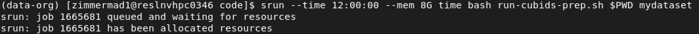
Next we can see the command launched for cubids-prep and the output of cleaning up the intermediate files from the bidsify step
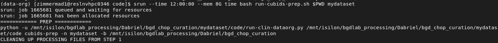
Next we will see the singularity command output that will run cubids add-nifti-info command inside the container. Also see some output from datalad concerning the unlocking of files to make and save changes to the dataset
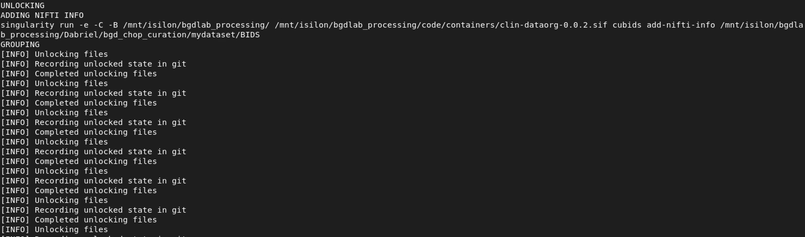
Following, we see the output of runningcubids group with the singularity command output.
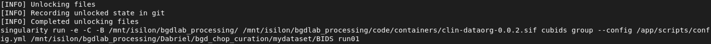
Next, we see output for the scan identification step showing the singularity command and then the output of running the script.
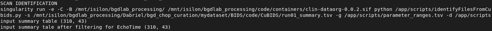
Finally we see the script submitting the command to run cubids apply as a separate SLURM job.
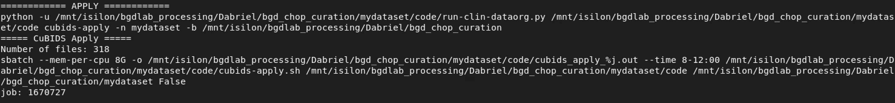
Since this example has less than 4000 scans, cubids apply is run as a single job.
6.2 CuBIDS Stages
Now we will explain in more detail each step that the process went through.
6.2.1 cubids add-nifit-info
Here we are adding information to the NifTI sidecars (JSON). See CuBIDS documentation cubids add-nifti-info for more information.
We can see the shortened original version of one of the JSONs for scan BIDS/sub-HM2MOR40C/ses-499739009000procId004921ageDays/anat/sub-HM2MOR40C_ses-499739009000procId004921ageDays_acq-MPRAGE_rec-DIS2D_run-001_T1w.nii.gz
{
"AcquisitionMatrixPE": 256,
"AcquisitionNumber": 1,
"BodyPart": "BRAIN",
"ConversionSoftware": "dcm2niix",
"ConversionSoftwareVersion": "v1.0.20241211",
"DeviceSerialNumber": "176559",
"EchoTime": 0.00252,
"FlipAngle": 9,
"HeudiconvVersion": "1.3.1",
"ImageOrientationPatientDICOM": [0, 1, 0, 0.122442, 0, -0.992476],
"ImageType": [
"ORIGINAL",
"PRIMARY",
"M",
"NORM",
"DIS2D",
"MFSPLIT",
"MAGNITUDE"
],
"ImagingFrequency": 123.261334,
"InPlanePhaseEncodingDirectionDICOM": "ROW",
"InstitutionAddress": "KOP Specialty Care Center 550 South Goddard Blvd KING OF PRUSSIA, PA 19406",
"InstitutionName": "KOPH SCC MRI",
"InversionTime": 0.9,
"MRAcquisitionType": "3D",
"MagneticFieldStrength": 3,
"Manufacturer": "Siemens",
"ManufacturersModelName": "MAGNETOM Vida",
"Modality": "MR",
"NonlinearGradientCorrection": true,
"PatientPosition": "HFS",
"PercentPhaseFOV": 100,
"PercentSampling": 100,
"PhaseEncodingSteps": 256,
"PixelBandwidth": 179,
"ProcedureStepDescription": "MR BRAIN W & W/O IV CONTRAST",
"ProtocolName": "t1_mprage_sag_p2_iso_0.9",
"ReconMatrixPE": 256,
"RepetitionTime": 1.9,
"SAR": 0.123027,
"ScanOptions": "PER",
"ScanningSequence": "GR",
"SequenceVariant": "SK",
"SeriesDescription": "t1_mprage_sag_p2_iso_0.9",
"SeriesNumber": 9,
"SliceThickness": 0.9,
"SoftwareVersions": "syngo MR XA50",
"StationName": "KOP MR2",
"StudyDescription": "MR BRAIN W & W/O IV CONTRAST",
"dcmmeta_affine": [
[0.8939999938011169, 0.0, 0.10522359609603882, -96.42701721191406],
[0.0, 0.859375, 0.0, -113.13762664794922],
[-0.11020000278949738, 0.0, 0.8529090881347656, -113.91870880126953],
[0.0, 0.0, 0.0, 1.0]
],
"dcmmeta_reorient_transform": [
[0.0, 0.0, -1.0, 255.0],
[0.0, -1.0, 0.0, 255.0],
[-1.0, 0.0, 0.0, 191.0],
[0.0, 0.0, 0.0, 1.0]
],
"dcmmeta_shape": [192, 256, 256],
"dcmmeta_slice_dim": 0,
"dcmmeta_version": 0.6,
"global": {
"const": {
"AcquisitionMatrix": [0, 256, 256, 0],
"AcquisitionNumber": 1,
"AngioFlag": "N",
"BitsAllocated": 16,
"BitsStored": 16,
"BodyPartExamined": "BRAIN",
"BurnedInAnnotation": "NO",
"CardiacNumberOfImages": 1,
"Columns": 256,
"DeidentificationMethodCodeSequence": [
{
"CodingSchemeDesignator": 113100.0}
],
"EchoTime": 2.52,
"EchoTrainLength": 1,
"FlipAngle": 9.0,
"HighBit": 15,
"ImageOrientationPatient": [0.0, 1.0, 0.0, 0.122442, 0.0, -0.992476],
"ImageType": [
"ORIGINAL",
"PRIMARY",
"M",
"NORM",
"DIS2D",
"MFSPLIT"
],
"ImagingFrequency": 123.261334,
"InPlanePhaseEncodingDirection": "ROW",
"InversionTime": 900.0,
"LargestImagePixelValue": 1059,
"MRAcquisitionType": "3D",
"MagneticFieldStrength": 3.0,
"Manufacturer": "Siemens Healthineers",
"ManufacturerModelName": "MAGNETOM Vida",
"Modality": "MR",
"NumberOfAverages": 1.0,
"NumberOfPhaseEncodingSteps": 256,
"NumberOfTemporalPositions": 1,
"PercentPhaseFieldOfView": 100.0,
"PercentSampling": 100.0,
"PhotometricInterpretation": "MONOCHROME2",
"PixelBandwidth": 179.0,
"PixelRepresentation": 0,
"PixelSpacing": [0.859375, 0.859375],
"ProtocolName": "t1_mprage_sag_p2_iso_0.9",
"RepetitionTime": 1900.0,
"RescaleIntercept": 0.0,
"RescaleSlope": 1.0,
"Rows": 256,
"SAR": 0.12302740054868,
"SamplesPerPixel": 1,
"ScanOptions": "PER",
"ScanningSequence": "GR",
"SequenceVariant": "SK",
"SeriesDescription": "t1_mprage_sag_p2_iso_0.9",
"SeriesNumber": 9,
"SliceThickness": 0.9,
"SmallestImagePixelValue": 0,
"SoftwareVersions": "syngo MR XA50"
}
}
}after running cubids add-nifti-info these fields are added to the end of the file.
"Obliquity": "True",
"VoxelSizeDim1": 0.9007634520530701,
"VoxelSizeDim2": 0.859375,
"VoxelSizeDim3": 0.859375,
"Dim1Size": 192,
"Dim2Size": 256,
"Dim3Size": 256,
"NumVolumes": 1,
"ImageOrientation": "RAS+"There are other changes made during this step that we can leverage use of datalad and VSCode to see! Open VSCode within a BIDS modality directory
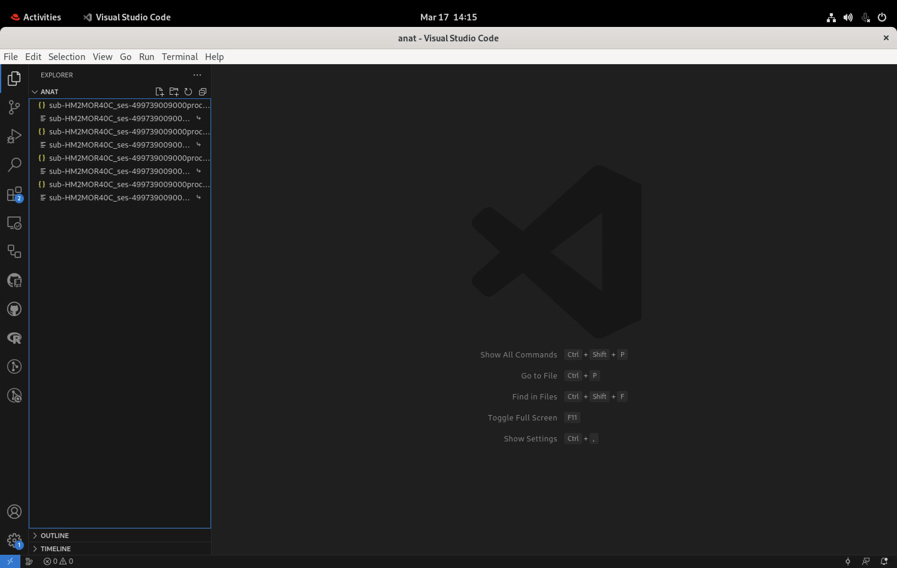
Then you click on the git icon on the left hand side right under the documents icon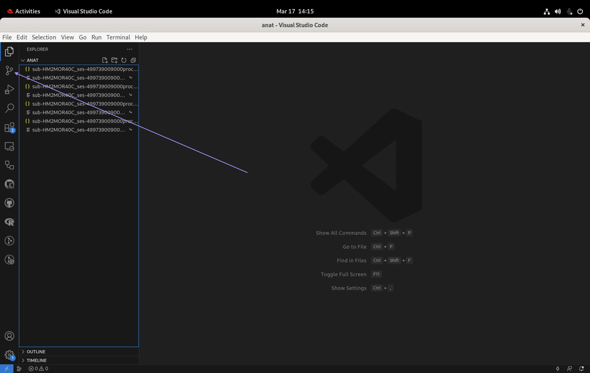
Then you click on ‘branches’ to see the list of saved changes. We will look for the ‘Add nifti info’ save since this is the stage we want to review.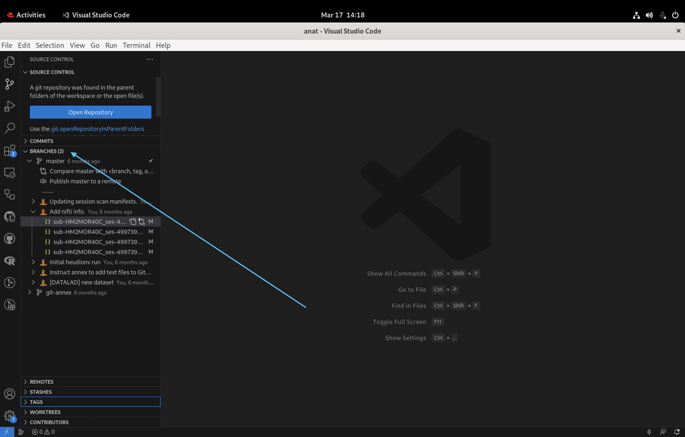
Then click on one of the JSONs listed underneath the ‘Add nifti info’ commit to see what has been changed between saves. On the left is the original document and the one of the right is the changed version.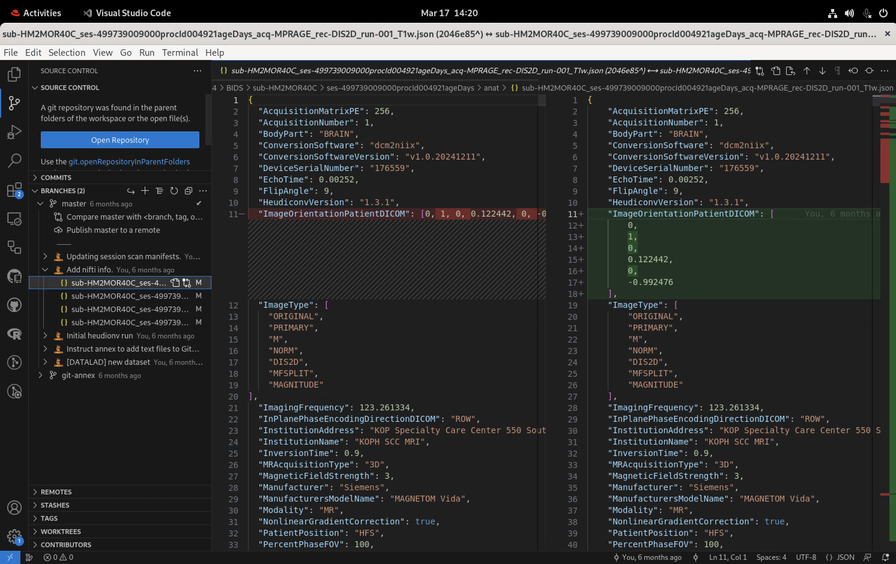
6.2.2 cubids group
Here we are using the config.yml to group scans based on the similarities of their metadata. See docs for cubids group information. Output from this step is the BIDS/code/CuBIDS directory.
6.2.3 scan identification
Here we are running a custom python script to further refine CuBIDS grouping and filename refinement. Outputs an edited version ofBIDS/code/CuBIDS/run01_summary.tsv as BIDS/code/CuBIDS/run01_summary_edited.tsv
Figure 6.3: run01_summary_edited.tsv
6.2.4 cubids apply
This is the active stage of file renaming based on the cubids group and scan identification step that generated the run01_summary_edited table and the run01_files table.
batching
When there are more than 4000 scans, the cubids apply job is batched andcode/batch_cubids_apply_config.csv is created to submit an array of cubids apply jobs. This involves splitting up the run01_summary_edited table into batches with an equal number of RenameEntitySets
Figure 6.4: Config for batched CuBIDS
output
Un-batched runs
📁 BIDS
├── 📁 code
├── 📁 CuBIDS
├── 📄 run01_summary.tsv
├── 📄 run01_summary.json
├── 📄 run01_files.tsv
├── 📄 run01_files.json
├── 📄 run01_AcqGrouping.tsv
├── 📄 run01_AcqGrouping.json
├── 📄 run01_AcqGroupInfo.tsv
├── 📄 run01_AcqGroupInfo.json
├── 📄 run02_summary.tsv
├── 📄 run02_summary.json
├── 📄 run02_files.tsv
├── 📄 run02_files.json
└── 📄 run02_full_cmd.sh
Batched runs
📁 BIDS
├── 📁 code
├── 📁 CuBIDS
├── batch
├── 📄 batch1_files.tsv
├── 📄 batch1_summary_edited.tsv
├── 📄 run02_batch1_full_cmd.sh
├── 📄 run02_batch1_files.tsv
├── 📄 run02_batch1_files.json
├── 📄 run02_batch1_summary.tsv
├── 📄 run02_batch1_summary.json
├── 📄 run02_batch1_AcqGrouping.tsv
├── 📄 run02_batch1_AcqGrouping.json
├── 📄 run02_batch1_AcqGroupInfo.tsv
├── 📄 run02_batch1_AcqGroupInfo.json
└── ...
├── 📄 run01_summary.tsv
├── 📄 run01_summary.json
├── 📄 run01_files.tsv
├── 📄 run01_files.json
├── 📄 run01_AcqGrouping.tsv
├── 📄 run01_AcqGrouping.json
├── 📄 run01_AcqGroupInfo.tsv
├── 📄 run01_AcqGroupInfo.json
├── 📄 run02_summary.tsv
├── 📄 run02_summary.json
├── 📄 run02_files.tsv
├── 📄 run02_files.json
└── 📄 run02_full_cmd.sh
6.3 Output: Filename Changes
Ultimately, CuBIDS and the scan identification process changes the names of files. After running cubids apply a bash script is created with mv commands to change filenames. Snapshot of the BIDS/code/CuBIDS/run02_full_cmd.sh:
## [1] "#!/bin/bash"
## [2] "mv /mnt/isilon/bgdlab_processing/Dabriel/bgd_chop_curation/mydataset/BIDS/sub-HM1IXZSS/ses-255522594163procId002987ageDays/anat/sub-HM1IXZSS_ses-255522594163procId002987ageDays_acq-TSE_rec-NORM_run-001_T2w.nii.gz /mnt/isilon/bgdlab_processing/Dabriel/bgd_chop_curation/mydataset/BIDS/sub-HM1IXZSS/ses-255522594163procId002987ageDays/anat/sub-HM1IXZSS_ses-255522594163procId002987ageDays_acq-TSE3TScannerId35008Slices75Voxel0p547mm_rec-NORM_run-01_T2w.nii.gz"
## [3] "mv /mnt/isilon/bgdlab_processing/Dabriel/bgd_chop_curation/mydataset/BIDS/sub-HM1IXZSS/ses-255522594163procId002987ageDays/anat/sub-HM1IXZSS_ses-255522594163procId002987ageDays_acq-TSE_rec-NORM_run-001_T2w.json /mnt/isilon/bgdlab_processing/Dabriel/bgd_chop_curation/mydataset/BIDS/sub-HM1IXZSS/ses-255522594163procId002987ageDays/anat/sub-HM1IXZSS_ses-255522594163procId002987ageDays_acq-TSE3TScannerId35008Slices75Voxel0p547mm_rec-NORM_run-01_T2w.json"
## [4] "mv /mnt/isilon/bgdlab_processing/Dabriel/bgd_chop_curation/mydataset/BIDS/sub-HM1JBID6V/ses-137594210478procId000237ageDays/anat/sub-HM1JBID6V_ses-137594210478procId000237ageDays_acq-TSE_rec-NORM_run-001_T2w.nii.gz /mnt/isilon/bgdlab_processing/Dabriel/bgd_chop_curation/mydataset/BIDS/sub-HM1JBID6V/ses-137594210478procId000237ageDays/anat/sub-HM1JBID6V_ses-137594210478procId000237ageDays_acq-TSE3TScannerId67016Slices64Voxel0p469mm_rec-NORM_run-01_T2w.nii.gz"
## [5] "mv /mnt/isilon/bgdlab_processing/Dabriel/bgd_chop_curation/mydataset/BIDS/sub-HM1JBID6V/ses-137594210478procId000237ageDays/anat/sub-HM1JBID6V_ses-137594210478procId000237ageDays_acq-TSE_rec-NORM_run-001_T2w.json /mnt/isilon/bgdlab_processing/Dabriel/bgd_chop_curation/mydataset/BIDS/sub-HM1JBID6V/ses-137594210478procId000237ageDays/anat/sub-HM1JBID6V_ses-137594210478procId000237ageDays_acq-TSE3TScannerId67016Slices64Voxel0p469mm_rec-NORM_run-01_T2w.json"
## [6] "mv /mnt/isilon/bgdlab_processing/Dabriel/bgd_chop_curation/mydataset/BIDS/sub-HMJYU7D0/ses-182938630132procId000145ageDays/anat/sub-HMJYU7D0_ses-182938630132procId000145ageDays_acq-TSE_rec-NORM_run-001_T2w.nii.gz /mnt/isilon/bgdlab_processing/Dabriel/bgd_chop_curation/mydataset/BIDS/sub-HMJYU7D0/ses-182938630132procId000145ageDays/anat/sub-HMJYU7D0_ses-182938630132procId000145ageDays_acq-TSE1p5TScannerId25408Slices30Voxel0p446mm_rec-NORM_run-01_T2w.nii.gz"
## [7] "mv /mnt/isilon/bgdlab_processing/Dabriel/bgd_chop_curation/mydataset/BIDS/sub-HMJYU7D0/ses-182938630132procId000145ageDays/anat/sub-HMJYU7D0_ses-182938630132procId000145ageDays_acq-TSE_rec-NORM_run-001_T2w.json /mnt/isilon/bgdlab_processing/Dabriel/bgd_chop_curation/mydataset/BIDS/sub-HMJYU7D0/ses-182938630132procId000145ageDays/anat/sub-HMJYU7D0_ses-182938630132procId000145ageDays_acq-TSE1p5TScannerId25408Slices30Voxel0p446mm_rec-NORM_run-01_T2w.json"
## [8] "mv /mnt/isilon/bgdlab_processing/Dabriel/bgd_chop_curation/mydataset/BIDS/sub-HMI5JCBM/ses-129888461621procId001768ageDays/anat/sub-HMI5JCBM_ses-129888461621procId001768ageDays_acq-TSE_rec-NORM_run-001_T2w.nii.gz /mnt/isilon/bgdlab_processing/Dabriel/bgd_chop_curation/mydataset/BIDS/sub-HMI5JCBM/ses-129888461621procId001768ageDays/anat/sub-HMI5JCBM_ses-129888461621procId001768ageDays_acq-TSE3TScannerId45195Slices78Voxel0p573mm_rec-NORM_run-01_T2w.nii.gz"
## [9] "mv /mnt/isilon/bgdlab_processing/Dabriel/bgd_chop_curation/mydataset/BIDS/sub-HMI5JCBM/ses-129888461621procId001768ageDays/anat/sub-HMI5JCBM_ses-129888461621procId001768ageDays_acq-TSE_rec-NORM_run-001_T2w.json /mnt/isilon/bgdlab_processing/Dabriel/bgd_chop_curation/mydataset/BIDS/sub-HMI5JCBM/ses-129888461621procId001768ageDays/anat/sub-HMI5JCBM_ses-129888461621procId001768ageDays_acq-TSE3TScannerId45195Slices78Voxel0p573mm_rec-NORM_run-01_T2w.json"
## [10] "mv /mnt/isilon/bgdlab_processing/Dabriel/bgd_chop_curation/mydataset/BIDS/sub-HMFZJWAM/ses-261755383453procId000264ageDays/anat/sub-HMFZJWAM_ses-261755383453procId000264ageDays_acq-TSE_rec-NORM_run-001_T2w.nii.gz /mnt/isilon/bgdlab_processing/Dabriel/bgd_chop_curation/mydataset/BIDS/sub-HMFZJWAM/ses-261755383453procId000264ageDays/anat/sub-HMFZJWAM_ses-261755383453procId000264ageDays_acq-TSE3TScannerId40180Slices70Voxel0p521mm_rec-NORM_run-01_T2w.nii.gz"
## [11] "mv /mnt/isilon/bgdlab_processing/Dabriel/bgd_chop_curation/mydataset/BIDS/sub-HMFZJWAM/ses-261755383453procId000264ageDays/anat/sub-HMFZJWAM_ses-261755383453procId000264ageDays_acq-TSE_rec-NORM_run-001_T2w.json /mnt/isilon/bgdlab_processing/Dabriel/bgd_chop_curation/mydataset/BIDS/sub-HMFZJWAM/ses-261755383453procId000264ageDays/anat/sub-HMFZJWAM_ses-261755383453procId000264ageDays_acq-TSE3TScannerId40180Slices70Voxel0p521mm_rec-NORM_run-01_T2w.json"
## [12] "mv /mnt/isilon/bgdlab_processing/Dabriel/bgd_chop_curation/mydataset/BIDS/sub-HM49D9661/ses-460394618114procId005097ageDays/anat/sub-HM49D9661_ses-460394618114procId005097ageDays_acq-TSE_rec-NORM_run-001_T2w.nii.gz /mnt/isilon/bgdlab_processing/Dabriel/bgd_chop_curation/mydataset/BIDS/sub-HM49D9661/ses-460394618114procId005097ageDays/anat/sub-HM49D9661_ses-460394618114procId005097ageDays_acq-TSE3TScannerId46005Slices81Voxel0p573mm_rec-NORM_run-01_T2w.nii.gz"
## [13] "mv /mnt/isilon/bgdlab_processing/Dabriel/bgd_chop_curation/mydataset/BIDS/sub-HM49D9661/ses-460394618114procId005097ageDays/anat/sub-HM49D9661_ses-460394618114procId005097ageDays_acq-TSE_rec-NORM_run-001_T2w.json /mnt/isilon/bgdlab_processing/Dabriel/bgd_chop_curation/mydataset/BIDS/sub-HM49D9661/ses-460394618114procId005097ageDays/anat/sub-HM49D9661_ses-460394618114procId005097ageDays_acq-TSE3TScannerId46005Slices81Voxel0p573mm_rec-NORM_run-01_T2w.json"
## [14] "mv /mnt/isilon/bgdlab_processing/Dabriel/bgd_chop_curation/mydataset/BIDS/sub-HM30TCOYM/ses-496049846900procId005611ageDays/anat/sub-HM30TCOYM_ses-496049846900procId005611ageDays_acq-TSE_rec-NORM_run-001_T2w.nii.gz /mnt/isilon/bgdlab_processing/Dabriel/bgd_chop_curation/mydataset/BIDS/sub-HM30TCOYM/ses-496049846900procId005611ageDays/anat/sub-HM30TCOYM_ses-496049846900procId005611ageDays_acq-TSE3TScannerId45886Slices80Voxel0p573mm_rec-NORM_run-01_T2w.nii.gz"
## [15] "mv /mnt/isilon/bgdlab_processing/Dabriel/bgd_chop_curation/mydataset/BIDS/sub-HM30TCOYM/ses-496049846900procId005611ageDays/anat/sub-HM30TCOYM_ses-496049846900procId005611ageDays_acq-TSE_rec-NORM_run-001_T2w.json /mnt/isilon/bgdlab_processing/Dabriel/bgd_chop_curation/mydataset/BIDS/sub-HM30TCOYM/ses-496049846900procId005611ageDays/anat/sub-HM30TCOYM_ses-496049846900procId005611ageDays_acq-TSE3TScannerId45886Slices80Voxel0p573mm_rec-NORM_run-01_T2w.json"
## [16] "mv /mnt/isilon/bgdlab_processing/Dabriel/bgd_chop_curation/mydataset/BIDS/sub-HM17ZGGDV/ses-237241371733procId000211ageDays/anat/sub-HM17ZGGDV_ses-237241371733procId000211ageDays_acq-TSE_rec-NORM_run-001_T2w.nii.gz /mnt/isilon/bgdlab_processing/Dabriel/bgd_chop_curation/mydataset/BIDS/sub-HM17ZGGDV/ses-237241371733procId000211ageDays/anat/sub-HM17ZGGDV_ses-237241371733procId000211ageDays_acq-TSE3TScannerId35008Slices70Voxel0p521mm_rec-NORM_run-01_T2w.nii.gz"
## [17] "mv /mnt/isilon/bgdlab_processing/Dabriel/bgd_chop_curation/mydataset/BIDS/sub-HM17ZGGDV/ses-237241371733procId000211ageDays/anat/sub-HM17ZGGDV_ses-237241371733procId000211ageDays_acq-TSE_rec-NORM_run-001_T2w.json /mnt/isilon/bgdlab_processing/Dabriel/bgd_chop_curation/mydataset/BIDS/sub-HM17ZGGDV/ses-237241371733procId000211ageDays/anat/sub-HM17ZGGDV_ses-237241371733procId000211ageDays_acq-TSE3TScannerId35008Slices70Voxel0p521mm_rec-NORM_run-01_T2w.json"
## [18] "mv /mnt/isilon/bgdlab_processing/Dabriel/bgd_chop_curation/mydataset/BIDS/sub-HM10JW4Q8/ses-89041761950procId006697ageDays/anat/sub-HM10JW4Q8_ses-89041761950procId006697ageDays_acq-TSE_rec-NORM_run-001_T2w.nii.gz /mnt/isilon/bgdlab_processing/Dabriel/bgd_chop_curation/mydataset/BIDS/sub-HM10JW4Q8/ses-89041761950procId006697ageDays/anat/sub-HM10JW4Q8_ses-89041761950procId006697ageDays_acq-TSE3TScannerId46005Slices80Voxel0p573mm_rec-NORM_run-01_T2w.nii.gz"
## [19] "mv /mnt/isilon/bgdlab_processing/Dabriel/bgd_chop_curation/mydataset/BIDS/sub-HM10JW4Q8/ses-89041761950procId006697ageDays/anat/sub-HM10JW4Q8_ses-89041761950procId006697ageDays_acq-TSE_rec-NORM_run-001_T2w.json /mnt/isilon/bgdlab_processing/Dabriel/bgd_chop_curation/mydataset/BIDS/sub-HM10JW4Q8/ses-89041761950procId006697ageDays/anat/sub-HM10JW4Q8_ses-89041761950procId006697ageDays_acq-TSE3TScannerId46005Slices80Voxel0p573mm_rec-NORM_run-01_T2w.json"
## [20] "mv /mnt/isilon/bgdlab_processing/Dabriel/bgd_chop_curation/mydataset/BIDS/sub-HM6ERRXF/ses-108112728499procId002663ageDays/anat/sub-HM6ERRXF_ses-108112728499procId002663ageDays_acq-TSE_rec-NORM_run-001_T2w.nii.gz /mnt/isilon/bgdlab_processing/Dabriel/bgd_chop_curation/mydataset/BIDS/sub-HM6ERRXF/ses-108112728499procId002663ageDays/anat/sub-HM6ERRXF_ses-108112728499procId002663ageDays_acq-TSE3TScannerId67016Slices75Voxel0p573mm_rec-NORM_run-01_T2w.nii.gz"
## [21] "mv /mnt/isilon/bgdlab_processing/Dabriel/bgd_chop_curation/mydataset/BIDS/sub-HM6ERRXF/ses-108112728499procId002663ageDays/anat/sub-HM6ERRXF_ses-108112728499procId002663ageDays_acq-TSE_rec-NORM_run-001_T2w.json /mnt/isilon/bgdlab_processing/Dabriel/bgd_chop_curation/mydataset/BIDS/sub-HM6ERRXF/ses-108112728499procId002663ageDays/anat/sub-HM6ERRXF_ses-108112728499procId002663ageDays_acq-TSE3TScannerId67016Slices75Voxel0p573mm_rec-NORM_run-01_T2w.json"
## [22] "mv /mnt/isilon/bgdlab_processing/Dabriel/bgd_chop_curation/mydataset/BIDS/sub-HM3ZHEADJ/ses-376170595539procId001843ageDays/anat/sub-HM3ZHEADJ_ses-376170595539procId001843ageDays_acq-TSE_rec-NORM_run-001_T2w.nii.gz /mnt/isilon/bgdlab_processing/Dabriel/bgd_chop_curation/mydataset/BIDS/sub-HM3ZHEADJ/ses-376170595539procId001843ageDays/anat/sub-HM3ZHEADJ_ses-376170595539procId001843ageDays_acq-TSE3TScannerId46005Slices82Voxel0p599mm_rec-NORM_run-01_T2w.nii.gz"
## [23] "mv /mnt/isilon/bgdlab_processing/Dabriel/bgd_chop_curation/mydataset/BIDS/sub-HM3ZHEADJ/ses-376170595539procId001843ageDays/anat/sub-HM3ZHEADJ_ses-376170595539procId001843ageDays_acq-TSE_rec-NORM_run-001_T2w.json /mnt/isilon/bgdlab_processing/Dabriel/bgd_chop_curation/mydataset/BIDS/sub-HM3ZHEADJ/ses-376170595539procId001843ageDays/anat/sub-HM3ZHEADJ_ses-376170595539procId001843ageDays_acq-TSE3TScannerId46005Slices82Voxel0p599mm_rec-NORM_run-01_T2w.json"
## [24] "mv /mnt/isilon/bgdlab_processing/Dabriel/bgd_chop_curation/mydataset/BIDS/sub-HM3XPZ422/ses-354763007566procId000035ageDays/anat/sub-HM3XPZ422_ses-354763007566procId000035ageDays_acq-TSE_rec-NORM_run-001_T2w.nii.gz /mnt/isilon/bgdlab_processing/Dabriel/bgd_chop_curation/mydataset/BIDS/sub-HM3XPZ422/ses-354763007566procId000035ageDays/anat/sub-HM3XPZ422_ses-354763007566procId000035ageDays_acq-TSE3TScannerId67016Slices56Voxel0p469mm_rec-NORM_run-01_T2w.nii.gz"
## [25] "mv /mnt/isilon/bgdlab_processing/Dabriel/bgd_chop_curation/mydataset/BIDS/sub-HM3XPZ422/ses-354763007566procId000035ageDays/anat/sub-HM3XPZ422_ses-354763007566procId000035ageDays_acq-TSE_rec-NORM_run-001_T2w.json /mnt/isilon/bgdlab_processing/Dabriel/bgd_chop_curation/mydataset/BIDS/sub-HM3XPZ422/ses-354763007566procId000035ageDays/anat/sub-HM3XPZ422_ses-354763007566procId000035ageDays_acq-TSE3TScannerId67016Slices56Voxel0p469mm_rec-NORM_run-01_T2w.json"
## [26] "mv /mnt/isilon/bgdlab_processing/Dabriel/bgd_chop_curation/mydataset/BIDS/sub-HM3R34UWB/ses-328470813308procId000316ageDays/anat/sub-HM3R34UWB_ses-328470813308procId000316ageDays_acq-TSE_rec-NORM_run-001_T2w.nii.gz /mnt/isilon/bgdlab_processing/Dabriel/bgd_chop_curation/mydataset/BIDS/sub-HM3R34UWB/ses-328470813308procId000316ageDays/anat/sub-HM3R34UWB_ses-328470813308procId000316ageDays_acq-TSE3TScannerId45886Slices74Voxel0p521mm_rec-NORM_run-01_T2w.nii.gz"
## [27] "mv /mnt/isilon/bgdlab_processing/Dabriel/bgd_chop_curation/mydataset/BIDS/sub-HM3R34UWB/ses-328470813308procId000316ageDays/anat/sub-HM3R34UWB_ses-328470813308procId000316ageDays_acq-TSE_rec-NORM_run-001_T2w.json /mnt/isilon/bgdlab_processing/Dabriel/bgd_chop_curation/mydataset/BIDS/sub-HM3R34UWB/ses-328470813308procId000316ageDays/anat/sub-HM3R34UWB_ses-328470813308procId000316ageDays_acq-TSE3TScannerId45886Slices74Voxel0p521mm_rec-NORM_run-01_T2w.json"
## [28] "mv /mnt/isilon/bgdlab_processing/Dabriel/bgd_chop_curation/mydataset/BIDS/sub-HM3LVDQB3/ses-286282503112procId000693ageDays/anat/sub-HM3LVDQB3_ses-286282503112procId000693ageDays_acq-TSE_rec-NORM_run-001_T2w.nii.gz /mnt/isilon/bgdlab_processing/Dabriel/bgd_chop_curation/mydataset/BIDS/sub-HM3LVDQB3/ses-286282503112procId000693ageDays/anat/sub-HM3LVDQB3_ses-286282503112procId000693ageDays_acq-TSE3TScannerId67016Slices76Voxel0p547mm_rec-NORM_run-01_T2w.nii.gz"
## [29] "mv /mnt/isilon/bgdlab_processing/Dabriel/bgd_chop_curation/mydataset/BIDS/sub-HM3LVDQB3/ses-286282503112procId000693ageDays/anat/sub-HM3LVDQB3_ses-286282503112procId000693ageDays_acq-TSE_rec-NORM_run-001_T2w.json /mnt/isilon/bgdlab_processing/Dabriel/bgd_chop_curation/mydataset/BIDS/sub-HM3LVDQB3/ses-286282503112procId000693ageDays/anat/sub-HM3LVDQB3_ses-286282503112procId000693ageDays_acq-TSE3TScannerId67016Slices76Voxel0p547mm_rec-NORM_run-01_T2w.json"
## [30] "mv /mnt/isilon/bgdlab_processing/Dabriel/bgd_chop_curation/mydataset/BIDS/sub-HM3GIPTLT/ses-138957303991procId000593ageDays/anat/sub-HM3GIPTLT_ses-138957303991procId000593ageDays_acq-TSE_rec-NORM_run-001_T2w.nii.gz /mnt/isilon/bgdlab_processing/Dabriel/bgd_chop_curation/mydataset/BIDS/sub-HM3GIPTLT/ses-138957303991procId000593ageDays/anat/sub-HM3GIPTLT_ses-138957303991procId000593ageDays_acq-TSE1p5TScannerId69664Slices76Voxel0p521mm_rec-NORM_run-01_T2w.nii.gz"
## [31] "mv /mnt/isilon/bgdlab_processing/Dabriel/bgd_chop_curation/mydataset/BIDS/sub-HM3GIPTLT/ses-138957303991procId000593ageDays/anat/sub-HM3GIPTLT_ses-138957303991procId000593ageDays_acq-TSE_rec-NORM_run-001_T2w.json /mnt/isilon/bgdlab_processing/Dabriel/bgd_chop_curation/mydataset/BIDS/sub-HM3GIPTLT/ses-138957303991procId000593ageDays/anat/sub-HM3GIPTLT_ses-138957303991procId000593ageDays_acq-TSE1p5TScannerId69664Slices76Voxel0p521mm_rec-NORM_run-01_T2w.json"
## [32] "mv /mnt/isilon/bgdlab_processing/Dabriel/bgd_chop_curation/mydataset/BIDS/sub-HM3DK2GJA/ses-62827077835procId001201ageDays/anat/sub-HM3DK2GJA_ses-62827077835procId001201ageDays_acq-TSE_rec-NORM_run-001_T2w.nii.gz /mnt/isilon/bgdlab_processing/Dabriel/bgd_chop_curation/mydataset/BIDS/sub-HM3DK2GJA/ses-62827077835procId001201ageDays/anat/sub-HM3DK2GJA_ses-62827077835procId001201ageDays_acq-TSE1p5TScannerId37049Slices30Voxel0p446mm_rec-NORM_run-01_T2w.nii.gz"
## [33] "mv /mnt/isilon/bgdlab_processing/Dabriel/bgd_chop_curation/mydataset/BIDS/sub-HM3DK2GJA/ses-62827077835procId001201ageDays/anat/sub-HM3DK2GJA_ses-62827077835procId001201ageDays_acq-TSE_rec-NORM_run-001_T2w.json /mnt/isilon/bgdlab_processing/Dabriel/bgd_chop_curation/mydataset/BIDS/sub-HM3DK2GJA/ses-62827077835procId001201ageDays/anat/sub-HM3DK2GJA_ses-62827077835procId001201ageDays_acq-TSE1p5TScannerId37049Slices30Voxel0p446mm_rec-NORM_run-01_T2w.json"
## [34] "mv /mnt/isilon/bgdlab_processing/Dabriel/bgd_chop_curation/mydataset/BIDS/sub-HM3CUKU4/ses-214587510466procId000003ageDays/anat/sub-HM3CUKU4_ses-214587510466procId000003ageDays_acq-TSE_rec-NORM_run-001_T2w.nii.gz /mnt/isilon/bgdlab_processing/Dabriel/bgd_chop_curation/mydataset/BIDS/sub-HM3CUKU4/ses-214587510466procId000003ageDays/anat/sub-HM3CUKU4_ses-214587510466procId000003ageDays_acq-TSE3TScannerId35008Slices60Voxel0p469mm_rec-NORM_run-01_T2w.nii.gz"
## [35] "mv /mnt/isilon/bgdlab_processing/Dabriel/bgd_chop_curation/mydataset/BIDS/sub-HM3CUKU4/ses-214587510466procId000003ageDays/anat/sub-HM3CUKU4_ses-214587510466procId000003ageDays_acq-TSE_rec-NORM_run-001_T2w.json /mnt/isilon/bgdlab_processing/Dabriel/bgd_chop_curation/mydataset/BIDS/sub-HM3CUKU4/ses-214587510466procId000003ageDays/anat/sub-HM3CUKU4_ses-214587510466procId000003ageDays_acq-TSE3TScannerId35008Slices60Voxel0p469mm_rec-NORM_run-01_T2w.json"
## [36] "mv /mnt/isilon/bgdlab_processing/Dabriel/bgd_chop_curation/mydataset/BIDS/sub-HM3CUKU4/ses-81400185172procId000457ageDays/anat/sub-HM3CUKU4_ses-81400185172procId000457ageDays_acq-TSE_rec-NORM_run-001_T2w.nii.gz /mnt/isilon/bgdlab_processing/Dabriel/bgd_chop_curation/mydataset/BIDS/sub-HM3CUKU4/ses-81400185172procId000457ageDays/anat/sub-HM3CUKU4_ses-81400185172procId000457ageDays_acq-TSE3TScannerId35014Slices75Voxel0p521mm_rec-NORM_run-01_T2w.nii.gz"
## [37] "mv /mnt/isilon/bgdlab_processing/Dabriel/bgd_chop_curation/mydataset/BIDS/sub-HM3CUKU4/ses-81400185172procId000457ageDays/anat/sub-HM3CUKU4_ses-81400185172procId000457ageDays_acq-TSE_rec-NORM_run-001_T2w.json /mnt/isilon/bgdlab_processing/Dabriel/bgd_chop_curation/mydataset/BIDS/sub-HM3CUKU4/ses-81400185172procId000457ageDays/anat/sub-HM3CUKU4_ses-81400185172procId000457ageDays_acq-TSE3TScannerId35014Slices75Voxel0p521mm_rec-NORM_run-01_T2w.json"
## [38] "mv /mnt/isilon/bgdlab_processing/Dabriel/bgd_chop_curation/mydataset/BIDS/sub-HM2UCN8X3/ses-235926352385procId002004ageDays/anat/sub-HM2UCN8X3_ses-235926352385procId002004ageDays_acq-TSE_rec-NORM_run-001_T2w.nii.gz /mnt/isilon/bgdlab_processing/Dabriel/bgd_chop_curation/mydataset/BIDS/sub-HM2UCN8X3/ses-235926352385procId002004ageDays/anat/sub-HM2UCN8X3_ses-235926352385procId002004ageDays_acq-TSE3TScannerId67016Slices27Voxel0p521mm_rec-NORM_run-01_T2w.nii.gz"
## [39] "mv /mnt/isilon/bgdlab_processing/Dabriel/bgd_chop_curation/mydataset/BIDS/sub-HM2UCN8X3/ses-235926352385procId002004ageDays/anat/sub-HM2UCN8X3_ses-235926352385procId002004ageDays_acq-TSE_rec-NORM_run-001_T2w.json /mnt/isilon/bgdlab_processing/Dabriel/bgd_chop_curation/mydataset/BIDS/sub-HM2UCN8X3/ses-235926352385procId002004ageDays/anat/sub-HM2UCN8X3_ses-235926352385procId002004ageDays_acq-TSE3TScannerId67016Slices27Voxel0p521mm_rec-NORM_run-01_T2w.json"
## [40] "mv /mnt/isilon/bgdlab_processing/Dabriel/bgd_chop_curation/mydataset/BIDS/sub-HM2DZDUWV/ses-65683143185procId003486ageDays/anat/sub-HM2DZDUWV_ses-65683143185procId003486ageDays_acq-TSE_rec-NORM_run-001_T2w.nii.gz /mnt/isilon/bgdlab_processing/Dabriel/bgd_chop_curation/mydataset/BIDS/sub-HM2DZDUWV/ses-65683143185procId003486ageDays/anat/sub-HM2DZDUWV_ses-65683143185procId003486ageDays_acq-TSE3TScannerId40156Slices76Voxel0p521mm_rec-NORM_run-01_T2w.nii.gz"
## [41] "mv /mnt/isilon/bgdlab_processing/Dabriel/bgd_chop_curation/mydataset/BIDS/sub-HM2DZDUWV/ses-65683143185procId003486ageDays/anat/sub-HM2DZDUWV_ses-65683143185procId003486ageDays_acq-TSE_rec-NORM_run-001_T2w.json /mnt/isilon/bgdlab_processing/Dabriel/bgd_chop_curation/mydataset/BIDS/sub-HM2DZDUWV/ses-65683143185procId003486ageDays/anat/sub-HM2DZDUWV_ses-65683143185procId003486ageDays_acq-TSE3TScannerId40156Slices76Voxel0p521mm_rec-NORM_run-01_T2w.json"
## [42] "mv /mnt/isilon/bgdlab_processing/Dabriel/bgd_chop_curation/mydataset/BIDS/sub-HM2CWVZ18/ses-165385843078procId002772ageDays/anat/sub-HM2CWVZ18_ses-165385843078procId002772ageDays_acq-TSE_rec-NORM_run-001_T2w.nii.gz /mnt/isilon/bgdlab_processing/Dabriel/bgd_chop_curation/mydataset/BIDS/sub-HM2CWVZ18/ses-165385843078procId002772ageDays/anat/sub-HM2CWVZ18_ses-165385843078procId002772ageDays_acq-TSE3TScannerId40156Slices75Voxel0p521mm_rec-NORM_run-01_T2w.nii.gz"
## [43] "mv /mnt/isilon/bgdlab_processing/Dabriel/bgd_chop_curation/mydataset/BIDS/sub-HM2CWVZ18/ses-165385843078procId002772ageDays/anat/sub-HM2CWVZ18_ses-165385843078procId002772ageDays_acq-TSE_rec-NORM_run-001_T2w.json /mnt/isilon/bgdlab_processing/Dabriel/bgd_chop_curation/mydataset/BIDS/sub-HM2CWVZ18/ses-165385843078procId002772ageDays/anat/sub-HM2CWVZ18_ses-165385843078procId002772ageDays_acq-TSE3TScannerId40156Slices75Voxel0p521mm_rec-NORM_run-01_T2w.json"
## [44] "mv /mnt/isilon/bgdlab_processing/Dabriel/bgd_chop_curation/mydataset/BIDS/sub-HM1XWSHP4/ses-465998518083procId005277ageDays/anat/sub-HM1XWSHP4_ses-465998518083procId005277ageDays_acq-TSE_rec-NORM_run-001_T2w.nii.gz /mnt/isilon/bgdlab_processing/Dabriel/bgd_chop_curation/mydataset/BIDS/sub-HM1XWSHP4/ses-465998518083procId005277ageDays/anat/sub-HM1XWSHP4_ses-465998518083procId005277ageDays_acq-TSE3TScannerId46005Slices81Voxel0p573mm_rec-NORM_run-01_T2w.nii.gz"
## [45] "mv /mnt/isilon/bgdlab_processing/Dabriel/bgd_chop_curation/mydataset/BIDS/sub-HM1XWSHP4/ses-465998518083procId005277ageDays/anat/sub-HM1XWSHP4_ses-465998518083procId005277ageDays_acq-TSE_rec-NORM_run-001_T2w.json /mnt/isilon/bgdlab_processing/Dabriel/bgd_chop_curation/mydataset/BIDS/sub-HM1XWSHP4/ses-465998518083procId005277ageDays/anat/sub-HM1XWSHP4_ses-465998518083procId005277ageDays_acq-TSE3TScannerId46005Slices81Voxel0p573mm_rec-NORM_run-01_T2w.json"
## [46] "mv /mnt/isilon/bgdlab_processing/Dabriel/bgd_chop_curation/mydataset/BIDS/sub-HM1QN9QGT/ses-499218028003procId005892ageDays/anat/sub-HM1QN9QGT_ses-499218028003procId005892ageDays_acq-TSE_rec-NORM_run-001_T2w.nii.gz /mnt/isilon/bgdlab_processing/Dabriel/bgd_chop_curation/mydataset/BIDS/sub-HM1QN9QGT/ses-499218028003procId005892ageDays/anat/sub-HM1QN9QGT_ses-499218028003procId005892ageDays_acq-TSE3TScannerId45886Slices80Voxel0p573mm_rec-NORM_run-01_T2w.nii.gz"
## [47] "mv /mnt/isilon/bgdlab_processing/Dabriel/bgd_chop_curation/mydataset/BIDS/sub-HM1QN9QGT/ses-499218028003procId005892ageDays/anat/sub-HM1QN9QGT_ses-499218028003procId005892ageDays_acq-TSE_rec-NORM_run-001_T2w.json /mnt/isilon/bgdlab_processing/Dabriel/bgd_chop_curation/mydataset/BIDS/sub-HM1QN9QGT/ses-499218028003procId005892ageDays/anat/sub-HM1QN9QGT_ses-499218028003procId005892ageDays_acq-TSE3TScannerId45886Slices80Voxel0p573mm_rec-NORM_run-01_T2w.json"
## [48] "mv /mnt/isilon/bgdlab_processing/Dabriel/bgd_chop_curation/mydataset/BIDS/sub-HMNUVFGR/ses-195413447872procId003130ageDays/anat/sub-HMNUVFGR_ses-195413447872procId003130ageDays_acq-TSE_rec-NORM_run-001_T2w.nii.gz /mnt/isilon/bgdlab_processing/Dabriel/bgd_chop_curation/mydataset/BIDS/sub-HMNUVFGR/ses-195413447872procId003130ageDays/anat/sub-HMNUVFGR_ses-195413447872procId003130ageDays_acq-TSE3TScannerId67016Slices76Voxel0p521mm_rec-NORM_run-01_T2w.nii.gz"
## [49] "mv /mnt/isilon/bgdlab_processing/Dabriel/bgd_chop_curation/mydataset/BIDS/sub-HMNUVFGR/ses-195413447872procId003130ageDays/anat/sub-HMNUVFGR_ses-195413447872procId003130ageDays_acq-TSE_rec-NORM_run-001_T2w.json /mnt/isilon/bgdlab_processing/Dabriel/bgd_chop_curation/mydataset/BIDS/sub-HMNUVFGR/ses-195413447872procId003130ageDays/anat/sub-HMNUVFGR_ses-195413447872procId003130ageDays_acq-TSE3TScannerId67016Slices76Voxel0p521mm_rec-NORM_run-01_T2w.json"
## [50] "mv /mnt/isilon/bgdlab_processing/Dabriel/bgd_chop_curation/mydataset/BIDS/sub-HM1JBID6V/ses-137594210478procId000237ageDays/anat/sub-HM1JBID6V_ses-137594210478procId000237ageDays_acq-MPRAGE_rec-NORM_run-001_T1w.nii.gz /mnt/isilon/bgdlab_processing/Dabriel/bgd_chop_curation/mydataset/BIDS/sub-HM1JBID6V/ses-137594210478procId000237ageDays/anat/sub-HM1JBID6V_ses-137594210478procId000237ageDays_acq-MPRAGE3TScannerId67016Slices256Voxel0p9mm_rec-NORM_run-01_T1w.nii.gz"
## [51] "mv /mnt/isilon/bgdlab_processing/Dabriel/bgd_chop_curation/mydataset/BIDS/sub-HM1JBID6V/ses-137594210478procId000237ageDays/anat/sub-HM1JBID6V_ses-137594210478procId000237ageDays_acq-MPRAGE_rec-NORM_run-001_T1w.json /mnt/isilon/bgdlab_processing/Dabriel/bgd_chop_curation/mydataset/BIDS/sub-HM1JBID6V/ses-137594210478procId000237ageDays/anat/sub-HM1JBID6V_ses-137594210478procId000237ageDays_acq-MPRAGE3TScannerId67016Slices256Voxel0p9mm_rec-NORM_run-01_T1w.json"
## [52] "mv /mnt/isilon/bgdlab_processing/Dabriel/bgd_chop_curation/mydataset/BIDS/sub-HM3XPZ422/ses-354763007566procId000035ageDays/anat/sub-HM3XPZ422_ses-354763007566procId000035ageDays_acq-MPRAGE_rec-NORM_run-001_T1w.nii.gz /mnt/isilon/bgdlab_processing/Dabriel/bgd_chop_curation/mydataset/BIDS/sub-HM3XPZ422/ses-354763007566procId000035ageDays/anat/sub-HM3XPZ422_ses-354763007566procId000035ageDays_acq-MPRAGE3TScannerId67016Slices256Voxel0p9mm_rec-NORM_run-01_T1w.nii.gz"
## [53] "mv /mnt/isilon/bgdlab_processing/Dabriel/bgd_chop_curation/mydataset/BIDS/sub-HM3XPZ422/ses-354763007566procId000035ageDays/anat/sub-HM3XPZ422_ses-354763007566procId000035ageDays_acq-MPRAGE_rec-NORM_run-001_T1w.json /mnt/isilon/bgdlab_processing/Dabriel/bgd_chop_curation/mydataset/BIDS/sub-HM3XPZ422/ses-354763007566procId000035ageDays/anat/sub-HM3XPZ422_ses-354763007566procId000035ageDays_acq-MPRAGE3TScannerId67016Slices256Voxel0p9mm_rec-NORM_run-01_T1w.json"
## [54] "mv /mnt/isilon/bgdlab_processing/Dabriel/bgd_chop_curation/mydataset/BIDS/sub-HMI5JCBM/ses-129888461621procId001768ageDays/anat/sub-HMI5JCBM_ses-129888461621procId001768ageDays_acq-MPRAGE_rec-NORM_run-001_T1w.nii.gz /mnt/isilon/bgdlab_processing/Dabriel/bgd_chop_curation/mydataset/BIDS/sub-HMI5JCBM/ses-129888461621procId001768ageDays/anat/sub-HMI5JCBM_ses-129888461621procId001768ageDays_acq-MPRAGE3TScannerId45195Slices256Voxel0p9mm_rec-NORM_run-01_T1w.nii.gz"
## [55] "mv /mnt/isilon/bgdlab_processing/Dabriel/bgd_chop_curation/mydataset/BIDS/sub-HMI5JCBM/ses-129888461621procId001768ageDays/anat/sub-HMI5JCBM_ses-129888461621procId001768ageDays_acq-MPRAGE_rec-NORM_run-001_T1w.json /mnt/isilon/bgdlab_processing/Dabriel/bgd_chop_curation/mydataset/BIDS/sub-HMI5JCBM/ses-129888461621procId001768ageDays/anat/sub-HMI5JCBM_ses-129888461621procId001768ageDays_acq-MPRAGE3TScannerId45195Slices256Voxel0p9mm_rec-NORM_run-01_T1w.json"
## [56] "mv /mnt/isilon/bgdlab_processing/Dabriel/bgd_chop_curation/mydataset/BIDS/sub-HM49D9661/ses-460394618114procId005097ageDays/anat/sub-HM49D9661_ses-460394618114procId005097ageDays_acq-MPRAGE_rec-NORM_run-001_T1w.nii.gz /mnt/isilon/bgdlab_processing/Dabriel/bgd_chop_curation/mydataset/BIDS/sub-HM49D9661/ses-460394618114procId005097ageDays/anat/sub-HM49D9661_ses-460394618114procId005097ageDays_acq-MPRAGE3TScannerId46005Slices256Voxel0p9mm_rec-NORM_run-01_T1w.nii.gz"
## [57] "mv /mnt/isilon/bgdlab_processing/Dabriel/bgd_chop_curation/mydataset/BIDS/sub-HM49D9661/ses-460394618114procId005097ageDays/anat/sub-HM49D9661_ses-460394618114procId005097ageDays_acq-MPRAGE_rec-NORM_run-001_T1w.json /mnt/isilon/bgdlab_processing/Dabriel/bgd_chop_curation/mydataset/BIDS/sub-HM49D9661/ses-460394618114procId005097ageDays/anat/sub-HM49D9661_ses-460394618114procId005097ageDays_acq-MPRAGE3TScannerId46005Slices256Voxel0p9mm_rec-NORM_run-01_T1w.json"
## [58] "mv /mnt/isilon/bgdlab_processing/Dabriel/bgd_chop_curation/mydataset/BIDS/sub-HM30TCOYM/ses-496049846900procId005611ageDays/anat/sub-HM30TCOYM_ses-496049846900procId005611ageDays_acq-MPRAGE_rec-NORM_run-001_T1w.nii.gz /mnt/isilon/bgdlab_processing/Dabriel/bgd_chop_curation/mydataset/BIDS/sub-HM30TCOYM/ses-496049846900procId005611ageDays/anat/sub-HM30TCOYM_ses-496049846900procId005611ageDays_acq-MPRAGE3TScannerId45886Slices256Voxel0p9mm_rec-NORM_run-01_T1w.nii.gz"
## [59] "mv /mnt/isilon/bgdlab_processing/Dabriel/bgd_chop_curation/mydataset/BIDS/sub-HM30TCOYM/ses-496049846900procId005611ageDays/anat/sub-HM30TCOYM_ses-496049846900procId005611ageDays_acq-MPRAGE_rec-NORM_run-001_T1w.json /mnt/isilon/bgdlab_processing/Dabriel/bgd_chop_curation/mydataset/BIDS/sub-HM30TCOYM/ses-496049846900procId005611ageDays/anat/sub-HM30TCOYM_ses-496049846900procId005611ageDays_acq-MPRAGE3TScannerId45886Slices256Voxel0p9mm_rec-NORM_run-01_T1w.json"
## [60] "mv /mnt/isilon/bgdlab_processing/Dabriel/bgd_chop_curation/mydataset/BIDS/sub-HM10JW4Q8/ses-89041761950procId006697ageDays/anat/sub-HM10JW4Q8_ses-89041761950procId006697ageDays_acq-MPRAGE_rec-NORM_run-001_T1w.nii.gz /mnt/isilon/bgdlab_processing/Dabriel/bgd_chop_curation/mydataset/BIDS/sub-HM10JW4Q8/ses-89041761950procId006697ageDays/anat/sub-HM10JW4Q8_ses-89041761950procId006697ageDays_acq-MPRAGE3TScannerId46005Slices256Voxel0p9mm_rec-NORM_run-01_T1w.nii.gz"
## [61] "mv /mnt/isilon/bgdlab_processing/Dabriel/bgd_chop_curation/mydataset/BIDS/sub-HM10JW4Q8/ses-89041761950procId006697ageDays/anat/sub-HM10JW4Q8_ses-89041761950procId006697ageDays_acq-MPRAGE_rec-NORM_run-001_T1w.json /mnt/isilon/bgdlab_processing/Dabriel/bgd_chop_curation/mydataset/BIDS/sub-HM10JW4Q8/ses-89041761950procId006697ageDays/anat/sub-HM10JW4Q8_ses-89041761950procId006697ageDays_acq-MPRAGE3TScannerId46005Slices256Voxel0p9mm_rec-NORM_run-01_T1w.json"
## [62] "mv /mnt/isilon/bgdlab_processing/Dabriel/bgd_chop_curation/mydataset/BIDS/sub-HM6ERRXF/ses-108112728499procId002663ageDays/anat/sub-HM6ERRXF_ses-108112728499procId002663ageDays_acq-MPRAGE_rec-NORM_run-001_T1w.nii.gz /mnt/isilon/bgdlab_processing/Dabriel/bgd_chop_curation/mydataset/BIDS/sub-HM6ERRXF/ses-108112728499procId002663ageDays/anat/sub-HM6ERRXF_ses-108112728499procId002663ageDays_acq-MPRAGE3TScannerId67016Slices256Voxel0p9mm_rec-NORM_run-01_T1w.nii.gz"
## [63] "mv /mnt/isilon/bgdlab_processing/Dabriel/bgd_chop_curation/mydataset/BIDS/sub-HM6ERRXF/ses-108112728499procId002663ageDays/anat/sub-HM6ERRXF_ses-108112728499procId002663ageDays_acq-MPRAGE_rec-NORM_run-001_T1w.json /mnt/isilon/bgdlab_processing/Dabriel/bgd_chop_curation/mydataset/BIDS/sub-HM6ERRXF/ses-108112728499procId002663ageDays/anat/sub-HM6ERRXF_ses-108112728499procId002663ageDays_acq-MPRAGE3TScannerId67016Slices256Voxel0p9mm_rec-NORM_run-01_T1w.json"
## [64] "mv /mnt/isilon/bgdlab_processing/Dabriel/bgd_chop_curation/mydataset/BIDS/sub-HM3ZHEADJ/ses-376170595539procId001843ageDays/anat/sub-HM3ZHEADJ_ses-376170595539procId001843ageDays_acq-MPRAGE_rec-NORM_run-001_T1w.nii.gz /mnt/isilon/bgdlab_processing/Dabriel/bgd_chop_curation/mydataset/BIDS/sub-HM3ZHEADJ/ses-376170595539procId001843ageDays/anat/sub-HM3ZHEADJ_ses-376170595539procId001843ageDays_acq-MPRAGE3TScannerId46005Slices256Voxel0p9mm_rec-NORM_run-01_T1w.nii.gz"
## [65] "mv /mnt/isilon/bgdlab_processing/Dabriel/bgd_chop_curation/mydataset/BIDS/sub-HM3ZHEADJ/ses-376170595539procId001843ageDays/anat/sub-HM3ZHEADJ_ses-376170595539procId001843ageDays_acq-MPRAGE_rec-NORM_run-001_T1w.json /mnt/isilon/bgdlab_processing/Dabriel/bgd_chop_curation/mydataset/BIDS/sub-HM3ZHEADJ/ses-376170595539procId001843ageDays/anat/sub-HM3ZHEADJ_ses-376170595539procId001843ageDays_acq-MPRAGE3TScannerId46005Slices256Voxel0p9mm_rec-NORM_run-01_T1w.json"
## [66] "mv /mnt/isilon/bgdlab_processing/Dabriel/bgd_chop_curation/mydataset/BIDS/sub-HM3R34UWB/ses-328470813308procId000316ageDays/anat/sub-HM3R34UWB_ses-328470813308procId000316ageDays_acq-MPRAGE_rec-NORM_run-001_T1w.nii.gz /mnt/isilon/bgdlab_processing/Dabriel/bgd_chop_curation/mydataset/BIDS/sub-HM3R34UWB/ses-328470813308procId000316ageDays/anat/sub-HM3R34UWB_ses-328470813308procId000316ageDays_acq-MPRAGE3TScannerId45886Slices256Voxel0p9mm_rec-NORM_run-01_T1w.nii.gz"
## [67] "mv /mnt/isilon/bgdlab_processing/Dabriel/bgd_chop_curation/mydataset/BIDS/sub-HM3R34UWB/ses-328470813308procId000316ageDays/anat/sub-HM3R34UWB_ses-328470813308procId000316ageDays_acq-MPRAGE_rec-NORM_run-001_T1w.json /mnt/isilon/bgdlab_processing/Dabriel/bgd_chop_curation/mydataset/BIDS/sub-HM3R34UWB/ses-328470813308procId000316ageDays/anat/sub-HM3R34UWB_ses-328470813308procId000316ageDays_acq-MPRAGE3TScannerId45886Slices256Voxel0p9mm_rec-NORM_run-01_T1w.json"
## [68] "mv /mnt/isilon/bgdlab_processing/Dabriel/bgd_chop_curation/mydataset/BIDS/sub-HM1QN9QGT/ses-499218028003procId005892ageDays/anat/sub-HM1QN9QGT_ses-499218028003procId005892ageDays_acq-MPRAGE_rec-NORM_run-001_T1w.nii.gz /mnt/isilon/bgdlab_processing/Dabriel/bgd_chop_curation/mydataset/BIDS/sub-HM1QN9QGT/ses-499218028003procId005892ageDays/anat/sub-HM1QN9QGT_ses-499218028003procId005892ageDays_acq-MPRAGE3TScannerId45886Slices256Voxel0p9mm_rec-NORM_run-01_T1w.nii.gz"
## [69] "mv /mnt/isilon/bgdlab_processing/Dabriel/bgd_chop_curation/mydataset/BIDS/sub-HM1QN9QGT/ses-499218028003procId005892ageDays/anat/sub-HM1QN9QGT_ses-499218028003procId005892ageDays_acq-MPRAGE_rec-NORM_run-001_T1w.json /mnt/isilon/bgdlab_processing/Dabriel/bgd_chop_curation/mydataset/BIDS/sub-HM1QN9QGT/ses-499218028003procId005892ageDays/anat/sub-HM1QN9QGT_ses-499218028003procId005892ageDays_acq-MPRAGE3TScannerId45886Slices256Voxel0p9mm_rec-NORM_run-01_T1w.json"
## [70] "mv /mnt/isilon/bgdlab_processing/Dabriel/bgd_chop_curation/mydataset/BIDS/sub-HM3LVDQB3/ses-286282503112procId000693ageDays/anat/sub-HM3LVDQB3_ses-286282503112procId000693ageDays_acq-MPRAGE_rec-NORM_run-001_T1w.nii.gz /mnt/isilon/bgdlab_processing/Dabriel/bgd_chop_curation/mydataset/BIDS/sub-HM3LVDQB3/ses-286282503112procId000693ageDays/anat/sub-HM3LVDQB3_ses-286282503112procId000693ageDays_acq-MPRAGE3TScannerId67016Slices256Voxel0p9mm_rec-NORM_run-01_T1w.nii.gz"
## [71] "mv /mnt/isilon/bgdlab_processing/Dabriel/bgd_chop_curation/mydataset/BIDS/sub-HM3LVDQB3/ses-286282503112procId000693ageDays/anat/sub-HM3LVDQB3_ses-286282503112procId000693ageDays_acq-MPRAGE_rec-NORM_run-001_T1w.json /mnt/isilon/bgdlab_processing/Dabriel/bgd_chop_curation/mydataset/BIDS/sub-HM3LVDQB3/ses-286282503112procId000693ageDays/anat/sub-HM3LVDQB3_ses-286282503112procId000693ageDays_acq-MPRAGE3TScannerId67016Slices256Voxel0p9mm_rec-NORM_run-01_T1w.json"
## [72] "mv /mnt/isilon/bgdlab_processing/Dabriel/bgd_chop_curation/mydataset/BIDS/sub-HM3DK2GJA/ses-62827077835procId001201ageDays/anat/sub-HM3DK2GJA_ses-62827077835procId001201ageDays_acq-MPRAGE_rec-NORM_run-001_T1w.nii.gz /mnt/isilon/bgdlab_processing/Dabriel/bgd_chop_curation/mydataset/BIDS/sub-HM3DK2GJA/ses-62827077835procId001201ageDays/anat/sub-HM3DK2GJA_ses-62827077835procId001201ageDays_acq-MPRAGE1p5TScannerId37049Slices512Voxel0p5mm_rec-NORM_run-01_T1w.nii.gz"
## [73] "mv /mnt/isilon/bgdlab_processing/Dabriel/bgd_chop_curation/mydataset/BIDS/sub-HM3DK2GJA/ses-62827077835procId001201ageDays/anat/sub-HM3DK2GJA_ses-62827077835procId001201ageDays_acq-MPRAGE_rec-NORM_run-001_T1w.json /mnt/isilon/bgdlab_processing/Dabriel/bgd_chop_curation/mydataset/BIDS/sub-HM3DK2GJA/ses-62827077835procId001201ageDays/anat/sub-HM3DK2GJA_ses-62827077835procId001201ageDays_acq-MPRAGE1p5TScannerId37049Slices512Voxel0p5mm_rec-NORM_run-01_T1w.json"
## [74] "mv /mnt/isilon/bgdlab_processing/Dabriel/bgd_chop_curation/mydataset/BIDS/sub-HM2YVNIAV/ses-274603064322procId006138ageDays/anat/sub-HM2YVNIAV_ses-274603064322procId006138ageDays_acq-MPRAGE_rec-NORM_run-001_T1w.nii.gz /mnt/isilon/bgdlab_processing/Dabriel/bgd_chop_curation/mydataset/BIDS/sub-HM2YVNIAV/ses-274603064322procId006138ageDays/anat/sub-HM2YVNIAV_ses-274603064322procId006138ageDays_acq-MPRAGE3TScannerId40156Slices192Voxel0p938mm_rec-NORM_run-01_T1w.nii.gz"
## [75] "mv /mnt/isilon/bgdlab_processing/Dabriel/bgd_chop_curation/mydataset/BIDS/sub-HM2YVNIAV/ses-274603064322procId006138ageDays/anat/sub-HM2YVNIAV_ses-274603064322procId006138ageDays_acq-MPRAGE_rec-NORM_run-001_T1w.json /mnt/isilon/bgdlab_processing/Dabriel/bgd_chop_curation/mydataset/BIDS/sub-HM2YVNIAV/ses-274603064322procId006138ageDays/anat/sub-HM2YVNIAV_ses-274603064322procId006138ageDays_acq-MPRAGE3TScannerId40156Slices192Voxel0p938mm_rec-NORM_run-01_T1w.json"
## [76] "mv /mnt/isilon/bgdlab_processing/Dabriel/bgd_chop_curation/mydataset/BIDS/sub-HM2UCN8X3/ses-235926352385procId002004ageDays/anat/sub-HM2UCN8X3_ses-235926352385procId002004ageDays_acq-MPRAGE_rec-NORM_run-001_T1w.nii.gz /mnt/isilon/bgdlab_processing/Dabriel/bgd_chop_curation/mydataset/BIDS/sub-HM2UCN8X3/ses-235926352385procId002004ageDays/anat/sub-HM2UCN8X3_ses-235926352385procId002004ageDays_acq-MPRAGE3TScannerId67016Slices256Voxel0p9mm_rec-NORM_run-01_T1w.nii.gz"
## [77] "mv /mnt/isilon/bgdlab_processing/Dabriel/bgd_chop_curation/mydataset/BIDS/sub-HM2UCN8X3/ses-235926352385procId002004ageDays/anat/sub-HM2UCN8X3_ses-235926352385procId002004ageDays_acq-MPRAGE_rec-NORM_run-001_T1w.json /mnt/isilon/bgdlab_processing/Dabriel/bgd_chop_curation/mydataset/BIDS/sub-HM2UCN8X3/ses-235926352385procId002004ageDays/anat/sub-HM2UCN8X3_ses-235926352385procId002004ageDays_acq-MPRAGE3TScannerId67016Slices256Voxel0p9mm_rec-NORM_run-01_T1w.json"
## [78] "mv /mnt/isilon/bgdlab_processing/Dabriel/bgd_chop_curation/mydataset/BIDS/sub-HM2CWVZ18/ses-165385843078procId002772ageDays/anat/sub-HM2CWVZ18_ses-165385843078procId002772ageDays_acq-MPRAGE_rec-NORM_run-001_T1w.nii.gz /mnt/isilon/bgdlab_processing/Dabriel/bgd_chop_curation/mydataset/BIDS/sub-HM2CWVZ18/ses-165385843078procId002772ageDays/anat/sub-HM2CWVZ18_ses-165385843078procId002772ageDays_acq-MPRAGE3TScannerId40156Slices512Voxel0p9mm_rec-NORM_run-01_T1w.nii.gz"
## [79] "mv /mnt/isilon/bgdlab_processing/Dabriel/bgd_chop_curation/mydataset/BIDS/sub-HM2CWVZ18/ses-165385843078procId002772ageDays/anat/sub-HM2CWVZ18_ses-165385843078procId002772ageDays_acq-MPRAGE_rec-NORM_run-001_T1w.json /mnt/isilon/bgdlab_processing/Dabriel/bgd_chop_curation/mydataset/BIDS/sub-HM2CWVZ18/ses-165385843078procId002772ageDays/anat/sub-HM2CWVZ18_ses-165385843078procId002772ageDays_acq-MPRAGE3TScannerId40156Slices512Voxel0p9mm_rec-NORM_run-01_T1w.json"
## [80] "mv /mnt/isilon/bgdlab_processing/Dabriel/bgd_chop_curation/mydataset/BIDS/sub-HM1XWSHP4/ses-465998518083procId005277ageDays/anat/sub-HM1XWSHP4_ses-465998518083procId005277ageDays_acq-MPRAGE_rec-NORM_run-001_T1w.nii.gz /mnt/isilon/bgdlab_processing/Dabriel/bgd_chop_curation/mydataset/BIDS/sub-HM1XWSHP4/ses-465998518083procId005277ageDays/anat/sub-HM1XWSHP4_ses-465998518083procId005277ageDays_acq-MPRAGE3TScannerId46005Slices256Voxel0p9mm_rec-NORM_run-01_T1w.nii.gz"
## [81] "mv /mnt/isilon/bgdlab_processing/Dabriel/bgd_chop_curation/mydataset/BIDS/sub-HM1XWSHP4/ses-465998518083procId005277ageDays/anat/sub-HM1XWSHP4_ses-465998518083procId005277ageDays_acq-MPRAGE_rec-NORM_run-001_T1w.json /mnt/isilon/bgdlab_processing/Dabriel/bgd_chop_curation/mydataset/BIDS/sub-HM1XWSHP4/ses-465998518083procId005277ageDays/anat/sub-HM1XWSHP4_ses-465998518083procId005277ageDays_acq-MPRAGE3TScannerId46005Slices256Voxel0p9mm_rec-NORM_run-01_T1w.json"
## [82] "mv /mnt/isilon/bgdlab_processing/Dabriel/bgd_chop_curation/mydataset/BIDS/sub-HMNUVFGR/ses-195413447872procId003130ageDays/anat/sub-HMNUVFGR_ses-195413447872procId003130ageDays_acq-MPRAGE_rec-NORM_run-001_T1w.nii.gz /mnt/isilon/bgdlab_processing/Dabriel/bgd_chop_curation/mydataset/BIDS/sub-HMNUVFGR/ses-195413447872procId003130ageDays/anat/sub-HMNUVFGR_ses-195413447872procId003130ageDays_acq-MPRAGE3TScannerId67016Slices256Voxel0p9mm_rec-NORM_run-01_T1w.nii.gz"
## [83] "mv /mnt/isilon/bgdlab_processing/Dabriel/bgd_chop_curation/mydataset/BIDS/sub-HMNUVFGR/ses-195413447872procId003130ageDays/anat/sub-HMNUVFGR_ses-195413447872procId003130ageDays_acq-MPRAGE_rec-NORM_run-001_T1w.json /mnt/isilon/bgdlab_processing/Dabriel/bgd_chop_curation/mydataset/BIDS/sub-HMNUVFGR/ses-195413447872procId003130ageDays/anat/sub-HMNUVFGR_ses-195413447872procId003130ageDays_acq-MPRAGE3TScannerId67016Slices256Voxel0p9mm_rec-NORM_run-01_T1w.json"
## [84] "mv /mnt/isilon/bgdlab_processing/Dabriel/bgd_chop_curation/mydataset/BIDS/sub-HM1IXZSS/ses-255522594163procId002987ageDays/anat/sub-HM1IXZSS_ses-255522594163procId002987ageDays_acq-TSEFatSat_rec-NORM_run-001_T1w.nii.gz /mnt/isilon/bgdlab_processing/Dabriel/bgd_chop_curation/mydataset/BIDS/sub-HM1IXZSS/ses-255522594163procId002987ageDays/anat/sub-HM1IXZSS_ses-255522594163procId002987ageDays_acq-TSEFatSat3TScannerId35008Slices30Voxel0p781mm_rec-NORM_run-01_T1w.nii.gz"
## [85] "mv /mnt/isilon/bgdlab_processing/Dabriel/bgd_chop_curation/mydataset/BIDS/sub-HM1IXZSS/ses-255522594163procId002987ageDays/anat/sub-HM1IXZSS_ses-255522594163procId002987ageDays_acq-TSEFatSat_rec-NORM_run-001_T1w.json /mnt/isilon/bgdlab_processing/Dabriel/bgd_chop_curation/mydataset/BIDS/sub-HM1IXZSS/ses-255522594163procId002987ageDays/anat/sub-HM1IXZSS_ses-255522594163procId002987ageDays_acq-TSEFatSat3TScannerId35008Slices30Voxel0p781mm_rec-NORM_run-01_T1w.json"
## [86] "mv /mnt/isilon/bgdlab_processing/Dabriel/bgd_chop_curation/mydataset/BIDS/sub-HM1XWSHP4/ses-465998518083procId005277ageDays/anat/sub-HM1XWSHP4_ses-465998518083procId005277ageDays_acq-TSEFatSat_rec-NORM_run-001_T1w.nii.gz /mnt/isilon/bgdlab_processing/Dabriel/bgd_chop_curation/mydataset/BIDS/sub-HM1XWSHP4/ses-465998518083procId005277ageDays/anat/sub-HM1XWSHP4_ses-465998518083procId005277ageDays_acq-TSEFatSat3TScannerId46005Slices34Voxel0p43mm_rec-NORM_run-01_T1w.nii.gz"
## [87] "mv /mnt/isilon/bgdlab_processing/Dabriel/bgd_chop_curation/mydataset/BIDS/sub-HM1XWSHP4/ses-465998518083procId005277ageDays/anat/sub-HM1XWSHP4_ses-465998518083procId005277ageDays_acq-TSEFatSat_rec-NORM_run-001_T1w.json /mnt/isilon/bgdlab_processing/Dabriel/bgd_chop_curation/mydataset/BIDS/sub-HM1XWSHP4/ses-465998518083procId005277ageDays/anat/sub-HM1XWSHP4_ses-465998518083procId005277ageDays_acq-TSEFatSat3TScannerId46005Slices34Voxel0p43mm_rec-NORM_run-01_T1w.json"
## [88] "mv /mnt/isilon/bgdlab_processing/Dabriel/bgd_chop_curation/mydataset/BIDS/sub-HM2CWVZ18/ses-165385843078procId002772ageDays/anat/sub-HM2CWVZ18_ses-165385843078procId002772ageDays_acq-TSEFatSat_rec-NORM_run-001_T1w.nii.gz /mnt/isilon/bgdlab_processing/Dabriel/bgd_chop_curation/mydataset/BIDS/sub-HM2CWVZ18/ses-165385843078procId002772ageDays/anat/sub-HM2CWVZ18_ses-165385843078procId002772ageDays_acq-TSEFatSat3TScannerId40156Slices30Voxel0p781mm_rec-NORM_run-01_T1w.nii.gz"
## [89] "mv /mnt/isilon/bgdlab_processing/Dabriel/bgd_chop_curation/mydataset/BIDS/sub-HM2CWVZ18/ses-165385843078procId002772ageDays/anat/sub-HM2CWVZ18_ses-165385843078procId002772ageDays_acq-TSEFatSat_rec-NORM_run-001_T1w.json /mnt/isilon/bgdlab_processing/Dabriel/bgd_chop_curation/mydataset/BIDS/sub-HM2CWVZ18/ses-165385843078procId002772ageDays/anat/sub-HM2CWVZ18_ses-165385843078procId002772ageDays_acq-TSEFatSat3TScannerId40156Slices30Voxel0p781mm_rec-NORM_run-01_T1w.json"
## [90] "mv /mnt/isilon/bgdlab_processing/Dabriel/bgd_chop_curation/mydataset/BIDS/sub-HM3CUKU4/ses-81400185172procId000457ageDays/anat/sub-HM3CUKU4_ses-81400185172procId000457ageDays_acq-TSEFatSat_rec-NORM_run-001_T1w.nii.gz /mnt/isilon/bgdlab_processing/Dabriel/bgd_chop_curation/mydataset/BIDS/sub-HM3CUKU4/ses-81400185172procId000457ageDays/anat/sub-HM3CUKU4_ses-81400185172procId000457ageDays_acq-TSEFatSat3TScannerId35014Slices31Voxel0p781mm_rec-NORM_run-01_T1w.nii.gz"
## [91] "mv /mnt/isilon/bgdlab_processing/Dabriel/bgd_chop_curation/mydataset/BIDS/sub-HM3CUKU4/ses-81400185172procId000457ageDays/anat/sub-HM3CUKU4_ses-81400185172procId000457ageDays_acq-TSEFatSat_rec-NORM_run-001_T1w.json /mnt/isilon/bgdlab_processing/Dabriel/bgd_chop_curation/mydataset/BIDS/sub-HM3CUKU4/ses-81400185172procId000457ageDays/anat/sub-HM3CUKU4_ses-81400185172procId000457ageDays_acq-TSEFatSat3TScannerId35014Slices31Voxel0p781mm_rec-NORM_run-01_T1w.json"
## [92] "mv /mnt/isilon/bgdlab_processing/Dabriel/bgd_chop_curation/mydataset/BIDS/sub-HM3CUKU4/ses-214587510466procId000003ageDays/anat/sub-HM3CUKU4_ses-214587510466procId000003ageDays_acq-TSEFatSat_rec-NORM_run-001_T1w.nii.gz /mnt/isilon/bgdlab_processing/Dabriel/bgd_chop_curation/mydataset/BIDS/sub-HM3CUKU4/ses-214587510466procId000003ageDays/anat/sub-HM3CUKU4_ses-214587510466procId000003ageDays_acq-TSEFatSat3TScannerId35008Slices15Voxel0p703mm_rec-NORM_run-01_T1w.nii.gz"
## [93] "mv /mnt/isilon/bgdlab_processing/Dabriel/bgd_chop_curation/mydataset/BIDS/sub-HM3CUKU4/ses-214587510466procId000003ageDays/anat/sub-HM3CUKU4_ses-214587510466procId000003ageDays_acq-TSEFatSat_rec-NORM_run-001_T1w.json /mnt/isilon/bgdlab_processing/Dabriel/bgd_chop_curation/mydataset/BIDS/sub-HM3CUKU4/ses-214587510466procId000003ageDays/anat/sub-HM3CUKU4_ses-214587510466procId000003ageDays_acq-TSEFatSat3TScannerId35008Slices15Voxel0p703mm_rec-NORM_run-01_T1w.json"
## [94] "mv /mnt/isilon/bgdlab_processing/Dabriel/bgd_chop_curation/mydataset/BIDS/sub-HM3LVDQB3/ses-286282503112procId000693ageDays/anat/sub-HM3LVDQB3_ses-286282503112procId000693ageDays_acq-TSEFatSat_rec-NORM_run-001_T1w.nii.gz /mnt/isilon/bgdlab_processing/Dabriel/bgd_chop_curation/mydataset/BIDS/sub-HM3LVDQB3/ses-286282503112procId000693ageDays/anat/sub-HM3LVDQB3_ses-286282503112procId000693ageDays_acq-TSEFatSat3TScannerId67016Slices32Voxel0p41mm_rec-NORM_run-01_T1w.nii.gz"
## [95] "mv /mnt/isilon/bgdlab_processing/Dabriel/bgd_chop_curation/mydataset/BIDS/sub-HM3LVDQB3/ses-286282503112procId000693ageDays/anat/sub-HM3LVDQB3_ses-286282503112procId000693ageDays_acq-TSEFatSat_rec-NORM_run-001_T1w.json /mnt/isilon/bgdlab_processing/Dabriel/bgd_chop_curation/mydataset/BIDS/sub-HM3LVDQB3/ses-286282503112procId000693ageDays/anat/sub-HM3LVDQB3_ses-286282503112procId000693ageDays_acq-TSEFatSat3TScannerId67016Slices32Voxel0p41mm_rec-NORM_run-01_T1w.json"
## [96] "mv /mnt/isilon/bgdlab_processing/Dabriel/bgd_chop_curation/mydataset/BIDS/sub-HM3R34UWB/ses-328470813308procId000316ageDays/anat/sub-HM3R34UWB_ses-328470813308procId000316ageDays_acq-TSEFatSat_rec-NORM_run-001_T1w.nii.gz /mnt/isilon/bgdlab_processing/Dabriel/bgd_chop_curation/mydataset/BIDS/sub-HM3R34UWB/ses-328470813308procId000316ageDays/anat/sub-HM3R34UWB_ses-328470813308procId000316ageDays_acq-TSEFatSat3TScannerId45886Slices30Voxel0p391mm_rec-NORM_run-01_T1w.nii.gz"
## [97] "mv /mnt/isilon/bgdlab_processing/Dabriel/bgd_chop_curation/mydataset/BIDS/sub-HM3R34UWB/ses-328470813308procId000316ageDays/anat/sub-HM3R34UWB_ses-328470813308procId000316ageDays_acq-TSEFatSat_rec-NORM_run-001_T1w.json /mnt/isilon/bgdlab_processing/Dabriel/bgd_chop_curation/mydataset/BIDS/sub-HM3R34UWB/ses-328470813308procId000316ageDays/anat/sub-HM3R34UWB_ses-328470813308procId000316ageDays_acq-TSEFatSat3TScannerId45886Slices30Voxel0p391mm_rec-NORM_run-01_T1w.json"
## [98] "mv /mnt/isilon/bgdlab_processing/Dabriel/bgd_chop_curation/mydataset/BIDS/sub-HM3XPZ422/ses-354763007566procId000035ageDays/anat/sub-HM3XPZ422_ses-354763007566procId000035ageDays_acq-TSEFatSat_rec-NORM_run-001_T1w.nii.gz /mnt/isilon/bgdlab_processing/Dabriel/bgd_chop_curation/mydataset/BIDS/sub-HM3XPZ422/ses-354763007566procId000035ageDays/anat/sub-HM3XPZ422_ses-354763007566procId000035ageDays_acq-TSEFatSat3TScannerId67016Slices24Voxel0p352mm_rec-NORM_run-01_T1w.nii.gz"
## [99] "mv /mnt/isilon/bgdlab_processing/Dabriel/bgd_chop_curation/mydataset/BIDS/sub-HM3XPZ422/ses-354763007566procId000035ageDays/anat/sub-HM3XPZ422_ses-354763007566procId000035ageDays_acq-TSEFatSat_rec-NORM_run-001_T1w.json /mnt/isilon/bgdlab_processing/Dabriel/bgd_chop_curation/mydataset/BIDS/sub-HM3XPZ422/ses-354763007566procId000035ageDays/anat/sub-HM3XPZ422_ses-354763007566procId000035ageDays_acq-TSEFatSat3TScannerId67016Slices24Voxel0p352mm_rec-NORM_run-01_T1w.json"
## [100] "mv /mnt/isilon/bgdlab_processing/Dabriel/bgd_chop_curation/mydataset/BIDS/sub-HM3ZHEADJ/ses-376170595539procId001843ageDays/anat/sub-HM3ZHEADJ_ses-376170595539procId001843ageDays_acq-TSEFatSat_rec-NORM_run-001_T1w.nii.gz /mnt/isilon/bgdlab_processing/Dabriel/bgd_chop_curation/mydataset/BIDS/sub-HM3ZHEADJ/ses-376170595539procId001843ageDays/anat/sub-HM3ZHEADJ_ses-376170595539procId001843ageDays_acq-TSEFatSat3TScannerId46005Slices37Voxel0p449mm_rec-NORM_run-01_T1w.nii.gz"
## [101] "mv /mnt/isilon/bgdlab_processing/Dabriel/bgd_chop_curation/mydataset/BIDS/sub-HM3ZHEADJ/ses-376170595539procId001843ageDays/anat/sub-HM3ZHEADJ_ses-376170595539procId001843ageDays_acq-TSEFatSat_rec-NORM_run-001_T1w.json /mnt/isilon/bgdlab_processing/Dabriel/bgd_chop_curation/mydataset/BIDS/sub-HM3ZHEADJ/ses-376170595539procId001843ageDays/anat/sub-HM3ZHEADJ_ses-376170595539procId001843ageDays_acq-TSEFatSat3TScannerId46005Slices37Voxel0p449mm_rec-NORM_run-01_T1w.json"
## [102] "mv /mnt/isilon/bgdlab_processing/Dabriel/bgd_chop_curation/mydataset/BIDS/sub-HM6ERRXF/ses-108112728499procId002663ageDays/anat/sub-HM6ERRXF_ses-108112728499procId002663ageDays_acq-TSEFatSat_rec-NORM_run-001_T1w.nii.gz /mnt/isilon/bgdlab_processing/Dabriel/bgd_chop_curation/mydataset/BIDS/sub-HM6ERRXF/ses-108112728499procId002663ageDays/anat/sub-HM6ERRXF_ses-108112728499procId002663ageDays_acq-TSEFatSat3TScannerId67016Slices32Voxel0p43mm_rec-NORM_run-01_T1w.nii.gz"
## [103] "mv /mnt/isilon/bgdlab_processing/Dabriel/bgd_chop_curation/mydataset/BIDS/sub-HM6ERRXF/ses-108112728499procId002663ageDays/anat/sub-HM6ERRXF_ses-108112728499procId002663ageDays_acq-TSEFatSat_rec-NORM_run-001_T1w.json /mnt/isilon/bgdlab_processing/Dabriel/bgd_chop_curation/mydataset/BIDS/sub-HM6ERRXF/ses-108112728499procId002663ageDays/anat/sub-HM6ERRXF_ses-108112728499procId002663ageDays_acq-TSEFatSat3TScannerId67016Slices32Voxel0p43mm_rec-NORM_run-01_T1w.json"
## [104] "mv /mnt/isilon/bgdlab_processing/Dabriel/bgd_chop_curation/mydataset/BIDS/sub-HM17ZGGDV/ses-237241371733procId000211ageDays/anat/sub-HM17ZGGDV_ses-237241371733procId000211ageDays_acq-TSEFatSat_rec-NORM_run-001_T1w.nii.gz /mnt/isilon/bgdlab_processing/Dabriel/bgd_chop_curation/mydataset/BIDS/sub-HM17ZGGDV/ses-237241371733procId000211ageDays/anat/sub-HM17ZGGDV_ses-237241371733procId000211ageDays_acq-TSEFatSat3TScannerId35008Slices29Voxel0p781mm_rec-NORM_run-01_T1w.nii.gz"
## [105] "mv /mnt/isilon/bgdlab_processing/Dabriel/bgd_chop_curation/mydataset/BIDS/sub-HM17ZGGDV/ses-237241371733procId000211ageDays/anat/sub-HM17ZGGDV_ses-237241371733procId000211ageDays_acq-TSEFatSat_rec-NORM_run-001_T1w.json /mnt/isilon/bgdlab_processing/Dabriel/bgd_chop_curation/mydataset/BIDS/sub-HM17ZGGDV/ses-237241371733procId000211ageDays/anat/sub-HM17ZGGDV_ses-237241371733procId000211ageDays_acq-TSEFatSat3TScannerId35008Slices29Voxel0p781mm_rec-NORM_run-01_T1w.json"
## [106] "mv /mnt/isilon/bgdlab_processing/Dabriel/bgd_chop_curation/mydataset/BIDS/sub-HM30TCOYM/ses-496049846900procId005611ageDays/anat/sub-HM30TCOYM_ses-496049846900procId005611ageDays_acq-TSEFatSat_rec-NORM_run-001_T1w.nii.gz /mnt/isilon/bgdlab_processing/Dabriel/bgd_chop_curation/mydataset/BIDS/sub-HM30TCOYM/ses-496049846900procId005611ageDays/anat/sub-HM30TCOYM_ses-496049846900procId005611ageDays_acq-TSEFatSat3TScannerId45886Slices34Voxel0p43mm_rec-NORM_run-01_T1w.nii.gz"
## [107] "mv /mnt/isilon/bgdlab_processing/Dabriel/bgd_chop_curation/mydataset/BIDS/sub-HM30TCOYM/ses-496049846900procId005611ageDays/anat/sub-HM30TCOYM_ses-496049846900procId005611ageDays_acq-TSEFatSat_rec-NORM_run-001_T1w.json /mnt/isilon/bgdlab_processing/Dabriel/bgd_chop_curation/mydataset/BIDS/sub-HM30TCOYM/ses-496049846900procId005611ageDays/anat/sub-HM30TCOYM_ses-496049846900procId005611ageDays_acq-TSEFatSat3TScannerId45886Slices34Voxel0p43mm_rec-NORM_run-01_T1w.json"
## [108] "mv /mnt/isilon/bgdlab_processing/Dabriel/bgd_chop_curation/mydataset/BIDS/sub-HM49D9661/ses-460394618114procId005097ageDays/anat/sub-HM49D9661_ses-460394618114procId005097ageDays_acq-TSEFatSat_rec-NORM_run-001_T1w.nii.gz /mnt/isilon/bgdlab_processing/Dabriel/bgd_chop_curation/mydataset/BIDS/sub-HM49D9661/ses-460394618114procId005097ageDays/anat/sub-HM49D9661_ses-460394618114procId005097ageDays_acq-TSEFatSat3TScannerId46005Slices34Voxel0p43mm_rec-NORM_run-01_T1w.nii.gz"
## [109] "mv /mnt/isilon/bgdlab_processing/Dabriel/bgd_chop_curation/mydataset/BIDS/sub-HM49D9661/ses-460394618114procId005097ageDays/anat/sub-HM49D9661_ses-460394618114procId005097ageDays_acq-TSEFatSat_rec-NORM_run-001_T1w.json /mnt/isilon/bgdlab_processing/Dabriel/bgd_chop_curation/mydataset/BIDS/sub-HM49D9661/ses-460394618114procId005097ageDays/anat/sub-HM49D9661_ses-460394618114procId005097ageDays_acq-TSEFatSat3TScannerId46005Slices34Voxel0p43mm_rec-NORM_run-01_T1w.json"
## [110] "mv /mnt/isilon/bgdlab_processing/Dabriel/bgd_chop_curation/mydataset/BIDS/sub-HMFZJWAM/ses-261755383453procId000264ageDays/anat/sub-HMFZJWAM_ses-261755383453procId000264ageDays_acq-TSEFatSat_rec-NORM_run-001_T1w.nii.gz /mnt/isilon/bgdlab_processing/Dabriel/bgd_chop_curation/mydataset/BIDS/sub-HMFZJWAM/ses-261755383453procId000264ageDays/anat/sub-HMFZJWAM_ses-261755383453procId000264ageDays_acq-TSEFatSat3TScannerId40180Slices30Voxel0p781mm_rec-NORM_run-01_T1w.nii.gz"
## [111] "mv /mnt/isilon/bgdlab_processing/Dabriel/bgd_chop_curation/mydataset/BIDS/sub-HMFZJWAM/ses-261755383453procId000264ageDays/anat/sub-HMFZJWAM_ses-261755383453procId000264ageDays_acq-TSEFatSat_rec-NORM_run-001_T1w.json /mnt/isilon/bgdlab_processing/Dabriel/bgd_chop_curation/mydataset/BIDS/sub-HMFZJWAM/ses-261755383453procId000264ageDays/anat/sub-HMFZJWAM_ses-261755383453procId000264ageDays_acq-TSEFatSat3TScannerId40180Slices30Voxel0p781mm_rec-NORM_run-01_T1w.json"
## [112] "mv /mnt/isilon/bgdlab_processing/Dabriel/bgd_chop_curation/mydataset/BIDS/sub-HMI5JCBM/ses-129888461621procId001768ageDays/anat/sub-HMI5JCBM_ses-129888461621procId001768ageDays_acq-TSEFatSat_rec-NORM_run-001_T1w.nii.gz /mnt/isilon/bgdlab_processing/Dabriel/bgd_chop_curation/mydataset/BIDS/sub-HMI5JCBM/ses-129888461621procId001768ageDays/anat/sub-HMI5JCBM_ses-129888461621procId001768ageDays_acq-TSEFatSat3TScannerId45195Slices33Voxel0p43mm_rec-NORM_run-01_T1w.nii.gz"
## [113] "mv /mnt/isilon/bgdlab_processing/Dabriel/bgd_chop_curation/mydataset/BIDS/sub-HMI5JCBM/ses-129888461621procId001768ageDays/anat/sub-HMI5JCBM_ses-129888461621procId001768ageDays_acq-TSEFatSat_rec-NORM_run-001_T1w.json /mnt/isilon/bgdlab_processing/Dabriel/bgd_chop_curation/mydataset/BIDS/sub-HMI5JCBM/ses-129888461621procId001768ageDays/anat/sub-HMI5JCBM_ses-129888461621procId001768ageDays_acq-TSEFatSat3TScannerId45195Slices33Voxel0p43mm_rec-NORM_run-01_T1w.json"
## [114] "mv /mnt/isilon/bgdlab_processing/Dabriel/bgd_chop_curation/mydataset/BIDS/sub-HMNUVFGR/ses-195413447872procId003130ageDays/anat/sub-HMNUVFGR_ses-195413447872procId003130ageDays_acq-TSEFatSat_rec-NORM_run-001_T1w.nii.gz /mnt/isilon/bgdlab_processing/Dabriel/bgd_chop_curation/mydataset/BIDS/sub-HMNUVFGR/ses-195413447872procId003130ageDays/anat/sub-HMNUVFGR_ses-195413447872procId003130ageDays_acq-TSEFatSat3TScannerId67016Slices32Voxel0p391mm_rec-NORM_run-01_T1w.nii.gz"
## [115] "mv /mnt/isilon/bgdlab_processing/Dabriel/bgd_chop_curation/mydataset/BIDS/sub-HMNUVFGR/ses-195413447872procId003130ageDays/anat/sub-HMNUVFGR_ses-195413447872procId003130ageDays_acq-TSEFatSat_rec-NORM_run-001_T1w.json /mnt/isilon/bgdlab_processing/Dabriel/bgd_chop_curation/mydataset/BIDS/sub-HMNUVFGR/ses-195413447872procId003130ageDays/anat/sub-HMNUVFGR_ses-195413447872procId003130ageDays_acq-TSEFatSat3TScannerId67016Slices32Voxel0p391mm_rec-NORM_run-01_T1w.json"
## [116] "mv /mnt/isilon/bgdlab_processing/Dabriel/bgd_chop_curation/mydataset/BIDS/sub-HM1IXZSS/ses-255522594163procId002987ageDays/anat/sub-HM1IXZSS_ses-255522594163procId002987ageDays_acq-TSE_rec-NORM_run-002_T2w.nii.gz /mnt/isilon/bgdlab_processing/Dabriel/bgd_chop_curation/mydataset/BIDS/sub-HM1IXZSS/ses-255522594163procId002987ageDays/anat/sub-HM1IXZSS_ses-255522594163procId002987ageDays_acq-TSE3TScannerId35008Slices94Voxel0p521mm_rec-NORM_run-02_T2w.nii.gz"
## [117] "mv /mnt/isilon/bgdlab_processing/Dabriel/bgd_chop_curation/mydataset/BIDS/sub-HM1IXZSS/ses-255522594163procId002987ageDays/anat/sub-HM1IXZSS_ses-255522594163procId002987ageDays_acq-TSE_rec-NORM_run-002_T2w.json /mnt/isilon/bgdlab_processing/Dabriel/bgd_chop_curation/mydataset/BIDS/sub-HM1IXZSS/ses-255522594163procId002987ageDays/anat/sub-HM1IXZSS_ses-255522594163procId002987ageDays_acq-TSE3TScannerId35008Slices94Voxel0p521mm_rec-NORM_run-02_T2w.json"
## [118] "mv /mnt/isilon/bgdlab_processing/Dabriel/bgd_chop_curation/mydataset/BIDS/sub-HM1JBID6V/ses-137594210478procId000237ageDays/anat/sub-HM1JBID6V_ses-137594210478procId000237ageDays_acq-TSE_rec-NORM_run-002_T2w.nii.gz /mnt/isilon/bgdlab_processing/Dabriel/bgd_chop_curation/mydataset/BIDS/sub-HM1JBID6V/ses-137594210478procId000237ageDays/anat/sub-HM1JBID6V_ses-137594210478procId000237ageDays_acq-TSE3TScannerId67016Slices70Voxel0p469mm_rec-NORM_run-02_T2w.nii.gz"
## [119] "mv /mnt/isilon/bgdlab_processing/Dabriel/bgd_chop_curation/mydataset/BIDS/sub-HM1JBID6V/ses-137594210478procId000237ageDays/anat/sub-HM1JBID6V_ses-137594210478procId000237ageDays_acq-TSE_rec-NORM_run-002_T2w.json /mnt/isilon/bgdlab_processing/Dabriel/bgd_chop_curation/mydataset/BIDS/sub-HM1JBID6V/ses-137594210478procId000237ageDays/anat/sub-HM1JBID6V_ses-137594210478procId000237ageDays_acq-TSE3TScannerId67016Slices70Voxel0p469mm_rec-NORM_run-02_T2w.json"
## [120] "mv /mnt/isilon/bgdlab_processing/Dabriel/bgd_chop_curation/mydataset/BIDS/sub-HM1QN9QGT/ses-499218028003procId005892ageDays/anat/sub-HM1QN9QGT_ses-499218028003procId005892ageDays_acq-TSE_rec-NORM_run-002_T2w.nii.gz /mnt/isilon/bgdlab_processing/Dabriel/bgd_chop_curation/mydataset/BIDS/sub-HM1QN9QGT/ses-499218028003procId005892ageDays/anat/sub-HM1QN9QGT_ses-499218028003procId005892ageDays_acq-TSE3TScannerId45886Slices94Voxel0p286mm_rec-NORM_run-02_T2w.nii.gz"
## [121] "mv /mnt/isilon/bgdlab_processing/Dabriel/bgd_chop_curation/mydataset/BIDS/sub-HM1QN9QGT/ses-499218028003procId005892ageDays/anat/sub-HM1QN9QGT_ses-499218028003procId005892ageDays_acq-TSE_rec-NORM_run-002_T2w.json /mnt/isilon/bgdlab_processing/Dabriel/bgd_chop_curation/mydataset/BIDS/sub-HM1QN9QGT/ses-499218028003procId005892ageDays/anat/sub-HM1QN9QGT_ses-499218028003procId005892ageDays_acq-TSE3TScannerId45886Slices94Voxel0p286mm_rec-NORM_run-02_T2w.json"
## [122] "mv /mnt/isilon/bgdlab_processing/Dabriel/bgd_chop_curation/mydataset/BIDS/sub-HM1XWSHP4/ses-465998518083procId005277ageDays/anat/sub-HM1XWSHP4_ses-465998518083procId005277ageDays_acq-TSE_rec-NORM_run-002_T2w.nii.gz /mnt/isilon/bgdlab_processing/Dabriel/bgd_chop_curation/mydataset/BIDS/sub-HM1XWSHP4/ses-465998518083procId005277ageDays/anat/sub-HM1XWSHP4_ses-465998518083procId005277ageDays_acq-TSE3TScannerId46005Slices98Voxel0p586mm_rec-NORM_run-02_T2w.nii.gz"
## [123] "mv /mnt/isilon/bgdlab_processing/Dabriel/bgd_chop_curation/mydataset/BIDS/sub-HM1XWSHP4/ses-465998518083procId005277ageDays/anat/sub-HM1XWSHP4_ses-465998518083procId005277ageDays_acq-TSE_rec-NORM_run-002_T2w.json /mnt/isilon/bgdlab_processing/Dabriel/bgd_chop_curation/mydataset/BIDS/sub-HM1XWSHP4/ses-465998518083procId005277ageDays/anat/sub-HM1XWSHP4_ses-465998518083procId005277ageDays_acq-TSE3TScannerId46005Slices98Voxel0p586mm_rec-NORM_run-02_T2w.json"
## [124] "mv /mnt/isilon/bgdlab_processing/Dabriel/bgd_chop_curation/mydataset/BIDS/sub-HM2DZDUWV/ses-65683143185procId003486ageDays/anat/sub-HM2DZDUWV_ses-65683143185procId003486ageDays_acq-TSE_rec-NORM_run-002_T2w.nii.gz /mnt/isilon/bgdlab_processing/Dabriel/bgd_chop_curation/mydataset/BIDS/sub-HM2DZDUWV/ses-65683143185procId003486ageDays/anat/sub-HM2DZDUWV_ses-65683143185procId003486ageDays_acq-TSE3TScannerId40156Slices88Voxel0p521mm_rec-NORM_run-02_T2w.nii.gz"
## [125] "mv /mnt/isilon/bgdlab_processing/Dabriel/bgd_chop_curation/mydataset/BIDS/sub-HM2DZDUWV/ses-65683143185procId003486ageDays/anat/sub-HM2DZDUWV_ses-65683143185procId003486ageDays_acq-TSE_rec-NORM_run-002_T2w.json /mnt/isilon/bgdlab_processing/Dabriel/bgd_chop_curation/mydataset/BIDS/sub-HM2DZDUWV/ses-65683143185procId003486ageDays/anat/sub-HM2DZDUWV_ses-65683143185procId003486ageDays_acq-TSE3TScannerId40156Slices88Voxel0p521mm_rec-NORM_run-02_T2w.json"
## [126] "mv /mnt/isilon/bgdlab_processing/Dabriel/bgd_chop_curation/mydataset/BIDS/sub-HM2UCN8X3/ses-235926352385procId002004ageDays/anat/sub-HM2UCN8X3_ses-235926352385procId002004ageDays_acq-TSE_rec-NORM_run-002_T2w.nii.gz /mnt/isilon/bgdlab_processing/Dabriel/bgd_chop_curation/mydataset/BIDS/sub-HM2UCN8X3/ses-235926352385procId002004ageDays/anat/sub-HM2UCN8X3_ses-235926352385procId002004ageDays_acq-TSE3TScannerId67016Slices80Voxel0p521mm_rec-NORM_run-02_T2w.nii.gz"
## [127] "mv /mnt/isilon/bgdlab_processing/Dabriel/bgd_chop_curation/mydataset/BIDS/sub-HM2UCN8X3/ses-235926352385procId002004ageDays/anat/sub-HM2UCN8X3_ses-235926352385procId002004ageDays_acq-TSE_rec-NORM_run-002_T2w.json /mnt/isilon/bgdlab_processing/Dabriel/bgd_chop_curation/mydataset/BIDS/sub-HM2UCN8X3/ses-235926352385procId002004ageDays/anat/sub-HM2UCN8X3_ses-235926352385procId002004ageDays_acq-TSE3TScannerId67016Slices80Voxel0p521mm_rec-NORM_run-02_T2w.json"
## [128] "mv /mnt/isilon/bgdlab_processing/Dabriel/bgd_chop_curation/mydataset/BIDS/sub-HM3CUKU4/ses-214587510466procId000003ageDays/anat/sub-HM3CUKU4_ses-214587510466procId000003ageDays_acq-TSE_rec-NORM_run-002_T2w.nii.gz /mnt/isilon/bgdlab_processing/Dabriel/bgd_chop_curation/mydataset/BIDS/sub-HM3CUKU4/ses-214587510466procId000003ageDays/anat/sub-HM3CUKU4_ses-214587510466procId000003ageDays_acq-TSE3TScannerId35008Slices60Voxel0p469mm_rec-NORM_run-02_T2w.nii.gz"
## [129] "mv /mnt/isilon/bgdlab_processing/Dabriel/bgd_chop_curation/mydataset/BIDS/sub-HM3CUKU4/ses-214587510466procId000003ageDays/anat/sub-HM3CUKU4_ses-214587510466procId000003ageDays_acq-TSE_rec-NORM_run-002_T2w.json /mnt/isilon/bgdlab_processing/Dabriel/bgd_chop_curation/mydataset/BIDS/sub-HM3CUKU4/ses-214587510466procId000003ageDays/anat/sub-HM3CUKU4_ses-214587510466procId000003ageDays_acq-TSE3TScannerId35008Slices60Voxel0p469mm_rec-NORM_run-02_T2w.json"
## [130] "mv /mnt/isilon/bgdlab_processing/Dabriel/bgd_chop_curation/mydataset/BIDS/sub-HM3DK2GJA/ses-62827077835procId001201ageDays/anat/sub-HM3DK2GJA_ses-62827077835procId001201ageDays_acq-TSE_rec-NORM_run-002_T2w.nii.gz /mnt/isilon/bgdlab_processing/Dabriel/bgd_chop_curation/mydataset/BIDS/sub-HM3DK2GJA/ses-62827077835procId001201ageDays/anat/sub-HM3DK2GJA_ses-62827077835procId001201ageDays_acq-TSE1p5TScannerId37049Slices42Voxel0p446mm_rec-NORM_run-02_T2w.nii.gz"
## [131] "mv /mnt/isilon/bgdlab_processing/Dabriel/bgd_chop_curation/mydataset/BIDS/sub-HM3DK2GJA/ses-62827077835procId001201ageDays/anat/sub-HM3DK2GJA_ses-62827077835procId001201ageDays_acq-TSE_rec-NORM_run-002_T2w.json /mnt/isilon/bgdlab_processing/Dabriel/bgd_chop_curation/mydataset/BIDS/sub-HM3DK2GJA/ses-62827077835procId001201ageDays/anat/sub-HM3DK2GJA_ses-62827077835procId001201ageDays_acq-TSE1p5TScannerId37049Slices42Voxel0p446mm_rec-NORM_run-02_T2w.json"
## [132] "mv /mnt/isilon/bgdlab_processing/Dabriel/bgd_chop_curation/mydataset/BIDS/sub-HM3R34UWB/ses-328470813308procId000316ageDays/anat/sub-HM3R34UWB_ses-328470813308procId000316ageDays_acq-TSE_rec-NORM_run-002_T2w.nii.gz /mnt/isilon/bgdlab_processing/Dabriel/bgd_chop_curation/mydataset/BIDS/sub-HM3R34UWB/ses-328470813308procId000316ageDays/anat/sub-HM3R34UWB_ses-328470813308procId000316ageDays_acq-TSE3TScannerId45886Slices76Voxel0p26mm_rec-NORM_run-02_T2w.nii.gz"
## [133] "mv /mnt/isilon/bgdlab_processing/Dabriel/bgd_chop_curation/mydataset/BIDS/sub-HM3R34UWB/ses-328470813308procId000316ageDays/anat/sub-HM3R34UWB_ses-328470813308procId000316ageDays_acq-TSE_rec-NORM_run-002_T2w.json /mnt/isilon/bgdlab_processing/Dabriel/bgd_chop_curation/mydataset/BIDS/sub-HM3R34UWB/ses-328470813308procId000316ageDays/anat/sub-HM3R34UWB_ses-328470813308procId000316ageDays_acq-TSE3TScannerId45886Slices76Voxel0p26mm_rec-NORM_run-02_T2w.json"
## [134] "mv /mnt/isilon/bgdlab_processing/Dabriel/bgd_chop_curation/mydataset/BIDS/sub-HM3XPZ422/ses-354763007566procId000035ageDays/anat/sub-HM3XPZ422_ses-354763007566procId000035ageDays_acq-TSE_rec-NORM_run-002_T2w.nii.gz /mnt/isilon/bgdlab_processing/Dabriel/bgd_chop_curation/mydataset/BIDS/sub-HM3XPZ422/ses-354763007566procId000035ageDays/anat/sub-HM3XPZ422_ses-354763007566procId000035ageDays_acq-TSE3TScannerId67016Slices64Voxel0p234mm_rec-NORM_run-02_T2w.nii.gz"
## [135] "mv /mnt/isilon/bgdlab_processing/Dabriel/bgd_chop_curation/mydataset/BIDS/sub-HM3XPZ422/ses-354763007566procId000035ageDays/anat/sub-HM3XPZ422_ses-354763007566procId000035ageDays_acq-TSE_rec-NORM_run-002_T2w.json /mnt/isilon/bgdlab_processing/Dabriel/bgd_chop_curation/mydataset/BIDS/sub-HM3XPZ422/ses-354763007566procId000035ageDays/anat/sub-HM3XPZ422_ses-354763007566procId000035ageDays_acq-TSE3TScannerId67016Slices64Voxel0p234mm_rec-NORM_run-02_T2w.json"
## [136] "mv /mnt/isilon/bgdlab_processing/Dabriel/bgd_chop_curation/mydataset/BIDS/sub-HM3ZHEADJ/ses-376170595539procId001843ageDays/anat/sub-HM3ZHEADJ_ses-376170595539procId001843ageDays_acq-TSE_rec-NORM_run-002_T2w.nii.gz /mnt/isilon/bgdlab_processing/Dabriel/bgd_chop_curation/mydataset/BIDS/sub-HM3ZHEADJ/ses-376170595539procId001843ageDays/anat/sub-HM3ZHEADJ_ses-376170595539procId001843ageDays_acq-TSE3TScannerId46005Slices91Voxel0p26mm_rec-NORM_run-02_T2w.nii.gz"
## [137] "mv /mnt/isilon/bgdlab_processing/Dabriel/bgd_chop_curation/mydataset/BIDS/sub-HM3ZHEADJ/ses-376170595539procId001843ageDays/anat/sub-HM3ZHEADJ_ses-376170595539procId001843ageDays_acq-TSE_rec-NORM_run-002_T2w.json /mnt/isilon/bgdlab_processing/Dabriel/bgd_chop_curation/mydataset/BIDS/sub-HM3ZHEADJ/ses-376170595539procId001843ageDays/anat/sub-HM3ZHEADJ_ses-376170595539procId001843ageDays_acq-TSE3TScannerId46005Slices91Voxel0p26mm_rec-NORM_run-02_T2w.json"
## [138] "mv /mnt/isilon/bgdlab_processing/Dabriel/bgd_chop_curation/mydataset/BIDS/sub-HM10JW4Q8/ses-89041761950procId006697ageDays/anat/sub-HM10JW4Q8_ses-89041761950procId006697ageDays_acq-TSE_rec-NORM_run-002_T2w.nii.gz /mnt/isilon/bgdlab_processing/Dabriel/bgd_chop_curation/mydataset/BIDS/sub-HM10JW4Q8/ses-89041761950procId006697ageDays/anat/sub-HM10JW4Q8_ses-89041761950procId006697ageDays_acq-TSE3TScannerId46005Slices100Voxel0p286mm_rec-NORM_run-02_T2w.nii.gz"
## [139] "mv /mnt/isilon/bgdlab_processing/Dabriel/bgd_chop_curation/mydataset/BIDS/sub-HM10JW4Q8/ses-89041761950procId006697ageDays/anat/sub-HM10JW4Q8_ses-89041761950procId006697ageDays_acq-TSE_rec-NORM_run-002_T2w.json /mnt/isilon/bgdlab_processing/Dabriel/bgd_chop_curation/mydataset/BIDS/sub-HM10JW4Q8/ses-89041761950procId006697ageDays/anat/sub-HM10JW4Q8_ses-89041761950procId006697ageDays_acq-TSE3TScannerId46005Slices100Voxel0p286mm_rec-NORM_run-02_T2w.json"
## [140] "mv /mnt/isilon/bgdlab_processing/Dabriel/bgd_chop_curation/mydataset/BIDS/sub-HM30TCOYM/ses-496049846900procId005611ageDays/anat/sub-HM30TCOYM_ses-496049846900procId005611ageDays_acq-TSE_rec-NORM_run-002_T2w.nii.gz /mnt/isilon/bgdlab_processing/Dabriel/bgd_chop_curation/mydataset/BIDS/sub-HM30TCOYM/ses-496049846900procId005611ageDays/anat/sub-HM30TCOYM_ses-496049846900procId005611ageDays_acq-TSE3TScannerId45886Slices96Voxel0p286mm_rec-NORM_run-02_T2w.nii.gz"
## [141] "mv /mnt/isilon/bgdlab_processing/Dabriel/bgd_chop_curation/mydataset/BIDS/sub-HM30TCOYM/ses-496049846900procId005611ageDays/anat/sub-HM30TCOYM_ses-496049846900procId005611ageDays_acq-TSE_rec-NORM_run-002_T2w.json /mnt/isilon/bgdlab_processing/Dabriel/bgd_chop_curation/mydataset/BIDS/sub-HM30TCOYM/ses-496049846900procId005611ageDays/anat/sub-HM30TCOYM_ses-496049846900procId005611ageDays_acq-TSE3TScannerId45886Slices96Voxel0p286mm_rec-NORM_run-02_T2w.json"
## [142] "mv /mnt/isilon/bgdlab_processing/Dabriel/bgd_chop_curation/mydataset/BIDS/sub-HM49D9661/ses-460394618114procId005097ageDays/anat/sub-HM49D9661_ses-460394618114procId005097ageDays_acq-TSE_rec-NORM_run-002_T2w.nii.gz /mnt/isilon/bgdlab_processing/Dabriel/bgd_chop_curation/mydataset/BIDS/sub-HM49D9661/ses-460394618114procId005097ageDays/anat/sub-HM49D9661_ses-460394618114procId005097ageDays_acq-TSE3TScannerId46005Slices95Voxel0p286mm_rec-NORM_run-02_T2w.nii.gz"
## [143] "mv /mnt/isilon/bgdlab_processing/Dabriel/bgd_chop_curation/mydataset/BIDS/sub-HM49D9661/ses-460394618114procId005097ageDays/anat/sub-HM49D9661_ses-460394618114procId005097ageDays_acq-TSE_rec-NORM_run-002_T2w.json /mnt/isilon/bgdlab_processing/Dabriel/bgd_chop_curation/mydataset/BIDS/sub-HM49D9661/ses-460394618114procId005097ageDays/anat/sub-HM49D9661_ses-460394618114procId005097ageDays_acq-TSE3TScannerId46005Slices95Voxel0p286mm_rec-NORM_run-02_T2w.json"
## [144] "mv /mnt/isilon/bgdlab_processing/Dabriel/bgd_chop_curation/mydataset/BIDS/sub-HMJYU7D0/ses-182938630132procId000145ageDays/anat/sub-HMJYU7D0_ses-182938630132procId000145ageDays_acq-TSE_rec-NORM_run-002_T2w.nii.gz /mnt/isilon/bgdlab_processing/Dabriel/bgd_chop_curation/mydataset/BIDS/sub-HMJYU7D0/ses-182938630132procId000145ageDays/anat/sub-HMJYU7D0_ses-182938630132procId000145ageDays_acq-TSE1p5TScannerId25408Slices38Voxel0p521mm_rec-NORM_run-02_T2w.nii.gz"
## [145] "mv /mnt/isilon/bgdlab_processing/Dabriel/bgd_chop_curation/mydataset/BIDS/sub-HMJYU7D0/ses-182938630132procId000145ageDays/anat/sub-HMJYU7D0_ses-182938630132procId000145ageDays_acq-TSE_rec-NORM_run-002_T2w.json /mnt/isilon/bgdlab_processing/Dabriel/bgd_chop_curation/mydataset/BIDS/sub-HMJYU7D0/ses-182938630132procId000145ageDays/anat/sub-HMJYU7D0_ses-182938630132procId000145ageDays_acq-TSE1p5TScannerId25408Slices38Voxel0p521mm_rec-NORM_run-02_T2w.json"
## [146] "mv /mnt/isilon/bgdlab_processing/Dabriel/bgd_chop_curation/mydataset/BIDS/sub-HMNUVFGR/ses-195413447872procId003130ageDays/anat/sub-HMNUVFGR_ses-195413447872procId003130ageDays_acq-TSE_rec-NORM_run-002_T2w.nii.gz /mnt/isilon/bgdlab_processing/Dabriel/bgd_chop_curation/mydataset/BIDS/sub-HMNUVFGR/ses-195413447872procId003130ageDays/anat/sub-HMNUVFGR_ses-195413447872procId003130ageDays_acq-TSE3TScannerId67016Slices81Voxel0p26mm_rec-NORM_run-02_T2w.nii.gz"
## [147] "mv /mnt/isilon/bgdlab_processing/Dabriel/bgd_chop_curation/mydataset/BIDS/sub-HMNUVFGR/ses-195413447872procId003130ageDays/anat/sub-HMNUVFGR_ses-195413447872procId003130ageDays_acq-TSE_rec-NORM_run-002_T2w.json /mnt/isilon/bgdlab_processing/Dabriel/bgd_chop_curation/mydataset/BIDS/sub-HMNUVFGR/ses-195413447872procId003130ageDays/anat/sub-HMNUVFGR_ses-195413447872procId003130ageDays_acq-TSE3TScannerId67016Slices81Voxel0p26mm_rec-NORM_run-02_T2w.json"
## [148] "mv /mnt/isilon/bgdlab_processing/Dabriel/bgd_chop_curation/mydataset/BIDS/sub-HM1JBID6V/ses-137594210478procId000237ageDays/anat/sub-HM1JBID6V_ses-137594210478procId000237ageDays_acq-TIRMDARKFatSat_rec-NORM_run-001_T2w.nii.gz /mnt/isilon/bgdlab_processing/Dabriel/bgd_chop_curation/mydataset/BIDS/sub-HM1JBID6V/ses-137594210478procId000237ageDays/anat/sub-HM1JBID6V_ses-137594210478procId000237ageDays_acq-TIRMDARKFatSat3TScannerId67016Slices45Voxel0p562mm_rec-NORM_run-01_T2w.nii.gz"
## [149] "mv /mnt/isilon/bgdlab_processing/Dabriel/bgd_chop_curation/mydataset/BIDS/sub-HM1JBID6V/ses-137594210478procId000237ageDays/anat/sub-HM1JBID6V_ses-137594210478procId000237ageDays_acq-TIRMDARKFatSat_rec-NORM_run-001_T2w.json /mnt/isilon/bgdlab_processing/Dabriel/bgd_chop_curation/mydataset/BIDS/sub-HM1JBID6V/ses-137594210478procId000237ageDays/anat/sub-HM1JBID6V_ses-137594210478procId000237ageDays_acq-TIRMDARKFatSat3TScannerId67016Slices45Voxel0p562mm_rec-NORM_run-01_T2w.json"
## [150] "mv /mnt/isilon/bgdlab_processing/Dabriel/bgd_chop_curation/mydataset/BIDS/sub-HM1QN9QGT/ses-499218028003procId005892ageDays/anat/sub-HM1QN9QGT_ses-499218028003procId005892ageDays_acq-TIRMDARKFatSat_rec-NORM_run-001_T2w.nii.gz /mnt/isilon/bgdlab_processing/Dabriel/bgd_chop_curation/mydataset/BIDS/sub-HM1QN9QGT/ses-499218028003procId005892ageDays/anat/sub-HM1QN9QGT_ses-499218028003procId005892ageDays_acq-TIRMDARKFatSat3TScannerId45886Slices54Voxel0p688mm_rec-NORM_run-01_T2w.nii.gz"
## [151] "mv /mnt/isilon/bgdlab_processing/Dabriel/bgd_chop_curation/mydataset/BIDS/sub-HM1QN9QGT/ses-499218028003procId005892ageDays/anat/sub-HM1QN9QGT_ses-499218028003procId005892ageDays_acq-TIRMDARKFatSat_rec-NORM_run-001_T2w.json /mnt/isilon/bgdlab_processing/Dabriel/bgd_chop_curation/mydataset/BIDS/sub-HM1QN9QGT/ses-499218028003procId005892ageDays/anat/sub-HM1QN9QGT_ses-499218028003procId005892ageDays_acq-TIRMDARKFatSat3TScannerId45886Slices54Voxel0p688mm_rec-NORM_run-01_T2w.json"
## [152] "mv /mnt/isilon/bgdlab_processing/Dabriel/bgd_chop_curation/mydataset/BIDS/sub-HM1XWSHP4/ses-465998518083procId005277ageDays/anat/sub-HM1XWSHP4_ses-465998518083procId005277ageDays_acq-TIRMDARKFatSat_rec-NORM_run-001_T2w.nii.gz /mnt/isilon/bgdlab_processing/Dabriel/bgd_chop_curation/mydataset/BIDS/sub-HM1XWSHP4/ses-465998518083procId005277ageDays/anat/sub-HM1XWSHP4_ses-465998518083procId005277ageDays_acq-TIRMDARKFatSat3TScannerId46005Slices58Voxel0p688mm_rec-NORM_run-01_T2w.nii.gz"
## [153] "mv /mnt/isilon/bgdlab_processing/Dabriel/bgd_chop_curation/mydataset/BIDS/sub-HM1XWSHP4/ses-465998518083procId005277ageDays/anat/sub-HM1XWSHP4_ses-465998518083procId005277ageDays_acq-TIRMDARKFatSat_rec-NORM_run-001_T2w.json /mnt/isilon/bgdlab_processing/Dabriel/bgd_chop_curation/mydataset/BIDS/sub-HM1XWSHP4/ses-465998518083procId005277ageDays/anat/sub-HM1XWSHP4_ses-465998518083procId005277ageDays_acq-TIRMDARKFatSat3TScannerId46005Slices58Voxel0p688mm_rec-NORM_run-01_T2w.json"
## [154] "mv /mnt/isilon/bgdlab_processing/Dabriel/bgd_chop_curation/mydataset/BIDS/sub-HM2UCN8X3/ses-235926352385procId002004ageDays/anat/sub-HM2UCN8X3_ses-235926352385procId002004ageDays_acq-TIRMDARKFatSat_rec-NORM_run-001_T2w.nii.gz /mnt/isilon/bgdlab_processing/Dabriel/bgd_chop_curation/mydataset/BIDS/sub-HM2UCN8X3/ses-235926352385procId002004ageDays/anat/sub-HM2UCN8X3_ses-235926352385procId002004ageDays_acq-TIRMDARKFatSat3TScannerId67016Slices32Voxel0p625mm_rec-NORM_run-01_T2w.nii.gz"
## [155] "mv /mnt/isilon/bgdlab_processing/Dabriel/bgd_chop_curation/mydataset/BIDS/sub-HM2UCN8X3/ses-235926352385procId002004ageDays/anat/sub-HM2UCN8X3_ses-235926352385procId002004ageDays_acq-TIRMDARKFatSat_rec-NORM_run-001_T2w.json /mnt/isilon/bgdlab_processing/Dabriel/bgd_chop_curation/mydataset/BIDS/sub-HM2UCN8X3/ses-235926352385procId002004ageDays/anat/sub-HM2UCN8X3_ses-235926352385procId002004ageDays_acq-TIRMDARKFatSat3TScannerId67016Slices32Voxel0p625mm_rec-NORM_run-01_T2w.json"
## [156] "mv /mnt/isilon/bgdlab_processing/Dabriel/bgd_chop_curation/mydataset/BIDS/sub-HM3LVDQB3/ses-286282503112procId000693ageDays/anat/sub-HM3LVDQB3_ses-286282503112procId000693ageDays_acq-TIRMDARKFatSat_rec-NORM_run-001_T2w.nii.gz /mnt/isilon/bgdlab_processing/Dabriel/bgd_chop_curation/mydataset/BIDS/sub-HM3LVDQB3/ses-286282503112procId000693ageDays/anat/sub-HM3LVDQB3_ses-286282503112procId000693ageDays_acq-TIRMDARKFatSat3TScannerId67016Slices50Voxel0p656mm_rec-NORM_run-01_T2w.nii.gz"
## [157] "mv /mnt/isilon/bgdlab_processing/Dabriel/bgd_chop_curation/mydataset/BIDS/sub-HM3LVDQB3/ses-286282503112procId000693ageDays/anat/sub-HM3LVDQB3_ses-286282503112procId000693ageDays_acq-TIRMDARKFatSat_rec-NORM_run-001_T2w.json /mnt/isilon/bgdlab_processing/Dabriel/bgd_chop_curation/mydataset/BIDS/sub-HM3LVDQB3/ses-286282503112procId000693ageDays/anat/sub-HM3LVDQB3_ses-286282503112procId000693ageDays_acq-TIRMDARKFatSat3TScannerId67016Slices50Voxel0p656mm_rec-NORM_run-01_T2w.json"
## [158] "mv /mnt/isilon/bgdlab_processing/Dabriel/bgd_chop_curation/mydataset/BIDS/sub-HM3R34UWB/ses-328470813308procId000316ageDays/anat/sub-HM3R34UWB_ses-328470813308procId000316ageDays_acq-TIRMDARKFatSat_rec-NORM_run-001_T2w.nii.gz /mnt/isilon/bgdlab_processing/Dabriel/bgd_chop_curation/mydataset/BIDS/sub-HM3R34UWB/ses-328470813308procId000316ageDays/anat/sub-HM3R34UWB_ses-328470813308procId000316ageDays_acq-TIRMDARKFatSat3TScannerId45886Slices48Voxel0p625mm_rec-NORM_run-01_T2w.nii.gz"
## [159] "mv /mnt/isilon/bgdlab_processing/Dabriel/bgd_chop_curation/mydataset/BIDS/sub-HM3R34UWB/ses-328470813308procId000316ageDays/anat/sub-HM3R34UWB_ses-328470813308procId000316ageDays_acq-TIRMDARKFatSat_rec-NORM_run-001_T2w.json /mnt/isilon/bgdlab_processing/Dabriel/bgd_chop_curation/mydataset/BIDS/sub-HM3R34UWB/ses-328470813308procId000316ageDays/anat/sub-HM3R34UWB_ses-328470813308procId000316ageDays_acq-TIRMDARKFatSat3TScannerId45886Slices48Voxel0p625mm_rec-NORM_run-01_T2w.json"
## [160] "mv /mnt/isilon/bgdlab_processing/Dabriel/bgd_chop_curation/mydataset/BIDS/sub-HM3XPZ422/ses-354763007566procId000035ageDays/anat/sub-HM3XPZ422_ses-354763007566procId000035ageDays_acq-TIRMDARKFatSat_rec-NORM_run-001_T2w.nii.gz /mnt/isilon/bgdlab_processing/Dabriel/bgd_chop_curation/mydataset/BIDS/sub-HM3XPZ422/ses-354763007566procId000035ageDays/anat/sub-HM3XPZ422_ses-354763007566procId000035ageDays_acq-TIRMDARKFatSat3TScannerId67016Slices38Voxel0p562mm_rec-NORM_run-01_T2w.nii.gz"
## [161] "mv /mnt/isilon/bgdlab_processing/Dabriel/bgd_chop_curation/mydataset/BIDS/sub-HM3XPZ422/ses-354763007566procId000035ageDays/anat/sub-HM3XPZ422_ses-354763007566procId000035ageDays_acq-TIRMDARKFatSat_rec-NORM_run-001_T2w.json /mnt/isilon/bgdlab_processing/Dabriel/bgd_chop_curation/mydataset/BIDS/sub-HM3XPZ422/ses-354763007566procId000035ageDays/anat/sub-HM3XPZ422_ses-354763007566procId000035ageDays_acq-TIRMDARKFatSat3TScannerId67016Slices38Voxel0p562mm_rec-NORM_run-01_T2w.json"
## [162] "mv /mnt/isilon/bgdlab_processing/Dabriel/bgd_chop_curation/mydataset/BIDS/sub-HM3ZHEADJ/ses-376170595539procId001843ageDays/anat/sub-HM3ZHEADJ_ses-376170595539procId001843ageDays_acq-TIRMDARKFatSat_rec-NORM_run-001_T2w.nii.gz /mnt/isilon/bgdlab_processing/Dabriel/bgd_chop_curation/mydataset/BIDS/sub-HM3ZHEADJ/ses-376170595539procId001843ageDays/anat/sub-HM3ZHEADJ_ses-376170595539procId001843ageDays_acq-TIRMDARKFatSat3TScannerId46005Slices57Voxel0p719mm_rec-NORM_run-01_T2w.nii.gz"
## [163] "mv /mnt/isilon/bgdlab_processing/Dabriel/bgd_chop_curation/mydataset/BIDS/sub-HM3ZHEADJ/ses-376170595539procId001843ageDays/anat/sub-HM3ZHEADJ_ses-376170595539procId001843ageDays_acq-TIRMDARKFatSat_rec-NORM_run-001_T2w.json /mnt/isilon/bgdlab_processing/Dabriel/bgd_chop_curation/mydataset/BIDS/sub-HM3ZHEADJ/ses-376170595539procId001843ageDays/anat/sub-HM3ZHEADJ_ses-376170595539procId001843ageDays_acq-TIRMDARKFatSat3TScannerId46005Slices57Voxel0p719mm_rec-NORM_run-01_T2w.json"
## [164] "mv /mnt/isilon/bgdlab_processing/Dabriel/bgd_chop_curation/mydataset/BIDS/sub-HM6ERRXF/ses-108112728499procId002663ageDays/anat/sub-HM6ERRXF_ses-108112728499procId002663ageDays_acq-TIRMDARKFatSat_rec-NORM_run-001_T2w.nii.gz /mnt/isilon/bgdlab_processing/Dabriel/bgd_chop_curation/mydataset/BIDS/sub-HM6ERRXF/ses-108112728499procId002663ageDays/anat/sub-HM6ERRXF_ses-108112728499procId002663ageDays_acq-TIRMDARKFatSat3TScannerId67016Slices50Voxel0p688mm_rec-NORM_run-01_T2w.nii.gz"
## [165] "mv /mnt/isilon/bgdlab_processing/Dabriel/bgd_chop_curation/mydataset/BIDS/sub-HM6ERRXF/ses-108112728499procId002663ageDays/anat/sub-HM6ERRXF_ses-108112728499procId002663ageDays_acq-TIRMDARKFatSat_rec-NORM_run-001_T2w.json /mnt/isilon/bgdlab_processing/Dabriel/bgd_chop_curation/mydataset/BIDS/sub-HM6ERRXF/ses-108112728499procId002663ageDays/anat/sub-HM6ERRXF_ses-108112728499procId002663ageDays_acq-TIRMDARKFatSat3TScannerId67016Slices50Voxel0p688mm_rec-NORM_run-01_T2w.json"
## [166] "mv /mnt/isilon/bgdlab_processing/Dabriel/bgd_chop_curation/mydataset/BIDS/sub-HM10JW4Q8/ses-89041761950procId006697ageDays/anat/sub-HM10JW4Q8_ses-89041761950procId006697ageDays_acq-TIRMDARKFatSat_rec-NORM_run-001_T2w.nii.gz /mnt/isilon/bgdlab_processing/Dabriel/bgd_chop_curation/mydataset/BIDS/sub-HM10JW4Q8/ses-89041761950procId006697ageDays/anat/sub-HM10JW4Q8_ses-89041761950procId006697ageDays_acq-TIRMDARKFatSat3TScannerId46005Slices55Voxel0p688mm_rec-NORM_run-01_T2w.nii.gz"
## [167] "mv /mnt/isilon/bgdlab_processing/Dabriel/bgd_chop_curation/mydataset/BIDS/sub-HM10JW4Q8/ses-89041761950procId006697ageDays/anat/sub-HM10JW4Q8_ses-89041761950procId006697ageDays_acq-TIRMDARKFatSat_rec-NORM_run-001_T2w.json /mnt/isilon/bgdlab_processing/Dabriel/bgd_chop_curation/mydataset/BIDS/sub-HM10JW4Q8/ses-89041761950procId006697ageDays/anat/sub-HM10JW4Q8_ses-89041761950procId006697ageDays_acq-TIRMDARKFatSat3TScannerId46005Slices55Voxel0p688mm_rec-NORM_run-01_T2w.json"
## [168] "mv /mnt/isilon/bgdlab_processing/Dabriel/bgd_chop_curation/mydataset/BIDS/sub-HM30TCOYM/ses-496049846900procId005611ageDays/anat/sub-HM30TCOYM_ses-496049846900procId005611ageDays_acq-TIRMDARKFatSat_rec-NORM_run-001_T2w.nii.gz /mnt/isilon/bgdlab_processing/Dabriel/bgd_chop_curation/mydataset/BIDS/sub-HM30TCOYM/ses-496049846900procId005611ageDays/anat/sub-HM30TCOYM_ses-496049846900procId005611ageDays_acq-TIRMDARKFatSat3TScannerId45886Slices54Voxel0p688mm_rec-NORM_run-01_T2w.nii.gz"
## [169] "mv /mnt/isilon/bgdlab_processing/Dabriel/bgd_chop_curation/mydataset/BIDS/sub-HM30TCOYM/ses-496049846900procId005611ageDays/anat/sub-HM30TCOYM_ses-496049846900procId005611ageDays_acq-TIRMDARKFatSat_rec-NORM_run-001_T2w.json /mnt/isilon/bgdlab_processing/Dabriel/bgd_chop_curation/mydataset/BIDS/sub-HM30TCOYM/ses-496049846900procId005611ageDays/anat/sub-HM30TCOYM_ses-496049846900procId005611ageDays_acq-TIRMDARKFatSat3TScannerId45886Slices54Voxel0p688mm_rec-NORM_run-01_T2w.json"
## [170] "mv /mnt/isilon/bgdlab_processing/Dabriel/bgd_chop_curation/mydataset/BIDS/sub-HM49D9661/ses-460394618114procId005097ageDays/anat/sub-HM49D9661_ses-460394618114procId005097ageDays_acq-TIRMDARKFatSat_rec-NORM_run-001_T2w.nii.gz /mnt/isilon/bgdlab_processing/Dabriel/bgd_chop_curation/mydataset/BIDS/sub-HM49D9661/ses-460394618114procId005097ageDays/anat/sub-HM49D9661_ses-460394618114procId005097ageDays_acq-TIRMDARKFatSat3TScannerId46005Slices55Voxel0p688mm_rec-NORM_run-01_T2w.nii.gz"
## [171] "mv /mnt/isilon/bgdlab_processing/Dabriel/bgd_chop_curation/mydataset/BIDS/sub-HM49D9661/ses-460394618114procId005097ageDays/anat/sub-HM49D9661_ses-460394618114procId005097ageDays_acq-TIRMDARKFatSat_rec-NORM_run-001_T2w.json /mnt/isilon/bgdlab_processing/Dabriel/bgd_chop_curation/mydataset/BIDS/sub-HM49D9661/ses-460394618114procId005097ageDays/anat/sub-HM49D9661_ses-460394618114procId005097ageDays_acq-TIRMDARKFatSat3TScannerId46005Slices55Voxel0p688mm_rec-NORM_run-01_T2w.json"
## [172] "mv /mnt/isilon/bgdlab_processing/Dabriel/bgd_chop_curation/mydataset/BIDS/sub-HMI5JCBM/ses-129888461621procId001768ageDays/anat/sub-HMI5JCBM_ses-129888461621procId001768ageDays_acq-TIRMDARKFatSat_rec-NORM_run-001_T2w.nii.gz /mnt/isilon/bgdlab_processing/Dabriel/bgd_chop_curation/mydataset/BIDS/sub-HMI5JCBM/ses-129888461621procId001768ageDays/anat/sub-HMI5JCBM_ses-129888461621procId001768ageDays_acq-TIRMDARKFatSat3TScannerId45195Slices33Voxel0p688mm_rec-NORM_run-01_T2w.nii.gz"
## [173] "mv /mnt/isilon/bgdlab_processing/Dabriel/bgd_chop_curation/mydataset/BIDS/sub-HMI5JCBM/ses-129888461621procId001768ageDays/anat/sub-HMI5JCBM_ses-129888461621procId001768ageDays_acq-TIRMDARKFatSat_rec-NORM_run-001_T2w.json /mnt/isilon/bgdlab_processing/Dabriel/bgd_chop_curation/mydataset/BIDS/sub-HMI5JCBM/ses-129888461621procId001768ageDays/anat/sub-HMI5JCBM_ses-129888461621procId001768ageDays_acq-TIRMDARKFatSat3TScannerId45195Slices33Voxel0p688mm_rec-NORM_run-01_T2w.json"
## [174] "mv /mnt/isilon/bgdlab_processing/Dabriel/bgd_chop_curation/mydataset/BIDS/sub-HMNUVFGR/ses-195413447872procId003130ageDays/anat/sub-HMNUVFGR_ses-195413447872procId003130ageDays_acq-TIRMDARKFatSat_rec-NORM_run-001_T2w.nii.gz /mnt/isilon/bgdlab_processing/Dabriel/bgd_chop_curation/mydataset/BIDS/sub-HMNUVFGR/ses-195413447872procId003130ageDays/anat/sub-HMNUVFGR_ses-195413447872procId003130ageDays_acq-TIRMDARKFatSat3TScannerId67016Slices52Voxel0p625mm_rec-NORM_run-01_T2w.nii.gz"
## [175] "mv /mnt/isilon/bgdlab_processing/Dabriel/bgd_chop_curation/mydataset/BIDS/sub-HMNUVFGR/ses-195413447872procId003130ageDays/anat/sub-HMNUVFGR_ses-195413447872procId003130ageDays_acq-TIRMDARKFatSat_rec-NORM_run-001_T2w.json /mnt/isilon/bgdlab_processing/Dabriel/bgd_chop_curation/mydataset/BIDS/sub-HMNUVFGR/ses-195413447872procId003130ageDays/anat/sub-HMNUVFGR_ses-195413447872procId003130ageDays_acq-TIRMDARKFatSat3TScannerId67016Slices52Voxel0p625mm_rec-NORM_run-01_T2w.json"
## [176] "mv /mnt/isilon/bgdlab_processing/Dabriel/bgd_chop_curation/mydataset/BIDS/sub-HM1DPVRCV/ses-502241052939procId005256ageDays/anat/sub-HM1DPVRCV_ses-502241052939procId005256ageDays_acq-TSE_rec-DIS2D_run-001_T2w.nii.gz /mnt/isilon/bgdlab_processing/Dabriel/bgd_chop_curation/mydataset/BIDS/sub-HM1DPVRCV/ses-502241052939procId005256ageDays/anat/sub-HM1DPVRCV_ses-502241052939procId005256ageDays_acq-TSE3TScannerId176559Slices84Voxel0p573mm_rec-DIS2D_run-01_T2w.nii.gz"
## [177] "mv /mnt/isilon/bgdlab_processing/Dabriel/bgd_chop_curation/mydataset/BIDS/sub-HM1DPVRCV/ses-502241052939procId005256ageDays/anat/sub-HM1DPVRCV_ses-502241052939procId005256ageDays_acq-TSE_rec-DIS2D_run-001_T2w.json /mnt/isilon/bgdlab_processing/Dabriel/bgd_chop_curation/mydataset/BIDS/sub-HM1DPVRCV/ses-502241052939procId005256ageDays/anat/sub-HM1DPVRCV_ses-502241052939procId005256ageDays_acq-TSE3TScannerId176559Slices84Voxel0p573mm_rec-DIS2D_run-01_T2w.json"
## [178] "mv /mnt/isilon/bgdlab_processing/Dabriel/bgd_chop_curation/mydataset/BIDS/sub-HM2VLU3H1/ses-499440239706procId006543ageDays/anat/sub-HM2VLU3H1_ses-499440239706procId006543ageDays_acq-TSE_rec-DIS2D_run-001_T2w.nii.gz /mnt/isilon/bgdlab_processing/Dabriel/bgd_chop_curation/mydataset/BIDS/sub-HM2VLU3H1/ses-499440239706procId006543ageDays/anat/sub-HM2VLU3H1_ses-499440239706procId006543ageDays_acq-TSE3TScannerId176559Slices84Voxel0p573mm_rec-DIS2D_run-01_T2w.nii.gz"
## [179] "mv /mnt/isilon/bgdlab_processing/Dabriel/bgd_chop_curation/mydataset/BIDS/sub-HM2VLU3H1/ses-499440239706procId006543ageDays/anat/sub-HM2VLU3H1_ses-499440239706procId006543ageDays_acq-TSE_rec-DIS2D_run-001_T2w.json /mnt/isilon/bgdlab_processing/Dabriel/bgd_chop_curation/mydataset/BIDS/sub-HM2VLU3H1/ses-499440239706procId006543ageDays/anat/sub-HM2VLU3H1_ses-499440239706procId006543ageDays_acq-TSE3TScannerId176559Slices84Voxel0p573mm_rec-DIS2D_run-01_T2w.json"
## [180] "mv /mnt/isilon/bgdlab_processing/Dabriel/bgd_chop_curation/mydataset/BIDS/sub-HM1EU8IM9/ses-498109713438procId006382ageDays/anat/sub-HM1EU8IM9_ses-498109713438procId006382ageDays_acq-TSE_rec-DIS2D_run-001_T2w.nii.gz /mnt/isilon/bgdlab_processing/Dabriel/bgd_chop_curation/mydataset/BIDS/sub-HM1EU8IM9/ses-498109713438procId006382ageDays/anat/sub-HM1EU8IM9_ses-498109713438procId006382ageDays_acq-TSE3TScannerId176572Slices90Voxel0p286mm_rec-DIS2D_run-01_T2w.nii.gz"
## [181] "mv /mnt/isilon/bgdlab_processing/Dabriel/bgd_chop_curation/mydataset/BIDS/sub-HM1EU8IM9/ses-498109713438procId006382ageDays/anat/sub-HM1EU8IM9_ses-498109713438procId006382ageDays_acq-TSE_rec-DIS2D_run-001_T2w.json /mnt/isilon/bgdlab_processing/Dabriel/bgd_chop_curation/mydataset/BIDS/sub-HM1EU8IM9/ses-498109713438procId006382ageDays/anat/sub-HM1EU8IM9_ses-498109713438procId006382ageDays_acq-TSE3TScannerId176572Slices90Voxel0p286mm_rec-DIS2D_run-01_T2w.json"
## [182] "mv /mnt/isilon/bgdlab_processing/Dabriel/bgd_chop_curation/mydataset/BIDS/sub-HM2KL6QU3/ses-515147468193procId005974ageDays/anat/sub-HM2KL6QU3_ses-515147468193procId005974ageDays_acq-TSE_rec-DIS2D_run-001_T2w.nii.gz /mnt/isilon/bgdlab_processing/Dabriel/bgd_chop_curation/mydataset/BIDS/sub-HM2KL6QU3/ses-515147468193procId005974ageDays/anat/sub-HM2KL6QU3_ses-515147468193procId005974ageDays_acq-TSE3TScannerId176561Slices82Voxel0p287mm_rec-DIS2D_run-01_T2w.nii.gz"
## [183] "mv /mnt/isilon/bgdlab_processing/Dabriel/bgd_chop_curation/mydataset/BIDS/sub-HM2KL6QU3/ses-515147468193procId005974ageDays/anat/sub-HM2KL6QU3_ses-515147468193procId005974ageDays_acq-TSE_rec-DIS2D_run-001_T2w.json /mnt/isilon/bgdlab_processing/Dabriel/bgd_chop_curation/mydataset/BIDS/sub-HM2KL6QU3/ses-515147468193procId005974ageDays/anat/sub-HM2KL6QU3_ses-515147468193procId005974ageDays_acq-TSE3TScannerId176561Slices82Voxel0p287mm_rec-DIS2D_run-01_T2w.json"
## [184] "mv /mnt/isilon/bgdlab_processing/Dabriel/bgd_chop_curation/mydataset/BIDS/sub-HM2MOR40C/ses-499739009000procId004921ageDays/anat/sub-HM2MOR40C_ses-499739009000procId004921ageDays_acq-TSE_rec-DIS2D_run-001_T2w.nii.gz /mnt/isilon/bgdlab_processing/Dabriel/bgd_chop_curation/mydataset/BIDS/sub-HM2MOR40C/ses-499739009000procId004921ageDays/anat/sub-HM2MOR40C_ses-499739009000procId004921ageDays_acq-TSE3TScannerId176559Slices82Voxel0p573mm_rec-DIS2D_run-01_T2w.nii.gz"
## [185] "mv /mnt/isilon/bgdlab_processing/Dabriel/bgd_chop_curation/mydataset/BIDS/sub-HM2MOR40C/ses-499739009000procId004921ageDays/anat/sub-HM2MOR40C_ses-499739009000procId004921ageDays_acq-TSE_rec-DIS2D_run-001_T2w.json /mnt/isilon/bgdlab_processing/Dabriel/bgd_chop_curation/mydataset/BIDS/sub-HM2MOR40C/ses-499739009000procId004921ageDays/anat/sub-HM2MOR40C_ses-499739009000procId004921ageDays_acq-TSE3TScannerId176559Slices82Voxel0p573mm_rec-DIS2D_run-01_T2w.json"
## [186] "mv /mnt/isilon/bgdlab_processing/Dabriel/bgd_chop_curation/mydataset/BIDS/sub-HM3KNBHMS/ses-497758796428procId004479ageDays/anat/sub-HM3KNBHMS_ses-497758796428procId004479ageDays_acq-TSE_rec-DIS2D_run-001_T2w.nii.gz /mnt/isilon/bgdlab_processing/Dabriel/bgd_chop_curation/mydataset/BIDS/sub-HM3KNBHMS/ses-497758796428procId004479ageDays/anat/sub-HM3KNBHMS_ses-497758796428procId004479ageDays_acq-TSE3TScannerId176561Slices80Voxel0p299mm_rec-DIS2D_run-01_T2w.nii.gz"
## [187] "mv /mnt/isilon/bgdlab_processing/Dabriel/bgd_chop_curation/mydataset/BIDS/sub-HM3KNBHMS/ses-497758796428procId004479ageDays/anat/sub-HM3KNBHMS_ses-497758796428procId004479ageDays_acq-TSE_rec-DIS2D_run-001_T2w.json /mnt/isilon/bgdlab_processing/Dabriel/bgd_chop_curation/mydataset/BIDS/sub-HM3KNBHMS/ses-497758796428procId004479ageDays/anat/sub-HM3KNBHMS_ses-497758796428procId004479ageDays_acq-TSE3TScannerId176561Slices80Voxel0p299mm_rec-DIS2D_run-01_T2w.json"
## [188] "mv /mnt/isilon/bgdlab_processing/Dabriel/bgd_chop_curation/mydataset/BIDS/sub-HM3Y0S3CG/ses-356501713094procId001397ageDays/anat/sub-HM3Y0S3CG_ses-356501713094procId001397ageDays_acq-TSE_rec-DIS2D_run-001_T2w.nii.gz /mnt/isilon/bgdlab_processing/Dabriel/bgd_chop_curation/mydataset/BIDS/sub-HM3Y0S3CG/ses-356501713094procId001397ageDays/anat/sub-HM3Y0S3CG_ses-356501713094procId001397ageDays_acq-TSE3TScannerId67016Slices78Voxel0p521mm_rec-DIS2D_run-01_T2w.nii.gz"
## [189] "mv /mnt/isilon/bgdlab_processing/Dabriel/bgd_chop_curation/mydataset/BIDS/sub-HM3Y0S3CG/ses-356501713094procId001397ageDays/anat/sub-HM3Y0S3CG_ses-356501713094procId001397ageDays_acq-TSE_rec-DIS2D_run-001_T2w.json /mnt/isilon/bgdlab_processing/Dabriel/bgd_chop_curation/mydataset/BIDS/sub-HM3Y0S3CG/ses-356501713094procId001397ageDays/anat/sub-HM3Y0S3CG_ses-356501713094procId001397ageDays_acq-TSE3TScannerId67016Slices78Voxel0p521mm_rec-DIS2D_run-01_T2w.json"
## [190] "mv /mnt/isilon/bgdlab_processing/Dabriel/bgd_chop_curation/mydataset/BIDS/sub-HM27V72QC/ses-498465495002procId005498ageDays/anat/sub-HM27V72QC_ses-498465495002procId005498ageDays_acq-TSE_rec-DIS2D_run-001_T2w.nii.gz /mnt/isilon/bgdlab_processing/Dabriel/bgd_chop_curation/mydataset/BIDS/sub-HM27V72QC/ses-498465495002procId005498ageDays/anat/sub-HM27V72QC_ses-498465495002procId005498ageDays_acq-TSE3TScannerId176561Slices82Voxel0p287mm_rec-DIS2D_run-01_T2w.nii.gz"
## [191] "mv /mnt/isilon/bgdlab_processing/Dabriel/bgd_chop_curation/mydataset/BIDS/sub-HM27V72QC/ses-498465495002procId005498ageDays/anat/sub-HM27V72QC_ses-498465495002procId005498ageDays_acq-TSE_rec-DIS2D_run-001_T2w.json /mnt/isilon/bgdlab_processing/Dabriel/bgd_chop_curation/mydataset/BIDS/sub-HM27V72QC/ses-498465495002procId005498ageDays/anat/sub-HM27V72QC_ses-498465495002procId005498ageDays_acq-TSE3TScannerId176561Slices82Voxel0p287mm_rec-DIS2D_run-01_T2w.json"
## [192] "mv /mnt/isilon/bgdlab_processing/Dabriel/bgd_chop_curation/mydataset/BIDS/sub-HM47STFPF/ses-443295668338procId000200ageDays/anat/sub-HM47STFPF_ses-443295668338procId000200ageDays_acq-TSE_rec-DIS2D_run-001_T2w.nii.gz /mnt/isilon/bgdlab_processing/Dabriel/bgd_chop_curation/mydataset/BIDS/sub-HM47STFPF/ses-443295668338procId000200ageDays/anat/sub-HM47STFPF_ses-443295668338procId000200ageDays_acq-TSE3TScannerId176559Slices26Voxel0p781mm_rec-DIS2D_run-01_T2w.nii.gz"
## [193] "mv /mnt/isilon/bgdlab_processing/Dabriel/bgd_chop_curation/mydataset/BIDS/sub-HM47STFPF/ses-443295668338procId000200ageDays/anat/sub-HM47STFPF_ses-443295668338procId000200ageDays_acq-TSE_rec-DIS2D_run-001_T2w.json /mnt/isilon/bgdlab_processing/Dabriel/bgd_chop_curation/mydataset/BIDS/sub-HM47STFPF/ses-443295668338procId000200ageDays/anat/sub-HM47STFPF_ses-443295668338procId000200ageDays_acq-TSE3TScannerId176559Slices26Voxel0p781mm_rec-DIS2D_run-01_T2w.json"
## [194] "mv /mnt/isilon/bgdlab_processing/Dabriel/bgd_chop_curation/mydataset/BIDS/sub-HM234KJYC/ses-460486132831procId005869ageDays/anat/sub-HM234KJYC_ses-460486132831procId005869ageDays_acq-TSE_rec-DIS2D_run-001_T2w.nii.gz /mnt/isilon/bgdlab_processing/Dabriel/bgd_chop_curation/mydataset/BIDS/sub-HM234KJYC/ses-460486132831procId005869ageDays/anat/sub-HM234KJYC_ses-460486132831procId005869ageDays_acq-TSE3TScannerId176572Slices94Voxel0p287mm_rec-DIS2D_run-01_T2w.nii.gz"
## [195] "mv /mnt/isilon/bgdlab_processing/Dabriel/bgd_chop_curation/mydataset/BIDS/sub-HM234KJYC/ses-460486132831procId005869ageDays/anat/sub-HM234KJYC_ses-460486132831procId005869ageDays_acq-TSE_rec-DIS2D_run-001_T2w.json /mnt/isilon/bgdlab_processing/Dabriel/bgd_chop_curation/mydataset/BIDS/sub-HM234KJYC/ses-460486132831procId005869ageDays/anat/sub-HM234KJYC_ses-460486132831procId005869ageDays_acq-TSE3TScannerId176572Slices94Voxel0p287mm_rec-DIS2D_run-01_T2w.json"
## [196] "mv /mnt/isilon/bgdlab_processing/Dabriel/bgd_chop_curation/mydataset/BIDS/sub-HM433O99/ses-462490375387procId005762ageDays/anat/sub-HM433O99_ses-462490375387procId005762ageDays_acq-TSE_rec-DIS2D_run-001_T2w.nii.gz /mnt/isilon/bgdlab_processing/Dabriel/bgd_chop_curation/mydataset/BIDS/sub-HM433O99/ses-462490375387procId005762ageDays/anat/sub-HM433O99_ses-462490375387procId005762ageDays_acq-TSE3TScannerId166292Slices78Voxel0p573mm_rec-DIS2D_run-01_T2w.nii.gz"
## [197] "mv /mnt/isilon/bgdlab_processing/Dabriel/bgd_chop_curation/mydataset/BIDS/sub-HM433O99/ses-462490375387procId005762ageDays/anat/sub-HM433O99_ses-462490375387procId005762ageDays_acq-TSE_rec-DIS2D_run-001_T2w.json /mnt/isilon/bgdlab_processing/Dabriel/bgd_chop_curation/mydataset/BIDS/sub-HM433O99/ses-462490375387procId005762ageDays/anat/sub-HM433O99_ses-462490375387procId005762ageDays_acq-TSE3TScannerId166292Slices78Voxel0p573mm_rec-DIS2D_run-01_T2w.json"
## [198] "mv /mnt/isilon/bgdlab_processing/Dabriel/bgd_chop_curation/mydataset/BIDS/sub-HMHY2Q6J/ses-463791956050procId005308ageDays/anat/sub-HMHY2Q6J_ses-463791956050procId005308ageDays_acq-TSE_rec-DIS2D_run-001_T2w.nii.gz /mnt/isilon/bgdlab_processing/Dabriel/bgd_chop_curation/mydataset/BIDS/sub-HMHY2Q6J/ses-463791956050procId005308ageDays/anat/sub-HMHY2Q6J_ses-463791956050procId005308ageDays_acq-TSE3TScannerId176561Slices90Voxel0p286mm_rec-DIS2D_run-01_T2w.nii.gz"
## [199] "mv /mnt/isilon/bgdlab_processing/Dabriel/bgd_chop_curation/mydataset/BIDS/sub-HMHY2Q6J/ses-463791956050procId005308ageDays/anat/sub-HMHY2Q6J_ses-463791956050procId005308ageDays_acq-TSE_rec-DIS2D_run-001_T2w.json /mnt/isilon/bgdlab_processing/Dabriel/bgd_chop_curation/mydataset/BIDS/sub-HMHY2Q6J/ses-463791956050procId005308ageDays/anat/sub-HMHY2Q6J_ses-463791956050procId005308ageDays_acq-TSE3TScannerId176561Slices90Voxel0p286mm_rec-DIS2D_run-01_T2w.json"
## [200] "mv /mnt/isilon/bgdlab_processing/Dabriel/bgd_chop_curation/mydataset/BIDS/sub-HM27V72QC/ses-498465495002procId005498ageDays/anat/sub-HM27V72QC_ses-498465495002procId005498ageDays_acq-MPRAGE_rec-DIS2D_run-001_T1w.nii.gz /mnt/isilon/bgdlab_processing/Dabriel/bgd_chop_curation/mydataset/BIDS/sub-HM27V72QC/ses-498465495002procId005498ageDays/anat/sub-HM27V72QC_ses-498465495002procId005498ageDays_acq-MPRAGE3TScannerId176561Slices256Voxel0p9mm_rec-DIS2D_run-01_T1w.nii.gz"
## [201] "mv /mnt/isilon/bgdlab_processing/Dabriel/bgd_chop_curation/mydataset/BIDS/sub-HM27V72QC/ses-498465495002procId005498ageDays/anat/sub-HM27V72QC_ses-498465495002procId005498ageDays_acq-MPRAGE_rec-DIS2D_run-001_T1w.json /mnt/isilon/bgdlab_processing/Dabriel/bgd_chop_curation/mydataset/BIDS/sub-HM27V72QC/ses-498465495002procId005498ageDays/anat/sub-HM27V72QC_ses-498465495002procId005498ageDays_acq-MPRAGE3TScannerId176561Slices256Voxel0p9mm_rec-DIS2D_run-01_T1w.json"
## [202] "mv /mnt/isilon/bgdlab_processing/Dabriel/bgd_chop_curation/mydataset/BIDS/sub-HMHY2Q6J/ses-463791956050procId005308ageDays/anat/sub-HMHY2Q6J_ses-463791956050procId005308ageDays_acq-MPRAGE_rec-DIS2D_run-001_T1w.nii.gz /mnt/isilon/bgdlab_processing/Dabriel/bgd_chop_curation/mydataset/BIDS/sub-HMHY2Q6J/ses-463791956050procId005308ageDays/anat/sub-HMHY2Q6J_ses-463791956050procId005308ageDays_acq-MPRAGE3TScannerId176561Slices256Voxel0p9mm_rec-DIS2D_run-01_T1w.nii.gz"
## [203] "mv /mnt/isilon/bgdlab_processing/Dabriel/bgd_chop_curation/mydataset/BIDS/sub-HMHY2Q6J/ses-463791956050procId005308ageDays/anat/sub-HMHY2Q6J_ses-463791956050procId005308ageDays_acq-MPRAGE_rec-DIS2D_run-001_T1w.json /mnt/isilon/bgdlab_processing/Dabriel/bgd_chop_curation/mydataset/BIDS/sub-HMHY2Q6J/ses-463791956050procId005308ageDays/anat/sub-HMHY2Q6J_ses-463791956050procId005308ageDays_acq-MPRAGE3TScannerId176561Slices256Voxel0p9mm_rec-DIS2D_run-01_T1w.json"
## [204] "mv /mnt/isilon/bgdlab_processing/Dabriel/bgd_chop_curation/mydataset/BIDS/sub-HM1DPVRCV/ses-502241052939procId005256ageDays/anat/sub-HM1DPVRCV_ses-502241052939procId005256ageDays_acq-MPRAGE_rec-DIS2D_run-001_T1w.nii.gz /mnt/isilon/bgdlab_processing/Dabriel/bgd_chop_curation/mydataset/BIDS/sub-HM1DPVRCV/ses-502241052939procId005256ageDays/anat/sub-HM1DPVRCV_ses-502241052939procId005256ageDays_acq-MPRAGE3TScannerId176559Slices256Voxel0p9mm_rec-DIS2D_run-01_T1w.nii.gz"
## [205] "mv /mnt/isilon/bgdlab_processing/Dabriel/bgd_chop_curation/mydataset/BIDS/sub-HM1DPVRCV/ses-502241052939procId005256ageDays/anat/sub-HM1DPVRCV_ses-502241052939procId005256ageDays_acq-MPRAGE_rec-DIS2D_run-001_T1w.json /mnt/isilon/bgdlab_processing/Dabriel/bgd_chop_curation/mydataset/BIDS/sub-HM1DPVRCV/ses-502241052939procId005256ageDays/anat/sub-HM1DPVRCV_ses-502241052939procId005256ageDays_acq-MPRAGE3TScannerId176559Slices256Voxel0p9mm_rec-DIS2D_run-01_T1w.json"
## [206] "mv /mnt/isilon/bgdlab_processing/Dabriel/bgd_chop_curation/mydataset/BIDS/sub-HM1EU8IM9/ses-498109713438procId006382ageDays/anat/sub-HM1EU8IM9_ses-498109713438procId006382ageDays_acq-MPRAGE_rec-DIS2D_run-001_T1w.nii.gz /mnt/isilon/bgdlab_processing/Dabriel/bgd_chop_curation/mydataset/BIDS/sub-HM1EU8IM9/ses-498109713438procId006382ageDays/anat/sub-HM1EU8IM9_ses-498109713438procId006382ageDays_acq-MPRAGE3TScannerId176572Slices256Voxel0p9mm_rec-DIS2D_run-01_T1w.nii.gz"
## [207] "mv /mnt/isilon/bgdlab_processing/Dabriel/bgd_chop_curation/mydataset/BIDS/sub-HM1EU8IM9/ses-498109713438procId006382ageDays/anat/sub-HM1EU8IM9_ses-498109713438procId006382ageDays_acq-MPRAGE_rec-DIS2D_run-001_T1w.json /mnt/isilon/bgdlab_processing/Dabriel/bgd_chop_curation/mydataset/BIDS/sub-HM1EU8IM9/ses-498109713438procId006382ageDays/anat/sub-HM1EU8IM9_ses-498109713438procId006382ageDays_acq-MPRAGE3TScannerId176572Slices256Voxel0p9mm_rec-DIS2D_run-01_T1w.json"
## [208] "mv /mnt/isilon/bgdlab_processing/Dabriel/bgd_chop_curation/mydataset/BIDS/sub-HM2KL6QU3/ses-515147468193procId005974ageDays/anat/sub-HM2KL6QU3_ses-515147468193procId005974ageDays_acq-MPRAGE_rec-DIS2D_run-001_T1w.nii.gz /mnt/isilon/bgdlab_processing/Dabriel/bgd_chop_curation/mydataset/BIDS/sub-HM2KL6QU3/ses-515147468193procId005974ageDays/anat/sub-HM2KL6QU3_ses-515147468193procId005974ageDays_acq-MPRAGE3TScannerId176561Slices256Voxel0p9mm_rec-DIS2D_run-01_T1w.nii.gz"
## [209] "mv /mnt/isilon/bgdlab_processing/Dabriel/bgd_chop_curation/mydataset/BIDS/sub-HM2KL6QU3/ses-515147468193procId005974ageDays/anat/sub-HM2KL6QU3_ses-515147468193procId005974ageDays_acq-MPRAGE_rec-DIS2D_run-001_T1w.json /mnt/isilon/bgdlab_processing/Dabriel/bgd_chop_curation/mydataset/BIDS/sub-HM2KL6QU3/ses-515147468193procId005974ageDays/anat/sub-HM2KL6QU3_ses-515147468193procId005974ageDays_acq-MPRAGE3TScannerId176561Slices256Voxel0p9mm_rec-DIS2D_run-01_T1w.json"
## [210] "mv /mnt/isilon/bgdlab_processing/Dabriel/bgd_chop_curation/mydataset/BIDS/sub-HM2MOR40C/ses-499739009000procId004921ageDays/anat/sub-HM2MOR40C_ses-499739009000procId004921ageDays_acq-MPRAGE_rec-DIS2D_run-001_T1w.nii.gz /mnt/isilon/bgdlab_processing/Dabriel/bgd_chop_curation/mydataset/BIDS/sub-HM2MOR40C/ses-499739009000procId004921ageDays/anat/sub-HM2MOR40C_ses-499739009000procId004921ageDays_acq-MPRAGE3TScannerId176559Slices256Voxel0p901mm_rec-DIS2D_run-01_T1w.nii.gz"
## [211] "mv /mnt/isilon/bgdlab_processing/Dabriel/bgd_chop_curation/mydataset/BIDS/sub-HM2MOR40C/ses-499739009000procId004921ageDays/anat/sub-HM2MOR40C_ses-499739009000procId004921ageDays_acq-MPRAGE_rec-DIS2D_run-001_T1w.json /mnt/isilon/bgdlab_processing/Dabriel/bgd_chop_curation/mydataset/BIDS/sub-HM2MOR40C/ses-499739009000procId004921ageDays/anat/sub-HM2MOR40C_ses-499739009000procId004921ageDays_acq-MPRAGE3TScannerId176559Slices256Voxel0p901mm_rec-DIS2D_run-01_T1w.json"
## [212] "mv /mnt/isilon/bgdlab_processing/Dabriel/bgd_chop_curation/mydataset/BIDS/sub-HM2VLU3H1/ses-499440239706procId006543ageDays/anat/sub-HM2VLU3H1_ses-499440239706procId006543ageDays_acq-MPRAGE_rec-DIS2D_run-001_T1w.nii.gz /mnt/isilon/bgdlab_processing/Dabriel/bgd_chop_curation/mydataset/BIDS/sub-HM2VLU3H1/ses-499440239706procId006543ageDays/anat/sub-HM2VLU3H1_ses-499440239706procId006543ageDays_acq-MPRAGE3TScannerId176559Slices256Voxel0p899mm_rec-DIS2D_run-01_T1w.nii.gz"
## [213] "mv /mnt/isilon/bgdlab_processing/Dabriel/bgd_chop_curation/mydataset/BIDS/sub-HM2VLU3H1/ses-499440239706procId006543ageDays/anat/sub-HM2VLU3H1_ses-499440239706procId006543ageDays_acq-MPRAGE_rec-DIS2D_run-001_T1w.json /mnt/isilon/bgdlab_processing/Dabriel/bgd_chop_curation/mydataset/BIDS/sub-HM2VLU3H1/ses-499440239706procId006543ageDays/anat/sub-HM2VLU3H1_ses-499440239706procId006543ageDays_acq-MPRAGE3TScannerId176559Slices256Voxel0p899mm_rec-DIS2D_run-01_T1w.json"
## [214] "mv /mnt/isilon/bgdlab_processing/Dabriel/bgd_chop_curation/mydataset/BIDS/sub-HM3KNBHMS/ses-497758796428procId004479ageDays/anat/sub-HM3KNBHMS_ses-497758796428procId004479ageDays_acq-MPRAGE_rec-DIS2D_run-001_T1w.nii.gz /mnt/isilon/bgdlab_processing/Dabriel/bgd_chop_curation/mydataset/BIDS/sub-HM3KNBHMS/ses-497758796428procId004479ageDays/anat/sub-HM3KNBHMS_ses-497758796428procId004479ageDays_acq-MPRAGE3TScannerId176561Slices256Voxel0p9mm_rec-DIS2D_run-01_T1w.nii.gz"
## [215] "mv /mnt/isilon/bgdlab_processing/Dabriel/bgd_chop_curation/mydataset/BIDS/sub-HM3KNBHMS/ses-497758796428procId004479ageDays/anat/sub-HM3KNBHMS_ses-497758796428procId004479ageDays_acq-MPRAGE_rec-DIS2D_run-001_T1w.json /mnt/isilon/bgdlab_processing/Dabriel/bgd_chop_curation/mydataset/BIDS/sub-HM3KNBHMS/ses-497758796428procId004479ageDays/anat/sub-HM3KNBHMS_ses-497758796428procId004479ageDays_acq-MPRAGE3TScannerId176561Slices256Voxel0p9mm_rec-DIS2D_run-01_T1w.json"
## [216] "mv /mnt/isilon/bgdlab_processing/Dabriel/bgd_chop_curation/mydataset/BIDS/sub-HM3Y0S3CG/ses-356501713094procId001397ageDays/anat/sub-HM3Y0S3CG_ses-356501713094procId001397ageDays_acq-MPRAGE_rec-DIS2D_run-001_T1w.nii.gz /mnt/isilon/bgdlab_processing/Dabriel/bgd_chop_curation/mydataset/BIDS/sub-HM3Y0S3CG/ses-356501713094procId001397ageDays/anat/sub-HM3Y0S3CG_ses-356501713094procId001397ageDays_acq-MPRAGE3TScannerId67016Slices256Voxel0p9mm_rec-DIS2D_run-01_T1w.nii.gz"
## [217] "mv /mnt/isilon/bgdlab_processing/Dabriel/bgd_chop_curation/mydataset/BIDS/sub-HM3Y0S3CG/ses-356501713094procId001397ageDays/anat/sub-HM3Y0S3CG_ses-356501713094procId001397ageDays_acq-MPRAGE_rec-DIS2D_run-001_T1w.json /mnt/isilon/bgdlab_processing/Dabriel/bgd_chop_curation/mydataset/BIDS/sub-HM3Y0S3CG/ses-356501713094procId001397ageDays/anat/sub-HM3Y0S3CG_ses-356501713094procId001397ageDays_acq-MPRAGE3TScannerId67016Slices256Voxel0p9mm_rec-DIS2D_run-01_T1w.json"
## [218] "mv /mnt/isilon/bgdlab_processing/Dabriel/bgd_chop_curation/mydataset/BIDS/sub-HM234KJYC/ses-460486132831procId005869ageDays/anat/sub-HM234KJYC_ses-460486132831procId005869ageDays_acq-MPRAGE_rec-DIS2D_run-001_T1w.nii.gz /mnt/isilon/bgdlab_processing/Dabriel/bgd_chop_curation/mydataset/BIDS/sub-HM234KJYC/ses-460486132831procId005869ageDays/anat/sub-HM234KJYC_ses-460486132831procId005869ageDays_acq-MPRAGE3TScannerId176572Slices256Voxel0p9mm_rec-DIS2D_run-01_T1w.nii.gz"
## [219] "mv /mnt/isilon/bgdlab_processing/Dabriel/bgd_chop_curation/mydataset/BIDS/sub-HM234KJYC/ses-460486132831procId005869ageDays/anat/sub-HM234KJYC_ses-460486132831procId005869ageDays_acq-MPRAGE_rec-DIS2D_run-001_T1w.json /mnt/isilon/bgdlab_processing/Dabriel/bgd_chop_curation/mydataset/BIDS/sub-HM234KJYC/ses-460486132831procId005869ageDays/anat/sub-HM234KJYC_ses-460486132831procId005869ageDays_acq-MPRAGE3TScannerId176572Slices256Voxel0p9mm_rec-DIS2D_run-01_T1w.json"
## [220] "mv /mnt/isilon/bgdlab_processing/Dabriel/bgd_chop_curation/mydataset/BIDS/sub-HM433O99/ses-462490375387procId005762ageDays/anat/sub-HM433O99_ses-462490375387procId005762ageDays_acq-MPRAGE_rec-DIS2D_run-001_T1w.nii.gz /mnt/isilon/bgdlab_processing/Dabriel/bgd_chop_curation/mydataset/BIDS/sub-HM433O99/ses-462490375387procId005762ageDays/anat/sub-HM433O99_ses-462490375387procId005762ageDays_acq-MPRAGE3TScannerId166292Slices256Voxel0p9mm_rec-DIS2D_run-01_T1w.nii.gz"
## [221] "mv /mnt/isilon/bgdlab_processing/Dabriel/bgd_chop_curation/mydataset/BIDS/sub-HM433O99/ses-462490375387procId005762ageDays/anat/sub-HM433O99_ses-462490375387procId005762ageDays_acq-MPRAGE_rec-DIS2D_run-001_T1w.json /mnt/isilon/bgdlab_processing/Dabriel/bgd_chop_curation/mydataset/BIDS/sub-HM433O99/ses-462490375387procId005762ageDays/anat/sub-HM433O99_ses-462490375387procId005762ageDays_acq-MPRAGE3TScannerId166292Slices256Voxel0p9mm_rec-DIS2D_run-01_T1w.json"
## [222] "mv /mnt/isilon/bgdlab_processing/Dabriel/bgd_chop_curation/mydataset/BIDS/sub-HM2MOR40C/ses-499739009000procId004921ageDays/anat/sub-HM2MOR40C_ses-499739009000procId004921ageDays_acq-TIRMDARKFatSat_rec-DIS2D_run-001_T2w.nii.gz /mnt/isilon/bgdlab_processing/Dabriel/bgd_chop_curation/mydataset/BIDS/sub-HM2MOR40C/ses-499739009000procId004921ageDays/anat/sub-HM2MOR40C_ses-499739009000procId004921ageDays_acq-TIRMDARKFatSat3TScannerId176559Slices54Voxel0p688mm_rec-DIS2D_run-01_T2w.nii.gz"
## [223] "mv /mnt/isilon/bgdlab_processing/Dabriel/bgd_chop_curation/mydataset/BIDS/sub-HM2MOR40C/ses-499739009000procId004921ageDays/anat/sub-HM2MOR40C_ses-499739009000procId004921ageDays_acq-TIRMDARKFatSat_rec-DIS2D_run-001_T2w.json /mnt/isilon/bgdlab_processing/Dabriel/bgd_chop_curation/mydataset/BIDS/sub-HM2MOR40C/ses-499739009000procId004921ageDays/anat/sub-HM2MOR40C_ses-499739009000procId004921ageDays_acq-TIRMDARKFatSat3TScannerId176559Slices54Voxel0p688mm_rec-DIS2D_run-01_T2w.json"
## [224] "mv /mnt/isilon/bgdlab_processing/Dabriel/bgd_chop_curation/mydataset/BIDS/sub-HM2VLU3H1/ses-499440239706procId006543ageDays/anat/sub-HM2VLU3H1_ses-499440239706procId006543ageDays_acq-TIRMDARKFatSat_rec-DIS2D_run-001_T2w.nii.gz /mnt/isilon/bgdlab_processing/Dabriel/bgd_chop_curation/mydataset/BIDS/sub-HM2VLU3H1/ses-499440239706procId006543ageDays/anat/sub-HM2VLU3H1_ses-499440239706procId006543ageDays_acq-TIRMDARKFatSat3TScannerId176559Slices54Voxel0p688mm_rec-DIS2D_run-01_T2w.nii.gz"
## [225] "mv /mnt/isilon/bgdlab_processing/Dabriel/bgd_chop_curation/mydataset/BIDS/sub-HM2VLU3H1/ses-499440239706procId006543ageDays/anat/sub-HM2VLU3H1_ses-499440239706procId006543ageDays_acq-TIRMDARKFatSat_rec-DIS2D_run-001_T2w.json /mnt/isilon/bgdlab_processing/Dabriel/bgd_chop_curation/mydataset/BIDS/sub-HM2VLU3H1/ses-499440239706procId006543ageDays/anat/sub-HM2VLU3H1_ses-499440239706procId006543ageDays_acq-TIRMDARKFatSat3TScannerId176559Slices54Voxel0p688mm_rec-DIS2D_run-01_T2w.json"
## [226] "mv /mnt/isilon/bgdlab_processing/Dabriel/bgd_chop_curation/mydataset/BIDS/sub-HM1DPVRCV/ses-502241052939procId005256ageDays/anat/sub-HM1DPVRCV_ses-502241052939procId005256ageDays_acq-TIRMDARKFatSat_rec-DIS2D_run-001_T2w.nii.gz /mnt/isilon/bgdlab_processing/Dabriel/bgd_chop_curation/mydataset/BIDS/sub-HM1DPVRCV/ses-502241052939procId005256ageDays/anat/sub-HM1DPVRCV_ses-502241052939procId005256ageDays_acq-TIRMDARKFatSat3TScannerId176559Slices64Voxel0p688mm_rec-DIS2D_run-01_T2w.nii.gz"
## [227] "mv /mnt/isilon/bgdlab_processing/Dabriel/bgd_chop_curation/mydataset/BIDS/sub-HM1DPVRCV/ses-502241052939procId005256ageDays/anat/sub-HM1DPVRCV_ses-502241052939procId005256ageDays_acq-TIRMDARKFatSat_rec-DIS2D_run-001_T2w.json /mnt/isilon/bgdlab_processing/Dabriel/bgd_chop_curation/mydataset/BIDS/sub-HM1DPVRCV/ses-502241052939procId005256ageDays/anat/sub-HM1DPVRCV_ses-502241052939procId005256ageDays_acq-TIRMDARKFatSat3TScannerId176559Slices64Voxel0p688mm_rec-DIS2D_run-01_T2w.json"
## [228] "mv /mnt/isilon/bgdlab_processing/Dabriel/bgd_chop_curation/mydataset/BIDS/sub-HM1EU8IM9/ses-498109713438procId006382ageDays/anat/sub-HM1EU8IM9_ses-498109713438procId006382ageDays_acq-TIRMDARKFatSat_rec-DIS2D_run-001_T2w.nii.gz /mnt/isilon/bgdlab_processing/Dabriel/bgd_chop_curation/mydataset/BIDS/sub-HM1EU8IM9/ses-498109713438procId006382ageDays/anat/sub-HM1EU8IM9_ses-498109713438procId006382ageDays_acq-TIRMDARKFatSat3TScannerId176572Slices60Voxel0p688mm_rec-DIS2D_run-01_T2w.nii.gz"
## [229] "mv /mnt/isilon/bgdlab_processing/Dabriel/bgd_chop_curation/mydataset/BIDS/sub-HM1EU8IM9/ses-498109713438procId006382ageDays/anat/sub-HM1EU8IM9_ses-498109713438procId006382ageDays_acq-TIRMDARKFatSat_rec-DIS2D_run-001_T2w.json /mnt/isilon/bgdlab_processing/Dabriel/bgd_chop_curation/mydataset/BIDS/sub-HM1EU8IM9/ses-498109713438procId006382ageDays/anat/sub-HM1EU8IM9_ses-498109713438procId006382ageDays_acq-TIRMDARKFatSat3TScannerId176572Slices60Voxel0p688mm_rec-DIS2D_run-01_T2w.json"
## [230] "mv /mnt/isilon/bgdlab_processing/Dabriel/bgd_chop_curation/mydataset/BIDS/sub-HM2KL6QU3/ses-515147468193procId005974ageDays/anat/sub-HM2KL6QU3_ses-515147468193procId005974ageDays_acq-TIRMDARKFatSat_rec-DIS2D_run-001_T2w.nii.gz /mnt/isilon/bgdlab_processing/Dabriel/bgd_chop_curation/mydataset/BIDS/sub-HM2KL6QU3/ses-515147468193procId005974ageDays/anat/sub-HM2KL6QU3_ses-515147468193procId005974ageDays_acq-TIRMDARKFatSat3TScannerId176561Slices52Voxel0p688mm_rec-DIS2D_run-01_T2w.nii.gz"
## [231] "mv /mnt/isilon/bgdlab_processing/Dabriel/bgd_chop_curation/mydataset/BIDS/sub-HM2KL6QU3/ses-515147468193procId005974ageDays/anat/sub-HM2KL6QU3_ses-515147468193procId005974ageDays_acq-TIRMDARKFatSat_rec-DIS2D_run-001_T2w.json /mnt/isilon/bgdlab_processing/Dabriel/bgd_chop_curation/mydataset/BIDS/sub-HM2KL6QU3/ses-515147468193procId005974ageDays/anat/sub-HM2KL6QU3_ses-515147468193procId005974ageDays_acq-TIRMDARKFatSat3TScannerId176561Slices52Voxel0p688mm_rec-DIS2D_run-01_T2w.json"
## [232] "mv /mnt/isilon/bgdlab_processing/Dabriel/bgd_chop_curation/mydataset/BIDS/sub-HM3KNBHMS/ses-497758796428procId004479ageDays/anat/sub-HM3KNBHMS_ses-497758796428procId004479ageDays_acq-TIRMDARKFatSat_rec-DIS2D_run-001_T2w.nii.gz /mnt/isilon/bgdlab_processing/Dabriel/bgd_chop_curation/mydataset/BIDS/sub-HM3KNBHMS/ses-497758796428procId004479ageDays/anat/sub-HM3KNBHMS_ses-497758796428procId004479ageDays_acq-TIRMDARKFatSat3TScannerId176561Slices54Voxel0p719mm_rec-DIS2D_run-01_T2w.nii.gz"
## [233] "mv /mnt/isilon/bgdlab_processing/Dabriel/bgd_chop_curation/mydataset/BIDS/sub-HM3KNBHMS/ses-497758796428procId004479ageDays/anat/sub-HM3KNBHMS_ses-497758796428procId004479ageDays_acq-TIRMDARKFatSat_rec-DIS2D_run-001_T2w.json /mnt/isilon/bgdlab_processing/Dabriel/bgd_chop_curation/mydataset/BIDS/sub-HM3KNBHMS/ses-497758796428procId004479ageDays/anat/sub-HM3KNBHMS_ses-497758796428procId004479ageDays_acq-TIRMDARKFatSat3TScannerId176561Slices54Voxel0p719mm_rec-DIS2D_run-01_T2w.json"
## [234] "mv /mnt/isilon/bgdlab_processing/Dabriel/bgd_chop_curation/mydataset/BIDS/sub-HM3Y0S3CG/ses-356501713094procId001397ageDays/anat/sub-HM3Y0S3CG_ses-356501713094procId001397ageDays_acq-TIRMDARKFatSat_rec-DIS2D_run-001_T2w.nii.gz /mnt/isilon/bgdlab_processing/Dabriel/bgd_chop_curation/mydataset/BIDS/sub-HM3Y0S3CG/ses-356501713094procId001397ageDays/anat/sub-HM3Y0S3CG_ses-356501713094procId001397ageDays_acq-TIRMDARKFatSat3TScannerId67016Slices52Voxel0p625mm_rec-DIS2D_run-01_T2w.nii.gz"
## [235] "mv /mnt/isilon/bgdlab_processing/Dabriel/bgd_chop_curation/mydataset/BIDS/sub-HM3Y0S3CG/ses-356501713094procId001397ageDays/anat/sub-HM3Y0S3CG_ses-356501713094procId001397ageDays_acq-TIRMDARKFatSat_rec-DIS2D_run-001_T2w.json /mnt/isilon/bgdlab_processing/Dabriel/bgd_chop_curation/mydataset/BIDS/sub-HM3Y0S3CG/ses-356501713094procId001397ageDays/anat/sub-HM3Y0S3CG_ses-356501713094procId001397ageDays_acq-TIRMDARKFatSat3TScannerId67016Slices52Voxel0p625mm_rec-DIS2D_run-01_T2w.json"
## [236] "mv /mnt/isilon/bgdlab_processing/Dabriel/bgd_chop_curation/mydataset/BIDS/sub-HM27V72QC/ses-498465495002procId005498ageDays/anat/sub-HM27V72QC_ses-498465495002procId005498ageDays_acq-TIRMDARKFatSat_rec-DIS2D_run-001_T2w.nii.gz /mnt/isilon/bgdlab_processing/Dabriel/bgd_chop_curation/mydataset/BIDS/sub-HM27V72QC/ses-498465495002procId005498ageDays/anat/sub-HM27V72QC_ses-498465495002procId005498ageDays_acq-TIRMDARKFatSat3TScannerId176561Slices54Voxel0p688mm_rec-DIS2D_run-01_T2w.nii.gz"
## [237] "mv /mnt/isilon/bgdlab_processing/Dabriel/bgd_chop_curation/mydataset/BIDS/sub-HM27V72QC/ses-498465495002procId005498ageDays/anat/sub-HM27V72QC_ses-498465495002procId005498ageDays_acq-TIRMDARKFatSat_rec-DIS2D_run-001_T2w.json /mnt/isilon/bgdlab_processing/Dabriel/bgd_chop_curation/mydataset/BIDS/sub-HM27V72QC/ses-498465495002procId005498ageDays/anat/sub-HM27V72QC_ses-498465495002procId005498ageDays_acq-TIRMDARKFatSat3TScannerId176561Slices54Voxel0p688mm_rec-DIS2D_run-01_T2w.json"
## [238] "mv /mnt/isilon/bgdlab_processing/Dabriel/bgd_chop_curation/mydataset/BIDS/sub-HM234KJYC/ses-460486132831procId005869ageDays/anat/sub-HM234KJYC_ses-460486132831procId005869ageDays_acq-TIRMDARKFatSat_rec-DIS2D_run-001_T2w.nii.gz /mnt/isilon/bgdlab_processing/Dabriel/bgd_chop_curation/mydataset/BIDS/sub-HM234KJYC/ses-460486132831procId005869ageDays/anat/sub-HM234KJYC_ses-460486132831procId005869ageDays_acq-TIRMDARKFatSat3TScannerId176572Slices63Voxel0p688mm_rec-DIS2D_run-01_T2w.nii.gz"
## [239] "mv /mnt/isilon/bgdlab_processing/Dabriel/bgd_chop_curation/mydataset/BIDS/sub-HM234KJYC/ses-460486132831procId005869ageDays/anat/sub-HM234KJYC_ses-460486132831procId005869ageDays_acq-TIRMDARKFatSat_rec-DIS2D_run-001_T2w.json /mnt/isilon/bgdlab_processing/Dabriel/bgd_chop_curation/mydataset/BIDS/sub-HM234KJYC/ses-460486132831procId005869ageDays/anat/sub-HM234KJYC_ses-460486132831procId005869ageDays_acq-TIRMDARKFatSat3TScannerId176572Slices63Voxel0p688mm_rec-DIS2D_run-01_T2w.json"
## [240] "mv /mnt/isilon/bgdlab_processing/Dabriel/bgd_chop_curation/mydataset/BIDS/sub-HM433O99/ses-462490375387procId005762ageDays/anat/sub-HM433O99_ses-462490375387procId005762ageDays_acq-TIRMDARKFatSat_rec-DIS2D_run-001_T2w.nii.gz /mnt/isilon/bgdlab_processing/Dabriel/bgd_chop_curation/mydataset/BIDS/sub-HM433O99/ses-462490375387procId005762ageDays/anat/sub-HM433O99_ses-462490375387procId005762ageDays_acq-TIRMDARKFatSat3TScannerId166292Slices52Voxel0p688mm_rec-DIS2D_run-01_T2w.nii.gz"
## [241] "mv /mnt/isilon/bgdlab_processing/Dabriel/bgd_chop_curation/mydataset/BIDS/sub-HM433O99/ses-462490375387procId005762ageDays/anat/sub-HM433O99_ses-462490375387procId005762ageDays_acq-TIRMDARKFatSat_rec-DIS2D_run-001_T2w.json /mnt/isilon/bgdlab_processing/Dabriel/bgd_chop_curation/mydataset/BIDS/sub-HM433O99/ses-462490375387procId005762ageDays/anat/sub-HM433O99_ses-462490375387procId005762ageDays_acq-TIRMDARKFatSat3TScannerId166292Slices52Voxel0p688mm_rec-DIS2D_run-01_T2w.json"
## [242] "mv /mnt/isilon/bgdlab_processing/Dabriel/bgd_chop_curation/mydataset/BIDS/sub-HMHY2Q6J/ses-463791956050procId005308ageDays/anat/sub-HMHY2Q6J_ses-463791956050procId005308ageDays_acq-TIRMDARKFatSat_rec-DIS2D_run-001_T2w.nii.gz /mnt/isilon/bgdlab_processing/Dabriel/bgd_chop_curation/mydataset/BIDS/sub-HMHY2Q6J/ses-463791956050procId005308ageDays/anat/sub-HMHY2Q6J_ses-463791956050procId005308ageDays_acq-TIRMDARKFatSat3TScannerId176561Slices54Voxel0p688mm_rec-DIS2D_run-01_T2w.nii.gz"
## [243] "mv /mnt/isilon/bgdlab_processing/Dabriel/bgd_chop_curation/mydataset/BIDS/sub-HMHY2Q6J/ses-463791956050procId005308ageDays/anat/sub-HMHY2Q6J_ses-463791956050procId005308ageDays_acq-TIRMDARKFatSat_rec-DIS2D_run-001_T2w.json /mnt/isilon/bgdlab_processing/Dabriel/bgd_chop_curation/mydataset/BIDS/sub-HMHY2Q6J/ses-463791956050procId005308ageDays/anat/sub-HMHY2Q6J_ses-463791956050procId005308ageDays_acq-TIRMDARKFatSat3TScannerId176561Slices54Voxel0p688mm_rec-DIS2D_run-01_T2w.json"
## [244] "mv /mnt/isilon/bgdlab_processing/Dabriel/bgd_chop_curation/mydataset/BIDS/sub-HM1JBID6V/ses-137594210478procId000237ageDays/anat/sub-HM1JBID6V_ses-137594210478procId000237ageDays_acq-TIRMDARKFatSat_rec-NORM_run-002_T2w.nii.gz /mnt/isilon/bgdlab_processing/Dabriel/bgd_chop_curation/mydataset/BIDS/sub-HM1JBID6V/ses-137594210478procId000237ageDays/anat/sub-HM1JBID6V_ses-137594210478procId000237ageDays_acq-TIRMDARKFatSat3TScannerId67016Slices48Voxel0p562mm_rec-NORM_run-02_T2w.nii.gz"
## [245] "mv /mnt/isilon/bgdlab_processing/Dabriel/bgd_chop_curation/mydataset/BIDS/sub-HM1JBID6V/ses-137594210478procId000237ageDays/anat/sub-HM1JBID6V_ses-137594210478procId000237ageDays_acq-TIRMDARKFatSat_rec-NORM_run-002_T2w.json /mnt/isilon/bgdlab_processing/Dabriel/bgd_chop_curation/mydataset/BIDS/sub-HM1JBID6V/ses-137594210478procId000237ageDays/anat/sub-HM1JBID6V_ses-137594210478procId000237ageDays_acq-TIRMDARKFatSat3TScannerId67016Slices48Voxel0p562mm_rec-NORM_run-02_T2w.json"
## [246] "mv /mnt/isilon/bgdlab_processing/Dabriel/bgd_chop_curation/mydataset/BIDS/sub-HM1XWSHP4/ses-465998518083procId005277ageDays/anat/sub-HM1XWSHP4_ses-465998518083procId005277ageDays_acq-TIRMDARKFatSat_rec-NORM_run-002_T2w.nii.gz /mnt/isilon/bgdlab_processing/Dabriel/bgd_chop_curation/mydataset/BIDS/sub-HM1XWSHP4/ses-465998518083procId005277ageDays/anat/sub-HM1XWSHP4_ses-465998518083procId005277ageDays_acq-TIRMDARKFatSat3TScannerId46005Slices68Voxel0p688mm_rec-NORM_run-02_T2w.nii.gz"
## [247] "mv /mnt/isilon/bgdlab_processing/Dabriel/bgd_chop_curation/mydataset/BIDS/sub-HM1XWSHP4/ses-465998518083procId005277ageDays/anat/sub-HM1XWSHP4_ses-465998518083procId005277ageDays_acq-TIRMDARKFatSat_rec-NORM_run-002_T2w.json /mnt/isilon/bgdlab_processing/Dabriel/bgd_chop_curation/mydataset/BIDS/sub-HM1XWSHP4/ses-465998518083procId005277ageDays/anat/sub-HM1XWSHP4_ses-465998518083procId005277ageDays_acq-TIRMDARKFatSat3TScannerId46005Slices68Voxel0p688mm_rec-NORM_run-02_T2w.json"
## [248] "mv /mnt/isilon/bgdlab_processing/Dabriel/bgd_chop_curation/mydataset/BIDS/sub-HM2UCN8X3/ses-235926352385procId002004ageDays/anat/sub-HM2UCN8X3_ses-235926352385procId002004ageDays_acq-TIRMDARKFatSat_rec-NORM_run-002_T2w.nii.gz /mnt/isilon/bgdlab_processing/Dabriel/bgd_chop_curation/mydataset/BIDS/sub-HM2UCN8X3/ses-235926352385procId002004ageDays/anat/sub-HM2UCN8X3_ses-235926352385procId002004ageDays_acq-TIRMDARKFatSat3TScannerId67016Slices40Voxel0p625mm_rec-NORM_run-02_T2w.nii.gz"
## [249] "mv /mnt/isilon/bgdlab_processing/Dabriel/bgd_chop_curation/mydataset/BIDS/sub-HM2UCN8X3/ses-235926352385procId002004ageDays/anat/sub-HM2UCN8X3_ses-235926352385procId002004ageDays_acq-TIRMDARKFatSat_rec-NORM_run-002_T2w.json /mnt/isilon/bgdlab_processing/Dabriel/bgd_chop_curation/mydataset/BIDS/sub-HM2UCN8X3/ses-235926352385procId002004ageDays/anat/sub-HM2UCN8X3_ses-235926352385procId002004ageDays_acq-TIRMDARKFatSat3TScannerId67016Slices40Voxel0p625mm_rec-NORM_run-02_T2w.json"
## [250] "mv /mnt/isilon/bgdlab_processing/Dabriel/bgd_chop_curation/mydataset/BIDS/sub-HM3R34UWB/ses-328470813308procId000316ageDays/anat/sub-HM3R34UWB_ses-328470813308procId000316ageDays_acq-TIRMDARKFatSat_rec-NORM_run-002_T2w.nii.gz /mnt/isilon/bgdlab_processing/Dabriel/bgd_chop_curation/mydataset/BIDS/sub-HM3R34UWB/ses-328470813308procId000316ageDays/anat/sub-HM3R34UWB_ses-328470813308procId000316ageDays_acq-TIRMDARKFatSat3TScannerId45886Slices54Voxel0p625mm_rec-NORM_run-02_T2w.nii.gz"
## [251] "mv /mnt/isilon/bgdlab_processing/Dabriel/bgd_chop_curation/mydataset/BIDS/sub-HM3R34UWB/ses-328470813308procId000316ageDays/anat/sub-HM3R34UWB_ses-328470813308procId000316ageDays_acq-TIRMDARKFatSat_rec-NORM_run-002_T2w.json /mnt/isilon/bgdlab_processing/Dabriel/bgd_chop_curation/mydataset/BIDS/sub-HM3R34UWB/ses-328470813308procId000316ageDays/anat/sub-HM3R34UWB_ses-328470813308procId000316ageDays_acq-TIRMDARKFatSat3TScannerId45886Slices54Voxel0p625mm_rec-NORM_run-02_T2w.json"
## [252] "mv /mnt/isilon/bgdlab_processing/Dabriel/bgd_chop_curation/mydataset/BIDS/sub-HM3XPZ422/ses-354763007566procId000035ageDays/anat/sub-HM3XPZ422_ses-354763007566procId000035ageDays_acq-TIRMDARKFatSat_rec-NORM_run-002_T2w.nii.gz /mnt/isilon/bgdlab_processing/Dabriel/bgd_chop_curation/mydataset/BIDS/sub-HM3XPZ422/ses-354763007566procId000035ageDays/anat/sub-HM3XPZ422_ses-354763007566procId000035ageDays_acq-TIRMDARKFatSat3TScannerId67016Slices43Voxel0p562mm_rec-NORM_run-02_T2w.nii.gz"
## [253] "mv /mnt/isilon/bgdlab_processing/Dabriel/bgd_chop_curation/mydataset/BIDS/sub-HM3XPZ422/ses-354763007566procId000035ageDays/anat/sub-HM3XPZ422_ses-354763007566procId000035ageDays_acq-TIRMDARKFatSat_rec-NORM_run-002_T2w.json /mnt/isilon/bgdlab_processing/Dabriel/bgd_chop_curation/mydataset/BIDS/sub-HM3XPZ422/ses-354763007566procId000035ageDays/anat/sub-HM3XPZ422_ses-354763007566procId000035ageDays_acq-TIRMDARKFatSat3TScannerId67016Slices43Voxel0p562mm_rec-NORM_run-02_T2w.json"
## [254] "mv /mnt/isilon/bgdlab_processing/Dabriel/bgd_chop_curation/mydataset/BIDS/sub-HM3ZHEADJ/ses-376170595539procId001843ageDays/anat/sub-HM3ZHEADJ_ses-376170595539procId001843ageDays_acq-TIRMDARKFatSat_rec-NORM_run-002_T2w.nii.gz /mnt/isilon/bgdlab_processing/Dabriel/bgd_chop_curation/mydataset/BIDS/sub-HM3ZHEADJ/ses-376170595539procId001843ageDays/anat/sub-HM3ZHEADJ_ses-376170595539procId001843ageDays_acq-TIRMDARKFatSat3TScannerId46005Slices61Voxel0p625mm_rec-NORM_run-02_T2w.nii.gz"
## [255] "mv /mnt/isilon/bgdlab_processing/Dabriel/bgd_chop_curation/mydataset/BIDS/sub-HM3ZHEADJ/ses-376170595539procId001843ageDays/anat/sub-HM3ZHEADJ_ses-376170595539procId001843ageDays_acq-TIRMDARKFatSat_rec-NORM_run-002_T2w.json /mnt/isilon/bgdlab_processing/Dabriel/bgd_chop_curation/mydataset/BIDS/sub-HM3ZHEADJ/ses-376170595539procId001843ageDays/anat/sub-HM3ZHEADJ_ses-376170595539procId001843ageDays_acq-TIRMDARKFatSat3TScannerId46005Slices61Voxel0p625mm_rec-NORM_run-02_T2w.json"
## [256] "mv /mnt/isilon/bgdlab_processing/Dabriel/bgd_chop_curation/mydataset/BIDS/sub-HM6ERRXF/ses-108112728499procId002663ageDays/anat/sub-HM6ERRXF_ses-108112728499procId002663ageDays_acq-TIRMDARKFatSat_rec-NORM_run-002_T2w.nii.gz /mnt/isilon/bgdlab_processing/Dabriel/bgd_chop_curation/mydataset/BIDS/sub-HM6ERRXF/ses-108112728499procId002663ageDays/anat/sub-HM6ERRXF_ses-108112728499procId002663ageDays_acq-TIRMDARKFatSat3TScannerId67016Slices20Voxel0p688mm_rec-NORM_run-02_T2w.nii.gz"
## [257] "mv /mnt/isilon/bgdlab_processing/Dabriel/bgd_chop_curation/mydataset/BIDS/sub-HM6ERRXF/ses-108112728499procId002663ageDays/anat/sub-HM6ERRXF_ses-108112728499procId002663ageDays_acq-TIRMDARKFatSat_rec-NORM_run-002_T2w.json /mnt/isilon/bgdlab_processing/Dabriel/bgd_chop_curation/mydataset/BIDS/sub-HM6ERRXF/ses-108112728499procId002663ageDays/anat/sub-HM6ERRXF_ses-108112728499procId002663ageDays_acq-TIRMDARKFatSat3TScannerId67016Slices20Voxel0p688mm_rec-NORM_run-02_T2w.json"
## [258] "mv /mnt/isilon/bgdlab_processing/Dabriel/bgd_chop_curation/mydataset/BIDS/sub-HM30TCOYM/ses-496049846900procId005611ageDays/anat/sub-HM30TCOYM_ses-496049846900procId005611ageDays_acq-TIRMDARKFatSat_rec-NORM_run-002_T2w.nii.gz /mnt/isilon/bgdlab_processing/Dabriel/bgd_chop_curation/mydataset/BIDS/sub-HM30TCOYM/ses-496049846900procId005611ageDays/anat/sub-HM30TCOYM_ses-496049846900procId005611ageDays_acq-TIRMDARKFatSat3TScannerId45886Slices66Voxel0p688mm_rec-NORM_run-02_T2w.nii.gz"
## [259] "mv /mnt/isilon/bgdlab_processing/Dabriel/bgd_chop_curation/mydataset/BIDS/sub-HM30TCOYM/ses-496049846900procId005611ageDays/anat/sub-HM30TCOYM_ses-496049846900procId005611ageDays_acq-TIRMDARKFatSat_rec-NORM_run-002_T2w.json /mnt/isilon/bgdlab_processing/Dabriel/bgd_chop_curation/mydataset/BIDS/sub-HM30TCOYM/ses-496049846900procId005611ageDays/anat/sub-HM30TCOYM_ses-496049846900procId005611ageDays_acq-TIRMDARKFatSat3TScannerId45886Slices66Voxel0p688mm_rec-NORM_run-02_T2w.json"
## [260] "mv /mnt/isilon/bgdlab_processing/Dabriel/bgd_chop_curation/mydataset/BIDS/sub-HM49D9661/ses-460394618114procId005097ageDays/anat/sub-HM49D9661_ses-460394618114procId005097ageDays_acq-TIRMDARKFatSat_rec-NORM_run-002_T2w.nii.gz /mnt/isilon/bgdlab_processing/Dabriel/bgd_chop_curation/mydataset/BIDS/sub-HM49D9661/ses-460394618114procId005097ageDays/anat/sub-HM49D9661_ses-460394618114procId005097ageDays_acq-TIRMDARKFatSat3TScannerId46005Slices64Voxel0p688mm_rec-NORM_run-02_T2w.nii.gz"
## [261] "mv /mnt/isilon/bgdlab_processing/Dabriel/bgd_chop_curation/mydataset/BIDS/sub-HM49D9661/ses-460394618114procId005097ageDays/anat/sub-HM49D9661_ses-460394618114procId005097ageDays_acq-TIRMDARKFatSat_rec-NORM_run-002_T2w.json /mnt/isilon/bgdlab_processing/Dabriel/bgd_chop_curation/mydataset/BIDS/sub-HM49D9661/ses-460394618114procId005097ageDays/anat/sub-HM49D9661_ses-460394618114procId005097ageDays_acq-TIRMDARKFatSat3TScannerId46005Slices64Voxel0p688mm_rec-NORM_run-02_T2w.json"
## [262] "mv /mnt/isilon/bgdlab_processing/Dabriel/bgd_chop_curation/mydataset/BIDS/sub-HMI5JCBM/ses-129888461621procId001768ageDays/anat/sub-HMI5JCBM_ses-129888461621procId001768ageDays_acq-TIRMDARKFatSat_rec-NORM_run-002_T2w.nii.gz /mnt/isilon/bgdlab_processing/Dabriel/bgd_chop_curation/mydataset/BIDS/sub-HMI5JCBM/ses-129888461621procId001768ageDays/anat/sub-HMI5JCBM_ses-129888461621procId001768ageDays_acq-TIRMDARKFatSat3TScannerId45195Slices36Voxel0p688mm_rec-NORM_run-02_T2w.nii.gz"
## [263] "mv /mnt/isilon/bgdlab_processing/Dabriel/bgd_chop_curation/mydataset/BIDS/sub-HMI5JCBM/ses-129888461621procId001768ageDays/anat/sub-HMI5JCBM_ses-129888461621procId001768ageDays_acq-TIRMDARKFatSat_rec-NORM_run-002_T2w.json /mnt/isilon/bgdlab_processing/Dabriel/bgd_chop_curation/mydataset/BIDS/sub-HMI5JCBM/ses-129888461621procId001768ageDays/anat/sub-HMI5JCBM_ses-129888461621procId001768ageDays_acq-TIRMDARKFatSat3TScannerId45195Slices36Voxel0p688mm_rec-NORM_run-02_T2w.json"
## [264] "mv /mnt/isilon/bgdlab_processing/Dabriel/bgd_chop_curation/mydataset/BIDS/sub-HMNUVFGR/ses-195413447872procId003130ageDays/anat/sub-HMNUVFGR_ses-195413447872procId003130ageDays_acq-TIRMDARKFatSat_rec-NORM_run-002_T2w.nii.gz /mnt/isilon/bgdlab_processing/Dabriel/bgd_chop_curation/mydataset/BIDS/sub-HMNUVFGR/ses-195413447872procId003130ageDays/anat/sub-HMNUVFGR_ses-195413447872procId003130ageDays_acq-TIRMDARKFatSat3TScannerId67016Slices56Voxel0p625mm_rec-NORM_run-02_T2w.nii.gz"
## [265] "mv /mnt/isilon/bgdlab_processing/Dabriel/bgd_chop_curation/mydataset/BIDS/sub-HMNUVFGR/ses-195413447872procId003130ageDays/anat/sub-HMNUVFGR_ses-195413447872procId003130ageDays_acq-TIRMDARKFatSat_rec-NORM_run-002_T2w.json /mnt/isilon/bgdlab_processing/Dabriel/bgd_chop_curation/mydataset/BIDS/sub-HMNUVFGR/ses-195413447872procId003130ageDays/anat/sub-HMNUVFGR_ses-195413447872procId003130ageDays_acq-TIRMDARKFatSat3TScannerId67016Slices56Voxel0p625mm_rec-NORM_run-02_T2w.json"
## [266] "mv /mnt/isilon/bgdlab_processing/Dabriel/bgd_chop_curation/mydataset/BIDS/sub-HM2CWVZ18/ses-165385843078procId002772ageDays/anat/sub-HM2CWVZ18_ses-165385843078procId002772ageDays_acq-TSE_ce-gad_rec-NORM_run-001_T2w.nii.gz /mnt/isilon/bgdlab_processing/Dabriel/bgd_chop_curation/mydataset/BIDS/sub-HM2CWVZ18/ses-165385843078procId002772ageDays/anat/sub-HM2CWVZ18_ses-165385843078procId002772ageDays_acq-TSE3TScannerId40156Slices80Voxel0p521mm_ce-gad_rec-NORM_run-01_T2w.nii.gz"
## [267] "mv /mnt/isilon/bgdlab_processing/Dabriel/bgd_chop_curation/mydataset/BIDS/sub-HM2CWVZ18/ses-165385843078procId002772ageDays/anat/sub-HM2CWVZ18_ses-165385843078procId002772ageDays_acq-TSE_ce-gad_rec-NORM_run-001_T2w.json /mnt/isilon/bgdlab_processing/Dabriel/bgd_chop_curation/mydataset/BIDS/sub-HM2CWVZ18/ses-165385843078procId002772ageDays/anat/sub-HM2CWVZ18_ses-165385843078procId002772ageDays_acq-TSE3TScannerId40156Slices80Voxel0p521mm_ce-gad_rec-NORM_run-01_T2w.json"
## [268] "mv /mnt/isilon/bgdlab_processing/Dabriel/bgd_chop_curation/mydataset/BIDS/sub-HM3CUKU4/ses-81400185172procId000457ageDays/anat/sub-HM3CUKU4_ses-81400185172procId000457ageDays_acq-TSE_ce-gad_rec-NORM_run-001_T2w.nii.gz /mnt/isilon/bgdlab_processing/Dabriel/bgd_chop_curation/mydataset/BIDS/sub-HM3CUKU4/ses-81400185172procId000457ageDays/anat/sub-HM3CUKU4_ses-81400185172procId000457ageDays_acq-TSE3TScannerId35014Slices80Voxel0p521mm_ce-gad_rec-NORM_run-01_T2w.nii.gz"
## [269] "mv /mnt/isilon/bgdlab_processing/Dabriel/bgd_chop_curation/mydataset/BIDS/sub-HM3CUKU4/ses-81400185172procId000457ageDays/anat/sub-HM3CUKU4_ses-81400185172procId000457ageDays_acq-TSE_ce-gad_rec-NORM_run-001_T2w.json /mnt/isilon/bgdlab_processing/Dabriel/bgd_chop_curation/mydataset/BIDS/sub-HM3CUKU4/ses-81400185172procId000457ageDays/anat/sub-HM3CUKU4_ses-81400185172procId000457ageDays_acq-TSE3TScannerId35014Slices80Voxel0p521mm_ce-gad_rec-NORM_run-01_T2w.json"
## [270] "mv /mnt/isilon/bgdlab_processing/Dabriel/bgd_chop_curation/mydataset/BIDS/sub-HM3CUKU4/ses-214587510466procId000003ageDays/anat/sub-HM3CUKU4_ses-214587510466procId000003ageDays_acq-TSE_ce-gad_rec-NORM_run-001_T2w.nii.gz /mnt/isilon/bgdlab_processing/Dabriel/bgd_chop_curation/mydataset/BIDS/sub-HM3CUKU4/ses-214587510466procId000003ageDays/anat/sub-HM3CUKU4_ses-214587510466procId000003ageDays_acq-TSE3TScannerId35008Slices64Voxel0p469mm_ce-gad_rec-NORM_run-01_T2w.nii.gz"
## [271] "mv /mnt/isilon/bgdlab_processing/Dabriel/bgd_chop_curation/mydataset/BIDS/sub-HM3CUKU4/ses-214587510466procId000003ageDays/anat/sub-HM3CUKU4_ses-214587510466procId000003ageDays_acq-TSE_ce-gad_rec-NORM_run-001_T2w.json /mnt/isilon/bgdlab_processing/Dabriel/bgd_chop_curation/mydataset/BIDS/sub-HM3CUKU4/ses-214587510466procId000003ageDays/anat/sub-HM3CUKU4_ses-214587510466procId000003ageDays_acq-TSE3TScannerId35008Slices64Voxel0p469mm_ce-gad_rec-NORM_run-01_T2w.json"
## [272] "mv /mnt/isilon/bgdlab_processing/Dabriel/bgd_chop_curation/mydataset/BIDS/sub-HM3LVDQB3/ses-286282503112procId000693ageDays/anat/sub-HM3LVDQB3_ses-286282503112procId000693ageDays_acq-TSE_ce-gad_rec-NORM_run-001_T2w.nii.gz /mnt/isilon/bgdlab_processing/Dabriel/bgd_chop_curation/mydataset/BIDS/sub-HM3LVDQB3/ses-286282503112procId000693ageDays/anat/sub-HM3LVDQB3_ses-286282503112procId000693ageDays_acq-TSE3TScannerId67016Slices84Voxel0p273mm_ce-gad_rec-NORM_run-01_T2w.nii.gz"
## [273] "mv /mnt/isilon/bgdlab_processing/Dabriel/bgd_chop_curation/mydataset/BIDS/sub-HM3LVDQB3/ses-286282503112procId000693ageDays/anat/sub-HM3LVDQB3_ses-286282503112procId000693ageDays_acq-TSE_ce-gad_rec-NORM_run-001_T2w.json /mnt/isilon/bgdlab_processing/Dabriel/bgd_chop_curation/mydataset/BIDS/sub-HM3LVDQB3/ses-286282503112procId000693ageDays/anat/sub-HM3LVDQB3_ses-286282503112procId000693ageDays_acq-TSE3TScannerId67016Slices84Voxel0p273mm_ce-gad_rec-NORM_run-01_T2w.json"
## [274] "mv /mnt/isilon/bgdlab_processing/Dabriel/bgd_chop_curation/mydataset/BIDS/sub-HM6ERRXF/ses-108112728499procId002663ageDays/anat/sub-HM6ERRXF_ses-108112728499procId002663ageDays_acq-TSE_ce-gad_rec-NORM_run-001_T2w.nii.gz /mnt/isilon/bgdlab_processing/Dabriel/bgd_chop_curation/mydataset/BIDS/sub-HM6ERRXF/ses-108112728499procId002663ageDays/anat/sub-HM6ERRXF_ses-108112728499procId002663ageDays_acq-TSE3TScannerId67016Slices90Voxel0p286mm_ce-gad_rec-NORM_run-01_T2w.nii.gz"
## [275] "mv /mnt/isilon/bgdlab_processing/Dabriel/bgd_chop_curation/mydataset/BIDS/sub-HM6ERRXF/ses-108112728499procId002663ageDays/anat/sub-HM6ERRXF_ses-108112728499procId002663ageDays_acq-TSE_ce-gad_rec-NORM_run-001_T2w.json /mnt/isilon/bgdlab_processing/Dabriel/bgd_chop_curation/mydataset/BIDS/sub-HM6ERRXF/ses-108112728499procId002663ageDays/anat/sub-HM6ERRXF_ses-108112728499procId002663ageDays_acq-TSE3TScannerId67016Slices90Voxel0p286mm_ce-gad_rec-NORM_run-01_T2w.json"
## [276] "mv /mnt/isilon/bgdlab_processing/Dabriel/bgd_chop_curation/mydataset/BIDS/sub-HMFFKF48/ses-97800365675procId000808ageDays/anat/sub-HMFFKF48_ses-97800365675procId000808ageDays_acq-TSE_ce-gad_rec-NORM_run-001_T2w.nii.gz /mnt/isilon/bgdlab_processing/Dabriel/bgd_chop_curation/mydataset/BIDS/sub-HMFFKF48/ses-97800365675procId000808ageDays/anat/sub-HMFFKF48_ses-97800365675procId000808ageDays_acq-TSE3TScannerId35008Slices48Voxel0p446mm_ce-gad_rec-NORM_run-01_T2w.nii.gz"
## [277] "mv /mnt/isilon/bgdlab_processing/Dabriel/bgd_chop_curation/mydataset/BIDS/sub-HMFFKF48/ses-97800365675procId000808ageDays/anat/sub-HMFFKF48_ses-97800365675procId000808ageDays_acq-TSE_ce-gad_rec-NORM_run-001_T2w.json /mnt/isilon/bgdlab_processing/Dabriel/bgd_chop_curation/mydataset/BIDS/sub-HMFFKF48/ses-97800365675procId000808ageDays/anat/sub-HMFFKF48_ses-97800365675procId000808ageDays_acq-TSE3TScannerId35008Slices48Voxel0p446mm_ce-gad_rec-NORM_run-01_T2w.json"
## [278] "mv /mnt/isilon/bgdlab_processing/Dabriel/bgd_chop_curation/mydataset/BIDS/sub-HMFZJWAM/ses-261755383453procId000264ageDays/anat/sub-HMFZJWAM_ses-261755383453procId000264ageDays_acq-TSE_ce-gad_rec-NORM_run-001_T2w.nii.gz /mnt/isilon/bgdlab_processing/Dabriel/bgd_chop_curation/mydataset/BIDS/sub-HMFZJWAM/ses-261755383453procId000264ageDays/anat/sub-HMFZJWAM_ses-261755383453procId000264ageDays_acq-TSE3TScannerId40180Slices80Voxel0p625mm_ce-gad_rec-NORM_run-01_T2w.nii.gz"
## [279] "mv /mnt/isilon/bgdlab_processing/Dabriel/bgd_chop_curation/mydataset/BIDS/sub-HMFZJWAM/ses-261755383453procId000264ageDays/anat/sub-HMFZJWAM_ses-261755383453procId000264ageDays_acq-TSE_ce-gad_rec-NORM_run-001_T2w.json /mnt/isilon/bgdlab_processing/Dabriel/bgd_chop_curation/mydataset/BIDS/sub-HMFZJWAM/ses-261755383453procId000264ageDays/anat/sub-HMFZJWAM_ses-261755383453procId000264ageDays_acq-TSE3TScannerId40180Slices80Voxel0p625mm_ce-gad_rec-NORM_run-01_T2w.json"
## [280] "mv /mnt/isilon/bgdlab_processing/Dabriel/bgd_chop_curation/mydataset/BIDS/sub-HMI5JCBM/ses-129888461621procId001768ageDays/anat/sub-HMI5JCBM_ses-129888461621procId001768ageDays_acq-TSE_ce-gad_rec-NORM_run-001_T2w.nii.gz /mnt/isilon/bgdlab_processing/Dabriel/bgd_chop_curation/mydataset/BIDS/sub-HMI5JCBM/ses-129888461621procId001768ageDays/anat/sub-HMI5JCBM_ses-129888461621procId001768ageDays_acq-TSE3TScannerId45195Slices82Voxel0p286mm_ce-gad_rec-NORM_run-01_T2w.nii.gz"
## [281] "mv /mnt/isilon/bgdlab_processing/Dabriel/bgd_chop_curation/mydataset/BIDS/sub-HMI5JCBM/ses-129888461621procId001768ageDays/anat/sub-HMI5JCBM_ses-129888461621procId001768ageDays_acq-TSE_ce-gad_rec-NORM_run-001_T2w.json /mnt/isilon/bgdlab_processing/Dabriel/bgd_chop_curation/mydataset/BIDS/sub-HMI5JCBM/ses-129888461621procId001768ageDays/anat/sub-HMI5JCBM_ses-129888461621procId001768ageDays_acq-TSE3TScannerId45195Slices82Voxel0p286mm_ce-gad_rec-NORM_run-01_T2w.json"
## [282] "mv /mnt/isilon/bgdlab_processing/Dabriel/bgd_chop_curation/mydataset/BIDS/sub-HM1DPVRCV/ses-502241052939procId005256ageDays/anat/sub-HM1DPVRCV_ses-502241052939procId005256ageDays_acq-TSEFatSat_rec-DIS2D_run-001_T1w.nii.gz /mnt/isilon/bgdlab_processing/Dabriel/bgd_chop_curation/mydataset/BIDS/sub-HM1DPVRCV/ses-502241052939procId005256ageDays/anat/sub-HM1DPVRCV_ses-502241052939procId005256ageDays_acq-TSEFatSat3TScannerId176559Slices34Voxel0p43mm_rec-DIS2D_run-01_T1w.nii.gz"
## [283] "mv /mnt/isilon/bgdlab_processing/Dabriel/bgd_chop_curation/mydataset/BIDS/sub-HM1DPVRCV/ses-502241052939procId005256ageDays/anat/sub-HM1DPVRCV_ses-502241052939procId005256ageDays_acq-TSEFatSat_rec-DIS2D_run-001_T1w.json /mnt/isilon/bgdlab_processing/Dabriel/bgd_chop_curation/mydataset/BIDS/sub-HM1DPVRCV/ses-502241052939procId005256ageDays/anat/sub-HM1DPVRCV_ses-502241052939procId005256ageDays_acq-TSEFatSat3TScannerId176559Slices34Voxel0p43mm_rec-DIS2D_run-01_T1w.json"
## [284] "mv /mnt/isilon/bgdlab_processing/Dabriel/bgd_chop_curation/mydataset/BIDS/sub-HM2KL6QU3/ses-515147468193procId005974ageDays/anat/sub-HM2KL6QU3_ses-515147468193procId005974ageDays_acq-TSEFatSat_rec-DIS2D_run-001_T1w.nii.gz /mnt/isilon/bgdlab_processing/Dabriel/bgd_chop_curation/mydataset/BIDS/sub-HM2KL6QU3/ses-515147468193procId005974ageDays/anat/sub-HM2KL6QU3_ses-515147468193procId005974ageDays_acq-TSEFatSat3TScannerId176561Slices34Voxel0p43mm_rec-DIS2D_run-01_T1w.nii.gz"
## [285] "mv /mnt/isilon/bgdlab_processing/Dabriel/bgd_chop_curation/mydataset/BIDS/sub-HM2KL6QU3/ses-515147468193procId005974ageDays/anat/sub-HM2KL6QU3_ses-515147468193procId005974ageDays_acq-TSEFatSat_rec-DIS2D_run-001_T1w.json /mnt/isilon/bgdlab_processing/Dabriel/bgd_chop_curation/mydataset/BIDS/sub-HM2KL6QU3/ses-515147468193procId005974ageDays/anat/sub-HM2KL6QU3_ses-515147468193procId005974ageDays_acq-TSEFatSat3TScannerId176561Slices34Voxel0p43mm_rec-DIS2D_run-01_T1w.json"
## [286] "mv /mnt/isilon/bgdlab_processing/Dabriel/bgd_chop_curation/mydataset/BIDS/sub-HM2VLU3H1/ses-499440239706procId006543ageDays/anat/sub-HM2VLU3H1_ses-499440239706procId006543ageDays_acq-TSEFatSat_rec-DIS2D_run-001_T1w.nii.gz /mnt/isilon/bgdlab_processing/Dabriel/bgd_chop_curation/mydataset/BIDS/sub-HM2VLU3H1/ses-499440239706procId006543ageDays/anat/sub-HM2VLU3H1_ses-499440239706procId006543ageDays_acq-TSEFatSat3TScannerId176559Slices34Voxel0p43mm_rec-DIS2D_run-01_T1w.nii.gz"
## [287] "mv /mnt/isilon/bgdlab_processing/Dabriel/bgd_chop_curation/mydataset/BIDS/sub-HM2VLU3H1/ses-499440239706procId006543ageDays/anat/sub-HM2VLU3H1_ses-499440239706procId006543ageDays_acq-TSEFatSat_rec-DIS2D_run-001_T1w.json /mnt/isilon/bgdlab_processing/Dabriel/bgd_chop_curation/mydataset/BIDS/sub-HM2VLU3H1/ses-499440239706procId006543ageDays/anat/sub-HM2VLU3H1_ses-499440239706procId006543ageDays_acq-TSEFatSat3TScannerId176559Slices34Voxel0p43mm_rec-DIS2D_run-01_T1w.json"
## [288] "mv /mnt/isilon/bgdlab_processing/Dabriel/bgd_chop_curation/mydataset/BIDS/sub-HM3KNBHMS/ses-497758796428procId004479ageDays/anat/sub-HM3KNBHMS_ses-497758796428procId004479ageDays_acq-TSEFatSat_rec-DIS2D_run-001_T1w.nii.gz /mnt/isilon/bgdlab_processing/Dabriel/bgd_chop_curation/mydataset/BIDS/sub-HM3KNBHMS/ses-497758796428procId004479ageDays/anat/sub-HM3KNBHMS_ses-497758796428procId004479ageDays_acq-TSEFatSat3TScannerId176561Slices34Voxel0p449mm_rec-DIS2D_run-01_T1w.nii.gz"
## [289] "mv /mnt/isilon/bgdlab_processing/Dabriel/bgd_chop_curation/mydataset/BIDS/sub-HM3KNBHMS/ses-497758796428procId004479ageDays/anat/sub-HM3KNBHMS_ses-497758796428procId004479ageDays_acq-TSEFatSat_rec-DIS2D_run-001_T1w.json /mnt/isilon/bgdlab_processing/Dabriel/bgd_chop_curation/mydataset/BIDS/sub-HM3KNBHMS/ses-497758796428procId004479ageDays/anat/sub-HM3KNBHMS_ses-497758796428procId004479ageDays_acq-TSEFatSat3TScannerId176561Slices34Voxel0p449mm_rec-DIS2D_run-01_T1w.json"
## [290] "mv /mnt/isilon/bgdlab_processing/Dabriel/bgd_chop_curation/mydataset/BIDS/sub-HM3Y0S3CG/ses-356501713094procId001397ageDays/anat/sub-HM3Y0S3CG_ses-356501713094procId001397ageDays_acq-TSEFatSat_rec-DIS2D_run-001_T1w.nii.gz /mnt/isilon/bgdlab_processing/Dabriel/bgd_chop_curation/mydataset/BIDS/sub-HM3Y0S3CG/ses-356501713094procId001397ageDays/anat/sub-HM3Y0S3CG_ses-356501713094procId001397ageDays_acq-TSEFatSat3TScannerId67016Slices33Voxel0p391mm_rec-DIS2D_run-01_T1w.nii.gz"
## [291] "mv /mnt/isilon/bgdlab_processing/Dabriel/bgd_chop_curation/mydataset/BIDS/sub-HM3Y0S3CG/ses-356501713094procId001397ageDays/anat/sub-HM3Y0S3CG_ses-356501713094procId001397ageDays_acq-TSEFatSat_rec-DIS2D_run-001_T1w.json /mnt/isilon/bgdlab_processing/Dabriel/bgd_chop_curation/mydataset/BIDS/sub-HM3Y0S3CG/ses-356501713094procId001397ageDays/anat/sub-HM3Y0S3CG_ses-356501713094procId001397ageDays_acq-TSEFatSat3TScannerId67016Slices33Voxel0p391mm_rec-DIS2D_run-01_T1w.json"
## [292] "mv /mnt/isilon/bgdlab_processing/Dabriel/bgd_chop_curation/mydataset/BIDS/sub-HM27V72QC/ses-498465495002procId005498ageDays/anat/sub-HM27V72QC_ses-498465495002procId005498ageDays_acq-TSEFatSat_rec-DIS2D_run-001_T1w.nii.gz /mnt/isilon/bgdlab_processing/Dabriel/bgd_chop_curation/mydataset/BIDS/sub-HM27V72QC/ses-498465495002procId005498ageDays/anat/sub-HM27V72QC_ses-498465495002procId005498ageDays_acq-TSEFatSat3TScannerId176561Slices34Voxel0p43mm_rec-DIS2D_run-01_T1w.nii.gz"
## [293] "mv /mnt/isilon/bgdlab_processing/Dabriel/bgd_chop_curation/mydataset/BIDS/sub-HM27V72QC/ses-498465495002procId005498ageDays/anat/sub-HM27V72QC_ses-498465495002procId005498ageDays_acq-TSEFatSat_rec-DIS2D_run-001_T1w.json /mnt/isilon/bgdlab_processing/Dabriel/bgd_chop_curation/mydataset/BIDS/sub-HM27V72QC/ses-498465495002procId005498ageDays/anat/sub-HM27V72QC_ses-498465495002procId005498ageDays_acq-TSEFatSat3TScannerId176561Slices34Voxel0p43mm_rec-DIS2D_run-01_T1w.json"
## [294] "mv /mnt/isilon/bgdlab_processing/Dabriel/bgd_chop_curation/mydataset/BIDS/sub-HM234KJYC/ses-460486132831procId005869ageDays/anat/sub-HM234KJYC_ses-460486132831procId005869ageDays_acq-TSEFatSat_rec-DIS2D_run-001_T1w.nii.gz /mnt/isilon/bgdlab_processing/Dabriel/bgd_chop_curation/mydataset/BIDS/sub-HM234KJYC/ses-460486132831procId005869ageDays/anat/sub-HM234KJYC_ses-460486132831procId005869ageDays_acq-TSEFatSat3TScannerId176572Slices40Voxel0p43mm_rec-DIS2D_run-01_T1w.nii.gz"
## [295] "mv /mnt/isilon/bgdlab_processing/Dabriel/bgd_chop_curation/mydataset/BIDS/sub-HM234KJYC/ses-460486132831procId005869ageDays/anat/sub-HM234KJYC_ses-460486132831procId005869ageDays_acq-TSEFatSat_rec-DIS2D_run-001_T1w.json /mnt/isilon/bgdlab_processing/Dabriel/bgd_chop_curation/mydataset/BIDS/sub-HM234KJYC/ses-460486132831procId005869ageDays/anat/sub-HM234KJYC_ses-460486132831procId005869ageDays_acq-TSEFatSat3TScannerId176572Slices40Voxel0p43mm_rec-DIS2D_run-01_T1w.json"
## [296] "mv /mnt/isilon/bgdlab_processing/Dabriel/bgd_chop_curation/mydataset/BIDS/sub-HM433O99/ses-462490375387procId005762ageDays/anat/sub-HM433O99_ses-462490375387procId005762ageDays_acq-TSEFatSat_rec-DIS2D_run-001_T1w.nii.gz /mnt/isilon/bgdlab_processing/Dabriel/bgd_chop_curation/mydataset/BIDS/sub-HM433O99/ses-462490375387procId005762ageDays/anat/sub-HM433O99_ses-462490375387procId005762ageDays_acq-TSEFatSat3TScannerId166292Slices32Voxel0p43mm_rec-DIS2D_run-01_T1w.nii.gz"
## [297] "mv /mnt/isilon/bgdlab_processing/Dabriel/bgd_chop_curation/mydataset/BIDS/sub-HM433O99/ses-462490375387procId005762ageDays/anat/sub-HM433O99_ses-462490375387procId005762ageDays_acq-TSEFatSat_rec-DIS2D_run-001_T1w.json /mnt/isilon/bgdlab_processing/Dabriel/bgd_chop_curation/mydataset/BIDS/sub-HM433O99/ses-462490375387procId005762ageDays/anat/sub-HM433O99_ses-462490375387procId005762ageDays_acq-TSEFatSat3TScannerId166292Slices32Voxel0p43mm_rec-DIS2D_run-01_T1w.json"
## [298] "mv /mnt/isilon/bgdlab_processing/Dabriel/bgd_chop_curation/mydataset/BIDS/sub-HM1IXZSS/ses-255522594163procId002987ageDays/anat/sub-HM1IXZSS_ses-255522594163procId002987ageDays_acq-FatSat_rec-NORM_run-001_FLAIR.nii.gz /mnt/isilon/bgdlab_processing/Dabriel/bgd_chop_curation/mydataset/BIDS/sub-HM1IXZSS/ses-255522594163procId002987ageDays/anat/sub-HM1IXZSS_ses-255522594163procId002987ageDays_acq-FatSat3TScannerId35008Slices30Voxel0p781mm_rec-NORM_run-01_FLAIR.nii.gz"
## [299] "mv /mnt/isilon/bgdlab_processing/Dabriel/bgd_chop_curation/mydataset/BIDS/sub-HM1IXZSS/ses-255522594163procId002987ageDays/anat/sub-HM1IXZSS_ses-255522594163procId002987ageDays_acq-FatSat_rec-NORM_run-001_FLAIR.json /mnt/isilon/bgdlab_processing/Dabriel/bgd_chop_curation/mydataset/BIDS/sub-HM1IXZSS/ses-255522594163procId002987ageDays/anat/sub-HM1IXZSS_ses-255522594163procId002987ageDays_acq-FatSat3TScannerId35008Slices30Voxel0p781mm_rec-NORM_run-01_FLAIR.json"
## [300] "mv /mnt/isilon/bgdlab_processing/Dabriel/bgd_chop_curation/mydataset/BIDS/sub-HM2CWVZ18/ses-165385843078procId002772ageDays/anat/sub-HM2CWVZ18_ses-165385843078procId002772ageDays_acq-FatSat_rec-NORM_run-001_FLAIR.nii.gz /mnt/isilon/bgdlab_processing/Dabriel/bgd_chop_curation/mydataset/BIDS/sub-HM2CWVZ18/ses-165385843078procId002772ageDays/anat/sub-HM2CWVZ18_ses-165385843078procId002772ageDays_acq-FatSat3TScannerId40156Slices30Voxel0p312mm_rec-NORM_run-01_FLAIR.nii.gz"
## [301] "mv /mnt/isilon/bgdlab_processing/Dabriel/bgd_chop_curation/mydataset/BIDS/sub-HM2CWVZ18/ses-165385843078procId002772ageDays/anat/sub-HM2CWVZ18_ses-165385843078procId002772ageDays_acq-FatSat_rec-NORM_run-001_FLAIR.json /mnt/isilon/bgdlab_processing/Dabriel/bgd_chop_curation/mydataset/BIDS/sub-HM2CWVZ18/ses-165385843078procId002772ageDays/anat/sub-HM2CWVZ18_ses-165385843078procId002772ageDays_acq-FatSat3TScannerId40156Slices30Voxel0p312mm_rec-NORM_run-01_FLAIR.json"
## [302] "mv /mnt/isilon/bgdlab_processing/Dabriel/bgd_chop_curation/mydataset/BIDS/sub-HM2DZDUWV/ses-65683143185procId003486ageDays/anat/sub-HM2DZDUWV_ses-65683143185procId003486ageDays_acq-FatSat_rec-NORM_run-001_FLAIR.nii.gz /mnt/isilon/bgdlab_processing/Dabriel/bgd_chop_curation/mydataset/BIDS/sub-HM2DZDUWV/ses-65683143185procId003486ageDays/anat/sub-HM2DZDUWV_ses-65683143185procId003486ageDays_acq-FatSat3TScannerId40156Slices55Voxel0p781mm_rec-NORM_run-01_FLAIR.nii.gz"
## [303] "mv /mnt/isilon/bgdlab_processing/Dabriel/bgd_chop_curation/mydataset/BIDS/sub-HM2DZDUWV/ses-65683143185procId003486ageDays/anat/sub-HM2DZDUWV_ses-65683143185procId003486ageDays_acq-FatSat_rec-NORM_run-001_FLAIR.json /mnt/isilon/bgdlab_processing/Dabriel/bgd_chop_curation/mydataset/BIDS/sub-HM2DZDUWV/ses-65683143185procId003486ageDays/anat/sub-HM2DZDUWV_ses-65683143185procId003486ageDays_acq-FatSat3TScannerId40156Slices55Voxel0p781mm_rec-NORM_run-01_FLAIR.json"
## [304] "mv /mnt/isilon/bgdlab_processing/Dabriel/bgd_chop_curation/mydataset/BIDS/sub-HM3CUKU4/ses-81400185172procId000457ageDays/anat/sub-HM3CUKU4_ses-81400185172procId000457ageDays_acq-FatSat_rec-NORM_run-001_FLAIR.nii.gz /mnt/isilon/bgdlab_processing/Dabriel/bgd_chop_curation/mydataset/BIDS/sub-HM3CUKU4/ses-81400185172procId000457ageDays/anat/sub-HM3CUKU4_ses-81400185172procId000457ageDays_acq-FatSat3TScannerId35014Slices30Voxel0p312mm_rec-NORM_run-01_FLAIR.nii.gz"
## [305] "mv /mnt/isilon/bgdlab_processing/Dabriel/bgd_chop_curation/mydataset/BIDS/sub-HM3CUKU4/ses-81400185172procId000457ageDays/anat/sub-HM3CUKU4_ses-81400185172procId000457ageDays_acq-FatSat_rec-NORM_run-001_FLAIR.json /mnt/isilon/bgdlab_processing/Dabriel/bgd_chop_curation/mydataset/BIDS/sub-HM3CUKU4/ses-81400185172procId000457ageDays/anat/sub-HM3CUKU4_ses-81400185172procId000457ageDays_acq-FatSat3TScannerId35014Slices30Voxel0p312mm_rec-NORM_run-01_FLAIR.json"
## [306] "mv /mnt/isilon/bgdlab_processing/Dabriel/bgd_chop_curation/mydataset/BIDS/sub-HM3CUKU4/ses-214587510466procId000003ageDays/anat/sub-HM3CUKU4_ses-214587510466procId000003ageDays_acq-FatSat_rec-NORM_run-001_FLAIR.nii.gz /mnt/isilon/bgdlab_processing/Dabriel/bgd_chop_curation/mydataset/BIDS/sub-HM3CUKU4/ses-214587510466procId000003ageDays/anat/sub-HM3CUKU4_ses-214587510466procId000003ageDays_acq-FatSat3TScannerId35008Slices30Voxel0p281mm_rec-NORM_run-01_FLAIR.nii.gz"
## [307] "mv /mnt/isilon/bgdlab_processing/Dabriel/bgd_chop_curation/mydataset/BIDS/sub-HM3CUKU4/ses-214587510466procId000003ageDays/anat/sub-HM3CUKU4_ses-214587510466procId000003ageDays_acq-FatSat_rec-NORM_run-001_FLAIR.json /mnt/isilon/bgdlab_processing/Dabriel/bgd_chop_curation/mydataset/BIDS/sub-HM3CUKU4/ses-214587510466procId000003ageDays/anat/sub-HM3CUKU4_ses-214587510466procId000003ageDays_acq-FatSat3TScannerId35008Slices30Voxel0p281mm_rec-NORM_run-01_FLAIR.json"
## [308] "mv /mnt/isilon/bgdlab_processing/Dabriel/bgd_chop_curation/mydataset/BIDS/sub-HM17ZGGDV/ses-237241371733procId000211ageDays/anat/sub-HM17ZGGDV_ses-237241371733procId000211ageDays_acq-FatSat_rec-NORM_run-001_FLAIR.nii.gz /mnt/isilon/bgdlab_processing/Dabriel/bgd_chop_curation/mydataset/BIDS/sub-HM17ZGGDV/ses-237241371733procId000211ageDays/anat/sub-HM17ZGGDV_ses-237241371733procId000211ageDays_acq-FatSat3TScannerId35008Slices29Voxel0p312mm_rec-NORM_run-01_FLAIR.nii.gz"
## [309] "mv /mnt/isilon/bgdlab_processing/Dabriel/bgd_chop_curation/mydataset/BIDS/sub-HM17ZGGDV/ses-237241371733procId000211ageDays/anat/sub-HM17ZGGDV_ses-237241371733procId000211ageDays_acq-FatSat_rec-NORM_run-001_FLAIR.json /mnt/isilon/bgdlab_processing/Dabriel/bgd_chop_curation/mydataset/BIDS/sub-HM17ZGGDV/ses-237241371733procId000211ageDays/anat/sub-HM17ZGGDV_ses-237241371733procId000211ageDays_acq-FatSat3TScannerId35008Slices29Voxel0p312mm_rec-NORM_run-01_FLAIR.json"
## [310] "mv /mnt/isilon/bgdlab_processing/Dabriel/bgd_chop_curation/mydataset/BIDS/sub-HMFFKF48/ses-97800365675procId000808ageDays/anat/sub-HMFFKF48_ses-97800365675procId000808ageDays_acq-FatSat_rec-NORM_run-001_FLAIR.nii.gz /mnt/isilon/bgdlab_processing/Dabriel/bgd_chop_curation/mydataset/BIDS/sub-HMFFKF48/ses-97800365675procId000808ageDays/anat/sub-HMFFKF48_ses-97800365675procId000808ageDays_acq-FatSat3TScannerId35008Slices32Voxel0p312mm_rec-NORM_run-01_FLAIR.nii.gz"
## [311] "mv /mnt/isilon/bgdlab_processing/Dabriel/bgd_chop_curation/mydataset/BIDS/sub-HMFFKF48/ses-97800365675procId000808ageDays/anat/sub-HMFFKF48_ses-97800365675procId000808ageDays_acq-FatSat_rec-NORM_run-001_FLAIR.json /mnt/isilon/bgdlab_processing/Dabriel/bgd_chop_curation/mydataset/BIDS/sub-HMFFKF48/ses-97800365675procId000808ageDays/anat/sub-HMFFKF48_ses-97800365675procId000808ageDays_acq-FatSat3TScannerId35008Slices32Voxel0p312mm_rec-NORM_run-01_FLAIR.json"
## [312] "mv /mnt/isilon/bgdlab_processing/Dabriel/bgd_chop_curation/mydataset/BIDS/sub-HMFZJWAM/ses-261755383453procId000264ageDays/anat/sub-HMFZJWAM_ses-261755383453procId000264ageDays_acq-FatSat_rec-NORM_run-001_FLAIR.nii.gz /mnt/isilon/bgdlab_processing/Dabriel/bgd_chop_curation/mydataset/BIDS/sub-HMFZJWAM/ses-261755383453procId000264ageDays/anat/sub-HMFZJWAM_ses-261755383453procId000264ageDays_acq-FatSat3TScannerId40180Slices30Voxel0p312mm_rec-NORM_run-01_FLAIR.nii.gz"
## [313] "mv /mnt/isilon/bgdlab_processing/Dabriel/bgd_chop_curation/mydataset/BIDS/sub-HMFZJWAM/ses-261755383453procId000264ageDays/anat/sub-HMFZJWAM_ses-261755383453procId000264ageDays_acq-FatSat_rec-NORM_run-001_FLAIR.json /mnt/isilon/bgdlab_processing/Dabriel/bgd_chop_curation/mydataset/BIDS/sub-HMFZJWAM/ses-261755383453procId000264ageDays/anat/sub-HMFZJWAM_ses-261755383453procId000264ageDays_acq-FatSat3TScannerId40180Slices30Voxel0p312mm_rec-NORM_run-01_FLAIR.json"
## [314] "mv /mnt/isilon/bgdlab_processing/Dabriel/bgd_chop_curation/mydataset/BIDS/sub-HM2CWVZ18/ses-165385843078procId002772ageDays/anat/sub-HM2CWVZ18_ses-165385843078procId002772ageDays_acq-TSEFatSat_ce-gad_rec-NORM_run-001_T1w.nii.gz /mnt/isilon/bgdlab_processing/Dabriel/bgd_chop_curation/mydataset/BIDS/sub-HM2CWVZ18/ses-165385843078procId002772ageDays/anat/sub-HM2CWVZ18_ses-165385843078procId002772ageDays_acq-TSEFatSat3TScannerId40156Slices30Voxel0p781mm_ce-gad_rec-NORM_run-01_T1w.nii.gz"
## [315] "mv /mnt/isilon/bgdlab_processing/Dabriel/bgd_chop_curation/mydataset/BIDS/sub-HM2CWVZ18/ses-165385843078procId002772ageDays/anat/sub-HM2CWVZ18_ses-165385843078procId002772ageDays_acq-TSEFatSat_ce-gad_rec-NORM_run-001_T1w.json /mnt/isilon/bgdlab_processing/Dabriel/bgd_chop_curation/mydataset/BIDS/sub-HM2CWVZ18/ses-165385843078procId002772ageDays/anat/sub-HM2CWVZ18_ses-165385843078procId002772ageDays_acq-TSEFatSat3TScannerId40156Slices30Voxel0p781mm_ce-gad_rec-NORM_run-01_T1w.json"
## [316] "mv /mnt/isilon/bgdlab_processing/Dabriel/bgd_chop_curation/mydataset/BIDS/sub-HM3CUKU4/ses-81400185172procId000457ageDays/anat/sub-HM3CUKU4_ses-81400185172procId000457ageDays_acq-TSEFatSat_ce-gad_rec-NORM_run-001_T1w.nii.gz /mnt/isilon/bgdlab_processing/Dabriel/bgd_chop_curation/mydataset/BIDS/sub-HM3CUKU4/ses-81400185172procId000457ageDays/anat/sub-HM3CUKU4_ses-81400185172procId000457ageDays_acq-TSEFatSat3TScannerId35014Slices15Voxel0p781mm_ce-gad_rec-NORM_run-01_T1w.nii.gz"
## [317] "mv /mnt/isilon/bgdlab_processing/Dabriel/bgd_chop_curation/mydataset/BIDS/sub-HM3CUKU4/ses-81400185172procId000457ageDays/anat/sub-HM3CUKU4_ses-81400185172procId000457ageDays_acq-TSEFatSat_ce-gad_rec-NORM_run-001_T1w.json /mnt/isilon/bgdlab_processing/Dabriel/bgd_chop_curation/mydataset/BIDS/sub-HM3CUKU4/ses-81400185172procId000457ageDays/anat/sub-HM3CUKU4_ses-81400185172procId000457ageDays_acq-TSEFatSat3TScannerId35014Slices15Voxel0p781mm_ce-gad_rec-NORM_run-01_T1w.json"
## [318] "mv /mnt/isilon/bgdlab_processing/Dabriel/bgd_chop_curation/mydataset/BIDS/sub-HM3CUKU4/ses-214587510466procId000003ageDays/anat/sub-HM3CUKU4_ses-214587510466procId000003ageDays_acq-TSEFatSat_ce-gad_rec-NORM_run-001_T1w.nii.gz /mnt/isilon/bgdlab_processing/Dabriel/bgd_chop_curation/mydataset/BIDS/sub-HM3CUKU4/ses-214587510466procId000003ageDays/anat/sub-HM3CUKU4_ses-214587510466procId000003ageDays_acq-TSEFatSat3TScannerId35008Slices30Voxel0p703mm_ce-gad_rec-NORM_run-01_T1w.nii.gz"
## [319] "mv /mnt/isilon/bgdlab_processing/Dabriel/bgd_chop_curation/mydataset/BIDS/sub-HM3CUKU4/ses-214587510466procId000003ageDays/anat/sub-HM3CUKU4_ses-214587510466procId000003ageDays_acq-TSEFatSat_ce-gad_rec-NORM_run-001_T1w.json /mnt/isilon/bgdlab_processing/Dabriel/bgd_chop_curation/mydataset/BIDS/sub-HM3CUKU4/ses-214587510466procId000003ageDays/anat/sub-HM3CUKU4_ses-214587510466procId000003ageDays_acq-TSEFatSat3TScannerId35008Slices30Voxel0p703mm_ce-gad_rec-NORM_run-01_T1w.json"
## [320] "mv /mnt/isilon/bgdlab_processing/Dabriel/bgd_chop_curation/mydataset/BIDS/sub-HM3LVDQB3/ses-286282503112procId000693ageDays/anat/sub-HM3LVDQB3_ses-286282503112procId000693ageDays_acq-TSEFatSat_ce-gad_rec-NORM_run-001_T1w.nii.gz /mnt/isilon/bgdlab_processing/Dabriel/bgd_chop_curation/mydataset/BIDS/sub-HM3LVDQB3/ses-286282503112procId000693ageDays/anat/sub-HM3LVDQB3_ses-286282503112procId000693ageDays_acq-TSEFatSat3TScannerId67016Slices32Voxel0p41mm_ce-gad_rec-NORM_run-01_T1w.nii.gz"
## [321] "mv /mnt/isilon/bgdlab_processing/Dabriel/bgd_chop_curation/mydataset/BIDS/sub-HM3LVDQB3/ses-286282503112procId000693ageDays/anat/sub-HM3LVDQB3_ses-286282503112procId000693ageDays_acq-TSEFatSat_ce-gad_rec-NORM_run-001_T1w.json /mnt/isilon/bgdlab_processing/Dabriel/bgd_chop_curation/mydataset/BIDS/sub-HM3LVDQB3/ses-286282503112procId000693ageDays/anat/sub-HM3LVDQB3_ses-286282503112procId000693ageDays_acq-TSEFatSat3TScannerId67016Slices32Voxel0p41mm_ce-gad_rec-NORM_run-01_T1w.json"
## [322] "mv /mnt/isilon/bgdlab_processing/Dabriel/bgd_chop_curation/mydataset/BIDS/sub-HM6ERRXF/ses-108112728499procId002663ageDays/anat/sub-HM6ERRXF_ses-108112728499procId002663ageDays_acq-TSEFatSat_ce-gad_rec-NORM_run-001_T1w.nii.gz /mnt/isilon/bgdlab_processing/Dabriel/bgd_chop_curation/mydataset/BIDS/sub-HM6ERRXF/ses-108112728499procId002663ageDays/anat/sub-HM6ERRXF_ses-108112728499procId002663ageDays_acq-TSEFatSat3TScannerId67016Slices32Voxel0p43mm_ce-gad_rec-NORM_run-01_T1w.nii.gz"
## [323] "mv /mnt/isilon/bgdlab_processing/Dabriel/bgd_chop_curation/mydataset/BIDS/sub-HM6ERRXF/ses-108112728499procId002663ageDays/anat/sub-HM6ERRXF_ses-108112728499procId002663ageDays_acq-TSEFatSat_ce-gad_rec-NORM_run-001_T1w.json /mnt/isilon/bgdlab_processing/Dabriel/bgd_chop_curation/mydataset/BIDS/sub-HM6ERRXF/ses-108112728499procId002663ageDays/anat/sub-HM6ERRXF_ses-108112728499procId002663ageDays_acq-TSEFatSat3TScannerId67016Slices32Voxel0p43mm_ce-gad_rec-NORM_run-01_T1w.json"
## [324] "mv /mnt/isilon/bgdlab_processing/Dabriel/bgd_chop_curation/mydataset/BIDS/sub-HMFZJWAM/ses-261755383453procId000264ageDays/anat/sub-HMFZJWAM_ses-261755383453procId000264ageDays_acq-TSEFatSat_ce-gad_rec-NORM_run-001_T1w.nii.gz /mnt/isilon/bgdlab_processing/Dabriel/bgd_chop_curation/mydataset/BIDS/sub-HMFZJWAM/ses-261755383453procId000264ageDays/anat/sub-HMFZJWAM_ses-261755383453procId000264ageDays_acq-TSEFatSat3TScannerId40180Slices30Voxel0p781mm_ce-gad_rec-NORM_run-01_T1w.nii.gz"
## [325] "mv /mnt/isilon/bgdlab_processing/Dabriel/bgd_chop_curation/mydataset/BIDS/sub-HMFZJWAM/ses-261755383453procId000264ageDays/anat/sub-HMFZJWAM_ses-261755383453procId000264ageDays_acq-TSEFatSat_ce-gad_rec-NORM_run-001_T1w.json /mnt/isilon/bgdlab_processing/Dabriel/bgd_chop_curation/mydataset/BIDS/sub-HMFZJWAM/ses-261755383453procId000264ageDays/anat/sub-HMFZJWAM_ses-261755383453procId000264ageDays_acq-TSEFatSat3TScannerId40180Slices30Voxel0p781mm_ce-gad_rec-NORM_run-01_T1w.json"
## [326] "mv /mnt/isilon/bgdlab_processing/Dabriel/bgd_chop_curation/mydataset/BIDS/sub-HMI5JCBM/ses-129888461621procId001768ageDays/anat/sub-HMI5JCBM_ses-129888461621procId001768ageDays_acq-TSEFatSat_ce-gad_rec-NORM_run-001_T1w.nii.gz /mnt/isilon/bgdlab_processing/Dabriel/bgd_chop_curation/mydataset/BIDS/sub-HMI5JCBM/ses-129888461621procId001768ageDays/anat/sub-HMI5JCBM_ses-129888461621procId001768ageDays_acq-TSEFatSat3TScannerId45195Slices33Voxel0p43mm_ce-gad_rec-NORM_run-01_T1w.nii.gz"
## [327] "mv /mnt/isilon/bgdlab_processing/Dabriel/bgd_chop_curation/mydataset/BIDS/sub-HMI5JCBM/ses-129888461621procId001768ageDays/anat/sub-HMI5JCBM_ses-129888461621procId001768ageDays_acq-TSEFatSat_ce-gad_rec-NORM_run-001_T1w.json /mnt/isilon/bgdlab_processing/Dabriel/bgd_chop_curation/mydataset/BIDS/sub-HMI5JCBM/ses-129888461621procId001768ageDays/anat/sub-HMI5JCBM_ses-129888461621procId001768ageDays_acq-TSEFatSat3TScannerId45195Slices33Voxel0p43mm_ce-gad_rec-NORM_run-01_T1w.json"
## [328] "mv /mnt/isilon/bgdlab_processing/Dabriel/bgd_chop_curation/mydataset/BIDS/sub-HM1DPVRCV/ses-502241052939procId005256ageDays/anat/sub-HM1DPVRCV_ses-502241052939procId005256ageDays_acq-TSE_rec-DIS2D_run-002_T2w.nii.gz /mnt/isilon/bgdlab_processing/Dabriel/bgd_chop_curation/mydataset/BIDS/sub-HM1DPVRCV/ses-502241052939procId005256ageDays/anat/sub-HM1DPVRCV_ses-502241052939procId005256ageDays_acq-TSE3TScannerId176559Slices94Voxel0p625mm_rec-DIS2D_run-02_T2w.nii.gz"
## [329] "mv /mnt/isilon/bgdlab_processing/Dabriel/bgd_chop_curation/mydataset/BIDS/sub-HM1DPVRCV/ses-502241052939procId005256ageDays/anat/sub-HM1DPVRCV_ses-502241052939procId005256ageDays_acq-TSE_rec-DIS2D_run-002_T2w.json /mnt/isilon/bgdlab_processing/Dabriel/bgd_chop_curation/mydataset/BIDS/sub-HM1DPVRCV/ses-502241052939procId005256ageDays/anat/sub-HM1DPVRCV_ses-502241052939procId005256ageDays_acq-TSE3TScannerId176559Slices94Voxel0p625mm_rec-DIS2D_run-02_T2w.json"
## [330] "mv /mnt/isilon/bgdlab_processing/Dabriel/bgd_chop_curation/mydataset/BIDS/sub-HM1EU8IM9/ses-498109713438procId006382ageDays/anat/sub-HM1EU8IM9_ses-498109713438procId006382ageDays_acq-TSE_rec-DIS2D_run-002_T2w.nii.gz /mnt/isilon/bgdlab_processing/Dabriel/bgd_chop_curation/mydataset/BIDS/sub-HM1EU8IM9/ses-498109713438procId006382ageDays/anat/sub-HM1EU8IM9_ses-498109713438procId006382ageDays_acq-TSE3TScannerId176572Slices102Voxel0p286mm_rec-DIS2D_run-02_T2w.nii.gz"
## [331] "mv /mnt/isilon/bgdlab_processing/Dabriel/bgd_chop_curation/mydataset/BIDS/sub-HM1EU8IM9/ses-498109713438procId006382ageDays/anat/sub-HM1EU8IM9_ses-498109713438procId006382ageDays_acq-TSE_rec-DIS2D_run-002_T2w.json /mnt/isilon/bgdlab_processing/Dabriel/bgd_chop_curation/mydataset/BIDS/sub-HM1EU8IM9/ses-498109713438procId006382ageDays/anat/sub-HM1EU8IM9_ses-498109713438procId006382ageDays_acq-TSE3TScannerId176572Slices102Voxel0p286mm_rec-DIS2D_run-02_T2w.json"
## [332] "mv /mnt/isilon/bgdlab_processing/Dabriel/bgd_chop_curation/mydataset/BIDS/sub-HM2MOR40C/ses-499739009000procId004921ageDays/anat/sub-HM2MOR40C_ses-499739009000procId004921ageDays_acq-TSE_rec-DIS2D_run-002_T2w.nii.gz /mnt/isilon/bgdlab_processing/Dabriel/bgd_chop_curation/mydataset/BIDS/sub-HM2MOR40C/ses-499739009000procId004921ageDays/anat/sub-HM2MOR40C_ses-499739009000procId004921ageDays_acq-TSE3TScannerId176559Slices92Voxel0p625mm_rec-DIS2D_run-02_T2w.nii.gz"
## [333] "mv /mnt/isilon/bgdlab_processing/Dabriel/bgd_chop_curation/mydataset/BIDS/sub-HM2MOR40C/ses-499739009000procId004921ageDays/anat/sub-HM2MOR40C_ses-499739009000procId004921ageDays_acq-TSE_rec-DIS2D_run-002_T2w.json /mnt/isilon/bgdlab_processing/Dabriel/bgd_chop_curation/mydataset/BIDS/sub-HM2MOR40C/ses-499739009000procId004921ageDays/anat/sub-HM2MOR40C_ses-499739009000procId004921ageDays_acq-TSE3TScannerId176559Slices92Voxel0p625mm_rec-DIS2D_run-02_T2w.json"
## [334] "mv /mnt/isilon/bgdlab_processing/Dabriel/bgd_chop_curation/mydataset/BIDS/sub-HM3KNBHMS/ses-497758796428procId004479ageDays/anat/sub-HM3KNBHMS_ses-497758796428procId004479ageDays_acq-TSE_rec-DIS2D_run-002_T2w.nii.gz /mnt/isilon/bgdlab_processing/Dabriel/bgd_chop_curation/mydataset/BIDS/sub-HM3KNBHMS/ses-497758796428procId004479ageDays/anat/sub-HM3KNBHMS_ses-497758796428procId004479ageDays_acq-TSE3TScannerId176561Slices96Voxel0p299mm_rec-DIS2D_run-02_T2w.nii.gz"
## [335] "mv /mnt/isilon/bgdlab_processing/Dabriel/bgd_chop_curation/mydataset/BIDS/sub-HM3KNBHMS/ses-497758796428procId004479ageDays/anat/sub-HM3KNBHMS_ses-497758796428procId004479ageDays_acq-TSE_rec-DIS2D_run-002_T2w.json /mnt/isilon/bgdlab_processing/Dabriel/bgd_chop_curation/mydataset/BIDS/sub-HM3KNBHMS/ses-497758796428procId004479ageDays/anat/sub-HM3KNBHMS_ses-497758796428procId004479ageDays_acq-TSE3TScannerId176561Slices96Voxel0p299mm_rec-DIS2D_run-02_T2w.json"
## [336] "mv /mnt/isilon/bgdlab_processing/Dabriel/bgd_chop_curation/mydataset/BIDS/sub-HM234KJYC/ses-460486132831procId005869ageDays/anat/sub-HM234KJYC_ses-460486132831procId005869ageDays_acq-TSE_rec-DIS2D_run-002_T2w.nii.gz /mnt/isilon/bgdlab_processing/Dabriel/bgd_chop_curation/mydataset/BIDS/sub-HM234KJYC/ses-460486132831procId005869ageDays/anat/sub-HM234KJYC_ses-460486132831procId005869ageDays_acq-TSE3TScannerId176572Slices102Voxel0p286mm_rec-DIS2D_run-02_T2w.nii.gz"
## [337] "mv /mnt/isilon/bgdlab_processing/Dabriel/bgd_chop_curation/mydataset/BIDS/sub-HM234KJYC/ses-460486132831procId005869ageDays/anat/sub-HM234KJYC_ses-460486132831procId005869ageDays_acq-TSE_rec-DIS2D_run-002_T2w.json /mnt/isilon/bgdlab_processing/Dabriel/bgd_chop_curation/mydataset/BIDS/sub-HM234KJYC/ses-460486132831procId005869ageDays/anat/sub-HM234KJYC_ses-460486132831procId005869ageDays_acq-TSE3TScannerId176572Slices102Voxel0p286mm_rec-DIS2D_run-02_T2w.json"
## [338] "mv /mnt/isilon/bgdlab_processing/Dabriel/bgd_chop_curation/mydataset/BIDS/sub-HMHY2Q6J/ses-463791956050procId005308ageDays/anat/sub-HMHY2Q6J_ses-463791956050procId005308ageDays_acq-TSE_rec-DIS2D_run-002_T2w.nii.gz /mnt/isilon/bgdlab_processing/Dabriel/bgd_chop_curation/mydataset/BIDS/sub-HMHY2Q6J/ses-463791956050procId005308ageDays/anat/sub-HMHY2Q6J_ses-463791956050procId005308ageDays_acq-TSE3TScannerId176561Slices82Voxel0p287mm_rec-DIS2D_run-02_T2w.nii.gz"
## [339] "mv /mnt/isilon/bgdlab_processing/Dabriel/bgd_chop_curation/mydataset/BIDS/sub-HMHY2Q6J/ses-463791956050procId005308ageDays/anat/sub-HMHY2Q6J_ses-463791956050procId005308ageDays_acq-TSE_rec-DIS2D_run-002_T2w.json /mnt/isilon/bgdlab_processing/Dabriel/bgd_chop_curation/mydataset/BIDS/sub-HMHY2Q6J/ses-463791956050procId005308ageDays/anat/sub-HMHY2Q6J_ses-463791956050procId005308ageDays_acq-TSE3TScannerId176561Slices82Voxel0p287mm_rec-DIS2D_run-02_T2w.json"
## [340] "mv /mnt/isilon/bgdlab_processing/Dabriel/bgd_chop_curation/mydataset/BIDS/sub-HM2KL6QU3/ses-515147468193procId005974ageDays/anat/sub-HM2KL6QU3_ses-515147468193procId005974ageDays_acq-MPRAGE_ce-gad_rec-DIS2D_run-001_T1w.nii.gz /mnt/isilon/bgdlab_processing/Dabriel/bgd_chop_curation/mydataset/BIDS/sub-HM2KL6QU3/ses-515147468193procId005974ageDays/anat/sub-HM2KL6QU3_ses-515147468193procId005974ageDays_acq-MPRAGE3TScannerId176561Slices256Voxel0p9mm_ce-gad_rec-DIS2D_run-01_T1w.nii.gz"
## [341] "mv /mnt/isilon/bgdlab_processing/Dabriel/bgd_chop_curation/mydataset/BIDS/sub-HM2KL6QU3/ses-515147468193procId005974ageDays/anat/sub-HM2KL6QU3_ses-515147468193procId005974ageDays_acq-MPRAGE_ce-gad_rec-DIS2D_run-001_T1w.json /mnt/isilon/bgdlab_processing/Dabriel/bgd_chop_curation/mydataset/BIDS/sub-HM2KL6QU3/ses-515147468193procId005974ageDays/anat/sub-HM2KL6QU3_ses-515147468193procId005974ageDays_acq-MPRAGE3TScannerId176561Slices256Voxel0p9mm_ce-gad_rec-DIS2D_run-01_T1w.json"
## [342] "mv /mnt/isilon/bgdlab_processing/Dabriel/bgd_chop_curation/mydataset/BIDS/sub-HM2VLU3H1/ses-499440239706procId006543ageDays/anat/sub-HM2VLU3H1_ses-499440239706procId006543ageDays_acq-MPRAGE_ce-gad_rec-DIS2D_run-001_T1w.nii.gz /mnt/isilon/bgdlab_processing/Dabriel/bgd_chop_curation/mydataset/BIDS/sub-HM2VLU3H1/ses-499440239706procId006543ageDays/anat/sub-HM2VLU3H1_ses-499440239706procId006543ageDays_acq-MPRAGE3TScannerId176559Slices256Voxel0p899mm_ce-gad_rec-DIS2D_run-01_T1w.nii.gz"
## [343] "mv /mnt/isilon/bgdlab_processing/Dabriel/bgd_chop_curation/mydataset/BIDS/sub-HM2VLU3H1/ses-499440239706procId006543ageDays/anat/sub-HM2VLU3H1_ses-499440239706procId006543ageDays_acq-MPRAGE_ce-gad_rec-DIS2D_run-001_T1w.json /mnt/isilon/bgdlab_processing/Dabriel/bgd_chop_curation/mydataset/BIDS/sub-HM2VLU3H1/ses-499440239706procId006543ageDays/anat/sub-HM2VLU3H1_ses-499440239706procId006543ageDays_acq-MPRAGE3TScannerId176559Slices256Voxel0p899mm_ce-gad_rec-DIS2D_run-01_T1w.json"
## [344] "mv /mnt/isilon/bgdlab_processing/Dabriel/bgd_chop_curation/mydataset/BIDS/sub-HM3Y0S3CG/ses-356501713094procId001397ageDays/anat/sub-HM3Y0S3CG_ses-356501713094procId001397ageDays_acq-MPRAGE_ce-gad_rec-DIS2D_run-001_T1w.nii.gz /mnt/isilon/bgdlab_processing/Dabriel/bgd_chop_curation/mydataset/BIDS/sub-HM3Y0S3CG/ses-356501713094procId001397ageDays/anat/sub-HM3Y0S3CG_ses-356501713094procId001397ageDays_acq-MPRAGE3TScannerId67016Slices256Voxel0p9mm_ce-gad_rec-DIS2D_run-01_T1w.nii.gz"
## [345] "mv /mnt/isilon/bgdlab_processing/Dabriel/bgd_chop_curation/mydataset/BIDS/sub-HM3Y0S3CG/ses-356501713094procId001397ageDays/anat/sub-HM3Y0S3CG_ses-356501713094procId001397ageDays_acq-MPRAGE_ce-gad_rec-DIS2D_run-001_T1w.json /mnt/isilon/bgdlab_processing/Dabriel/bgd_chop_curation/mydataset/BIDS/sub-HM3Y0S3CG/ses-356501713094procId001397ageDays/anat/sub-HM3Y0S3CG_ses-356501713094procId001397ageDays_acq-MPRAGE3TScannerId67016Slices256Voxel0p9mm_ce-gad_rec-DIS2D_run-01_T1w.json"
## [346] "mv /mnt/isilon/bgdlab_processing/Dabriel/bgd_chop_curation/mydataset/BIDS/sub-HM27V72QC/ses-498465495002procId005498ageDays/anat/sub-HM27V72QC_ses-498465495002procId005498ageDays_acq-MPRAGE_ce-gad_rec-DIS2D_run-001_T1w.nii.gz /mnt/isilon/bgdlab_processing/Dabriel/bgd_chop_curation/mydataset/BIDS/sub-HM27V72QC/ses-498465495002procId005498ageDays/anat/sub-HM27V72QC_ses-498465495002procId005498ageDays_acq-MPRAGE3TScannerId176561Slices256Voxel0p9mm_ce-gad_rec-DIS2D_run-01_T1w.nii.gz"
## [347] "mv /mnt/isilon/bgdlab_processing/Dabriel/bgd_chop_curation/mydataset/BIDS/sub-HM27V72QC/ses-498465495002procId005498ageDays/anat/sub-HM27V72QC_ses-498465495002procId005498ageDays_acq-MPRAGE_ce-gad_rec-DIS2D_run-001_T1w.json /mnt/isilon/bgdlab_processing/Dabriel/bgd_chop_curation/mydataset/BIDS/sub-HM27V72QC/ses-498465495002procId005498ageDays/anat/sub-HM27V72QC_ses-498465495002procId005498ageDays_acq-MPRAGE3TScannerId176561Slices256Voxel0p9mm_ce-gad_rec-DIS2D_run-01_T1w.json"
## [348] "mv /mnt/isilon/bgdlab_processing/Dabriel/bgd_chop_curation/mydataset/BIDS/sub-HM433O99/ses-462490375387procId005762ageDays/anat/sub-HM433O99_ses-462490375387procId005762ageDays_acq-MPRAGE_ce-gad_rec-DIS2D_run-001_T1w.nii.gz /mnt/isilon/bgdlab_processing/Dabriel/bgd_chop_curation/mydataset/BIDS/sub-HM433O99/ses-462490375387procId005762ageDays/anat/sub-HM433O99_ses-462490375387procId005762ageDays_acq-MPRAGE3TScannerId166292Slices256Voxel0p9mm_ce-gad_rec-DIS2D_run-01_T1w.nii.gz"
## [349] "mv /mnt/isilon/bgdlab_processing/Dabriel/bgd_chop_curation/mydataset/BIDS/sub-HM433O99/ses-462490375387procId005762ageDays/anat/sub-HM433O99_ses-462490375387procId005762ageDays_acq-MPRAGE_ce-gad_rec-DIS2D_run-001_T1w.json /mnt/isilon/bgdlab_processing/Dabriel/bgd_chop_curation/mydataset/BIDS/sub-HM433O99/ses-462490375387procId005762ageDays/anat/sub-HM433O99_ses-462490375387procId005762ageDays_acq-MPRAGE3TScannerId166292Slices256Voxel0p9mm_ce-gad_rec-DIS2D_run-01_T1w.json"
## [350] "mv /mnt/isilon/bgdlab_processing/Dabriel/bgd_chop_curation/mydataset/BIDS/sub-HM2KL6QU3/ses-515147468193procId005974ageDays/anat/sub-HM2KL6QU3_ses-515147468193procId005974ageDays_acq-TSEFatSat_ce-gad_rec-DIS2D_run-001_T1w.nii.gz /mnt/isilon/bgdlab_processing/Dabriel/bgd_chop_curation/mydataset/BIDS/sub-HM2KL6QU3/ses-515147468193procId005974ageDays/anat/sub-HM2KL6QU3_ses-515147468193procId005974ageDays_acq-TSEFatSat3TScannerId176561Slices34Voxel0p43mm_ce-gad_rec-DIS2D_run-01_T1w.nii.gz"
## [351] "mv /mnt/isilon/bgdlab_processing/Dabriel/bgd_chop_curation/mydataset/BIDS/sub-HM2KL6QU3/ses-515147468193procId005974ageDays/anat/sub-HM2KL6QU3_ses-515147468193procId005974ageDays_acq-TSEFatSat_ce-gad_rec-DIS2D_run-001_T1w.json /mnt/isilon/bgdlab_processing/Dabriel/bgd_chop_curation/mydataset/BIDS/sub-HM2KL6QU3/ses-515147468193procId005974ageDays/anat/sub-HM2KL6QU3_ses-515147468193procId005974ageDays_acq-TSEFatSat3TScannerId176561Slices34Voxel0p43mm_ce-gad_rec-DIS2D_run-01_T1w.json"
## [352] "mv /mnt/isilon/bgdlab_processing/Dabriel/bgd_chop_curation/mydataset/BIDS/sub-HM2VLU3H1/ses-499440239706procId006543ageDays/anat/sub-HM2VLU3H1_ses-499440239706procId006543ageDays_acq-TSEFatSat_ce-gad_rec-DIS2D_run-001_T1w.nii.gz /mnt/isilon/bgdlab_processing/Dabriel/bgd_chop_curation/mydataset/BIDS/sub-HM2VLU3H1/ses-499440239706procId006543ageDays/anat/sub-HM2VLU3H1_ses-499440239706procId006543ageDays_acq-TSEFatSat3TScannerId176559Slices34Voxel0p43mm_ce-gad_rec-DIS2D_run-01_T1w.nii.gz"
## [353] "mv /mnt/isilon/bgdlab_processing/Dabriel/bgd_chop_curation/mydataset/BIDS/sub-HM2VLU3H1/ses-499440239706procId006543ageDays/anat/sub-HM2VLU3H1_ses-499440239706procId006543ageDays_acq-TSEFatSat_ce-gad_rec-DIS2D_run-001_T1w.json /mnt/isilon/bgdlab_processing/Dabriel/bgd_chop_curation/mydataset/BIDS/sub-HM2VLU3H1/ses-499440239706procId006543ageDays/anat/sub-HM2VLU3H1_ses-499440239706procId006543ageDays_acq-TSEFatSat3TScannerId176559Slices34Voxel0p43mm_ce-gad_rec-DIS2D_run-01_T1w.json"
## [354] "mv /mnt/isilon/bgdlab_processing/Dabriel/bgd_chop_curation/mydataset/BIDS/sub-HM3Y0S3CG/ses-356501713094procId001397ageDays/anat/sub-HM3Y0S3CG_ses-356501713094procId001397ageDays_acq-TSEFatSat_ce-gad_rec-DIS2D_run-001_T1w.nii.gz /mnt/isilon/bgdlab_processing/Dabriel/bgd_chop_curation/mydataset/BIDS/sub-HM3Y0S3CG/ses-356501713094procId001397ageDays/anat/sub-HM3Y0S3CG_ses-356501713094procId001397ageDays_acq-TSEFatSat3TScannerId67016Slices33Voxel0p391mm_ce-gad_rec-DIS2D_run-01_T1w.nii.gz"
## [355] "mv /mnt/isilon/bgdlab_processing/Dabriel/bgd_chop_curation/mydataset/BIDS/sub-HM3Y0S3CG/ses-356501713094procId001397ageDays/anat/sub-HM3Y0S3CG_ses-356501713094procId001397ageDays_acq-TSEFatSat_ce-gad_rec-DIS2D_run-001_T1w.json /mnt/isilon/bgdlab_processing/Dabriel/bgd_chop_curation/mydataset/BIDS/sub-HM3Y0S3CG/ses-356501713094procId001397ageDays/anat/sub-HM3Y0S3CG_ses-356501713094procId001397ageDays_acq-TSEFatSat3TScannerId67016Slices33Voxel0p391mm_ce-gad_rec-DIS2D_run-01_T1w.json"
## [356] "mv /mnt/isilon/bgdlab_processing/Dabriel/bgd_chop_curation/mydataset/BIDS/sub-HM27V72QC/ses-498465495002procId005498ageDays/anat/sub-HM27V72QC_ses-498465495002procId005498ageDays_acq-TSEFatSat_ce-gad_rec-DIS2D_run-001_T1w.nii.gz /mnt/isilon/bgdlab_processing/Dabriel/bgd_chop_curation/mydataset/BIDS/sub-HM27V72QC/ses-498465495002procId005498ageDays/anat/sub-HM27V72QC_ses-498465495002procId005498ageDays_acq-TSEFatSat3TScannerId176561Slices34Voxel0p43mm_ce-gad_rec-DIS2D_run-01_T1w.nii.gz"
## [357] "mv /mnt/isilon/bgdlab_processing/Dabriel/bgd_chop_curation/mydataset/BIDS/sub-HM27V72QC/ses-498465495002procId005498ageDays/anat/sub-HM27V72QC_ses-498465495002procId005498ageDays_acq-TSEFatSat_ce-gad_rec-DIS2D_run-001_T1w.json /mnt/isilon/bgdlab_processing/Dabriel/bgd_chop_curation/mydataset/BIDS/sub-HM27V72QC/ses-498465495002procId005498ageDays/anat/sub-HM27V72QC_ses-498465495002procId005498ageDays_acq-TSEFatSat3TScannerId176561Slices34Voxel0p43mm_ce-gad_rec-DIS2D_run-01_T1w.json"
## [358] "mv /mnt/isilon/bgdlab_processing/Dabriel/bgd_chop_curation/mydataset/BIDS/sub-HM433O99/ses-462490375387procId005762ageDays/anat/sub-HM433O99_ses-462490375387procId005762ageDays_acq-TSEFatSat_ce-gad_rec-DIS2D_run-001_T1w.nii.gz /mnt/isilon/bgdlab_processing/Dabriel/bgd_chop_curation/mydataset/BIDS/sub-HM433O99/ses-462490375387procId005762ageDays/anat/sub-HM433O99_ses-462490375387procId005762ageDays_acq-TSEFatSat3TScannerId166292Slices32Voxel0p43mm_ce-gad_rec-DIS2D_run-01_T1w.nii.gz"
## [359] "mv /mnt/isilon/bgdlab_processing/Dabriel/bgd_chop_curation/mydataset/BIDS/sub-HM433O99/ses-462490375387procId005762ageDays/anat/sub-HM433O99_ses-462490375387procId005762ageDays_acq-TSEFatSat_ce-gad_rec-DIS2D_run-001_T1w.json /mnt/isilon/bgdlab_processing/Dabriel/bgd_chop_curation/mydataset/BIDS/sub-HM433O99/ses-462490375387procId005762ageDays/anat/sub-HM433O99_ses-462490375387procId005762ageDays_acq-TSEFatSat3TScannerId166292Slices32Voxel0p43mm_ce-gad_rec-DIS2D_run-01_T1w.json"
## [360] "mv /mnt/isilon/bgdlab_processing/Dabriel/bgd_chop_curation/mydataset/BIDS/sub-HM2KL6QU3/ses-515147468193procId005974ageDays/anat/sub-HM2KL6QU3_ses-515147468193procId005974ageDays_acq-TSE_ce-gad_rec-DIS2D_run-001_T2w.nii.gz /mnt/isilon/bgdlab_processing/Dabriel/bgd_chop_curation/mydataset/BIDS/sub-HM2KL6QU3/ses-515147468193procId005974ageDays/anat/sub-HM2KL6QU3_ses-515147468193procId005974ageDays_acq-TSE3TScannerId176561Slices94Voxel0p286mm_ce-gad_rec-DIS2D_run-01_T2w.nii.gz"
## [361] "mv /mnt/isilon/bgdlab_processing/Dabriel/bgd_chop_curation/mydataset/BIDS/sub-HM2KL6QU3/ses-515147468193procId005974ageDays/anat/sub-HM2KL6QU3_ses-515147468193procId005974ageDays_acq-TSE_ce-gad_rec-DIS2D_run-001_T2w.json /mnt/isilon/bgdlab_processing/Dabriel/bgd_chop_curation/mydataset/BIDS/sub-HM2KL6QU3/ses-515147468193procId005974ageDays/anat/sub-HM2KL6QU3_ses-515147468193procId005974ageDays_acq-TSE3TScannerId176561Slices94Voxel0p286mm_ce-gad_rec-DIS2D_run-01_T2w.json"
## [362] "mv /mnt/isilon/bgdlab_processing/Dabriel/bgd_chop_curation/mydataset/BIDS/sub-HM2VLU3H1/ses-499440239706procId006543ageDays/anat/sub-HM2VLU3H1_ses-499440239706procId006543ageDays_acq-TSE_ce-gad_rec-DIS2D_run-001_T2w.nii.gz /mnt/isilon/bgdlab_processing/Dabriel/bgd_chop_curation/mydataset/BIDS/sub-HM2VLU3H1/ses-499440239706procId006543ageDays/anat/sub-HM2VLU3H1_ses-499440239706procId006543ageDays_acq-TSE3TScannerId176559Slices84Voxel0p625mm_ce-gad_rec-DIS2D_run-01_T2w.nii.gz"
## [363] "mv /mnt/isilon/bgdlab_processing/Dabriel/bgd_chop_curation/mydataset/BIDS/sub-HM2VLU3H1/ses-499440239706procId006543ageDays/anat/sub-HM2VLU3H1_ses-499440239706procId006543ageDays_acq-TSE_ce-gad_rec-DIS2D_run-001_T2w.json /mnt/isilon/bgdlab_processing/Dabriel/bgd_chop_curation/mydataset/BIDS/sub-HM2VLU3H1/ses-499440239706procId006543ageDays/anat/sub-HM2VLU3H1_ses-499440239706procId006543ageDays_acq-TSE3TScannerId176559Slices84Voxel0p625mm_ce-gad_rec-DIS2D_run-01_T2w.json"
## [364] "mv /mnt/isilon/bgdlab_processing/Dabriel/bgd_chop_curation/mydataset/BIDS/sub-HM3Y0S3CG/ses-356501713094procId001397ageDays/anat/sub-HM3Y0S3CG_ses-356501713094procId001397ageDays_acq-TSE_ce-gad_rec-DIS2D_run-001_T2w.nii.gz /mnt/isilon/bgdlab_processing/Dabriel/bgd_chop_curation/mydataset/BIDS/sub-HM3Y0S3CG/ses-356501713094procId001397ageDays/anat/sub-HM3Y0S3CG_ses-356501713094procId001397ageDays_acq-TSE3TScannerId67016Slices85Voxel0p26mm_ce-gad_rec-DIS2D_run-01_T2w.nii.gz"
## [365] "mv /mnt/isilon/bgdlab_processing/Dabriel/bgd_chop_curation/mydataset/BIDS/sub-HM3Y0S3CG/ses-356501713094procId001397ageDays/anat/sub-HM3Y0S3CG_ses-356501713094procId001397ageDays_acq-TSE_ce-gad_rec-DIS2D_run-001_T2w.json /mnt/isilon/bgdlab_processing/Dabriel/bgd_chop_curation/mydataset/BIDS/sub-HM3Y0S3CG/ses-356501713094procId001397ageDays/anat/sub-HM3Y0S3CG_ses-356501713094procId001397ageDays_acq-TSE3TScannerId67016Slices85Voxel0p26mm_ce-gad_rec-DIS2D_run-01_T2w.json"
## [366] "mv /mnt/isilon/bgdlab_processing/Dabriel/bgd_chop_curation/mydataset/BIDS/sub-HM27V72QC/ses-498465495002procId005498ageDays/anat/sub-HM27V72QC_ses-498465495002procId005498ageDays_acq-TSE_ce-gad_rec-DIS2D_run-001_T2w.nii.gz /mnt/isilon/bgdlab_processing/Dabriel/bgd_chop_curation/mydataset/BIDS/sub-HM27V72QC/ses-498465495002procId005498ageDays/anat/sub-HM27V72QC_ses-498465495002procId005498ageDays_acq-TSE3TScannerId176561Slices90Voxel0p286mm_ce-gad_rec-DIS2D_run-01_T2w.nii.gz"
## [367] "mv /mnt/isilon/bgdlab_processing/Dabriel/bgd_chop_curation/mydataset/BIDS/sub-HM27V72QC/ses-498465495002procId005498ageDays/anat/sub-HM27V72QC_ses-498465495002procId005498ageDays_acq-TSE_ce-gad_rec-DIS2D_run-001_T2w.json /mnt/isilon/bgdlab_processing/Dabriel/bgd_chop_curation/mydataset/BIDS/sub-HM27V72QC/ses-498465495002procId005498ageDays/anat/sub-HM27V72QC_ses-498465495002procId005498ageDays_acq-TSE3TScannerId176561Slices90Voxel0p286mm_ce-gad_rec-DIS2D_run-01_T2w.json"
## [368] "mv /mnt/isilon/bgdlab_processing/Dabriel/bgd_chop_curation/mydataset/BIDS/sub-HM433O99/ses-462490375387procId005762ageDays/anat/sub-HM433O99_ses-462490375387procId005762ageDays_acq-TSE_ce-gad_rec-DIS2D_run-001_T2w.nii.gz /mnt/isilon/bgdlab_processing/Dabriel/bgd_chop_curation/mydataset/BIDS/sub-HM433O99/ses-462490375387procId005762ageDays/anat/sub-HM433O99_ses-462490375387procId005762ageDays_acq-TSE3TScannerId166292Slices90Voxel0p286mm_ce-gad_rec-DIS2D_run-01_T2w.nii.gz"
## [369] "mv /mnt/isilon/bgdlab_processing/Dabriel/bgd_chop_curation/mydataset/BIDS/sub-HM433O99/ses-462490375387procId005762ageDays/anat/sub-HM433O99_ses-462490375387procId005762ageDays_acq-TSE_ce-gad_rec-DIS2D_run-001_T2w.json /mnt/isilon/bgdlab_processing/Dabriel/bgd_chop_curation/mydataset/BIDS/sub-HM433O99/ses-462490375387procId005762ageDays/anat/sub-HM433O99_ses-462490375387procId005762ageDays_acq-TSE3TScannerId166292Slices90Voxel0p286mm_ce-gad_rec-DIS2D_run-01_T2w.json"
## [370] "mv /mnt/isilon/bgdlab_processing/Dabriel/bgd_chop_curation/mydataset/BIDS/sub-HM2CWVZ18/ses-165385843078procId002772ageDays/anat/sub-HM2CWVZ18_ses-165385843078procId002772ageDays_acq-FatSat_rec-NORM_run-002_FLAIR.nii.gz /mnt/isilon/bgdlab_processing/Dabriel/bgd_chop_curation/mydataset/BIDS/sub-HM2CWVZ18/ses-165385843078procId002772ageDays/anat/sub-HM2CWVZ18_ses-165385843078procId002772ageDays_acq-FatSat3TScannerId40156Slices37Voxel0p312mm_rec-NORM_run-02_FLAIR.nii.gz"
## [371] "mv /mnt/isilon/bgdlab_processing/Dabriel/bgd_chop_curation/mydataset/BIDS/sub-HM2CWVZ18/ses-165385843078procId002772ageDays/anat/sub-HM2CWVZ18_ses-165385843078procId002772ageDays_acq-FatSat_rec-NORM_run-002_FLAIR.json /mnt/isilon/bgdlab_processing/Dabriel/bgd_chop_curation/mydataset/BIDS/sub-HM2CWVZ18/ses-165385843078procId002772ageDays/anat/sub-HM2CWVZ18_ses-165385843078procId002772ageDays_acq-FatSat3TScannerId40156Slices37Voxel0p312mm_rec-NORM_run-02_FLAIR.json"
## [372] "mv /mnt/isilon/bgdlab_processing/Dabriel/bgd_chop_curation/mydataset/BIDS/sub-HM3CUKU4/ses-81400185172procId000457ageDays/anat/sub-HM3CUKU4_ses-81400185172procId000457ageDays_acq-FatSat_rec-NORM_run-002_FLAIR.nii.gz /mnt/isilon/bgdlab_processing/Dabriel/bgd_chop_curation/mydataset/BIDS/sub-HM3CUKU4/ses-81400185172procId000457ageDays/anat/sub-HM3CUKU4_ses-81400185172procId000457ageDays_acq-FatSat3TScannerId35014Slices37Voxel0p312mm_rec-NORM_run-02_FLAIR.nii.gz"
## [373] "mv /mnt/isilon/bgdlab_processing/Dabriel/bgd_chop_curation/mydataset/BIDS/sub-HM3CUKU4/ses-81400185172procId000457ageDays/anat/sub-HM3CUKU4_ses-81400185172procId000457ageDays_acq-FatSat_rec-NORM_run-002_FLAIR.json /mnt/isilon/bgdlab_processing/Dabriel/bgd_chop_curation/mydataset/BIDS/sub-HM3CUKU4/ses-81400185172procId000457ageDays/anat/sub-HM3CUKU4_ses-81400185172procId000457ageDays_acq-FatSat3TScannerId35014Slices37Voxel0p312mm_rec-NORM_run-02_FLAIR.json"
## [374] "mv /mnt/isilon/bgdlab_processing/Dabriel/bgd_chop_curation/mydataset/BIDS/sub-HM3CUKU4/ses-214587510466procId000003ageDays/anat/sub-HM3CUKU4_ses-214587510466procId000003ageDays_acq-FatSat_rec-NORM_run-002_FLAIR.nii.gz /mnt/isilon/bgdlab_processing/Dabriel/bgd_chop_curation/mydataset/BIDS/sub-HM3CUKU4/ses-214587510466procId000003ageDays/anat/sub-HM3CUKU4_ses-214587510466procId000003ageDays_acq-FatSat3TScannerId35008Slices30Voxel0p281mm_rec-NORM_run-02_FLAIR.nii.gz"
## [375] "mv /mnt/isilon/bgdlab_processing/Dabriel/bgd_chop_curation/mydataset/BIDS/sub-HM3CUKU4/ses-214587510466procId000003ageDays/anat/sub-HM3CUKU4_ses-214587510466procId000003ageDays_acq-FatSat_rec-NORM_run-002_FLAIR.json /mnt/isilon/bgdlab_processing/Dabriel/bgd_chop_curation/mydataset/BIDS/sub-HM3CUKU4/ses-214587510466procId000003ageDays/anat/sub-HM3CUKU4_ses-214587510466procId000003ageDays_acq-FatSat3TScannerId35008Slices30Voxel0p281mm_rec-NORM_run-02_FLAIR.json"
## [376] "mv /mnt/isilon/bgdlab_processing/Dabriel/bgd_chop_curation/mydataset/BIDS/sub-HMFFKF48/ses-97800365675procId000808ageDays/anat/sub-HMFFKF48_ses-97800365675procId000808ageDays_acq-FatSat_rec-NORM_run-002_FLAIR.nii.gz /mnt/isilon/bgdlab_processing/Dabriel/bgd_chop_curation/mydataset/BIDS/sub-HMFFKF48/ses-97800365675procId000808ageDays/anat/sub-HMFFKF48_ses-97800365675procId000808ageDays_acq-FatSat3TScannerId35008Slices37Voxel0p312mm_rec-NORM_run-02_FLAIR.nii.gz"
## [377] "mv /mnt/isilon/bgdlab_processing/Dabriel/bgd_chop_curation/mydataset/BIDS/sub-HMFFKF48/ses-97800365675procId000808ageDays/anat/sub-HMFFKF48_ses-97800365675procId000808ageDays_acq-FatSat_rec-NORM_run-002_FLAIR.json /mnt/isilon/bgdlab_processing/Dabriel/bgd_chop_curation/mydataset/BIDS/sub-HMFFKF48/ses-97800365675procId000808ageDays/anat/sub-HMFFKF48_ses-97800365675procId000808ageDays_acq-FatSat3TScannerId35008Slices37Voxel0p312mm_rec-NORM_run-02_FLAIR.json"
## [378] "mv /mnt/isilon/bgdlab_processing/Dabriel/bgd_chop_curation/mydataset/BIDS/sub-HMFZJWAM/ses-261755383453procId000264ageDays/anat/sub-HMFZJWAM_ses-261755383453procId000264ageDays_acq-FatSat_rec-NORM_run-002_FLAIR.nii.gz /mnt/isilon/bgdlab_processing/Dabriel/bgd_chop_curation/mydataset/BIDS/sub-HMFZJWAM/ses-261755383453procId000264ageDays/anat/sub-HMFZJWAM_ses-261755383453procId000264ageDays_acq-FatSat3TScannerId40180Slices38Voxel0p312mm_rec-NORM_run-02_FLAIR.nii.gz"
## [379] "mv /mnt/isilon/bgdlab_processing/Dabriel/bgd_chop_curation/mydataset/BIDS/sub-HMFZJWAM/ses-261755383453procId000264ageDays/anat/sub-HMFZJWAM_ses-261755383453procId000264ageDays_acq-FatSat_rec-NORM_run-002_FLAIR.json /mnt/isilon/bgdlab_processing/Dabriel/bgd_chop_curation/mydataset/BIDS/sub-HMFZJWAM/ses-261755383453procId000264ageDays/anat/sub-HMFZJWAM_ses-261755383453procId000264ageDays_acq-FatSat3TScannerId40180Slices38Voxel0p312mm_rec-NORM_run-02_FLAIR.json"
## [380] "mv /mnt/isilon/bgdlab_processing/Dabriel/bgd_chop_curation/mydataset/BIDS/sub-HM2CWVZ18/ses-165385843078procId002772ageDays/anat/sub-HM2CWVZ18_ses-165385843078procId002772ageDays_acq-MPRAGE_ce-gad_rec-NORM_run-001_T1w.nii.gz /mnt/isilon/bgdlab_processing/Dabriel/bgd_chop_curation/mydataset/BIDS/sub-HM2CWVZ18/ses-165385843078procId002772ageDays/anat/sub-HM2CWVZ18_ses-165385843078procId002772ageDays_acq-MPRAGE3TScannerId40156Slices512Voxel0p9mm_ce-gad_rec-NORM_run-01_T1w.nii.gz"
## [381] "mv /mnt/isilon/bgdlab_processing/Dabriel/bgd_chop_curation/mydataset/BIDS/sub-HM2CWVZ18/ses-165385843078procId002772ageDays/anat/sub-HM2CWVZ18_ses-165385843078procId002772ageDays_acq-MPRAGE_ce-gad_rec-NORM_run-001_T1w.json /mnt/isilon/bgdlab_processing/Dabriel/bgd_chop_curation/mydataset/BIDS/sub-HM2CWVZ18/ses-165385843078procId002772ageDays/anat/sub-HM2CWVZ18_ses-165385843078procId002772ageDays_acq-MPRAGE3TScannerId40156Slices512Voxel0p9mm_ce-gad_rec-NORM_run-01_T1w.json"
## [382] "mv /mnt/isilon/bgdlab_processing/Dabriel/bgd_chop_curation/mydataset/BIDS/sub-HM3LVDQB3/ses-286282503112procId000693ageDays/anat/sub-HM3LVDQB3_ses-286282503112procId000693ageDays_acq-MPRAGE_ce-gad_rec-NORM_run-001_T1w.nii.gz /mnt/isilon/bgdlab_processing/Dabriel/bgd_chop_curation/mydataset/BIDS/sub-HM3LVDQB3/ses-286282503112procId000693ageDays/anat/sub-HM3LVDQB3_ses-286282503112procId000693ageDays_acq-MPRAGE3TScannerId67016Slices256Voxel0p9mm_ce-gad_rec-NORM_run-01_T1w.nii.gz"
## [383] "mv /mnt/isilon/bgdlab_processing/Dabriel/bgd_chop_curation/mydataset/BIDS/sub-HM3LVDQB3/ses-286282503112procId000693ageDays/anat/sub-HM3LVDQB3_ses-286282503112procId000693ageDays_acq-MPRAGE_ce-gad_rec-NORM_run-001_T1w.json /mnt/isilon/bgdlab_processing/Dabriel/bgd_chop_curation/mydataset/BIDS/sub-HM3LVDQB3/ses-286282503112procId000693ageDays/anat/sub-HM3LVDQB3_ses-286282503112procId000693ageDays_acq-MPRAGE3TScannerId67016Slices256Voxel0p9mm_ce-gad_rec-NORM_run-01_T1w.json"
## [384] "mv /mnt/isilon/bgdlab_processing/Dabriel/bgd_chop_curation/mydataset/BIDS/sub-HM6ERRXF/ses-108112728499procId002663ageDays/anat/sub-HM6ERRXF_ses-108112728499procId002663ageDays_acq-MPRAGE_ce-gad_rec-NORM_run-001_T1w.nii.gz /mnt/isilon/bgdlab_processing/Dabriel/bgd_chop_curation/mydataset/BIDS/sub-HM6ERRXF/ses-108112728499procId002663ageDays/anat/sub-HM6ERRXF_ses-108112728499procId002663ageDays_acq-MPRAGE3TScannerId67016Slices256Voxel0p9mm_ce-gad_rec-NORM_run-01_T1w.nii.gz"
## [385] "mv /mnt/isilon/bgdlab_processing/Dabriel/bgd_chop_curation/mydataset/BIDS/sub-HM6ERRXF/ses-108112728499procId002663ageDays/anat/sub-HM6ERRXF_ses-108112728499procId002663ageDays_acq-MPRAGE_ce-gad_rec-NORM_run-001_T1w.json /mnt/isilon/bgdlab_processing/Dabriel/bgd_chop_curation/mydataset/BIDS/sub-HM6ERRXF/ses-108112728499procId002663ageDays/anat/sub-HM6ERRXF_ses-108112728499procId002663ageDays_acq-MPRAGE3TScannerId67016Slices256Voxel0p9mm_ce-gad_rec-NORM_run-01_T1w.json"
## [386] "mv /mnt/isilon/bgdlab_processing/Dabriel/bgd_chop_curation/mydataset/BIDS/sub-HMI5JCBM/ses-129888461621procId001768ageDays/anat/sub-HMI5JCBM_ses-129888461621procId001768ageDays_acq-MPRAGE_ce-gad_rec-NORM_run-001_T1w.nii.gz /mnt/isilon/bgdlab_processing/Dabriel/bgd_chop_curation/mydataset/BIDS/sub-HMI5JCBM/ses-129888461621procId001768ageDays/anat/sub-HMI5JCBM_ses-129888461621procId001768ageDays_acq-MPRAGE3TScannerId45195Slices256Voxel0p9mm_ce-gad_rec-NORM_run-01_T1w.nii.gz"
## [387] "mv /mnt/isilon/bgdlab_processing/Dabriel/bgd_chop_curation/mydataset/BIDS/sub-HMI5JCBM/ses-129888461621procId001768ageDays/anat/sub-HMI5JCBM_ses-129888461621procId001768ageDays_acq-MPRAGE_ce-gad_rec-NORM_run-001_T1w.json /mnt/isilon/bgdlab_processing/Dabriel/bgd_chop_curation/mydataset/BIDS/sub-HMI5JCBM/ses-129888461621procId001768ageDays/anat/sub-HMI5JCBM_ses-129888461621procId001768ageDays_acq-MPRAGE3TScannerId45195Slices256Voxel0p9mm_ce-gad_rec-NORM_run-01_T1w.json"
## [388] "mv /mnt/isilon/bgdlab_processing/Dabriel/bgd_chop_curation/mydataset/BIDS/sub-HM1DPVRCV/ses-502241052939procId005256ageDays/anat/sub-HM1DPVRCV_ses-502241052939procId005256ageDays_acq-TIRMDARKFatSat_rec-DIS2D_run-002_T2w.nii.gz /mnt/isilon/bgdlab_processing/Dabriel/bgd_chop_curation/mydataset/BIDS/sub-HM1DPVRCV/ses-502241052939procId005256ageDays/anat/sub-HM1DPVRCV_ses-502241052939procId005256ageDays_acq-TIRMDARKFatSat3TScannerId176559Slices54Voxel0p688mm_rec-DIS2D_run-02_T2w.nii.gz"
## [389] "mv /mnt/isilon/bgdlab_processing/Dabriel/bgd_chop_curation/mydataset/BIDS/sub-HM1DPVRCV/ses-502241052939procId005256ageDays/anat/sub-HM1DPVRCV_ses-502241052939procId005256ageDays_acq-TIRMDARKFatSat_rec-DIS2D_run-002_T2w.json /mnt/isilon/bgdlab_processing/Dabriel/bgd_chop_curation/mydataset/BIDS/sub-HM1DPVRCV/ses-502241052939procId005256ageDays/anat/sub-HM1DPVRCV_ses-502241052939procId005256ageDays_acq-TIRMDARKFatSat3TScannerId176559Slices54Voxel0p688mm_rec-DIS2D_run-02_T2w.json"
## [390] "mv /mnt/isilon/bgdlab_processing/Dabriel/bgd_chop_curation/mydataset/BIDS/sub-HM2VLU3H1/ses-499440239706procId006543ageDays/anat/sub-HM2VLU3H1_ses-499440239706procId006543ageDays_acq-TIRMDARKFatSat_rec-DIS2D_run-002_T2w.nii.gz /mnt/isilon/bgdlab_processing/Dabriel/bgd_chop_curation/mydataset/BIDS/sub-HM2VLU3H1/ses-499440239706procId006543ageDays/anat/sub-HM2VLU3H1_ses-499440239706procId006543ageDays_acq-TIRMDARKFatSat3TScannerId176559Slices58Voxel0p688mm_rec-DIS2D_run-02_T2w.nii.gz"
## [391] "mv /mnt/isilon/bgdlab_processing/Dabriel/bgd_chop_curation/mydataset/BIDS/sub-HM2VLU3H1/ses-499440239706procId006543ageDays/anat/sub-HM2VLU3H1_ses-499440239706procId006543ageDays_acq-TIRMDARKFatSat_rec-DIS2D_run-002_T2w.json /mnt/isilon/bgdlab_processing/Dabriel/bgd_chop_curation/mydataset/BIDS/sub-HM2VLU3H1/ses-499440239706procId006543ageDays/anat/sub-HM2VLU3H1_ses-499440239706procId006543ageDays_acq-TIRMDARKFatSat3TScannerId176559Slices58Voxel0p688mm_rec-DIS2D_run-02_T2w.json"
## [392] "mv /mnt/isilon/bgdlab_processing/Dabriel/bgd_chop_curation/mydataset/BIDS/sub-HM3Y0S3CG/ses-356501713094procId001397ageDays/anat/sub-HM3Y0S3CG_ses-356501713094procId001397ageDays_acq-TIRMDARKFatSat_rec-DIS2D_run-002_T2w.nii.gz /mnt/isilon/bgdlab_processing/Dabriel/bgd_chop_curation/mydataset/BIDS/sub-HM3Y0S3CG/ses-356501713094procId001397ageDays/anat/sub-HM3Y0S3CG_ses-356501713094procId001397ageDays_acq-TIRMDARKFatSat3TScannerId67016Slices57Voxel0p625mm_rec-DIS2D_run-02_T2w.nii.gz"
## [393] "mv /mnt/isilon/bgdlab_processing/Dabriel/bgd_chop_curation/mydataset/BIDS/sub-HM3Y0S3CG/ses-356501713094procId001397ageDays/anat/sub-HM3Y0S3CG_ses-356501713094procId001397ageDays_acq-TIRMDARKFatSat_rec-DIS2D_run-002_T2w.json /mnt/isilon/bgdlab_processing/Dabriel/bgd_chop_curation/mydataset/BIDS/sub-HM3Y0S3CG/ses-356501713094procId001397ageDays/anat/sub-HM3Y0S3CG_ses-356501713094procId001397ageDays_acq-TIRMDARKFatSat3TScannerId67016Slices57Voxel0p625mm_rec-DIS2D_run-02_T2w.json"
## [394] "mv /mnt/isilon/bgdlab_processing/Dabriel/bgd_chop_curation/mydataset/BIDS/sub-HM234KJYC/ses-460486132831procId005869ageDays/anat/sub-HM234KJYC_ses-460486132831procId005869ageDays_acq-TIRMDARKFatSat_rec-DIS2D_run-002_T2w.nii.gz /mnt/isilon/bgdlab_processing/Dabriel/bgd_chop_curation/mydataset/BIDS/sub-HM234KJYC/ses-460486132831procId005869ageDays/anat/sub-HM234KJYC_ses-460486132831procId005869ageDays_acq-TIRMDARKFatSat3TScannerId176572Slices67Voxel0p719mm_rec-DIS2D_run-02_T2w.nii.gz"
## [395] "mv /mnt/isilon/bgdlab_processing/Dabriel/bgd_chop_curation/mydataset/BIDS/sub-HM234KJYC/ses-460486132831procId005869ageDays/anat/sub-HM234KJYC_ses-460486132831procId005869ageDays_acq-TIRMDARKFatSat_rec-DIS2D_run-002_T2w.json /mnt/isilon/bgdlab_processing/Dabriel/bgd_chop_curation/mydataset/BIDS/sub-HM234KJYC/ses-460486132831procId005869ageDays/anat/sub-HM234KJYC_ses-460486132831procId005869ageDays_acq-TIRMDARKFatSat3TScannerId176572Slices67Voxel0p719mm_rec-DIS2D_run-02_T2w.json"
## [396] "mv /mnt/isilon/bgdlab_processing/Dabriel/bgd_chop_curation/mydataset/BIDS/sub-HM17ZGGDV/ses-237241371733procId000211ageDays/anat/sub-HM17ZGGDV_ses-237241371733procId000211ageDays_acq-FatSat_ce-gad_rec-NORM_run-001_T1w.nii.gz /mnt/isilon/bgdlab_processing/Dabriel/bgd_chop_curation/mydataset/BIDS/sub-HM17ZGGDV/ses-237241371733procId000211ageDays/anat/sub-HM17ZGGDV_ses-237241371733procId000211ageDays_acq-FatSat3TScannerId35008Slices32Voxel0p391mm_ce-gad_rec-NORM_run-01_T1w.nii.gz"
## [397] "mv /mnt/isilon/bgdlab_processing/Dabriel/bgd_chop_curation/mydataset/BIDS/sub-HM17ZGGDV/ses-237241371733procId000211ageDays/anat/sub-HM17ZGGDV_ses-237241371733procId000211ageDays_acq-FatSat_ce-gad_rec-NORM_run-001_T1w.json /mnt/isilon/bgdlab_processing/Dabriel/bgd_chop_curation/mydataset/BIDS/sub-HM17ZGGDV/ses-237241371733procId000211ageDays/anat/sub-HM17ZGGDV_ses-237241371733procId000211ageDays_acq-FatSat3TScannerId35008Slices32Voxel0p391mm_ce-gad_rec-NORM_run-01_T1w.json"
## [398] "mv /mnt/isilon/bgdlab_processing/Dabriel/bgd_chop_curation/mydataset/BIDS/sub-HMFFKF48/ses-97800365675procId000808ageDays/anat/sub-HMFFKF48_ses-97800365675procId000808ageDays_acq-FatSat_ce-gad_rec-NORM_run-001_T1w.nii.gz /mnt/isilon/bgdlab_processing/Dabriel/bgd_chop_curation/mydataset/BIDS/sub-HMFFKF48/ses-97800365675procId000808ageDays/anat/sub-HMFFKF48_ses-97800365675procId000808ageDays_acq-FatSat3TScannerId35008Slices34Voxel0p781mm_ce-gad_rec-NORM_run-01_T1w.nii.gz"
## [399] "mv /mnt/isilon/bgdlab_processing/Dabriel/bgd_chop_curation/mydataset/BIDS/sub-HMFFKF48/ses-97800365675procId000808ageDays/anat/sub-HMFFKF48_ses-97800365675procId000808ageDays_acq-FatSat_ce-gad_rec-NORM_run-001_T1w.json /mnt/isilon/bgdlab_processing/Dabriel/bgd_chop_curation/mydataset/BIDS/sub-HMFFKF48/ses-97800365675procId000808ageDays/anat/sub-HMFFKF48_ses-97800365675procId000808ageDays_acq-FatSat3TScannerId35008Slices34Voxel0p781mm_ce-gad_rec-NORM_run-01_T1w.json"
## [400] "mv /mnt/isilon/bgdlab_processing/Dabriel/bgd_chop_curation/mydataset/BIDS/sub-HMJYU7D0/ses-182938630132procId000145ageDays/anat/sub-HMJYU7D0_ses-182938630132procId000145ageDays_acq-FatSat_ce-gad_rec-NORM_run-001_T1w.nii.gz /mnt/isilon/bgdlab_processing/Dabriel/bgd_chop_curation/mydataset/BIDS/sub-HMJYU7D0/ses-182938630132procId000145ageDays/anat/sub-HMJYU7D0_ses-182938630132procId000145ageDays_acq-FatSat1p5TScannerId25408Slices35Voxel0p781mm_ce-gad_rec-NORM_run-01_T1w.nii.gz"
## [401] "mv /mnt/isilon/bgdlab_processing/Dabriel/bgd_chop_curation/mydataset/BIDS/sub-HMJYU7D0/ses-182938630132procId000145ageDays/anat/sub-HMJYU7D0_ses-182938630132procId000145ageDays_acq-FatSat_ce-gad_rec-NORM_run-001_T1w.json /mnt/isilon/bgdlab_processing/Dabriel/bgd_chop_curation/mydataset/BIDS/sub-HMJYU7D0/ses-182938630132procId000145ageDays/anat/sub-HMJYU7D0_ses-182938630132procId000145ageDays_acq-FatSat1p5TScannerId25408Slices35Voxel0p781mm_ce-gad_rec-NORM_run-01_T1w.json"
## [402] "mv /mnt/isilon/bgdlab_processing/Dabriel/bgd_chop_curation/mydataset/BIDS/sub-HM1XWSHP4/ses-465998518083procId005277ageDays/anat/sub-HM1XWSHP4_ses-465998518083procId005277ageDays_acq-TSE_rec-NORM_run-003_T2w.nii.gz /mnt/isilon/bgdlab_processing/Dabriel/bgd_chop_curation/mydataset/BIDS/sub-HM1XWSHP4/ses-465998518083procId005277ageDays/anat/sub-HM1XWSHP4_ses-465998518083procId005277ageDays_acq-TSE3TScannerId46005Slices98Voxel0p586mm_rec-NORM_run-03_T2w.nii.gz"
## [403] "mv /mnt/isilon/bgdlab_processing/Dabriel/bgd_chop_curation/mydataset/BIDS/sub-HM1XWSHP4/ses-465998518083procId005277ageDays/anat/sub-HM1XWSHP4_ses-465998518083procId005277ageDays_acq-TSE_rec-NORM_run-003_T2w.json /mnt/isilon/bgdlab_processing/Dabriel/bgd_chop_curation/mydataset/BIDS/sub-HM1XWSHP4/ses-465998518083procId005277ageDays/anat/sub-HM1XWSHP4_ses-465998518083procId005277ageDays_acq-TSE3TScannerId46005Slices98Voxel0p586mm_rec-NORM_run-03_T2w.json"
## [404] "mv /mnt/isilon/bgdlab_processing/Dabriel/bgd_chop_curation/mydataset/BIDS/sub-HM2DZDUWV/ses-65683143185procId003486ageDays/anat/sub-HM2DZDUWV_ses-65683143185procId003486ageDays_acq-TSE_rec-NORM_run-003_T2w.nii.gz /mnt/isilon/bgdlab_processing/Dabriel/bgd_chop_curation/mydataset/BIDS/sub-HM2DZDUWV/ses-65683143185procId003486ageDays/anat/sub-HM2DZDUWV_ses-65683143185procId003486ageDays_acq-TSE3TScannerId40156Slices44Voxel0p521mm_rec-NORM_run-03_T2w.nii.gz"
## [405] "mv /mnt/isilon/bgdlab_processing/Dabriel/bgd_chop_curation/mydataset/BIDS/sub-HM2DZDUWV/ses-65683143185procId003486ageDays/anat/sub-HM2DZDUWV_ses-65683143185procId003486ageDays_acq-TSE_rec-NORM_run-003_T2w.json /mnt/isilon/bgdlab_processing/Dabriel/bgd_chop_curation/mydataset/BIDS/sub-HM2DZDUWV/ses-65683143185procId003486ageDays/anat/sub-HM2DZDUWV_ses-65683143185procId003486ageDays_acq-TSE3TScannerId40156Slices44Voxel0p521mm_rec-NORM_run-03_T2w.json"
## [406] "mv /mnt/isilon/bgdlab_processing/Dabriel/bgd_chop_curation/mydataset/BIDS/sub-HM2UCN8X3/ses-235926352385procId002004ageDays/anat/sub-HM2UCN8X3_ses-235926352385procId002004ageDays_acq-TSE_rec-NORM_run-003_T2w.nii.gz /mnt/isilon/bgdlab_processing/Dabriel/bgd_chop_curation/mydataset/BIDS/sub-HM2UCN8X3/ses-235926352385procId002004ageDays/anat/sub-HM2UCN8X3_ses-235926352385procId002004ageDays_acq-TSE3TScannerId67016Slices86Voxel0p521mm_rec-NORM_run-03_T2w.nii.gz"
## [407] "mv /mnt/isilon/bgdlab_processing/Dabriel/bgd_chop_curation/mydataset/BIDS/sub-HM2UCN8X3/ses-235926352385procId002004ageDays/anat/sub-HM2UCN8X3_ses-235926352385procId002004ageDays_acq-TSE_rec-NORM_run-003_T2w.json /mnt/isilon/bgdlab_processing/Dabriel/bgd_chop_curation/mydataset/BIDS/sub-HM2UCN8X3/ses-235926352385procId002004ageDays/anat/sub-HM2UCN8X3_ses-235926352385procId002004ageDays_acq-TSE3TScannerId67016Slices86Voxel0p521mm_rec-NORM_run-03_T2w.json"
## [408] "mv /mnt/isilon/bgdlab_processing/Dabriel/bgd_chop_curation/mydataset/BIDS/sub-HM17ZGGDV/ses-237241371733procId000211ageDays/anat/sub-HM17ZGGDV_ses-237241371733procId000211ageDays_acq-FatSat_ce-gad_rec-NORM_run-001_mt-on_T1w.nii.gz /mnt/isilon/bgdlab_processing/Dabriel/bgd_chop_curation/mydataset/BIDS/sub-HM17ZGGDV/ses-237241371733procId000211ageDays/anat/sub-HM17ZGGDV_ses-237241371733procId000211ageDays_acq-FatSat3TScannerId35008Slices29Voxel0p84mm_ce-gad_rec-NORM_run-01_T1w.nii.gz"
## [409] "mv /mnt/isilon/bgdlab_processing/Dabriel/bgd_chop_curation/mydataset/BIDS/sub-HM17ZGGDV/ses-237241371733procId000211ageDays/anat/sub-HM17ZGGDV_ses-237241371733procId000211ageDays_acq-FatSat_ce-gad_rec-NORM_run-001_mt-on_T1w.json /mnt/isilon/bgdlab_processing/Dabriel/bgd_chop_curation/mydataset/BIDS/sub-HM17ZGGDV/ses-237241371733procId000211ageDays/anat/sub-HM17ZGGDV_ses-237241371733procId000211ageDays_acq-FatSat3TScannerId35008Slices29Voxel0p84mm_ce-gad_rec-NORM_run-01_T1w.json"
## [410] "mv /mnt/isilon/bgdlab_processing/Dabriel/bgd_chop_curation/mydataset/BIDS/sub-HMJYU7D0/ses-182938630132procId000145ageDays/anat/sub-HMJYU7D0_ses-182938630132procId000145ageDays_acq-FatSat_ce-gad_rec-NORM_run-001_mt-on_T1w.nii.gz /mnt/isilon/bgdlab_processing/Dabriel/bgd_chop_curation/mydataset/BIDS/sub-HMJYU7D0/ses-182938630132procId000145ageDays/anat/sub-HMJYU7D0_ses-182938630132procId000145ageDays_acq-FatSat1p5TScannerId25408Slices30Voxel0p82mm_ce-gad_rec-NORM_run-01_T1w.nii.gz"
## [411] "mv /mnt/isilon/bgdlab_processing/Dabriel/bgd_chop_curation/mydataset/BIDS/sub-HMJYU7D0/ses-182938630132procId000145ageDays/anat/sub-HMJYU7D0_ses-182938630132procId000145ageDays_acq-FatSat_ce-gad_rec-NORM_run-001_mt-on_T1w.json /mnt/isilon/bgdlab_processing/Dabriel/bgd_chop_curation/mydataset/BIDS/sub-HMJYU7D0/ses-182938630132procId000145ageDays/anat/sub-HMJYU7D0_ses-182938630132procId000145ageDays_acq-FatSat1p5TScannerId25408Slices30Voxel0p82mm_ce-gad_rec-NORM_run-01_T1w.json"
## [412] "mv /mnt/isilon/bgdlab_processing/Dabriel/bgd_chop_curation/mydataset/BIDS/sub-HM3LVDQB3/ses-286282503112procId000693ageDays/anat/sub-HM3LVDQB3_ses-286282503112procId000693ageDays_acq-TIRMDARKFatSat_ce-gad_rec-NORM_run-001_T2w.nii.gz /mnt/isilon/bgdlab_processing/Dabriel/bgd_chop_curation/mydataset/BIDS/sub-HM3LVDQB3/ses-286282503112procId000693ageDays/anat/sub-HM3LVDQB3_ses-286282503112procId000693ageDays_acq-TIRMDARKFatSat3TScannerId67016Slices56Voxel0p656mm_ce-gad_rec-NORM_run-01_T2w.nii.gz"
## [413] "mv /mnt/isilon/bgdlab_processing/Dabriel/bgd_chop_curation/mydataset/BIDS/sub-HM3LVDQB3/ses-286282503112procId000693ageDays/anat/sub-HM3LVDQB3_ses-286282503112procId000693ageDays_acq-TIRMDARKFatSat_ce-gad_rec-NORM_run-001_T2w.json /mnt/isilon/bgdlab_processing/Dabriel/bgd_chop_curation/mydataset/BIDS/sub-HM3LVDQB3/ses-286282503112procId000693ageDays/anat/sub-HM3LVDQB3_ses-286282503112procId000693ageDays_acq-TIRMDARKFatSat3TScannerId67016Slices56Voxel0p656mm_ce-gad_rec-NORM_run-01_T2w.json"
## [414] "mv /mnt/isilon/bgdlab_processing/Dabriel/bgd_chop_curation/mydataset/BIDS/sub-HMI5JCBM/ses-129888461621procId001768ageDays/anat/sub-HMI5JCBM_ses-129888461621procId001768ageDays_acq-TIRMDARKFatSat_ce-gad_rec-NORM_run-001_T2w.nii.gz /mnt/isilon/bgdlab_processing/Dabriel/bgd_chop_curation/mydataset/BIDS/sub-HMI5JCBM/ses-129888461621procId001768ageDays/anat/sub-HMI5JCBM_ses-129888461621procId001768ageDays_acq-TIRMDARKFatSat3TScannerId45195Slices33Voxel0p688mm_ce-gad_rec-NORM_run-01_T2w.nii.gz"
## [415] "mv /mnt/isilon/bgdlab_processing/Dabriel/bgd_chop_curation/mydataset/BIDS/sub-HMI5JCBM/ses-129888461621procId001768ageDays/anat/sub-HMI5JCBM_ses-129888461621procId001768ageDays_acq-TIRMDARKFatSat_ce-gad_rec-NORM_run-001_T2w.json /mnt/isilon/bgdlab_processing/Dabriel/bgd_chop_curation/mydataset/BIDS/sub-HMI5JCBM/ses-129888461621procId001768ageDays/anat/sub-HMI5JCBM_ses-129888461621procId001768ageDays_acq-TIRMDARKFatSat3TScannerId45195Slices33Voxel0p688mm_ce-gad_rec-NORM_run-01_T2w.json"
## [416] "mv /mnt/isilon/bgdlab_processing/Dabriel/bgd_chop_curation/mydataset/BIDS/sub-HM17ZGGDV/ses-237241371733procId000211ageDays/anat/sub-HM17ZGGDV_ses-237241371733procId000211ageDays_acq-FatSat_ce-gad_rec-NORM_run-002_T1w.nii.gz /mnt/isilon/bgdlab_processing/Dabriel/bgd_chop_curation/mydataset/BIDS/sub-HM17ZGGDV/ses-237241371733procId000211ageDays/anat/sub-HM17ZGGDV_ses-237241371733procId000211ageDays_acq-FatSat3TScannerId35008Slices50Voxel0p391mm_ce-gad_rec-NORM_run-02_T1w.nii.gz"
## [417] "mv /mnt/isilon/bgdlab_processing/Dabriel/bgd_chop_curation/mydataset/BIDS/sub-HM17ZGGDV/ses-237241371733procId000211ageDays/anat/sub-HM17ZGGDV_ses-237241371733procId000211ageDays_acq-FatSat_ce-gad_rec-NORM_run-002_T1w.json /mnt/isilon/bgdlab_processing/Dabriel/bgd_chop_curation/mydataset/BIDS/sub-HM17ZGGDV/ses-237241371733procId000211ageDays/anat/sub-HM17ZGGDV_ses-237241371733procId000211ageDays_acq-FatSat3TScannerId35008Slices50Voxel0p391mm_ce-gad_rec-NORM_run-02_T1w.json"
## [418] "mv /mnt/isilon/bgdlab_processing/Dabriel/bgd_chop_curation/mydataset/BIDS/sub-HMJYU7D0/ses-182938630132procId000145ageDays/anat/sub-HMJYU7D0_ses-182938630132procId000145ageDays_acq-FatSat_ce-gad_rec-NORM_run-002_T1w.nii.gz /mnt/isilon/bgdlab_processing/Dabriel/bgd_chop_curation/mydataset/BIDS/sub-HMJYU7D0/ses-182938630132procId000145ageDays/anat/sub-HMJYU7D0_ses-182938630132procId000145ageDays_acq-FatSat1p5TScannerId25408Slices45Voxel0p781mm_ce-gad_rec-NORM_run-02_T1w.nii.gz"
## [419] "mv /mnt/isilon/bgdlab_processing/Dabriel/bgd_chop_curation/mydataset/BIDS/sub-HMJYU7D0/ses-182938630132procId000145ageDays/anat/sub-HMJYU7D0_ses-182938630132procId000145ageDays_acq-FatSat_ce-gad_rec-NORM_run-002_T1w.json /mnt/isilon/bgdlab_processing/Dabriel/bgd_chop_curation/mydataset/BIDS/sub-HMJYU7D0/ses-182938630132procId000145ageDays/anat/sub-HMJYU7D0_ses-182938630132procId000145ageDays_acq-FatSat1p5TScannerId25408Slices45Voxel0p781mm_ce-gad_rec-NORM_run-02_T1w.json"
## [420] "mv /mnt/isilon/bgdlab_processing/Dabriel/bgd_chop_curation/mydataset/BIDS/sub-HM3DK2GJA/ses-62827077835procId001201ageDays/anat/sub-HM3DK2GJA_ses-62827077835procId001201ageDays_acq-MTS_rec-NORM_run-001_mt-on_T1w.nii.gz /mnt/isilon/bgdlab_processing/Dabriel/bgd_chop_curation/mydataset/BIDS/sub-HM3DK2GJA/ses-62827077835procId001201ageDays/anat/sub-HM3DK2GJA_ses-62827077835procId001201ageDays_acq-MTS1p5TScannerId37049Slices31Voxel0p781mm_rec-NORM_run-01_T1w.nii.gz"
## [421] "mv /mnt/isilon/bgdlab_processing/Dabriel/bgd_chop_curation/mydataset/BIDS/sub-HM3DK2GJA/ses-62827077835procId001201ageDays/anat/sub-HM3DK2GJA_ses-62827077835procId001201ageDays_acq-MTS_rec-NORM_run-001_mt-on_T1w.json /mnt/isilon/bgdlab_processing/Dabriel/bgd_chop_curation/mydataset/BIDS/sub-HM3DK2GJA/ses-62827077835procId001201ageDays/anat/sub-HM3DK2GJA_ses-62827077835procId001201ageDays_acq-MTS1p5TScannerId37049Slices31Voxel0p781mm_rec-NORM_run-01_T1w.json"
## [422] "mv /mnt/isilon/bgdlab_processing/Dabriel/bgd_chop_curation/mydataset/BIDS/sub-HMJYU7D0/ses-182938630132procId000145ageDays/anat/sub-HMJYU7D0_ses-182938630132procId000145ageDays_acq-MTS_rec-NORM_run-001_mt-on_T1w.nii.gz /mnt/isilon/bgdlab_processing/Dabriel/bgd_chop_curation/mydataset/BIDS/sub-HMJYU7D0/ses-182938630132procId000145ageDays/anat/sub-HMJYU7D0_ses-182938630132procId000145ageDays_acq-MTS1p5TScannerId25408Slices30Voxel0p781mm_rec-NORM_run-01_T1w.nii.gz"
## [423] "mv /mnt/isilon/bgdlab_processing/Dabriel/bgd_chop_curation/mydataset/BIDS/sub-HMJYU7D0/ses-182938630132procId000145ageDays/anat/sub-HMJYU7D0_ses-182938630132procId000145ageDays_acq-MTS_rec-NORM_run-001_mt-on_T1w.json /mnt/isilon/bgdlab_processing/Dabriel/bgd_chop_curation/mydataset/BIDS/sub-HMJYU7D0/ses-182938630132procId000145ageDays/anat/sub-HMJYU7D0_ses-182938630132procId000145ageDays_acq-MTS1p5TScannerId25408Slices30Voxel0p781mm_rec-NORM_run-01_T1w.json"
## [424] "mv /mnt/isilon/bgdlab_processing/Dabriel/bgd_chop_curation/mydataset/BIDS/sub-HM3DK2GJA/ses-62827077835procId001201ageDays/anat/sub-HM3DK2GJA_ses-62827077835procId001201ageDays_rec-NORM_run-001_T1w.nii.gz /mnt/isilon/bgdlab_processing/Dabriel/bgd_chop_curation/mydataset/BIDS/sub-HM3DK2GJA/ses-62827077835procId001201ageDays/anat/sub-HM3DK2GJA_ses-62827077835procId001201ageDays_acq-1p5TScannerId37049Slices30Voxel0p781mm_rec-NORM_run-01_T1w.nii.gz"
## [425] "mv /mnt/isilon/bgdlab_processing/Dabriel/bgd_chop_curation/mydataset/BIDS/sub-HM3DK2GJA/ses-62827077835procId001201ageDays/anat/sub-HM3DK2GJA_ses-62827077835procId001201ageDays_rec-NORM_run-001_T1w.json /mnt/isilon/bgdlab_processing/Dabriel/bgd_chop_curation/mydataset/BIDS/sub-HM3DK2GJA/ses-62827077835procId001201ageDays/anat/sub-HM3DK2GJA_ses-62827077835procId001201ageDays_acq-1p5TScannerId37049Slices30Voxel0p781mm_rec-NORM_run-01_T1w.json"
## [426] "mv /mnt/isilon/bgdlab_processing/Dabriel/bgd_chop_curation/mydataset/BIDS/sub-HMJYU7D0/ses-182938630132procId000145ageDays/anat/sub-HMJYU7D0_ses-182938630132procId000145ageDays_rec-NORM_run-001_T1w.nii.gz /mnt/isilon/bgdlab_processing/Dabriel/bgd_chop_curation/mydataset/BIDS/sub-HMJYU7D0/ses-182938630132procId000145ageDays/anat/sub-HMJYU7D0_ses-182938630132procId000145ageDays_acq-1p5TScannerId25408Slices38Voxel0p781mm_rec-NORM_run-01_T1w.nii.gz"
## [427] "mv /mnt/isilon/bgdlab_processing/Dabriel/bgd_chop_curation/mydataset/BIDS/sub-HMJYU7D0/ses-182938630132procId000145ageDays/anat/sub-HMJYU7D0_ses-182938630132procId000145ageDays_rec-NORM_run-001_T1w.json /mnt/isilon/bgdlab_processing/Dabriel/bgd_chop_curation/mydataset/BIDS/sub-HMJYU7D0/ses-182938630132procId000145ageDays/anat/sub-HMJYU7D0_ses-182938630132procId000145ageDays_acq-1p5TScannerId25408Slices38Voxel0p781mm_rec-NORM_run-01_T1w.json"
## [428] "mv /mnt/isilon/bgdlab_processing/Dabriel/bgd_chop_curation/mydataset/BIDS/sub-HM3DK2GJA/ses-62827077835procId001201ageDays/anat/sub-HM3DK2GJA_ses-62827077835procId001201ageDays_acq-TIRMFatSat_rec-NORM_run-001_T2w.nii.gz /mnt/isilon/bgdlab_processing/Dabriel/bgd_chop_curation/mydataset/BIDS/sub-HM3DK2GJA/ses-62827077835procId001201ageDays/anat/sub-HM3DK2GJA_ses-62827077835procId001201ageDays_acq-TIRMFatSat1p5TScannerId37049Slices31Voxel0p781mm_rec-NORM_run-01_T2w.nii.gz"
## [429] "mv /mnt/isilon/bgdlab_processing/Dabriel/bgd_chop_curation/mydataset/BIDS/sub-HM3DK2GJA/ses-62827077835procId001201ageDays/anat/sub-HM3DK2GJA_ses-62827077835procId001201ageDays_acq-TIRMFatSat_rec-NORM_run-001_T2w.json /mnt/isilon/bgdlab_processing/Dabriel/bgd_chop_curation/mydataset/BIDS/sub-HM3DK2GJA/ses-62827077835procId001201ageDays/anat/sub-HM3DK2GJA_ses-62827077835procId001201ageDays_acq-TIRMFatSat1p5TScannerId37049Slices31Voxel0p781mm_rec-NORM_run-01_T2w.json"
## [430] "mv /mnt/isilon/bgdlab_processing/Dabriel/bgd_chop_curation/mydataset/BIDS/sub-HMJYU7D0/ses-182938630132procId000145ageDays/anat/sub-HMJYU7D0_ses-182938630132procId000145ageDays_acq-TIRMFatSat_rec-NORM_run-001_T2w.nii.gz /mnt/isilon/bgdlab_processing/Dabriel/bgd_chop_curation/mydataset/BIDS/sub-HMJYU7D0/ses-182938630132procId000145ageDays/anat/sub-HMJYU7D0_ses-182938630132procId000145ageDays_acq-TIRMFatSat1p5TScannerId25408Slices30Voxel0p781mm_rec-NORM_run-01_T2w.nii.gz"
## [431] "mv /mnt/isilon/bgdlab_processing/Dabriel/bgd_chop_curation/mydataset/BIDS/sub-HMJYU7D0/ses-182938630132procId000145ageDays/anat/sub-HMJYU7D0_ses-182938630132procId000145ageDays_acq-TIRMFatSat_rec-NORM_run-001_T2w.json /mnt/isilon/bgdlab_processing/Dabriel/bgd_chop_curation/mydataset/BIDS/sub-HMJYU7D0/ses-182938630132procId000145ageDays/anat/sub-HMJYU7D0_ses-182938630132procId000145ageDays_acq-TIRMFatSat1p5TScannerId25408Slices30Voxel0p781mm_rec-NORM_run-01_T2w.json"
## [432] "mv /mnt/isilon/bgdlab_processing/Dabriel/bgd_chop_curation/mydataset/BIDS/sub-HM17ZGGDV/ses-237241371733procId000211ageDays/anat/sub-HM17ZGGDV_ses-237241371733procId000211ageDays_acq-TSEFatSat_rec-NORM_run-001_T2w.nii.gz /mnt/isilon/bgdlab_processing/Dabriel/bgd_chop_curation/mydataset/BIDS/sub-HM17ZGGDV/ses-237241371733procId000211ageDays/anat/sub-HM17ZGGDV_ses-237241371733procId000211ageDays_acq-TSEFatSat3TScannerId35008Slices22Voxel0p5mm_rec-NORM_run-01_T2w.nii.gz"
## [433] "mv /mnt/isilon/bgdlab_processing/Dabriel/bgd_chop_curation/mydataset/BIDS/sub-HM17ZGGDV/ses-237241371733procId000211ageDays/anat/sub-HM17ZGGDV_ses-237241371733procId000211ageDays_acq-TSEFatSat_rec-NORM_run-001_T2w.json /mnt/isilon/bgdlab_processing/Dabriel/bgd_chop_curation/mydataset/BIDS/sub-HM17ZGGDV/ses-237241371733procId000211ageDays/anat/sub-HM17ZGGDV_ses-237241371733procId000211ageDays_acq-TSEFatSat3TScannerId35008Slices22Voxel0p5mm_rec-NORM_run-01_T2w.json"
## [434] "mv /mnt/isilon/bgdlab_processing/Dabriel/bgd_chop_curation/mydataset/BIDS/sub-HMJYU7D0/ses-182938630132procId000145ageDays/anat/sub-HMJYU7D0_ses-182938630132procId000145ageDays_acq-TSEFatSat_rec-NORM_run-001_T2w.nii.gz /mnt/isilon/bgdlab_processing/Dabriel/bgd_chop_curation/mydataset/BIDS/sub-HMJYU7D0/ses-182938630132procId000145ageDays/anat/sub-HMJYU7D0_ses-182938630132procId000145ageDays_acq-TSEFatSat1p5TScannerId25408Slices25Voxel0p521mm_rec-NORM_run-01_T2w.nii.gz"
## [435] "mv /mnt/isilon/bgdlab_processing/Dabriel/bgd_chop_curation/mydataset/BIDS/sub-HMJYU7D0/ses-182938630132procId000145ageDays/anat/sub-HMJYU7D0_ses-182938630132procId000145ageDays_acq-TSEFatSat_rec-NORM_run-001_T2w.json /mnt/isilon/bgdlab_processing/Dabriel/bgd_chop_curation/mydataset/BIDS/sub-HMJYU7D0/ses-182938630132procId000145ageDays/anat/sub-HMJYU7D0_ses-182938630132procId000145ageDays_acq-TSEFatSat1p5TScannerId25408Slices25Voxel0p521mm_rec-NORM_run-01_T2w.json"
## [436] "mv /mnt/isilon/bgdlab_processing/Dabriel/bgd_chop_curation/mydataset/BIDS/sub-HM3DK2GJA/ses-62827077835procId001201ageDays/anat/sub-HM3DK2GJA_ses-62827077835procId001201ageDays_acq-MTSFatSat_ce-gad_rec-NORM_run-001_mt-on_T1w.nii.gz /mnt/isilon/bgdlab_processing/Dabriel/bgd_chop_curation/mydataset/BIDS/sub-HM3DK2GJA/ses-62827077835procId001201ageDays/anat/sub-HM3DK2GJA_ses-62827077835procId001201ageDays_acq-MTSFatSat1p5TScannerId37049Slices31Voxel0p781mm_ce-gad_rec-NORM_run-01_T1w.nii.gz"
## [437] "mv /mnt/isilon/bgdlab_processing/Dabriel/bgd_chop_curation/mydataset/BIDS/sub-HM3DK2GJA/ses-62827077835procId001201ageDays/anat/sub-HM3DK2GJA_ses-62827077835procId001201ageDays_acq-MTSFatSat_ce-gad_rec-NORM_run-001_mt-on_T1w.json /mnt/isilon/bgdlab_processing/Dabriel/bgd_chop_curation/mydataset/BIDS/sub-HM3DK2GJA/ses-62827077835procId001201ageDays/anat/sub-HM3DK2GJA_ses-62827077835procId001201ageDays_acq-MTSFatSat1p5TScannerId37049Slices31Voxel0p781mm_ce-gad_rec-NORM_run-01_T1w.json"
## [438] "mv /mnt/isilon/bgdlab_processing/Dabriel/bgd_chop_curation/mydataset/BIDS/sub-HM3GIPTLT/ses-138957303991procId000593ageDays/anat/sub-HM3GIPTLT_ses-138957303991procId000593ageDays_acq-TSEFatSat_ce-gad_rec-NORM_run-001_mt-on_T1w.nii.gz /mnt/isilon/bgdlab_processing/Dabriel/bgd_chop_curation/mydataset/BIDS/sub-HM3GIPTLT/ses-138957303991procId000593ageDays/anat/sub-HM3GIPTLT_ses-138957303991procId000593ageDays_acq-TSEFatSat1p5TScannerId69664Slices32Voxel0p625mm_ce-gad_rec-NORM_run-01_T1w.nii.gz"
## [439] "mv /mnt/isilon/bgdlab_processing/Dabriel/bgd_chop_curation/mydataset/BIDS/sub-HM3GIPTLT/ses-138957303991procId000593ageDays/anat/sub-HM3GIPTLT_ses-138957303991procId000593ageDays_acq-TSEFatSat_ce-gad_rec-NORM_run-001_mt-on_T1w.json /mnt/isilon/bgdlab_processing/Dabriel/bgd_chop_curation/mydataset/BIDS/sub-HM3GIPTLT/ses-138957303991procId000593ageDays/anat/sub-HM3GIPTLT_ses-138957303991procId000593ageDays_acq-TSEFatSat1p5TScannerId69664Slices32Voxel0p625mm_ce-gad_rec-NORM_run-01_T1w.json"
## [440] "mv /mnt/isilon/bgdlab_processing/Dabriel/bgd_chop_curation/mydataset/BIDS/sub-HM2VLU3H1/ses-499440239706procId006543ageDays/anat/sub-HM2VLU3H1_ses-499440239706procId006543ageDays_acq-MPRAGE_ce-gad_rec-DIS2D_run-002_T1w.nii.gz /mnt/isilon/bgdlab_processing/Dabriel/bgd_chop_curation/mydataset/BIDS/sub-HM2VLU3H1/ses-499440239706procId006543ageDays/anat/sub-HM2VLU3H1_ses-499440239706procId006543ageDays_acq-MPRAGE3TScannerId176559Slices256Voxel0p899mm_ce-gad_rec-DIS2D_run-02_T1w.nii.gz"
## [441] "mv /mnt/isilon/bgdlab_processing/Dabriel/bgd_chop_curation/mydataset/BIDS/sub-HM2VLU3H1/ses-499440239706procId006543ageDays/anat/sub-HM2VLU3H1_ses-499440239706procId006543ageDays_acq-MPRAGE_ce-gad_rec-DIS2D_run-002_T1w.json /mnt/isilon/bgdlab_processing/Dabriel/bgd_chop_curation/mydataset/BIDS/sub-HM2VLU3H1/ses-499440239706procId006543ageDays/anat/sub-HM2VLU3H1_ses-499440239706procId006543ageDays_acq-MPRAGE3TScannerId176559Slices256Voxel0p899mm_ce-gad_rec-DIS2D_run-02_T1w.json"
## [442] "mv /mnt/isilon/bgdlab_processing/Dabriel/bgd_chop_curation/mydataset/BIDS/sub-HM3GIPTLT/ses-138957303991procId000593ageDays/anat/sub-HM3GIPTLT_ses-138957303991procId000593ageDays_acq-MPRAGE_ce-gad_rec-FIL_run-001_T1w.nii.gz /mnt/isilon/bgdlab_processing/Dabriel/bgd_chop_curation/mydataset/BIDS/sub-HM3GIPTLT/ses-138957303991procId000593ageDays/anat/sub-HM3GIPTLT_ses-138957303991procId000593ageDays_acq-MPRAGE1p5TScannerId69664Slices256Voxel1p0mm_ce-gad_rec-FIL_run-01_T1w.nii.gz"
## [443] "mv /mnt/isilon/bgdlab_processing/Dabriel/bgd_chop_curation/mydataset/BIDS/sub-HM3GIPTLT/ses-138957303991procId000593ageDays/anat/sub-HM3GIPTLT_ses-138957303991procId000593ageDays_acq-MPRAGE_ce-gad_rec-FIL_run-001_T1w.json /mnt/isilon/bgdlab_processing/Dabriel/bgd_chop_curation/mydataset/BIDS/sub-HM3GIPTLT/ses-138957303991procId000593ageDays/anat/sub-HM3GIPTLT_ses-138957303991procId000593ageDays_acq-MPRAGE1p5TScannerId69664Slices256Voxel1p0mm_ce-gad_rec-FIL_run-01_T1w.json"
## [444] "mv /mnt/isilon/bgdlab_processing/Dabriel/bgd_chop_curation/mydataset/BIDS/sub-HM3GIPTLT/ses-138957303991procId000593ageDays/anat/sub-HM3GIPTLT_ses-138957303991procId000593ageDays_acq-TSEFatSat_ce-gad_rec-FIL_run-001_T1w.nii.gz /mnt/isilon/bgdlab_processing/Dabriel/bgd_chop_curation/mydataset/BIDS/sub-HM3GIPTLT/ses-138957303991procId000593ageDays/anat/sub-HM3GIPTLT_ses-138957303991procId000593ageDays_acq-TSEFatSat1p5TScannerId69664Slices30Voxel0p352mm_ce-gad_rec-FIL_run-01_T1w.nii.gz"
## [445] "mv /mnt/isilon/bgdlab_processing/Dabriel/bgd_chop_curation/mydataset/BIDS/sub-HM3GIPTLT/ses-138957303991procId000593ageDays/anat/sub-HM3GIPTLT_ses-138957303991procId000593ageDays_acq-TSEFatSat_ce-gad_rec-FIL_run-001_T1w.json /mnt/isilon/bgdlab_processing/Dabriel/bgd_chop_curation/mydataset/BIDS/sub-HM3GIPTLT/ses-138957303991procId000593ageDays/anat/sub-HM3GIPTLT_ses-138957303991procId000593ageDays_acq-TSEFatSat1p5TScannerId69664Slices30Voxel0p352mm_ce-gad_rec-FIL_run-01_T1w.json"
## [446] "mv /mnt/isilon/bgdlab_processing/Dabriel/bgd_chop_curation/mydataset/BIDS/sub-HM3GIPTLT/ses-138957303991procId000593ageDays/anat/sub-HM3GIPTLT_ses-138957303991procId000593ageDays_acq-TSEFatSat_ce-gad_rec-FIL_run-001_T2w.nii.gz /mnt/isilon/bgdlab_processing/Dabriel/bgd_chop_curation/mydataset/BIDS/sub-HM3GIPTLT/ses-138957303991procId000593ageDays/anat/sub-HM3GIPTLT_ses-138957303991procId000593ageDays_acq-TSEFatSat1p5TScannerId69664Slices88Voxel0p521mm_ce-gad_rec-FIL_run-01_T2w.nii.gz"
## [447] "mv /mnt/isilon/bgdlab_processing/Dabriel/bgd_chop_curation/mydataset/BIDS/sub-HM3GIPTLT/ses-138957303991procId000593ageDays/anat/sub-HM3GIPTLT_ses-138957303991procId000593ageDays_acq-TSEFatSat_ce-gad_rec-FIL_run-001_T2w.json /mnt/isilon/bgdlab_processing/Dabriel/bgd_chop_curation/mydataset/BIDS/sub-HM3GIPTLT/ses-138957303991procId000593ageDays/anat/sub-HM3GIPTLT_ses-138957303991procId000593ageDays_acq-TSEFatSat1p5TScannerId69664Slices88Voxel0p521mm_ce-gad_rec-FIL_run-01_T2w.json"
## [448] "mv /mnt/isilon/bgdlab_processing/Dabriel/bgd_chop_curation/mydataset/BIDS/sub-HM3GIPTLT/ses-138957303991procId000593ageDays/anat/sub-HM3GIPTLT_ses-138957303991procId000593ageDays_acq-TSEFatSat_ce-gad_rec-FIL_run-002_T1w.nii.gz /mnt/isilon/bgdlab_processing/Dabriel/bgd_chop_curation/mydataset/BIDS/sub-HM3GIPTLT/ses-138957303991procId000593ageDays/anat/sub-HM3GIPTLT_ses-138957303991procId000593ageDays_acq-TSEFatSat1p5TScannerId69664Slices48Voxel0p391mm_ce-gad_rec-FIL_run-02_T1w.nii.gz"
## [449] "mv /mnt/isilon/bgdlab_processing/Dabriel/bgd_chop_curation/mydataset/BIDS/sub-HM3GIPTLT/ses-138957303991procId000593ageDays/anat/sub-HM3GIPTLT_ses-138957303991procId000593ageDays_acq-TSEFatSat_ce-gad_rec-FIL_run-002_T1w.json /mnt/isilon/bgdlab_processing/Dabriel/bgd_chop_curation/mydataset/BIDS/sub-HM3GIPTLT/ses-138957303991procId000593ageDays/anat/sub-HM3GIPTLT_ses-138957303991procId000593ageDays_acq-TSEFatSat1p5TScannerId69664Slices48Voxel0p391mm_ce-gad_rec-FIL_run-02_T1w.json"
## [450] "mv /mnt/isilon/bgdlab_processing/Dabriel/bgd_chop_curation/mydataset/BIDS/sub-HM3DK2GJA/ses-62827077835procId001201ageDays/anat/sub-HM3DK2GJA_ses-62827077835procId001201ageDays_ce-gad_rec-NORM_run-001_T1w.nii.gz /mnt/isilon/bgdlab_processing/Dabriel/bgd_chop_curation/mydataset/BIDS/sub-HM3DK2GJA/ses-62827077835procId001201ageDays/anat/sub-HM3DK2GJA_ses-62827077835procId001201ageDays_acq-1p5TScannerId37049Slices36Voxel0p781mm_ce-gad_rec-NORM_run-01_T1w.nii.gz"
## [451] "mv /mnt/isilon/bgdlab_processing/Dabriel/bgd_chop_curation/mydataset/BIDS/sub-HM3DK2GJA/ses-62827077835procId001201ageDays/anat/sub-HM3DK2GJA_ses-62827077835procId001201ageDays_ce-gad_rec-NORM_run-001_T1w.json /mnt/isilon/bgdlab_processing/Dabriel/bgd_chop_curation/mydataset/BIDS/sub-HM3DK2GJA/ses-62827077835procId001201ageDays/anat/sub-HM3DK2GJA_ses-62827077835procId001201ageDays_acq-1p5TScannerId37049Slices36Voxel0p781mm_ce-gad_rec-NORM_run-01_T1w.json"
## [452] "mv /mnt/isilon/bgdlab_processing/Dabriel/bgd_chop_curation/mydataset/BIDS/sub-HMFFKF48/ses-97800365675procId000808ageDays/anat/sub-HMFFKF48_ses-97800365675procId000808ageDays_acq-TSE3DVFL_ce-gad_rec-NORM_run-001_T2w.nii.gz /mnt/isilon/bgdlab_processing/Dabriel/bgd_chop_curation/mydataset/BIDS/sub-HMFFKF48/ses-97800365675procId000808ageDays/anat/sub-HMFFKF48_ses-97800365675procId000808ageDays_acq-TSE3DVFL3TScannerId35008Slices144Voxel0p898mm_ce-gad_rec-NORM_run-01_T2w.nii.gz"
## [453] "mv /mnt/isilon/bgdlab_processing/Dabriel/bgd_chop_curation/mydataset/BIDS/sub-HMFFKF48/ses-97800365675procId000808ageDays/anat/sub-HMFFKF48_ses-97800365675procId000808ageDays_acq-TSE3DVFL_ce-gad_rec-NORM_run-001_T2w.json /mnt/isilon/bgdlab_processing/Dabriel/bgd_chop_curation/mydataset/BIDS/sub-HMFFKF48/ses-97800365675procId000808ageDays/anat/sub-HMFFKF48_ses-97800365675procId000808ageDays_acq-TSE3DVFL3TScannerId35008Slices144Voxel0p898mm_ce-gad_rec-NORM_run-01_T2w.json"
## [454] "mv /mnt/isilon/bgdlab_processing/Dabriel/bgd_chop_curation/mydataset/BIDS/sub-HM17ZGGDV/ses-237241371733procId000211ageDays/anat/sub-HM17ZGGDV_ses-237241371733procId000211ageDays_acq-TSEFatSat_ce-gad_rec-NORM_run-001_T2w.nii.gz /mnt/isilon/bgdlab_processing/Dabriel/bgd_chop_curation/mydataset/BIDS/sub-HM17ZGGDV/ses-237241371733procId000211ageDays/anat/sub-HM17ZGGDV_ses-237241371733procId000211ageDays_acq-TSEFatSat3TScannerId35008Slices76Voxel0p625mm_ce-gad_rec-NORM_run-01_T2w.nii.gz"
## [455] "mv /mnt/isilon/bgdlab_processing/Dabriel/bgd_chop_curation/mydataset/BIDS/sub-HM17ZGGDV/ses-237241371733procId000211ageDays/anat/sub-HM17ZGGDV_ses-237241371733procId000211ageDays_acq-TSEFatSat_ce-gad_rec-NORM_run-001_T2w.json /mnt/isilon/bgdlab_processing/Dabriel/bgd_chop_curation/mydataset/BIDS/sub-HM17ZGGDV/ses-237241371733procId000211ageDays/anat/sub-HM17ZGGDV_ses-237241371733procId000211ageDays_acq-TSEFatSat3TScannerId35008Slices76Voxel0p625mm_ce-gad_rec-NORM_run-01_T2w.json"
## [456] "mv /mnt/isilon/bgdlab_processing/Dabriel/bgd_chop_curation/mydataset/BIDS/sub-HM17ZGGDV/ses-237241371733procId000211ageDays/anat/sub-HM17ZGGDV_ses-237241371733procId000211ageDays_acq-FatSat_ce-gad_rec-NORM_run-003_T1w.nii.gz /mnt/isilon/bgdlab_processing/Dabriel/bgd_chop_curation/mydataset/BIDS/sub-HM17ZGGDV/ses-237241371733procId000211ageDays/anat/sub-HM17ZGGDV_ses-237241371733procId000211ageDays_acq-FatSat3TScannerId35008Slices25Voxel0p312mm_ce-gad_rec-NORM_run-03_T1w.nii.gz"
## [457] "mv /mnt/isilon/bgdlab_processing/Dabriel/bgd_chop_curation/mydataset/BIDS/sub-HM17ZGGDV/ses-237241371733procId000211ageDays/anat/sub-HM17ZGGDV_ses-237241371733procId000211ageDays_acq-FatSat_ce-gad_rec-NORM_run-003_T1w.json /mnt/isilon/bgdlab_processing/Dabriel/bgd_chop_curation/mydataset/BIDS/sub-HM17ZGGDV/ses-237241371733procId000211ageDays/anat/sub-HM17ZGGDV_ses-237241371733procId000211ageDays_acq-FatSat3TScannerId35008Slices25Voxel0p312mm_ce-gad_rec-NORM_run-03_T1w.json"
## [458] "mv /mnt/isilon/bgdlab_processing/Dabriel/bgd_chop_curation/mydataset/BIDS/sub-HM3GIPTLT/ses-138957303991procId000593ageDays/anat/sub-HM3GIPTLT_ses-138957303991procId000593ageDays_acq-TSEFatSat_rec-NORM_run-001_mt-on_T1w.nii.gz /mnt/isilon/bgdlab_processing/Dabriel/bgd_chop_curation/mydataset/BIDS/sub-HM3GIPTLT/ses-138957303991procId000593ageDays/anat/sub-HM3GIPTLT_ses-138957303991procId000593ageDays_acq-TSEFatSat1p5TScannerId69664Slices32Voxel0p625mm_rec-NORM_run-01_T1w.nii.gz"
## [459] "mv /mnt/isilon/bgdlab_processing/Dabriel/bgd_chop_curation/mydataset/BIDS/sub-HM3GIPTLT/ses-138957303991procId000593ageDays/anat/sub-HM3GIPTLT_ses-138957303991procId000593ageDays_acq-TSEFatSat_rec-NORM_run-001_mt-on_T1w.json /mnt/isilon/bgdlab_processing/Dabriel/bgd_chop_curation/mydataset/BIDS/sub-HM3GIPTLT/ses-138957303991procId000593ageDays/anat/sub-HM3GIPTLT_ses-138957303991procId000593ageDays_acq-TSEFatSat1p5TScannerId69664Slices32Voxel0p625mm_rec-NORM_run-01_T1w.json"
## [460] "mv /mnt/isilon/bgdlab_processing/Dabriel/bgd_chop_curation/mydataset/BIDS/sub-HM47STFPF/ses-443295668338procId000200ageDays/anat/sub-HM47STFPF_ses-443295668338procId000200ageDays_acq-FL2D_rec-DIS2D_run-001_T1w.nii.gz /mnt/isilon/bgdlab_processing/Dabriel/bgd_chop_curation/mydataset/BIDS/sub-HM47STFPF/ses-443295668338procId000200ageDays/anat/sub-HM47STFPF_ses-443295668338procId000200ageDays_acq-FL2D3TScannerId176559Slices36Voxel0p781mm_rec-DIS2D_run-01_T1w.nii.gz"
## [461] "mv /mnt/isilon/bgdlab_processing/Dabriel/bgd_chop_curation/mydataset/BIDS/sub-HM47STFPF/ses-443295668338procId000200ageDays/anat/sub-HM47STFPF_ses-443295668338procId000200ageDays_acq-FL2D_rec-DIS2D_run-001_T1w.json /mnt/isilon/bgdlab_processing/Dabriel/bgd_chop_curation/mydataset/BIDS/sub-HM47STFPF/ses-443295668338procId000200ageDays/anat/sub-HM47STFPF_ses-443295668338procId000200ageDays_acq-FL2D3TScannerId176559Slices36Voxel0p781mm_rec-DIS2D_run-01_T1w.json"
## [462] "mv /mnt/isilon/bgdlab_processing/Dabriel/bgd_chop_curation/mydataset/BIDS/sub-HM47STFPF/ses-443295668338procId000200ageDays/anat/sub-HM47STFPF_ses-443295668338procId000200ageDays_acq-TSEFatSat_rec-DIS2D_run-001_T2w.nii.gz /mnt/isilon/bgdlab_processing/Dabriel/bgd_chop_curation/mydataset/BIDS/sub-HM47STFPF/ses-443295668338procId000200ageDays/anat/sub-HM47STFPF_ses-443295668338procId000200ageDays_acq-TSEFatSat3TScannerId176559Slices26Voxel0p781mm_rec-DIS2D_run-01_T2w.nii.gz"
## [463] "mv /mnt/isilon/bgdlab_processing/Dabriel/bgd_chop_curation/mydataset/BIDS/sub-HM47STFPF/ses-443295668338procId000200ageDays/anat/sub-HM47STFPF_ses-443295668338procId000200ageDays_acq-TSEFatSat_rec-DIS2D_run-001_T2w.json /mnt/isilon/bgdlab_processing/Dabriel/bgd_chop_curation/mydataset/BIDS/sub-HM47STFPF/ses-443295668338procId000200ageDays/anat/sub-HM47STFPF_ses-443295668338procId000200ageDays_acq-TSEFatSat3TScannerId176559Slices26Voxel0p781mm_rec-DIS2D_run-01_T2w.json"
## [464] "mv /mnt/isilon/bgdlab_processing/Dabriel/bgd_chop_curation/mydataset/BIDS/sub-HM234KJYC/ses-460486132831procId005869ageDays/anat/sub-HM234KJYC_ses-460486132831procId005869ageDays_acq-TSE_rec-DIS2D_run-003_T2w.nii.gz /mnt/isilon/bgdlab_processing/Dabriel/bgd_chop_curation/mydataset/BIDS/sub-HM234KJYC/ses-460486132831procId005869ageDays/anat/sub-HM234KJYC_ses-460486132831procId005869ageDays_acq-TSE3TScannerId176572Slices102Voxel0p286mm_rec-DIS2D_run-03_T2w.nii.gz"
## [465] "mv /mnt/isilon/bgdlab_processing/Dabriel/bgd_chop_curation/mydataset/BIDS/sub-HM234KJYC/ses-460486132831procId005869ageDays/anat/sub-HM234KJYC_ses-460486132831procId005869ageDays_acq-TSE_rec-DIS2D_run-003_T2w.json /mnt/isilon/bgdlab_processing/Dabriel/bgd_chop_curation/mydataset/BIDS/sub-HM234KJYC/ses-460486132831procId005869ageDays/anat/sub-HM234KJYC_ses-460486132831procId005869ageDays_acq-TSE3TScannerId176572Slices102Voxel0p286mm_rec-DIS2D_run-03_T2w.json"
## [466] "mv /mnt/isilon/bgdlab_processing/Dabriel/bgd_chop_curation/mydataset/BIDS/sub-HM3GIPTLT/ses-138957303991procId000593ageDays/anat/sub-HM3GIPTLT_ses-138957303991procId000593ageDays_acq-MPRAGE_rec-FIL_run-001_T1w.nii.gz /mnt/isilon/bgdlab_processing/Dabriel/bgd_chop_curation/mydataset/BIDS/sub-HM3GIPTLT/ses-138957303991procId000593ageDays/anat/sub-HM3GIPTLT_ses-138957303991procId000593ageDays_acq-MPRAGE1p5TScannerId69664Slices256Voxel1p0mm_rec-FIL_run-01_T1w.nii.gz"
## [467] "mv /mnt/isilon/bgdlab_processing/Dabriel/bgd_chop_curation/mydataset/BIDS/sub-HM3GIPTLT/ses-138957303991procId000593ageDays/anat/sub-HM3GIPTLT_ses-138957303991procId000593ageDays_acq-MPRAGE_rec-FIL_run-001_T1w.json /mnt/isilon/bgdlab_processing/Dabriel/bgd_chop_curation/mydataset/BIDS/sub-HM3GIPTLT/ses-138957303991procId000593ageDays/anat/sub-HM3GIPTLT_ses-138957303991procId000593ageDays_acq-MPRAGE1p5TScannerId69664Slices256Voxel1p0mm_rec-FIL_run-01_T1w.json"
## [468] "mv /mnt/isilon/bgdlab_processing/Dabriel/bgd_chop_curation/mydataset/BIDS/sub-HM3GIPTLT/ses-138957303991procId000593ageDays/anat/sub-HM3GIPTLT_ses-138957303991procId000593ageDays_acq-TIRMDARKFatSat_rec-FIL_run-001_T2w.nii.gz /mnt/isilon/bgdlab_processing/Dabriel/bgd_chop_curation/mydataset/BIDS/sub-HM3GIPTLT/ses-138957303991procId000593ageDays/anat/sub-HM3GIPTLT_ses-138957303991procId000593ageDays_acq-TIRMDARKFatSat1p5TScannerId69664Slices50Voxel0p781mm_rec-FIL_run-01_T2w.nii.gz"
## [469] "mv /mnt/isilon/bgdlab_processing/Dabriel/bgd_chop_curation/mydataset/BIDS/sub-HM3GIPTLT/ses-138957303991procId000593ageDays/anat/sub-HM3GIPTLT_ses-138957303991procId000593ageDays_acq-TIRMDARKFatSat_rec-FIL_run-001_T2w.json /mnt/isilon/bgdlab_processing/Dabriel/bgd_chop_curation/mydataset/BIDS/sub-HM3GIPTLT/ses-138957303991procId000593ageDays/anat/sub-HM3GIPTLT_ses-138957303991procId000593ageDays_acq-TIRMDARKFatSat1p5TScannerId69664Slices50Voxel0p781mm_rec-FIL_run-01_T2w.json"
## [470] "mv /mnt/isilon/bgdlab_processing/Dabriel/bgd_chop_curation/mydataset/BIDS/sub-HMJYU7D0/ses-182938630132procId000145ageDays/anat/sub-HMJYU7D0_ses-182938630132procId000145ageDays_rec-NORM_run-002_T1w.nii.gz /mnt/isilon/bgdlab_processing/Dabriel/bgd_chop_curation/mydataset/BIDS/sub-HMJYU7D0/ses-182938630132procId000145ageDays/anat/sub-HMJYU7D0_ses-182938630132procId000145ageDays_acq-1p5TScannerId25408Slices26Voxel0p781mm_rec-NORM_run-02_T1w.nii.gz"
## [471] "mv /mnt/isilon/bgdlab_processing/Dabriel/bgd_chop_curation/mydataset/BIDS/sub-HMJYU7D0/ses-182938630132procId000145ageDays/anat/sub-HMJYU7D0_ses-182938630132procId000145ageDays_rec-NORM_run-002_T1w.json /mnt/isilon/bgdlab_processing/Dabriel/bgd_chop_curation/mydataset/BIDS/sub-HMJYU7D0/ses-182938630132procId000145ageDays/anat/sub-HMJYU7D0_ses-182938630132procId000145ageDays_acq-1p5TScannerId25408Slices26Voxel0p781mm_rec-NORM_run-02_T1w.json"
## [472] "mv /mnt/isilon/bgdlab_processing/Dabriel/bgd_chop_curation/mydataset/BIDS/sub-HM3CUKU4/ses-214587510466procId000003ageDays/anat/sub-HM3CUKU4_ses-214587510466procId000003ageDays_acq-TSEFatSat_rec-NORM_run-002_T1w.nii.gz /mnt/isilon/bgdlab_processing/Dabriel/bgd_chop_curation/mydataset/BIDS/sub-HM3CUKU4/ses-214587510466procId000003ageDays/anat/sub-HM3CUKU4_ses-214587510466procId000003ageDays_acq-TSEFatSat3TScannerId35008Slices30Voxel0p703mm_rec-NORM_run-02_T1w.nii.gz"
## [473] "mv /mnt/isilon/bgdlab_processing/Dabriel/bgd_chop_curation/mydataset/BIDS/sub-HM3CUKU4/ses-214587510466procId000003ageDays/anat/sub-HM3CUKU4_ses-214587510466procId000003ageDays_acq-TSEFatSat_rec-NORM_run-002_T1w.json /mnt/isilon/bgdlab_processing/Dabriel/bgd_chop_curation/mydataset/BIDS/sub-HM3CUKU4/ses-214587510466procId000003ageDays/anat/sub-HM3CUKU4_ses-214587510466procId000003ageDays_acq-TSEFatSat3TScannerId35008Slices30Voxel0p703mm_rec-NORM_run-02_T1w.json"
## [474] "mv /mnt/isilon/bgdlab_processing/Dabriel/bgd_chop_curation/mydataset/BIDS/sub-HM3DK2GJA/ses-62827077835procId001201ageDays/anat/sub-HM3DK2GJA_ses-62827077835procId001201ageDays_acq-TIRMFatSat_rec-NORM_run-002_T2w.nii.gz /mnt/isilon/bgdlab_processing/Dabriel/bgd_chop_curation/mydataset/BIDS/sub-HM3DK2GJA/ses-62827077835procId001201ageDays/anat/sub-HM3DK2GJA_ses-62827077835procId001201ageDays_acq-TIRMFatSat1p5TScannerId37049Slices35Voxel0p781mm_rec-NORM_run-02_T2w.nii.gz"
## [475] "mv /mnt/isilon/bgdlab_processing/Dabriel/bgd_chop_curation/mydataset/BIDS/sub-HM3DK2GJA/ses-62827077835procId001201ageDays/anat/sub-HM3DK2GJA_ses-62827077835procId001201ageDays_acq-TIRMFatSat_rec-NORM_run-002_T2w.json /mnt/isilon/bgdlab_processing/Dabriel/bgd_chop_curation/mydataset/BIDS/sub-HM3DK2GJA/ses-62827077835procId001201ageDays/anat/sub-HM3DK2GJA_ses-62827077835procId001201ageDays_acq-TIRMFatSat1p5TScannerId37049Slices35Voxel0p781mm_rec-NORM_run-02_T2w.json"
## [476] "mv /mnt/isilon/bgdlab_processing/Dabriel/bgd_chop_curation/mydataset/BIDS/sub-HMJYU7D0/ses-182938630132procId000145ageDays/anat/sub-HMJYU7D0_ses-182938630132procId000145ageDays_acq-TSEFatSat_rec-NORM_run-002_T2w.nii.gz /mnt/isilon/bgdlab_processing/Dabriel/bgd_chop_curation/mydataset/BIDS/sub-HMJYU7D0/ses-182938630132procId000145ageDays/anat/sub-HMJYU7D0_ses-182938630132procId000145ageDays_acq-TSEFatSat1p5TScannerId25408Slices45Voxel0p521mm_rec-NORM_run-02_T2w.nii.gz"
## [477] "mv /mnt/isilon/bgdlab_processing/Dabriel/bgd_chop_curation/mydataset/BIDS/sub-HMJYU7D0/ses-182938630132procId000145ageDays/anat/sub-HMJYU7D0_ses-182938630132procId000145ageDays_acq-TSEFatSat_rec-NORM_run-002_T2w.json /mnt/isilon/bgdlab_processing/Dabriel/bgd_chop_curation/mydataset/BIDS/sub-HMJYU7D0/ses-182938630132procId000145ageDays/anat/sub-HMJYU7D0_ses-182938630132procId000145ageDays_acq-TSEFatSat1p5TScannerId25408Slices45Voxel0p521mm_rec-NORM_run-02_T2w.json"
## [478] "mv /mnt/isilon/bgdlab_processing/Dabriel/bgd_chop_curation/mydataset/BIDS/sub-HM3CUKU4/ses-214587510466procId000003ageDays/anat/sub-HM3CUKU4_ses-214587510466procId000003ageDays_acq-FatSat_rec-NORM_run-003_FLAIR.nii.gz /mnt/isilon/bgdlab_processing/Dabriel/bgd_chop_curation/mydataset/BIDS/sub-HM3CUKU4/ses-214587510466procId000003ageDays/anat/sub-HM3CUKU4_ses-214587510466procId000003ageDays_acq-FatSat3TScannerId35008Slices32Voxel0p281mm_rec-NORM_run-03_FLAIR.nii.gz"
## [479] "mv /mnt/isilon/bgdlab_processing/Dabriel/bgd_chop_curation/mydataset/BIDS/sub-HM3CUKU4/ses-214587510466procId000003ageDays/anat/sub-HM3CUKU4_ses-214587510466procId000003ageDays_acq-FatSat_rec-NORM_run-003_FLAIR.json /mnt/isilon/bgdlab_processing/Dabriel/bgd_chop_curation/mydataset/BIDS/sub-HM3CUKU4/ses-214587510466procId000003ageDays/anat/sub-HM3CUKU4_ses-214587510466procId000003ageDays_acq-FatSat3TScannerId35008Slices32Voxel0p281mm_rec-NORM_run-03_FLAIR.json"
## [480] "mv /mnt/isilon/bgdlab_processing/Dabriel/bgd_chop_curation/mydataset/BIDS/sub-HM6ERRXF/ses-108112728499procId002663ageDays/anat/sub-HM6ERRXF_ses-108112728499procId002663ageDays_acq-TIRMDARKFatSat_rec-NORM_run-003_T2w.nii.gz /mnt/isilon/bgdlab_processing/Dabriel/bgd_chop_curation/mydataset/BIDS/sub-HM6ERRXF/ses-108112728499procId002663ageDays/anat/sub-HM6ERRXF_ses-108112728499procId002663ageDays_acq-TIRMDARKFatSat3TScannerId67016Slices60Voxel0p688mm_rec-NORM_run-03_T2w.nii.gz"
## [481] "mv /mnt/isilon/bgdlab_processing/Dabriel/bgd_chop_curation/mydataset/BIDS/sub-HM6ERRXF/ses-108112728499procId002663ageDays/anat/sub-HM6ERRXF_ses-108112728499procId002663ageDays_acq-TIRMDARKFatSat_rec-NORM_run-003_T2w.json /mnt/isilon/bgdlab_processing/Dabriel/bgd_chop_curation/mydataset/BIDS/sub-HM6ERRXF/ses-108112728499procId002663ageDays/anat/sub-HM6ERRXF_ses-108112728499procId002663ageDays_acq-TIRMDARKFatSat3TScannerId67016Slices60Voxel0p688mm_rec-NORM_run-03_T2w.json"
## [482] "mv /mnt/isilon/bgdlab_processing/Dabriel/bgd_chop_curation/mydataset/BIDS/sub-HM2DZDUWV/ses-65683143185procId003486ageDays/anat/sub-HM2DZDUWV_ses-65683143185procId003486ageDays_acq-TSE_rec-NORM_run-004_T2w.nii.gz /mnt/isilon/bgdlab_processing/Dabriel/bgd_chop_curation/mydataset/BIDS/sub-HM2DZDUWV/ses-65683143185procId003486ageDays/anat/sub-HM2DZDUWV_ses-65683143185procId003486ageDays_acq-TSE3TScannerId40156Slices88Voxel0p521mm_rec-NORM_run-04_T2w.nii.gz"
## [483] "mv /mnt/isilon/bgdlab_processing/Dabriel/bgd_chop_curation/mydataset/BIDS/sub-HM2DZDUWV/ses-65683143185procId003486ageDays/anat/sub-HM2DZDUWV_ses-65683143185procId003486ageDays_acq-TSE_rec-NORM_run-004_T2w.json /mnt/isilon/bgdlab_processing/Dabriel/bgd_chop_curation/mydataset/BIDS/sub-HM2DZDUWV/ses-65683143185procId003486ageDays/anat/sub-HM2DZDUWV_ses-65683143185procId003486ageDays_acq-TSE3TScannerId40156Slices88Voxel0p521mm_rec-NORM_run-04_T2w.json"
## [484] "mv /mnt/isilon/bgdlab_processing/Dabriel/bgd_chop_curation/mydataset/BIDS/sub-HM2DZDUWV/ses-65683143185procId003486ageDays/anat/sub-HM2DZDUWV_ses-65683143185procId003486ageDays_acq-TSE_rec-NORM_run-005_T2w.nii.gz /mnt/isilon/bgdlab_processing/Dabriel/bgd_chop_curation/mydataset/BIDS/sub-HM2DZDUWV/ses-65683143185procId003486ageDays/anat/sub-HM2DZDUWV_ses-65683143185procId003486ageDays_acq-TSE3TScannerId40156Slices88Voxel0p521mm_rec-NORM_run-05_T2w.nii.gz"
## [485] "mv /mnt/isilon/bgdlab_processing/Dabriel/bgd_chop_curation/mydataset/BIDS/sub-HM2DZDUWV/ses-65683143185procId003486ageDays/anat/sub-HM2DZDUWV_ses-65683143185procId003486ageDays_acq-TSE_rec-NORM_run-005_T2w.json /mnt/isilon/bgdlab_processing/Dabriel/bgd_chop_curation/mydataset/BIDS/sub-HM2DZDUWV/ses-65683143185procId003486ageDays/anat/sub-HM2DZDUWV_ses-65683143185procId003486ageDays_acq-TSE3TScannerId40156Slices88Voxel0p521mm_rec-NORM_run-05_T2w.json"
## [486] "mv /mnt/isilon/bgdlab_processing/Dabriel/bgd_chop_curation/mydataset/BIDS/sub-HM2DZDUWV/ses-65683143185procId003486ageDays/anat/sub-HM2DZDUWV_ses-65683143185procId003486ageDays_acq-TSE_rec-NORM_run-006_T2w.nii.gz /mnt/isilon/bgdlab_processing/Dabriel/bgd_chop_curation/mydataset/BIDS/sub-HM2DZDUWV/ses-65683143185procId003486ageDays/anat/sub-HM2DZDUWV_ses-65683143185procId003486ageDays_acq-TSE3TScannerId40156Slices76Voxel0p521mm_rec-NORM_run-06_T2w.nii.gz"
## [487] "mv /mnt/isilon/bgdlab_processing/Dabriel/bgd_chop_curation/mydataset/BIDS/sub-HM2DZDUWV/ses-65683143185procId003486ageDays/anat/sub-HM2DZDUWV_ses-65683143185procId003486ageDays_acq-TSE_rec-NORM_run-006_T2w.json /mnt/isilon/bgdlab_processing/Dabriel/bgd_chop_curation/mydataset/BIDS/sub-HM2DZDUWV/ses-65683143185procId003486ageDays/anat/sub-HM2DZDUWV_ses-65683143185procId003486ageDays_acq-TSE3TScannerId40156Slices76Voxel0p521mm_rec-NORM_run-06_T2w.json"
## [488] "mv /mnt/isilon/bgdlab_processing/Dabriel/bgd_chop_curation/mydataset/BIDS/sub-HM3R34UWB/ses-328470813308procId000316ageDays/dwi/sub-HM3R34UWB_ses-328470813308procId000316ageDays_acq-FatSat_rec-NORM_run-001_dwi.nii.gz /mnt/isilon/bgdlab_processing/Dabriel/bgd_chop_curation/mydataset/BIDS/sub-HM3R34UWB/ses-328470813308procId000316ageDays/dwi/sub-HM3R34UWB_ses-328470813308procId000316ageDays_acq-3TScannerId45886Volumes31_rec-NORM_run-01_dwi.nii.gz"
## [489] "mv /mnt/isilon/bgdlab_processing/Dabriel/bgd_chop_curation/mydataset/BIDS/sub-HM3R34UWB/ses-328470813308procId000316ageDays/dwi/sub-HM3R34UWB_ses-328470813308procId000316ageDays_acq-FatSat_rec-NORM_run-001_dwi.bvec /mnt/isilon/bgdlab_processing/Dabriel/bgd_chop_curation/mydataset/BIDS/sub-HM3R34UWB/ses-328470813308procId000316ageDays/dwi/sub-HM3R34UWB_ses-328470813308procId000316ageDays_acq-3TScannerId45886Volumes31_rec-NORM_run-01_dwi.bvec"
## [490] "mv /mnt/isilon/bgdlab_processing/Dabriel/bgd_chop_curation/mydataset/BIDS/sub-HM3R34UWB/ses-328470813308procId000316ageDays/dwi/sub-HM3R34UWB_ses-328470813308procId000316ageDays_acq-FatSat_rec-NORM_run-001_dwi.json /mnt/isilon/bgdlab_processing/Dabriel/bgd_chop_curation/mydataset/BIDS/sub-HM3R34UWB/ses-328470813308procId000316ageDays/dwi/sub-HM3R34UWB_ses-328470813308procId000316ageDays_acq-3TScannerId45886Volumes31_rec-NORM_run-01_dwi.json"
## [491] "mv /mnt/isilon/bgdlab_processing/Dabriel/bgd_chop_curation/mydataset/BIDS/sub-HM3R34UWB/ses-328470813308procId000316ageDays/dwi/sub-HM3R34UWB_ses-328470813308procId000316ageDays_acq-FatSat_rec-NORM_run-001_dwi.bval /mnt/isilon/bgdlab_processing/Dabriel/bgd_chop_curation/mydataset/BIDS/sub-HM3R34UWB/ses-328470813308procId000316ageDays/dwi/sub-HM3R34UWB_ses-328470813308procId000316ageDays_acq-3TScannerId45886Volumes31_rec-NORM_run-01_dwi.bval"
## [492] "mv /mnt/isilon/bgdlab_processing/Dabriel/bgd_chop_curation/mydataset/BIDS/sub-HM30TCOYM/ses-496049846900procId005611ageDays/dwi/sub-HM30TCOYM_ses-496049846900procId005611ageDays_acq-FatSat_rec-NORM_run-001_dwi.nii.gz /mnt/isilon/bgdlab_processing/Dabriel/bgd_chop_curation/mydataset/BIDS/sub-HM30TCOYM/ses-496049846900procId005611ageDays/dwi/sub-HM30TCOYM_ses-496049846900procId005611ageDays_acq-3TScannerId45886Volumes31_rec-NORM_run-01_dwi.nii.gz"
## [493] "mv /mnt/isilon/bgdlab_processing/Dabriel/bgd_chop_curation/mydataset/BIDS/sub-HM30TCOYM/ses-496049846900procId005611ageDays/dwi/sub-HM30TCOYM_ses-496049846900procId005611ageDays_acq-FatSat_rec-NORM_run-001_dwi.bvec /mnt/isilon/bgdlab_processing/Dabriel/bgd_chop_curation/mydataset/BIDS/sub-HM30TCOYM/ses-496049846900procId005611ageDays/dwi/sub-HM30TCOYM_ses-496049846900procId005611ageDays_acq-3TScannerId45886Volumes31_rec-NORM_run-01_dwi.bvec"
## [494] "mv /mnt/isilon/bgdlab_processing/Dabriel/bgd_chop_curation/mydataset/BIDS/sub-HM30TCOYM/ses-496049846900procId005611ageDays/dwi/sub-HM30TCOYM_ses-496049846900procId005611ageDays_acq-FatSat_rec-NORM_run-001_dwi.json /mnt/isilon/bgdlab_processing/Dabriel/bgd_chop_curation/mydataset/BIDS/sub-HM30TCOYM/ses-496049846900procId005611ageDays/dwi/sub-HM30TCOYM_ses-496049846900procId005611ageDays_acq-3TScannerId45886Volumes31_rec-NORM_run-01_dwi.json"
## [495] "mv /mnt/isilon/bgdlab_processing/Dabriel/bgd_chop_curation/mydataset/BIDS/sub-HM30TCOYM/ses-496049846900procId005611ageDays/dwi/sub-HM30TCOYM_ses-496049846900procId005611ageDays_acq-FatSat_rec-NORM_run-001_dwi.bval /mnt/isilon/bgdlab_processing/Dabriel/bgd_chop_curation/mydataset/BIDS/sub-HM30TCOYM/ses-496049846900procId005611ageDays/dwi/sub-HM30TCOYM_ses-496049846900procId005611ageDays_acq-3TScannerId45886Volumes31_rec-NORM_run-01_dwi.bval"
## [496] "mv /mnt/isilon/bgdlab_processing/Dabriel/bgd_chop_curation/mydataset/BIDS/sub-HM1DPVRCV/ses-502241052939procId005256ageDays/dwi/sub-HM1DPVRCV_ses-502241052939procId005256ageDays_acq-FatSat_rec-NORM_run-001_dwi.nii.gz /mnt/isilon/bgdlab_processing/Dabriel/bgd_chop_curation/mydataset/BIDS/sub-HM1DPVRCV/ses-502241052939procId005256ageDays/dwi/sub-HM1DPVRCV_ses-502241052939procId005256ageDays_acq-3TScannerId176559Volumes31_rec-NORM_run-01_dwi.nii.gz"
## [497] "mv /mnt/isilon/bgdlab_processing/Dabriel/bgd_chop_curation/mydataset/BIDS/sub-HM1DPVRCV/ses-502241052939procId005256ageDays/dwi/sub-HM1DPVRCV_ses-502241052939procId005256ageDays_acq-FatSat_rec-NORM_run-001_dwi.json /mnt/isilon/bgdlab_processing/Dabriel/bgd_chop_curation/mydataset/BIDS/sub-HM1DPVRCV/ses-502241052939procId005256ageDays/dwi/sub-HM1DPVRCV_ses-502241052939procId005256ageDays_acq-3TScannerId176559Volumes31_rec-NORM_run-01_dwi.json"
## [498] "mv /mnt/isilon/bgdlab_processing/Dabriel/bgd_chop_curation/mydataset/BIDS/sub-HM1DPVRCV/ses-502241052939procId005256ageDays/dwi/sub-HM1DPVRCV_ses-502241052939procId005256ageDays_acq-FatSat_rec-NORM_run-001_dwi.bval /mnt/isilon/bgdlab_processing/Dabriel/bgd_chop_curation/mydataset/BIDS/sub-HM1DPVRCV/ses-502241052939procId005256ageDays/dwi/sub-HM1DPVRCV_ses-502241052939procId005256ageDays_acq-3TScannerId176559Volumes31_rec-NORM_run-01_dwi.bval"
## [499] "mv /mnt/isilon/bgdlab_processing/Dabriel/bgd_chop_curation/mydataset/BIDS/sub-HM1DPVRCV/ses-502241052939procId005256ageDays/dwi/sub-HM1DPVRCV_ses-502241052939procId005256ageDays_acq-FatSat_rec-NORM_run-001_dwi.bvec /mnt/isilon/bgdlab_processing/Dabriel/bgd_chop_curation/mydataset/BIDS/sub-HM1DPVRCV/ses-502241052939procId005256ageDays/dwi/sub-HM1DPVRCV_ses-502241052939procId005256ageDays_acq-3TScannerId176559Volumes31_rec-NORM_run-01_dwi.bvec"
## [500] "mv /mnt/isilon/bgdlab_processing/Dabriel/bgd_chop_curation/mydataset/BIDS/sub-HM1JBID6V/ses-137594210478procId000237ageDays/dwi/sub-HM1JBID6V_ses-137594210478procId000237ageDays_acq-FatSat_rec-NORM_run-001_dwi.nii.gz /mnt/isilon/bgdlab_processing/Dabriel/bgd_chop_curation/mydataset/BIDS/sub-HM1JBID6V/ses-137594210478procId000237ageDays/dwi/sub-HM1JBID6V_ses-137594210478procId000237ageDays_acq-3TScannerId67016Volumes31_rec-NORM_run-01_dwi.nii.gz"
## [501] "mv /mnt/isilon/bgdlab_processing/Dabriel/bgd_chop_curation/mydataset/BIDS/sub-HM1JBID6V/ses-137594210478procId000237ageDays/dwi/sub-HM1JBID6V_ses-137594210478procId000237ageDays_acq-FatSat_rec-NORM_run-001_dwi.json /mnt/isilon/bgdlab_processing/Dabriel/bgd_chop_curation/mydataset/BIDS/sub-HM1JBID6V/ses-137594210478procId000237ageDays/dwi/sub-HM1JBID6V_ses-137594210478procId000237ageDays_acq-3TScannerId67016Volumes31_rec-NORM_run-01_dwi.json"
## [502] "mv /mnt/isilon/bgdlab_processing/Dabriel/bgd_chop_curation/mydataset/BIDS/sub-HM1JBID6V/ses-137594210478procId000237ageDays/dwi/sub-HM1JBID6V_ses-137594210478procId000237ageDays_acq-FatSat_rec-NORM_run-001_dwi.bval /mnt/isilon/bgdlab_processing/Dabriel/bgd_chop_curation/mydataset/BIDS/sub-HM1JBID6V/ses-137594210478procId000237ageDays/dwi/sub-HM1JBID6V_ses-137594210478procId000237ageDays_acq-3TScannerId67016Volumes31_rec-NORM_run-01_dwi.bval"
## [503] "mv /mnt/isilon/bgdlab_processing/Dabriel/bgd_chop_curation/mydataset/BIDS/sub-HM1JBID6V/ses-137594210478procId000237ageDays/dwi/sub-HM1JBID6V_ses-137594210478procId000237ageDays_acq-FatSat_rec-NORM_run-001_dwi.bvec /mnt/isilon/bgdlab_processing/Dabriel/bgd_chop_curation/mydataset/BIDS/sub-HM1JBID6V/ses-137594210478procId000237ageDays/dwi/sub-HM1JBID6V_ses-137594210478procId000237ageDays_acq-3TScannerId67016Volumes31_rec-NORM_run-01_dwi.bvec"
## [504] "mv /mnt/isilon/bgdlab_processing/Dabriel/bgd_chop_curation/mydataset/BIDS/sub-HM2DZDUWV/ses-65683143185procId003486ageDays/dwi/sub-HM2DZDUWV_ses-65683143185procId003486ageDays_acq-FatSat_rec-NORM_run-001_dwi.nii.gz /mnt/isilon/bgdlab_processing/Dabriel/bgd_chop_curation/mydataset/BIDS/sub-HM2DZDUWV/ses-65683143185procId003486ageDays/dwi/sub-HM2DZDUWV_ses-65683143185procId003486ageDays_acq-3TScannerId40156Volumes31_rec-NORM_run-01_dwi.nii.gz"
## [505] "mv /mnt/isilon/bgdlab_processing/Dabriel/bgd_chop_curation/mydataset/BIDS/sub-HM2DZDUWV/ses-65683143185procId003486ageDays/dwi/sub-HM2DZDUWV_ses-65683143185procId003486ageDays_acq-FatSat_rec-NORM_run-001_dwi.bval /mnt/isilon/bgdlab_processing/Dabriel/bgd_chop_curation/mydataset/BIDS/sub-HM2DZDUWV/ses-65683143185procId003486ageDays/dwi/sub-HM2DZDUWV_ses-65683143185procId003486ageDays_acq-3TScannerId40156Volumes31_rec-NORM_run-01_dwi.bval"
## [506] "mv /mnt/isilon/bgdlab_processing/Dabriel/bgd_chop_curation/mydataset/BIDS/sub-HM2DZDUWV/ses-65683143185procId003486ageDays/dwi/sub-HM2DZDUWV_ses-65683143185procId003486ageDays_acq-FatSat_rec-NORM_run-001_dwi.json /mnt/isilon/bgdlab_processing/Dabriel/bgd_chop_curation/mydataset/BIDS/sub-HM2DZDUWV/ses-65683143185procId003486ageDays/dwi/sub-HM2DZDUWV_ses-65683143185procId003486ageDays_acq-3TScannerId40156Volumes31_rec-NORM_run-01_dwi.json"
## [507] "mv /mnt/isilon/bgdlab_processing/Dabriel/bgd_chop_curation/mydataset/BIDS/sub-HM2DZDUWV/ses-65683143185procId003486ageDays/dwi/sub-HM2DZDUWV_ses-65683143185procId003486ageDays_acq-FatSat_rec-NORM_run-001_dwi.bvec /mnt/isilon/bgdlab_processing/Dabriel/bgd_chop_curation/mydataset/BIDS/sub-HM2DZDUWV/ses-65683143185procId003486ageDays/dwi/sub-HM2DZDUWV_ses-65683143185procId003486ageDays_acq-3TScannerId40156Volumes31_rec-NORM_run-01_dwi.bvec"
## [508] "mv /mnt/isilon/bgdlab_processing/Dabriel/bgd_chop_curation/mydataset/BIDS/sub-HM2UCN8X3/ses-235926352385procId002004ageDays/dwi/sub-HM2UCN8X3_ses-235926352385procId002004ageDays_acq-FatSat_rec-NORM_run-001_dwi.nii.gz /mnt/isilon/bgdlab_processing/Dabriel/bgd_chop_curation/mydataset/BIDS/sub-HM2UCN8X3/ses-235926352385procId002004ageDays/dwi/sub-HM2UCN8X3_ses-235926352385procId002004ageDays_acq-3TScannerId67016Volumes31_rec-NORM_run-01_dwi.nii.gz"
## [509] "mv /mnt/isilon/bgdlab_processing/Dabriel/bgd_chop_curation/mydataset/BIDS/sub-HM2UCN8X3/ses-235926352385procId002004ageDays/dwi/sub-HM2UCN8X3_ses-235926352385procId002004ageDays_acq-FatSat_rec-NORM_run-001_dwi.bvec /mnt/isilon/bgdlab_processing/Dabriel/bgd_chop_curation/mydataset/BIDS/sub-HM2UCN8X3/ses-235926352385procId002004ageDays/dwi/sub-HM2UCN8X3_ses-235926352385procId002004ageDays_acq-3TScannerId67016Volumes31_rec-NORM_run-01_dwi.bvec"
## [510] "mv /mnt/isilon/bgdlab_processing/Dabriel/bgd_chop_curation/mydataset/BIDS/sub-HM2UCN8X3/ses-235926352385procId002004ageDays/dwi/sub-HM2UCN8X3_ses-235926352385procId002004ageDays_acq-FatSat_rec-NORM_run-001_dwi.bval /mnt/isilon/bgdlab_processing/Dabriel/bgd_chop_curation/mydataset/BIDS/sub-HM2UCN8X3/ses-235926352385procId002004ageDays/dwi/sub-HM2UCN8X3_ses-235926352385procId002004ageDays_acq-3TScannerId67016Volumes31_rec-NORM_run-01_dwi.bval"
## [511] "mv /mnt/isilon/bgdlab_processing/Dabriel/bgd_chop_curation/mydataset/BIDS/sub-HM2UCN8X3/ses-235926352385procId002004ageDays/dwi/sub-HM2UCN8X3_ses-235926352385procId002004ageDays_acq-FatSat_rec-NORM_run-001_dwi.json /mnt/isilon/bgdlab_processing/Dabriel/bgd_chop_curation/mydataset/BIDS/sub-HM2UCN8X3/ses-235926352385procId002004ageDays/dwi/sub-HM2UCN8X3_ses-235926352385procId002004ageDays_acq-3TScannerId67016Volumes31_rec-NORM_run-01_dwi.json"
## [512] "mv /mnt/isilon/bgdlab_processing/Dabriel/bgd_chop_curation/mydataset/BIDS/sub-HM2YVNIAV/ses-274603064322procId006138ageDays/dwi/sub-HM2YVNIAV_ses-274603064322procId006138ageDays_acq-FatSat_rec-NORM_run-001_dwi.nii.gz /mnt/isilon/bgdlab_processing/Dabriel/bgd_chop_curation/mydataset/BIDS/sub-HM2YVNIAV/ses-274603064322procId006138ageDays/dwi/sub-HM2YVNIAV_ses-274603064322procId006138ageDays_acq-3TScannerId40156Volumes31_rec-NORM_run-01_dwi.nii.gz"
## [513] "mv /mnt/isilon/bgdlab_processing/Dabriel/bgd_chop_curation/mydataset/BIDS/sub-HM2YVNIAV/ses-274603064322procId006138ageDays/dwi/sub-HM2YVNIAV_ses-274603064322procId006138ageDays_acq-FatSat_rec-NORM_run-001_dwi.bval /mnt/isilon/bgdlab_processing/Dabriel/bgd_chop_curation/mydataset/BIDS/sub-HM2YVNIAV/ses-274603064322procId006138ageDays/dwi/sub-HM2YVNIAV_ses-274603064322procId006138ageDays_acq-3TScannerId40156Volumes31_rec-NORM_run-01_dwi.bval"
## [514] "mv /mnt/isilon/bgdlab_processing/Dabriel/bgd_chop_curation/mydataset/BIDS/sub-HM2YVNIAV/ses-274603064322procId006138ageDays/dwi/sub-HM2YVNIAV_ses-274603064322procId006138ageDays_acq-FatSat_rec-NORM_run-001_dwi.bvec /mnt/isilon/bgdlab_processing/Dabriel/bgd_chop_curation/mydataset/BIDS/sub-HM2YVNIAV/ses-274603064322procId006138ageDays/dwi/sub-HM2YVNIAV_ses-274603064322procId006138ageDays_acq-3TScannerId40156Volumes31_rec-NORM_run-01_dwi.bvec"
## [515] "mv /mnt/isilon/bgdlab_processing/Dabriel/bgd_chop_curation/mydataset/BIDS/sub-HM2YVNIAV/ses-274603064322procId006138ageDays/dwi/sub-HM2YVNIAV_ses-274603064322procId006138ageDays_acq-FatSat_rec-NORM_run-001_dwi.json /mnt/isilon/bgdlab_processing/Dabriel/bgd_chop_curation/mydataset/BIDS/sub-HM2YVNIAV/ses-274603064322procId006138ageDays/dwi/sub-HM2YVNIAV_ses-274603064322procId006138ageDays_acq-3TScannerId40156Volumes31_rec-NORM_run-01_dwi.json"
## [516] "mv /mnt/isilon/bgdlab_processing/Dabriel/bgd_chop_curation/mydataset/BIDS/sub-HM3XPZ422/ses-354763007566procId000035ageDays/dwi/sub-HM3XPZ422_ses-354763007566procId000035ageDays_acq-FatSat_rec-NORM_run-001_dwi.nii.gz /mnt/isilon/bgdlab_processing/Dabriel/bgd_chop_curation/mydataset/BIDS/sub-HM3XPZ422/ses-354763007566procId000035ageDays/dwi/sub-HM3XPZ422_ses-354763007566procId000035ageDays_acq-3TScannerId67016Volumes31_rec-NORM_run-01_dwi.nii.gz"
## [517] "mv /mnt/isilon/bgdlab_processing/Dabriel/bgd_chop_curation/mydataset/BIDS/sub-HM3XPZ422/ses-354763007566procId000035ageDays/dwi/sub-HM3XPZ422_ses-354763007566procId000035ageDays_acq-FatSat_rec-NORM_run-001_dwi.json /mnt/isilon/bgdlab_processing/Dabriel/bgd_chop_curation/mydataset/BIDS/sub-HM3XPZ422/ses-354763007566procId000035ageDays/dwi/sub-HM3XPZ422_ses-354763007566procId000035ageDays_acq-3TScannerId67016Volumes31_rec-NORM_run-01_dwi.json"
## [518] "mv /mnt/isilon/bgdlab_processing/Dabriel/bgd_chop_curation/mydataset/BIDS/sub-HM3XPZ422/ses-354763007566procId000035ageDays/dwi/sub-HM3XPZ422_ses-354763007566procId000035ageDays_acq-FatSat_rec-NORM_run-001_dwi.bvec /mnt/isilon/bgdlab_processing/Dabriel/bgd_chop_curation/mydataset/BIDS/sub-HM3XPZ422/ses-354763007566procId000035ageDays/dwi/sub-HM3XPZ422_ses-354763007566procId000035ageDays_acq-3TScannerId67016Volumes31_rec-NORM_run-01_dwi.bvec"
## [519] "mv /mnt/isilon/bgdlab_processing/Dabriel/bgd_chop_curation/mydataset/BIDS/sub-HM3XPZ422/ses-354763007566procId000035ageDays/dwi/sub-HM3XPZ422_ses-354763007566procId000035ageDays_acq-FatSat_rec-NORM_run-001_dwi.bval /mnt/isilon/bgdlab_processing/Dabriel/bgd_chop_curation/mydataset/BIDS/sub-HM3XPZ422/ses-354763007566procId000035ageDays/dwi/sub-HM3XPZ422_ses-354763007566procId000035ageDays_acq-3TScannerId67016Volumes31_rec-NORM_run-01_dwi.bval"
## [520] "mv /mnt/isilon/bgdlab_processing/Dabriel/bgd_chop_curation/mydataset/BIDS/sub-HM3ZHEADJ/ses-376170595539procId001843ageDays/dwi/sub-HM3ZHEADJ_ses-376170595539procId001843ageDays_acq-FatSat_rec-NORM_run-001_dwi.nii.gz /mnt/isilon/bgdlab_processing/Dabriel/bgd_chop_curation/mydataset/BIDS/sub-HM3ZHEADJ/ses-376170595539procId001843ageDays/dwi/sub-HM3ZHEADJ_ses-376170595539procId001843ageDays_acq-3TScannerId46005Volumes31_rec-NORM_run-01_dwi.nii.gz"
## [521] "mv /mnt/isilon/bgdlab_processing/Dabriel/bgd_chop_curation/mydataset/BIDS/sub-HM3ZHEADJ/ses-376170595539procId001843ageDays/dwi/sub-HM3ZHEADJ_ses-376170595539procId001843ageDays_acq-FatSat_rec-NORM_run-001_dwi.json /mnt/isilon/bgdlab_processing/Dabriel/bgd_chop_curation/mydataset/BIDS/sub-HM3ZHEADJ/ses-376170595539procId001843ageDays/dwi/sub-HM3ZHEADJ_ses-376170595539procId001843ageDays_acq-3TScannerId46005Volumes31_rec-NORM_run-01_dwi.json"
## [522] "mv /mnt/isilon/bgdlab_processing/Dabriel/bgd_chop_curation/mydataset/BIDS/sub-HM3ZHEADJ/ses-376170595539procId001843ageDays/dwi/sub-HM3ZHEADJ_ses-376170595539procId001843ageDays_acq-FatSat_rec-NORM_run-001_dwi.bvec /mnt/isilon/bgdlab_processing/Dabriel/bgd_chop_curation/mydataset/BIDS/sub-HM3ZHEADJ/ses-376170595539procId001843ageDays/dwi/sub-HM3ZHEADJ_ses-376170595539procId001843ageDays_acq-3TScannerId46005Volumes31_rec-NORM_run-01_dwi.bvec"
## [523] "mv /mnt/isilon/bgdlab_processing/Dabriel/bgd_chop_curation/mydataset/BIDS/sub-HM3ZHEADJ/ses-376170595539procId001843ageDays/dwi/sub-HM3ZHEADJ_ses-376170595539procId001843ageDays_acq-FatSat_rec-NORM_run-001_dwi.bval /mnt/isilon/bgdlab_processing/Dabriel/bgd_chop_curation/mydataset/BIDS/sub-HM3ZHEADJ/ses-376170595539procId001843ageDays/dwi/sub-HM3ZHEADJ_ses-376170595539procId001843ageDays_acq-3TScannerId46005Volumes31_rec-NORM_run-01_dwi.bval"
## [524] "mv /mnt/isilon/bgdlab_processing/Dabriel/bgd_chop_curation/mydataset/BIDS/sub-HM10JW4Q8/ses-89041761950procId006697ageDays/dwi/sub-HM10JW4Q8_ses-89041761950procId006697ageDays_acq-FatSat_rec-NORM_run-001_dwi.nii.gz /mnt/isilon/bgdlab_processing/Dabriel/bgd_chop_curation/mydataset/BIDS/sub-HM10JW4Q8/ses-89041761950procId006697ageDays/dwi/sub-HM10JW4Q8_ses-89041761950procId006697ageDays_acq-3TScannerId46005Volumes31_rec-NORM_run-01_dwi.nii.gz"
## [525] "mv /mnt/isilon/bgdlab_processing/Dabriel/bgd_chop_curation/mydataset/BIDS/sub-HM10JW4Q8/ses-89041761950procId006697ageDays/dwi/sub-HM10JW4Q8_ses-89041761950procId006697ageDays_acq-FatSat_rec-NORM_run-001_dwi.bval /mnt/isilon/bgdlab_processing/Dabriel/bgd_chop_curation/mydataset/BIDS/sub-HM10JW4Q8/ses-89041761950procId006697ageDays/dwi/sub-HM10JW4Q8_ses-89041761950procId006697ageDays_acq-3TScannerId46005Volumes31_rec-NORM_run-01_dwi.bval"
## [526] "mv /mnt/isilon/bgdlab_processing/Dabriel/bgd_chop_curation/mydataset/BIDS/sub-HM10JW4Q8/ses-89041761950procId006697ageDays/dwi/sub-HM10JW4Q8_ses-89041761950procId006697ageDays_acq-FatSat_rec-NORM_run-001_dwi.bvec /mnt/isilon/bgdlab_processing/Dabriel/bgd_chop_curation/mydataset/BIDS/sub-HM10JW4Q8/ses-89041761950procId006697ageDays/dwi/sub-HM10JW4Q8_ses-89041761950procId006697ageDays_acq-3TScannerId46005Volumes31_rec-NORM_run-01_dwi.bvec"
## [527] "mv /mnt/isilon/bgdlab_processing/Dabriel/bgd_chop_curation/mydataset/BIDS/sub-HM10JW4Q8/ses-89041761950procId006697ageDays/dwi/sub-HM10JW4Q8_ses-89041761950procId006697ageDays_acq-FatSat_rec-NORM_run-001_dwi.json /mnt/isilon/bgdlab_processing/Dabriel/bgd_chop_curation/mydataset/BIDS/sub-HM10JW4Q8/ses-89041761950procId006697ageDays/dwi/sub-HM10JW4Q8_ses-89041761950procId006697ageDays_acq-3TScannerId46005Volumes31_rec-NORM_run-01_dwi.json"
## [528] "mv /mnt/isilon/bgdlab_processing/Dabriel/bgd_chop_curation/mydataset/BIDS/sub-HM49D9661/ses-460394618114procId005097ageDays/dwi/sub-HM49D9661_ses-460394618114procId005097ageDays_acq-FatSat_rec-NORM_run-001_dwi.nii.gz /mnt/isilon/bgdlab_processing/Dabriel/bgd_chop_curation/mydataset/BIDS/sub-HM49D9661/ses-460394618114procId005097ageDays/dwi/sub-HM49D9661_ses-460394618114procId005097ageDays_acq-3TScannerId46005Volumes31_rec-NORM_run-01_dwi.nii.gz"
## [529] "mv /mnt/isilon/bgdlab_processing/Dabriel/bgd_chop_curation/mydataset/BIDS/sub-HM49D9661/ses-460394618114procId005097ageDays/dwi/sub-HM49D9661_ses-460394618114procId005097ageDays_acq-FatSat_rec-NORM_run-001_dwi.bval /mnt/isilon/bgdlab_processing/Dabriel/bgd_chop_curation/mydataset/BIDS/sub-HM49D9661/ses-460394618114procId005097ageDays/dwi/sub-HM49D9661_ses-460394618114procId005097ageDays_acq-3TScannerId46005Volumes31_rec-NORM_run-01_dwi.bval"
## [530] "mv /mnt/isilon/bgdlab_processing/Dabriel/bgd_chop_curation/mydataset/BIDS/sub-HM49D9661/ses-460394618114procId005097ageDays/dwi/sub-HM49D9661_ses-460394618114procId005097ageDays_acq-FatSat_rec-NORM_run-001_dwi.json /mnt/isilon/bgdlab_processing/Dabriel/bgd_chop_curation/mydataset/BIDS/sub-HM49D9661/ses-460394618114procId005097ageDays/dwi/sub-HM49D9661_ses-460394618114procId005097ageDays_acq-3TScannerId46005Volumes31_rec-NORM_run-01_dwi.json"
## [531] "mv /mnt/isilon/bgdlab_processing/Dabriel/bgd_chop_curation/mydataset/BIDS/sub-HM49D9661/ses-460394618114procId005097ageDays/dwi/sub-HM49D9661_ses-460394618114procId005097ageDays_acq-FatSat_rec-NORM_run-001_dwi.bvec /mnt/isilon/bgdlab_processing/Dabriel/bgd_chop_curation/mydataset/BIDS/sub-HM49D9661/ses-460394618114procId005097ageDays/dwi/sub-HM49D9661_ses-460394618114procId005097ageDays_acq-3TScannerId46005Volumes31_rec-NORM_run-01_dwi.bvec"
## [532] "mv /mnt/isilon/bgdlab_processing/Dabriel/bgd_chop_curation/mydataset/BIDS/sub-HMNUVFGR/ses-195413447872procId003130ageDays/dwi/sub-HMNUVFGR_ses-195413447872procId003130ageDays_acq-FatSat_rec-NORM_run-001_dwi.nii.gz /mnt/isilon/bgdlab_processing/Dabriel/bgd_chop_curation/mydataset/BIDS/sub-HMNUVFGR/ses-195413447872procId003130ageDays/dwi/sub-HMNUVFGR_ses-195413447872procId003130ageDays_acq-3TScannerId67016Volumes31_rec-NORM_run-01_dwi.nii.gz"
## [533] "mv /mnt/isilon/bgdlab_processing/Dabriel/bgd_chop_curation/mydataset/BIDS/sub-HMNUVFGR/ses-195413447872procId003130ageDays/dwi/sub-HMNUVFGR_ses-195413447872procId003130ageDays_acq-FatSat_rec-NORM_run-001_dwi.json /mnt/isilon/bgdlab_processing/Dabriel/bgd_chop_curation/mydataset/BIDS/sub-HMNUVFGR/ses-195413447872procId003130ageDays/dwi/sub-HMNUVFGR_ses-195413447872procId003130ageDays_acq-3TScannerId67016Volumes31_rec-NORM_run-01_dwi.json"
## [534] "mv /mnt/isilon/bgdlab_processing/Dabriel/bgd_chop_curation/mydataset/BIDS/sub-HMNUVFGR/ses-195413447872procId003130ageDays/dwi/sub-HMNUVFGR_ses-195413447872procId003130ageDays_acq-FatSat_rec-NORM_run-001_dwi.bvec /mnt/isilon/bgdlab_processing/Dabriel/bgd_chop_curation/mydataset/BIDS/sub-HMNUVFGR/ses-195413447872procId003130ageDays/dwi/sub-HMNUVFGR_ses-195413447872procId003130ageDays_acq-3TScannerId67016Volumes31_rec-NORM_run-01_dwi.bvec"
## [535] "mv /mnt/isilon/bgdlab_processing/Dabriel/bgd_chop_curation/mydataset/BIDS/sub-HMNUVFGR/ses-195413447872procId003130ageDays/dwi/sub-HMNUVFGR_ses-195413447872procId003130ageDays_acq-FatSat_rec-NORM_run-001_dwi.bval /mnt/isilon/bgdlab_processing/Dabriel/bgd_chop_curation/mydataset/BIDS/sub-HMNUVFGR/ses-195413447872procId003130ageDays/dwi/sub-HMNUVFGR_ses-195413447872procId003130ageDays_acq-3TScannerId67016Volumes31_rec-NORM_run-01_dwi.bval"
## [536] "mv /mnt/isilon/bgdlab_processing/Dabriel/bgd_chop_curation/mydataset/BIDS/sub-HM2CWVZ18/ses-165385843078procId002772ageDays/dwi/sub-HM2CWVZ18_ses-165385843078procId002772ageDays_acq-FatSat_ce-gad_rec-NORM_run-001_dwi.nii.gz /mnt/isilon/bgdlab_processing/Dabriel/bgd_chop_curation/mydataset/BIDS/sub-HM2CWVZ18/ses-165385843078procId002772ageDays/dwi/sub-HM2CWVZ18_ses-165385843078procId002772ageDays_acq-3TScannerId40156Volumes21_ce-gad_rec-NORM_run-01_dwi.nii.gz"
## [537] "mv /mnt/isilon/bgdlab_processing/Dabriel/bgd_chop_curation/mydataset/BIDS/sub-HM2CWVZ18/ses-165385843078procId002772ageDays/dwi/sub-HM2CWVZ18_ses-165385843078procId002772ageDays_acq-FatSat_ce-gad_rec-NORM_run-001_dwi.bvec /mnt/isilon/bgdlab_processing/Dabriel/bgd_chop_curation/mydataset/BIDS/sub-HM2CWVZ18/ses-165385843078procId002772ageDays/dwi/sub-HM2CWVZ18_ses-165385843078procId002772ageDays_acq-3TScannerId40156Volumes21_ce-gad_rec-NORM_run-01_dwi.bvec"
## [538] "mv /mnt/isilon/bgdlab_processing/Dabriel/bgd_chop_curation/mydataset/BIDS/sub-HM2CWVZ18/ses-165385843078procId002772ageDays/dwi/sub-HM2CWVZ18_ses-165385843078procId002772ageDays_acq-FatSat_ce-gad_rec-NORM_run-001_dwi.bval /mnt/isilon/bgdlab_processing/Dabriel/bgd_chop_curation/mydataset/BIDS/sub-HM2CWVZ18/ses-165385843078procId002772ageDays/dwi/sub-HM2CWVZ18_ses-165385843078procId002772ageDays_acq-3TScannerId40156Volumes21_ce-gad_rec-NORM_run-01_dwi.bval"
## [539] "mv /mnt/isilon/bgdlab_processing/Dabriel/bgd_chop_curation/mydataset/BIDS/sub-HM2CWVZ18/ses-165385843078procId002772ageDays/dwi/sub-HM2CWVZ18_ses-165385843078procId002772ageDays_acq-FatSat_ce-gad_rec-NORM_run-001_dwi.json /mnt/isilon/bgdlab_processing/Dabriel/bgd_chop_curation/mydataset/BIDS/sub-HM2CWVZ18/ses-165385843078procId002772ageDays/dwi/sub-HM2CWVZ18_ses-165385843078procId002772ageDays_acq-3TScannerId40156Volumes21_ce-gad_rec-NORM_run-01_dwi.json"
## [540] "mv /mnt/isilon/bgdlab_processing/Dabriel/bgd_chop_curation/mydataset/BIDS/sub-HM3CUKU4/ses-81400185172procId000457ageDays/dwi/sub-HM3CUKU4_ses-81400185172procId000457ageDays_acq-FatSat_ce-gad_rec-NORM_run-001_dwi.nii.gz /mnt/isilon/bgdlab_processing/Dabriel/bgd_chop_curation/mydataset/BIDS/sub-HM3CUKU4/ses-81400185172procId000457ageDays/dwi/sub-HM3CUKU4_ses-81400185172procId000457ageDays_acq-3TScannerId35014Volumes31_ce-gad_rec-NORM_run-01_dwi.nii.gz"
## [541] "mv /mnt/isilon/bgdlab_processing/Dabriel/bgd_chop_curation/mydataset/BIDS/sub-HM3CUKU4/ses-81400185172procId000457ageDays/dwi/sub-HM3CUKU4_ses-81400185172procId000457ageDays_acq-FatSat_ce-gad_rec-NORM_run-001_dwi.bvec /mnt/isilon/bgdlab_processing/Dabriel/bgd_chop_curation/mydataset/BIDS/sub-HM3CUKU4/ses-81400185172procId000457ageDays/dwi/sub-HM3CUKU4_ses-81400185172procId000457ageDays_acq-3TScannerId35014Volumes31_ce-gad_rec-NORM_run-01_dwi.bvec"
## [542] "mv /mnt/isilon/bgdlab_processing/Dabriel/bgd_chop_curation/mydataset/BIDS/sub-HM3CUKU4/ses-81400185172procId000457ageDays/dwi/sub-HM3CUKU4_ses-81400185172procId000457ageDays_acq-FatSat_ce-gad_rec-NORM_run-001_dwi.bval /mnt/isilon/bgdlab_processing/Dabriel/bgd_chop_curation/mydataset/BIDS/sub-HM3CUKU4/ses-81400185172procId000457ageDays/dwi/sub-HM3CUKU4_ses-81400185172procId000457ageDays_acq-3TScannerId35014Volumes31_ce-gad_rec-NORM_run-01_dwi.bval"
## [543] "mv /mnt/isilon/bgdlab_processing/Dabriel/bgd_chop_curation/mydataset/BIDS/sub-HM3CUKU4/ses-81400185172procId000457ageDays/dwi/sub-HM3CUKU4_ses-81400185172procId000457ageDays_acq-FatSat_ce-gad_rec-NORM_run-001_dwi.json /mnt/isilon/bgdlab_processing/Dabriel/bgd_chop_curation/mydataset/BIDS/sub-HM3CUKU4/ses-81400185172procId000457ageDays/dwi/sub-HM3CUKU4_ses-81400185172procId000457ageDays_acq-3TScannerId35014Volumes31_ce-gad_rec-NORM_run-01_dwi.json"
## [544] "mv /mnt/isilon/bgdlab_processing/Dabriel/bgd_chop_curation/mydataset/BIDS/sub-HM3CUKU4/ses-214587510466procId000003ageDays/dwi/sub-HM3CUKU4_ses-214587510466procId000003ageDays_acq-FatSat_ce-gad_rec-NORM_run-001_dwi.nii.gz /mnt/isilon/bgdlab_processing/Dabriel/bgd_chop_curation/mydataset/BIDS/sub-HM3CUKU4/ses-214587510466procId000003ageDays/dwi/sub-HM3CUKU4_ses-214587510466procId000003ageDays_acq-3TScannerId35008Volumes21_ce-gad_rec-NORM_run-01_dwi.nii.gz"
## [545] "mv /mnt/isilon/bgdlab_processing/Dabriel/bgd_chop_curation/mydataset/BIDS/sub-HM3CUKU4/ses-214587510466procId000003ageDays/dwi/sub-HM3CUKU4_ses-214587510466procId000003ageDays_acq-FatSat_ce-gad_rec-NORM_run-001_dwi.bval /mnt/isilon/bgdlab_processing/Dabriel/bgd_chop_curation/mydataset/BIDS/sub-HM3CUKU4/ses-214587510466procId000003ageDays/dwi/sub-HM3CUKU4_ses-214587510466procId000003ageDays_acq-3TScannerId35008Volumes21_ce-gad_rec-NORM_run-01_dwi.bval"
## [546] "mv /mnt/isilon/bgdlab_processing/Dabriel/bgd_chop_curation/mydataset/BIDS/sub-HM3CUKU4/ses-214587510466procId000003ageDays/dwi/sub-HM3CUKU4_ses-214587510466procId000003ageDays_acq-FatSat_ce-gad_rec-NORM_run-001_dwi.bvec /mnt/isilon/bgdlab_processing/Dabriel/bgd_chop_curation/mydataset/BIDS/sub-HM3CUKU4/ses-214587510466procId000003ageDays/dwi/sub-HM3CUKU4_ses-214587510466procId000003ageDays_acq-3TScannerId35008Volumes21_ce-gad_rec-NORM_run-01_dwi.bvec"
## [547] "mv /mnt/isilon/bgdlab_processing/Dabriel/bgd_chop_curation/mydataset/BIDS/sub-HM3CUKU4/ses-214587510466procId000003ageDays/dwi/sub-HM3CUKU4_ses-214587510466procId000003ageDays_acq-FatSat_ce-gad_rec-NORM_run-001_dwi.json /mnt/isilon/bgdlab_processing/Dabriel/bgd_chop_curation/mydataset/BIDS/sub-HM3CUKU4/ses-214587510466procId000003ageDays/dwi/sub-HM3CUKU4_ses-214587510466procId000003ageDays_acq-3TScannerId35008Volumes21_ce-gad_rec-NORM_run-01_dwi.json"
## [548] "mv /mnt/isilon/bgdlab_processing/Dabriel/bgd_chop_curation/mydataset/BIDS/sub-HM3LVDQB3/ses-286282503112procId000693ageDays/dwi/sub-HM3LVDQB3_ses-286282503112procId000693ageDays_acq-FatSat_ce-gad_rec-NORM_run-001_dwi.nii.gz /mnt/isilon/bgdlab_processing/Dabriel/bgd_chop_curation/mydataset/BIDS/sub-HM3LVDQB3/ses-286282503112procId000693ageDays/dwi/sub-HM3LVDQB3_ses-286282503112procId000693ageDays_acq-3TScannerId67016Volumes31_ce-gad_rec-NORM_run-01_dwi.nii.gz"
## [549] "mv /mnt/isilon/bgdlab_processing/Dabriel/bgd_chop_curation/mydataset/BIDS/sub-HM3LVDQB3/ses-286282503112procId000693ageDays/dwi/sub-HM3LVDQB3_ses-286282503112procId000693ageDays_acq-FatSat_ce-gad_rec-NORM_run-001_dwi.bvec /mnt/isilon/bgdlab_processing/Dabriel/bgd_chop_curation/mydataset/BIDS/sub-HM3LVDQB3/ses-286282503112procId000693ageDays/dwi/sub-HM3LVDQB3_ses-286282503112procId000693ageDays_acq-3TScannerId67016Volumes31_ce-gad_rec-NORM_run-01_dwi.bvec"
## [550] "mv /mnt/isilon/bgdlab_processing/Dabriel/bgd_chop_curation/mydataset/BIDS/sub-HM3LVDQB3/ses-286282503112procId000693ageDays/dwi/sub-HM3LVDQB3_ses-286282503112procId000693ageDays_acq-FatSat_ce-gad_rec-NORM_run-001_dwi.bval /mnt/isilon/bgdlab_processing/Dabriel/bgd_chop_curation/mydataset/BIDS/sub-HM3LVDQB3/ses-286282503112procId000693ageDays/dwi/sub-HM3LVDQB3_ses-286282503112procId000693ageDays_acq-3TScannerId67016Volumes31_ce-gad_rec-NORM_run-01_dwi.bval"
## [551] "mv /mnt/isilon/bgdlab_processing/Dabriel/bgd_chop_curation/mydataset/BIDS/sub-HM3LVDQB3/ses-286282503112procId000693ageDays/dwi/sub-HM3LVDQB3_ses-286282503112procId000693ageDays_acq-FatSat_ce-gad_rec-NORM_run-001_dwi.json /mnt/isilon/bgdlab_processing/Dabriel/bgd_chop_curation/mydataset/BIDS/sub-HM3LVDQB3/ses-286282503112procId000693ageDays/dwi/sub-HM3LVDQB3_ses-286282503112procId000693ageDays_acq-3TScannerId67016Volumes31_ce-gad_rec-NORM_run-01_dwi.json"
## [552] "mv /mnt/isilon/bgdlab_processing/Dabriel/bgd_chop_curation/mydataset/BIDS/sub-HM6ERRXF/ses-108112728499procId002663ageDays/dwi/sub-HM6ERRXF_ses-108112728499procId002663ageDays_acq-FatSat_ce-gad_rec-NORM_run-001_dwi.nii.gz /mnt/isilon/bgdlab_processing/Dabriel/bgd_chop_curation/mydataset/BIDS/sub-HM6ERRXF/ses-108112728499procId002663ageDays/dwi/sub-HM6ERRXF_ses-108112728499procId002663ageDays_acq-3TScannerId67016Volumes31_ce-gad_rec-NORM_run-01_dwi.nii.gz"
## [553] "mv /mnt/isilon/bgdlab_processing/Dabriel/bgd_chop_curation/mydataset/BIDS/sub-HM6ERRXF/ses-108112728499procId002663ageDays/dwi/sub-HM6ERRXF_ses-108112728499procId002663ageDays_acq-FatSat_ce-gad_rec-NORM_run-001_dwi.bval /mnt/isilon/bgdlab_processing/Dabriel/bgd_chop_curation/mydataset/BIDS/sub-HM6ERRXF/ses-108112728499procId002663ageDays/dwi/sub-HM6ERRXF_ses-108112728499procId002663ageDays_acq-3TScannerId67016Volumes31_ce-gad_rec-NORM_run-01_dwi.bval"
## [554] "mv /mnt/isilon/bgdlab_processing/Dabriel/bgd_chop_curation/mydataset/BIDS/sub-HM6ERRXF/ses-108112728499procId002663ageDays/dwi/sub-HM6ERRXF_ses-108112728499procId002663ageDays_acq-FatSat_ce-gad_rec-NORM_run-001_dwi.bvec /mnt/isilon/bgdlab_processing/Dabriel/bgd_chop_curation/mydataset/BIDS/sub-HM6ERRXF/ses-108112728499procId002663ageDays/dwi/sub-HM6ERRXF_ses-108112728499procId002663ageDays_acq-3TScannerId67016Volumes31_ce-gad_rec-NORM_run-01_dwi.bvec"
## [555] "mv /mnt/isilon/bgdlab_processing/Dabriel/bgd_chop_curation/mydataset/BIDS/sub-HM6ERRXF/ses-108112728499procId002663ageDays/dwi/sub-HM6ERRXF_ses-108112728499procId002663ageDays_acq-FatSat_ce-gad_rec-NORM_run-001_dwi.json /mnt/isilon/bgdlab_processing/Dabriel/bgd_chop_curation/mydataset/BIDS/sub-HM6ERRXF/ses-108112728499procId002663ageDays/dwi/sub-HM6ERRXF_ses-108112728499procId002663ageDays_acq-3TScannerId67016Volumes31_ce-gad_rec-NORM_run-01_dwi.json"
## [556] "mv /mnt/isilon/bgdlab_processing/Dabriel/bgd_chop_curation/mydataset/BIDS/sub-HM17ZGGDV/ses-237241371733procId000211ageDays/dwi/sub-HM17ZGGDV_ses-237241371733procId000211ageDays_acq-FatSat_ce-gad_rec-NORM_run-001_dwi.nii.gz /mnt/isilon/bgdlab_processing/Dabriel/bgd_chop_curation/mydataset/BIDS/sub-HM17ZGGDV/ses-237241371733procId000211ageDays/dwi/sub-HM17ZGGDV_ses-237241371733procId000211ageDays_acq-3TScannerId35008Volumes31_ce-gad_rec-NORM_run-01_dwi.nii.gz"
## [557] "mv /mnt/isilon/bgdlab_processing/Dabriel/bgd_chop_curation/mydataset/BIDS/sub-HM17ZGGDV/ses-237241371733procId000211ageDays/dwi/sub-HM17ZGGDV_ses-237241371733procId000211ageDays_acq-FatSat_ce-gad_rec-NORM_run-001_dwi.bval /mnt/isilon/bgdlab_processing/Dabriel/bgd_chop_curation/mydataset/BIDS/sub-HM17ZGGDV/ses-237241371733procId000211ageDays/dwi/sub-HM17ZGGDV_ses-237241371733procId000211ageDays_acq-3TScannerId35008Volumes31_ce-gad_rec-NORM_run-01_dwi.bval"
## [558] "mv /mnt/isilon/bgdlab_processing/Dabriel/bgd_chop_curation/mydataset/BIDS/sub-HM17ZGGDV/ses-237241371733procId000211ageDays/dwi/sub-HM17ZGGDV_ses-237241371733procId000211ageDays_acq-FatSat_ce-gad_rec-NORM_run-001_dwi.bvec /mnt/isilon/bgdlab_processing/Dabriel/bgd_chop_curation/mydataset/BIDS/sub-HM17ZGGDV/ses-237241371733procId000211ageDays/dwi/sub-HM17ZGGDV_ses-237241371733procId000211ageDays_acq-3TScannerId35008Volumes31_ce-gad_rec-NORM_run-01_dwi.bvec"
## [559] "mv /mnt/isilon/bgdlab_processing/Dabriel/bgd_chop_curation/mydataset/BIDS/sub-HM17ZGGDV/ses-237241371733procId000211ageDays/dwi/sub-HM17ZGGDV_ses-237241371733procId000211ageDays_acq-FatSat_ce-gad_rec-NORM_run-001_dwi.json /mnt/isilon/bgdlab_processing/Dabriel/bgd_chop_curation/mydataset/BIDS/sub-HM17ZGGDV/ses-237241371733procId000211ageDays/dwi/sub-HM17ZGGDV_ses-237241371733procId000211ageDays_acq-3TScannerId35008Volumes31_ce-gad_rec-NORM_run-01_dwi.json"
## [560] "mv /mnt/isilon/bgdlab_processing/Dabriel/bgd_chop_curation/mydataset/BIDS/sub-HMFZJWAM/ses-261755383453procId000264ageDays/dwi/sub-HMFZJWAM_ses-261755383453procId000264ageDays_acq-FatSat_ce-gad_rec-NORM_run-001_dwi.nii.gz /mnt/isilon/bgdlab_processing/Dabriel/bgd_chop_curation/mydataset/BIDS/sub-HMFZJWAM/ses-261755383453procId000264ageDays/dwi/sub-HMFZJWAM_ses-261755383453procId000264ageDays_acq-3TScannerId40180Volumes31_ce-gad_rec-NORM_run-01_dwi.nii.gz"
## [561] "mv /mnt/isilon/bgdlab_processing/Dabriel/bgd_chop_curation/mydataset/BIDS/sub-HMFZJWAM/ses-261755383453procId000264ageDays/dwi/sub-HMFZJWAM_ses-261755383453procId000264ageDays_acq-FatSat_ce-gad_rec-NORM_run-001_dwi.json /mnt/isilon/bgdlab_processing/Dabriel/bgd_chop_curation/mydataset/BIDS/sub-HMFZJWAM/ses-261755383453procId000264ageDays/dwi/sub-HMFZJWAM_ses-261755383453procId000264ageDays_acq-3TScannerId40180Volumes31_ce-gad_rec-NORM_run-01_dwi.json"
## [562] "mv /mnt/isilon/bgdlab_processing/Dabriel/bgd_chop_curation/mydataset/BIDS/sub-HMFZJWAM/ses-261755383453procId000264ageDays/dwi/sub-HMFZJWAM_ses-261755383453procId000264ageDays_acq-FatSat_ce-gad_rec-NORM_run-001_dwi.bvec /mnt/isilon/bgdlab_processing/Dabriel/bgd_chop_curation/mydataset/BIDS/sub-HMFZJWAM/ses-261755383453procId000264ageDays/dwi/sub-HMFZJWAM_ses-261755383453procId000264ageDays_acq-3TScannerId40180Volumes31_ce-gad_rec-NORM_run-01_dwi.bvec"
## [563] "mv /mnt/isilon/bgdlab_processing/Dabriel/bgd_chop_curation/mydataset/BIDS/sub-HMFZJWAM/ses-261755383453procId000264ageDays/dwi/sub-HMFZJWAM_ses-261755383453procId000264ageDays_acq-FatSat_ce-gad_rec-NORM_run-001_dwi.bval /mnt/isilon/bgdlab_processing/Dabriel/bgd_chop_curation/mydataset/BIDS/sub-HMFZJWAM/ses-261755383453procId000264ageDays/dwi/sub-HMFZJWAM_ses-261755383453procId000264ageDays_acq-3TScannerId40180Volumes31_ce-gad_rec-NORM_run-01_dwi.bval"
## [564] "mv /mnt/isilon/bgdlab_processing/Dabriel/bgd_chop_curation/mydataset/BIDS/sub-HMI5JCBM/ses-129888461621procId001768ageDays/dwi/sub-HMI5JCBM_ses-129888461621procId001768ageDays_acq-FatSat_ce-gad_rec-NORM_run-001_dwi.nii.gz /mnt/isilon/bgdlab_processing/Dabriel/bgd_chop_curation/mydataset/BIDS/sub-HMI5JCBM/ses-129888461621procId001768ageDays/dwi/sub-HMI5JCBM_ses-129888461621procId001768ageDays_acq-3TScannerId45195Volumes31_ce-gad_rec-NORM_run-01_dwi.nii.gz"
## [565] "mv /mnt/isilon/bgdlab_processing/Dabriel/bgd_chop_curation/mydataset/BIDS/sub-HMI5JCBM/ses-129888461621procId001768ageDays/dwi/sub-HMI5JCBM_ses-129888461621procId001768ageDays_acq-FatSat_ce-gad_rec-NORM_run-001_dwi.bval /mnt/isilon/bgdlab_processing/Dabriel/bgd_chop_curation/mydataset/BIDS/sub-HMI5JCBM/ses-129888461621procId001768ageDays/dwi/sub-HMI5JCBM_ses-129888461621procId001768ageDays_acq-3TScannerId45195Volumes31_ce-gad_rec-NORM_run-01_dwi.bval"
## [566] "mv /mnt/isilon/bgdlab_processing/Dabriel/bgd_chop_curation/mydataset/BIDS/sub-HMI5JCBM/ses-129888461621procId001768ageDays/dwi/sub-HMI5JCBM_ses-129888461621procId001768ageDays_acq-FatSat_ce-gad_rec-NORM_run-001_dwi.bvec /mnt/isilon/bgdlab_processing/Dabriel/bgd_chop_curation/mydataset/BIDS/sub-HMI5JCBM/ses-129888461621procId001768ageDays/dwi/sub-HMI5JCBM_ses-129888461621procId001768ageDays_acq-3TScannerId45195Volumes31_ce-gad_rec-NORM_run-01_dwi.bvec"
## [567] "mv /mnt/isilon/bgdlab_processing/Dabriel/bgd_chop_curation/mydataset/BIDS/sub-HMI5JCBM/ses-129888461621procId001768ageDays/dwi/sub-HMI5JCBM_ses-129888461621procId001768ageDays_acq-FatSat_ce-gad_rec-NORM_run-001_dwi.json /mnt/isilon/bgdlab_processing/Dabriel/bgd_chop_curation/mydataset/BIDS/sub-HMI5JCBM/ses-129888461621procId001768ageDays/dwi/sub-HMI5JCBM_ses-129888461621procId001768ageDays_acq-3TScannerId45195Volumes31_ce-gad_rec-NORM_run-01_dwi.json"From that script we can see the changes for our example session:
mv anat/sub-HM2MOR40C_ses-499739009000procId004921ageDays_acq-TSE_rec-DIS2D_run-001_T2w.nii.gz \
anat/sub-HM2MOR40C_ses-499739009000procId004921ageDays_acq-TSE3TScannerId176559Slices82Voxel0p573mm_rec-DIS2D_run-01_T2w.nii.gz
mv anat/sub-HM2MOR40C_ses-499739009000procId004921ageDays_acq-TSE_rec-DIS2D_run-001_T2w.json \
anat/sub-HM2MOR40C_ses-499739009000procId004921ageDays_acq-TSE3TScannerId176559Slices82Voxel0p573mm_rec-DIS2D_run-01_T2w.json
mv anat/sub-HM2MOR40C_ses-499739009000procId004921ageDays_acq-TSE_rec-DIS2D_run-002_T2w.nii.gz \
anat/sub-HM2MOR40C_ses-499739009000procId004921ageDays_acq-TSE3TScannerId176559Slices92Voxel0p625mm_rec-DIS2D_run-02_T2w.nii.gz
mv anat/sub-HM2MOR40C_ses-499739009000procId004921ageDays_acq-TSE_rec-DIS2D_run-002_T2w.json \
anat/sub-HM2MOR40C_ses-499739009000procId004921ageDays_acq-TSE3TScannerId176559Slices92Voxel0p625mm_rec-DIS2D_run-02_T2w.json
mv anat/sub-HM2MOR40C_ses-499739009000procId004921ageDays_acq-MPRAGE_rec-DIS2D_run-001_T1w.nii.gz \
anat/sub-HM2MOR40C_ses-499739009000procId004921ageDays_acq-MPRAGE3TScannerId176559Slices256Voxel0p901mm_rec-DIS2D_run-01_T1w.nii.gz
mv anat/sub-HM2MOR40C_ses-499739009000procId004921ageDays_acq-MPRAGE_rec-DIS2D_run-001_T1w.json \
anat/sub-HM2MOR40C_ses-499739009000procId004921ageDays_acq-MPRAGE3TScannerId176559Slices256Voxel0p901mm_rec-DIS2D_run-01_T1w.json
In general, our desired format for scan names is as follows the BIDS template with a few customizations:
<subject-id>_<session-id>_acq-<ACQ><MFS>ScannerId<SCANNER>Slices<DIM3>Voxel<Voxel1>mm_rec-<REC>_run-<RUN>_<suffix>.<extension>where:
- subject_id is the pat_id from Arcus prefixed by ‘sub-’
- session_id is the proc_ord_id and proc_ord_age from Arcus prefixed by ‘ses-’, separated by ‘procId’ and suffixed by ‘ageDays’. proc_ord_age is padded by zeros for to make 6 digits
- ACQ is the acquistion type based on the sequence run while the patient was getting scanned
- MFS is the MagneticFieldStrength from the DICOM metadata either 1p5T or 3T
- SCANNER is the serial number of the scanner the patient was in from the DICOM/JSON field DeviceSerialNumber
- DIM3 is the number of slices acquired per sequence run from the JSON metadata field Dim3Size & DICOM field Dim3
- Voxel is the size of the voxels the sequence acquired from the JSON metadata field VoxelSizeDim1 & DICOM field SliceThickness
- REC is the image reconstruction technique from the DIOMC/JSON metadata field ImageType
- RUN is the run number of the scan
- suffix is the type of scan acquired, (e.g. T1w, T2w, FLAIR, dwi, etc)
- extension is either json for the JSON or nii.gz for the NifTI
Sometimes scans will have additional keys such as:
- ce-gad referring to the scan occurring after contrast injection where ‘gad’ refers to the gadolonium that is used to increase image contrast for diagnostic imaging
- sample-fetal referring to scans of fetal brains
- mt-on referring to magnetization transfer during a sequence
6.4 Saving Progress
Now we’re done with CuBIDS we can save our dataset!
We are saving these changes recursively to the top level BIDS dataset so each sub-dataset saves. For the cubids group step, the script does a top level save only thus when your in the BIDS directory, running git log --oneline returns:
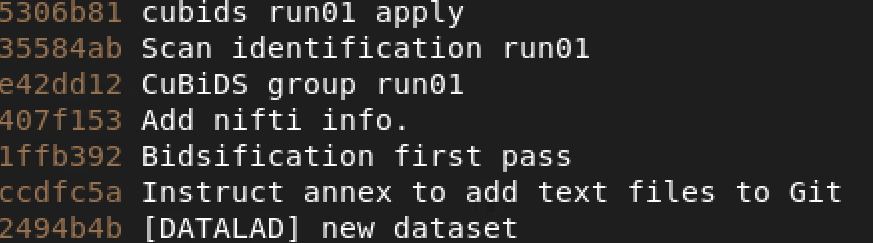
versus when in theBIDS/sub-HM2MOR40C the log reads:
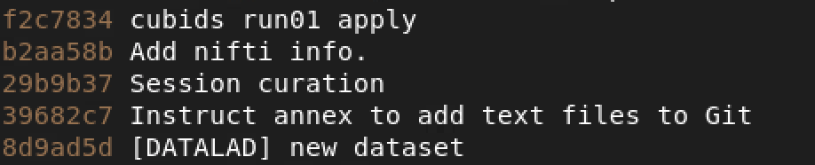
We can see that there is no commit for the ‘CuBiDS group run01’ step since that was only a top level save and not a recursive sub-dataset save.Now we continue to the next stage! ➡️
6.5 Behind The Scenes
Behind the scenes are 4 local scripts, 6 containerized scripts/dictionaries, and 1 containerized python packages
6.5.1 Local Scripts
6.5.1.1 code/run-cubids-prep.sh
- Runs
code/run-clin-dataorg.pycubids-prep command
- If previous command successfully completes, runs cubids-apply command. Upon error, script stops
6.5.1.2 code/run-clin-dataorg.py
- Concatenates subject specific heudiconv performance tables3 into
proc_summary.tsvand removes the individual tables after concatenation.
- Makes table with filenames for any
problemtatic_scans.
- Removes heudiconv run incrementors in the
/mnt/isilon/bgdlab_processing/Data/tmp_heudiconvspace.
- Runs
cubids add-nifti-infowithin the container, saving changes in datalad if run successfully, quits upon failure.
- Runs
cubids groupwithin the container, saving changes in datalad if run successfully, quits upon failure
- Runs
identifyFilesFromCubids.pywithin the container, saving changes in datalad if run successfully, quits upon failure
- Runs
code/cubids-apply.shscript on the entire dataset if number of files less than 4000. Else, it creates 10 batches with equal number of subjects to speed up the process
6.5.2 Containerized Scripts
config.yml
- Config file required to runcubids groupspecify which metadata to aggregate and tolerance ranges to apply
identifyFilesFromCubids.py
- Script that looks to identify specific sequences specifed in the parameter range table using custom tolerance ranges that couldn’t be specified in the CuBIDS config
parameter_ranges.tsv
- The metadata for the most common sequences within CHOP imaging data along with tolerance ranges to identify unknown scans and to label standard/variant scans
See heudiconv logs for table description↩︎